| オトメイトノベル アムネシア レイター IKKI ＆ KENT編 アムネシア レイター Shin ＆ Toma編 | |
| 鈴木あつみ | |
| (2015) | |
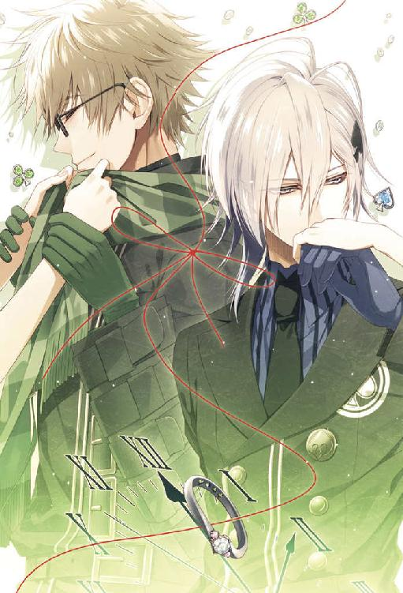
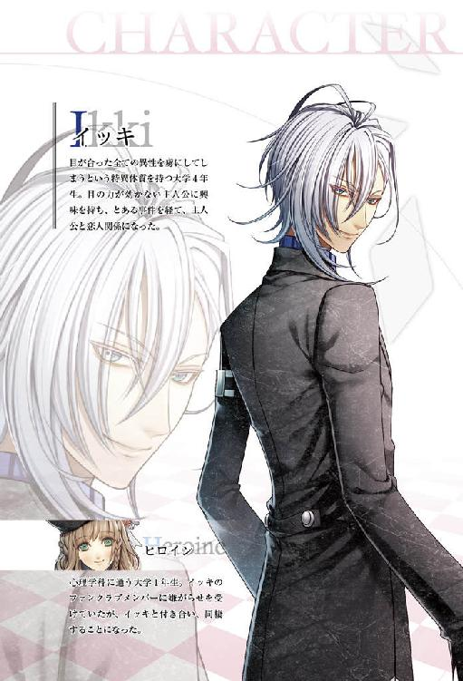
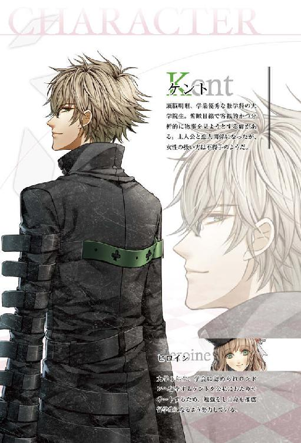
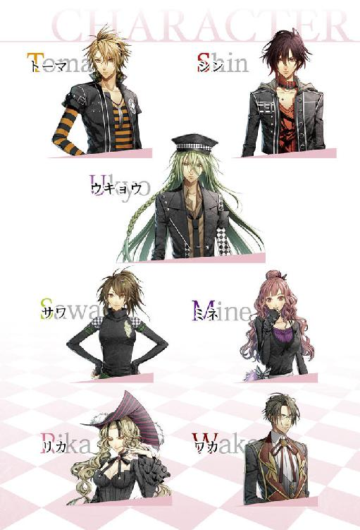
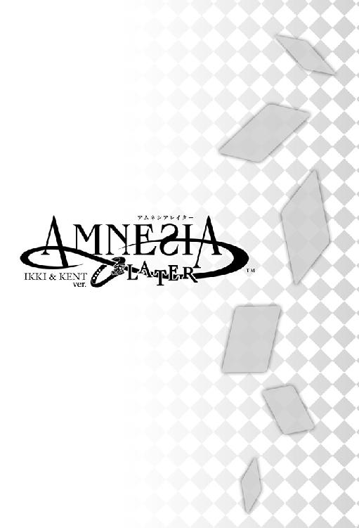
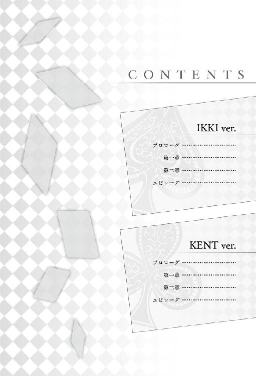
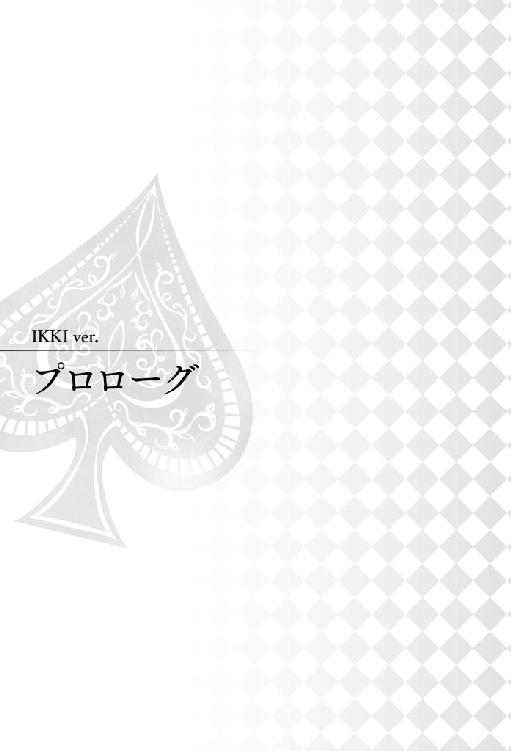
『７月１５日』
バイトを終えて店の裏口から行きつく路地に出ると、待ち構えていた数人の女の子たちが一斉にこちらを振り返って顔を綻ばせた。
毎度のことだけに、もう心の中でウンザリすることもなくなったこの光景に目を細めて、僕は皆に向かって微笑んだ。それを合図に、
「イッキー！」
彼女たちは口を揃えて僕の名前を呼ぶと、勢い込んで駆け寄ってきて、あっという間に周りを取り囲んだ。
「お疲れ様ー！」
「待ってたよ、イッキ！」
彼女たちの嬌声が耳に障る。通りすがりの老人がちらりとこちらを見て眉を顰めたのがわかった。
「ん、ありがと。でも、もう少し静かにね」
口元で人差し指を立てて注意すると、彼女たちは悪びれない顔で笑い、こぼれそうなほど目を見開いて僕を見上げてきた。
「ごめーん、だってイッキの顔見たら嬉しくなって」
彼女たちの打算的な上目使いも、少し前までは女の子らしくて可愛いと思えたけれど、今は全くと言っていいほど心を動かさなかった。
その理由を、僕は知っている。
僕の中に揺るぎない存在ができたから。ただ一人、どうしようもなく愛おしく感じる彼女がいるからだ。
「ねえイッキ、もうお仕事終わりだよね？ どこか遊びに行かない？」
僕を取り囲んでいた一人が、するりと腕を絡めてきてそう言った。
「んー......今日はちょっとねえ」
これから彼女と待ち合わせをしている、と正直に伝えたところで、目の前にいる子たちは素直に引き下がる質ではない。むしろ、彼女の名前を出すことで、ことさら引き留められてしまうだろう。
恋人という特別な立ち位置であっても、女の子の扱いは平等であるべきだ。そんな暗黙の了解がＦＣ（ファンクラブ）の中にはある。
当事者である僕の意志なんてそっちのけで勝手に決められたことだけど、僕は彼女と出会うまであらがおうともしなかった。いや、あらがうことをやめてしまっていたんだ。
近づいてくる子たちの一様に虚ろな瞳は、僕を見ているようで、僕という器を通して別のどこかを見ている。誰一人、僕自身を見てはくれなかった。だから僕も、それなりの人間でいようと思っていたんだ。
そんな僕に、彼女だけは真摯な眼差しを向けてくれた。他の女の子たちとは一線を画す何かが彼女にはあった。
「そっかあ。イッキはいつも忙しいよねー」
女の子は諦めた口ぶりで呟くけど、絡みつかせた腕を解いてくれる気配は全くない。込められた力に、何がなんでも逃がすまいという執念さえ感じる。
彼女たちは気づいているのだろうか？ 自分たちがやっていることの矛盾を。
僕を異性として慕ってくれているはずなのに、僕の一番には誰もなろうとしない。付き合っては三か月という期限であっさりと身を引いていく後ろ姿に、いつも疑問だけが残った。
ふと、彼女と出会うまでの自分を思い出して、口に苦いものが広がった。
「ね、じゃあ駅まで一緒に帰ろ」
「私も私もー！」
「みんなで帰ろー！」
早く彼女のところへたどり着きたいのに、返事を待たずに女の子たちは歩先を駅の方に向けて、僕の腕を引っ張る。予定があると言っているのに、そう簡単には解放してくれないらしい。良く言えば積極的、悪く言えば強引な彼女たちを見つめて、僕は小さく溜息をこぼした。
「ハイハイ、駅までね。いいよ、行こうか」
「やったあ！」
同時刻にバイトをあがった彼女には、こういう展開も想定して、少し時間をおいてから待ち合わせ場所に向かうよう伝えてある。
それでも、一度駅まで行ってからまた引き返して来るのにはそれなりの時間を要するため、多少待たせてしまうだろう。真面目な彼女はいつも、僕がどれだけ遅れて行っても律義に待っていてくれる。
寒空の下、僕を待つ彼女を思い浮かべて心が痛んだ。
そんな気も知らず、僕を取り囲む女の子たちは楽しげに雑談を始める。
彼女の元へと急く気持ちを抑えて、僕は内容のない話にそぞろな相槌をうった。
──彼女と付き合い始めて今日で一か月半。
僕にとって彼女と過ごす時間はあっと言う間で、お試し期間の半分が、もう過ぎようとしている。
三か月間、試しに付き合ってほしいと言って僕たちの関係は始まった。仮そめの繋がりに、彼女はどこか納得しきれていなかったけれど、付き合いながら好きになれるか考えればいいと僕が強引に話をつけた。
あれから、彼女の気持ちは少しでも僕に向かって前進してくれただろうか？
僕を取り囲む環境のせいで、外で会う時はあまり人目につかないよう常に周りを気にしたり、ＦＣに待ち合わせを悟られないよう、今日みたいに時間差を置いて行動している。こんな面倒な付き合い方をしているのに、彼女から文句を言われたことは一度もない。むしろ彼女の方に気を遣わせてしまっている。
それは僕にまだ興味を向けてくれていないのか、それとも、もうどうでもいいのか......。
前者ならまだしも、後者なら本当にへこみそうだ。
僕を待っている間、少しでも寂しいと思ってくれていたりすると嬉しい。というのは、僕の自惚れだ。
未だに脈のある素振りを見せない彼女を心の中に描いては、どうやったら笑顔が見られるだろうか？ なにをしたら喜んでくれるだろうか？ と、乙女のような考えが錯綜する。
自分でも可笑しくなってしまうくらい、僕は彼女に夢中だ。
こうして今、他の女の子たちと一緒にいる時さえ、頭の中は彼女でいっぱいで。
「......っ」
思わず噴き出してしまった僕に、隣を歩いていた子が不思議そうな眼差しを向けてきた。
「なぁに、イッキ？ 面白いものでもあった？」
「ううん。......こんなこと、なかったのになと思って」
「え、何の話？」
「ちょっとね......」
緩みかけた口元を正して、愛想笑いで追及を誤魔化した。女の子は少し頭を捻っていたけれど、すぐに他のメンバーの話が割り込んで、些細な疑問は蚊帳の外へと飛ばされたようだった。
漫然とした時間を過ごしていた僕に、彼女がもたらしてくれた変化は大きい。
まだ彼女から〝好き〟だと言われたわけじゃない。それなのに、彼女と過ごせる今が幸せ過ぎて仕方ない。恋愛というのは、相手を想うだけでこんなにも心が弾むものだとは思わなかった。
──早く、彼女に会いたい。
駅に着くと、ぐずる女の子たちをどうにかあしらって、追いかけられていないことを注意深く確認してから道を引き返した。来た道をそのまま戻ってはまた遭遇してしまう可能性があるため、あまり人目のつかない込み入った路地を全速力で駆けていく。
住宅の塀でうたた寝をしていた猫が、僕が過ぎ去った後の風を受けて驚きの鳴き声をあげた。
彼女が待つ約束の場所まであと少し。目の前の道を抜ければすぐ見えてくる。
交差点の手前まで来ると徐々に減速して立ち止まった。荒れる息に連動して、ばくばくと脈打つ胸に片手を添えると大きく深呼吸する。何度かそれをくり返して乱れた呼吸を整えると、僕はゆっくりと角を曲がった。
「......あれ？」
待ち合わせ場所を眼前に、僕はまた足を止めた。彼女がいるはずのところに、その姿がない。いつもなら、人通りがある地下鉄の出入り口を避けて、高架下の支柱で身を隠すように佇んでいる彼女が、そこにはいなかった。
別の場所に移動したのかと、周辺をぐるりと見渡してみたけれど、やっぱり彼女らしい影には出会えなかった。
待たせ過ぎたから、あきらめて先に帰ってしまったのか？ いや、彼女は連絡もなしに帰るタイプじゃない。どんなに時間がかかっても、ずっと待ち続けるだろう。
携帯を取り出して、アドレスから彼女の番号を探した。そして、電話をかけようとしたとき、
「イッキさん！」
聞きなれた柔らかい声が耳を掠めた。声のした方を振り返ると、冥土の羊の方角から彼女が小走りに駆けてくるのが見える。
彼女の滑らかな髪の毛が、走るのにつれふわふわと軽やかに揺れていた。
「あれ？ いた。どこ行ってたの？ 待たせてごめんね」
「ごめんなさい、お店の前でシンさんと話し込んでました」
「イッキさんが走っていくのが見えて、慌てて追いかけてきたんですけど......足、速いですね」
駆け寄ってきた彼女はそうとう急いでくれたのか、何度も肩を上下させて呼吸を荒くしている。落ち着かせようと背中をさすると、彼女は顔を上げてにこりと笑った。
「は!? 走ってきたの!? っていうか僕が走ってるとこ見てたの!?」
まさか彼女に見られていたとは思わなかった。体裁など構わずに全力で走っていたところなんて、なんだか格好がつかないし見てほしい場面じゃないのに。
「うわ......気付かれないように離れて息整えてたのに。何見られてんだ。恥ずかしいな」
居た堪れなくなって片手で顔を覆うと、彼女が隣で小さく笑った。
「......ふふふ。実は、前から走ってくれてるの、知ってました」
「そうなの!? あーもうこの子は、僕の恥ずかしいところばっかり見るな」
「恥ずかしい、でしょうか。うっかり見てしまったところの方が私、好きです」
彼女から自然に出た〝好き〟という言葉に、一瞬、鼓動が跳ね上がった。
意図的に発した言葉ではないと頭の中では理解しているはずなのに、柔軟に処理してくれない。隙あらば自分にとってポジティブな言葉に変換してしまいそうになる。
「あのね。簡単に好きなんて言わないでくれる？ 僕は君に告白して、返事を待っている身なんだけど」
苦笑しながら指摘すると、彼女は少し戸惑う視線をよこしてから、薄く口を押し上げた。
「......簡単に言っているわけでは、ないです」
「それって......僕は自惚れてもいいセリフ？」
「あ、いえ、それは......」
──違う。
そう彼女は言いたいのだと、察しがついた。
僕の中で膨らみかけた淡い期待が、穴を空けられた風船のように萎んでいく。
「............」
何か言いたげに視線をしきりに彷徨わせていたけれど、言葉の続きは紡ぎだせないまま、やがて彼女の瞳が伏せられた。
「......その、お返事については、もう少し待って下さい」
「......あ、そう。君って時々そうやって僕のこと突き放すよね」
彼女は何も悪くないのに、八つ当たりするような冷たい言い方になってしまった。僕が勝手に都合のいい返事を期待してしまっていただけなのに、寂しさが口をついて出てしまった。
お試し期間の半分が過ぎたことで、まだ煮え切らない態度の彼女に少し焦っているんだ。
子供のような悪態に、自分が情けなく思えて自嘲の溜息が零れた。そして、すぐに謝ろうと口を開きかけた時、
「......ごめんなさい」
なぜか彼女から先に謝られてしまった。行き場を失った言葉を飲み込んで、後味の悪さに胸が軋んだ。
「イッキさんのこと、好きです。でも......」
「お友達として好き、って段階？」
聞くと、彼女は曖昧に首を傾げ、唇を噛んだ。
何事にも誠実な彼女は、まだ不明瞭な答えを軽々と口にできないのだろう。
「いいよ、君に返事をもらう期限まで、まだあと二ヶ月あるから。八月が終わるまで、ゆっくり考えて」
「............」
彼女の気持ちがちゃんと自分に向かってくれるまで気長に待とう。そう自分に言い聞かせて、僕はいつもの笑顔を彼女に向けた。
『１ヶ月後 ８月３１日』
そして、〝交際期限〟の最後の日。
朱色に染まった空の下、僕たちは寄り添って高架下を歩いている。
繋がれた手から彼女の温もりを確認して、胸いっぱいの幸福感に、思わず破顔しそうになるのを堪えて口を引き結ぶと、僕は空を仰いだ。
幾度も彼女と共に歩き、眺めたこの空が、今日だけは全く別世界のものに見えた。極彩色の空が僕たちを優しく包みこんでいる。
「──今日で、八月も終わりだね」
感慨深く呟くと、隣で彼女もこくりと頷いた。
今日で約束の期限は終わりを告げる。けれども僕は、新たな次章へと続く始まりの日になるということを確信していた。
一方通行な想いばかりが先行して、色々と悩んだりもしたけれど、今はちゃんと彼女の気持ちが、真っすぐ僕に向けられている。だから──、
「でも、そんなこと関係ないって思ってもいいよね？」
同意を求めて彼女を覗き込むと、彼女は頬を赤く染め、顔を背けてしまった。照れ隠しのその仕草には肯定の意味が込められているのだと僕は知っている。
「......関係あるって言われても困る」
今更、付き合いを解消したいなんて言われても、聞き入れる気なんか毛頭ない。
「......もう目の力なんかに負けない。誰の目も気にしない。君を傷付けるようなこともさせない」
彼女の父親のことや、未だに僕を取り囲む環境にはまだまだ課題は多いけれど、これからの僕たちにはそれを越えていける力がある。そう信じてるから。
「覚悟、決めたよ」
彼女と一緒に、僕は生きていきたい。
「......君も、覚悟決めてね。絶対に離さないから」
そう言って僕は、駅前の賑やかな往来の中、彼女の柔らかな唇にキスを落とした。
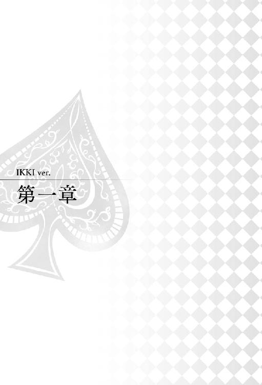
『９月１５日』
吹き抜ける風が心地いい昼下がり。街路樹から落ちた葉が、柔らかな風波に攫われて僕の足元まで辿り着いた。
僕は住宅の塀に背中を預けながら、彼女が今日まで住んでいたマンションを見上げた。築年数が浅いのもあって、日光を浴びた真っ白の壁がサングラス越しでも眩しいほどに光を反射している。
彼女がこのマンションへ越してきたのは半年前。実父と折り合いがつかず、一定期間、離れて暮らす選択をしていた。親に定められた期限が過ぎ、彼女は今日、僕のマンションへ引っ越してくる。
付き合い始めの頃は夢にも思わなかった展開に、今、僕の心は浮足立っている。気を抜くと緩んでしまいそうになる顔を手で制して、彼女の退去手続きが終わるのを待った。こんな何もない住宅街の道端でにやけていたのでは、ただの変質者だ。
しばらくすると、マンションのエントランスに彼女の姿を見つけた。手続きが終わったのだろう。別に急がなくてもいいのに、小走りでこちらへやって来る。
「イッキさん」
「お疲れ様。無事に終わった？」
「はい。お待たせしてすみませんでした」
そう言って彼女は律義に頭を下げた。待ったと言ってもほんの一〇分程度で、普段僕が彼女を待たせる時間に比べたら待ったうちに入らない。
「いえいえ。順調に済んだみたいでよかった。ほっとした顔してる」
マンションに入って行った時は、緊張していたのか、ほんの少し顔が強張っていたけれど、今はそれも解けていつもの穏やかな表情に戻っていた。
「何か言われた？」
「綺麗に使ってくれて助かるって言ってもらえました」
嬉しそうに顔をほころばせて彼女は続けた。
「がんばって掃除をした甲斐がありました。手伝ってくださってありがとうございました」
「どういたしまして。まあ、僕はひたすら床を磨いてただけだけどね。自分の役立たずぶりに呆れたよ」
同居することが決まってから、僕たちは少しずつ引っ越しの準備に取り掛かって来た。彼女の荷物自体、そんなに多いわけではなく、引っ越し先である僕のマンションもここからそう遠くない場所にあるため、引っ越し業者を手配するほどでもなかった。そのため、僕も手伝って、自分たちで引っ越し作業をすることにして、時間を見つけては徐々に荷物を移動していった。
荷物運びには僕の男手は存分に役立つことができたけど、掃除に関しては彼女の指導がなければ完全に足手まといになっていただろう。
普段、こまめに掃除しているつもりでいたのは何だったのだろうと思えるくらいに、僕の掃除知識は薄っぺらいものだった。
「一人暮らしして何年も経つのに。掃除って奥が深いんだね」
彼女が駆使していた技の数々を思い出して、僕は低く唸った。
「うちも気付かないところで汚れてるんだろうな。今度大掃除しないと」
「年末には、二人でやりましょうね」
「そうだね」
頷きながら、彼女の言った言葉に、ふと胸が温かくなるのを感じた。
「......いいね、こういう約束。君がこれからも傍にいるんだって実感する」
覚えているのかもあてにならないような先の約束。だけどそれは、終わりの見えない彼女との関係を意味している。
「あのさ、一応、最初の一ヶ月はルームシェアお試し期間ってことになってたはずなんだけど」
年末のことを言い出したということはどういうことなのか、わかっていない彼女に、僕はワザと咳払いを挟んで指摘した。
「君は年末も僕の家にいてくれるつもりなんだね」
「あ......」
案の定、気づいていなかった彼女は僕の指摘にぽかんと口を開け、ぱちぱちと大きな瞳で瞬きをした。
「忘れてた？ そういう話だったって」
「......忘れてました」
「ま、忘れてたなら忘れたままで構わないよ。大したことじゃない」
お試し期間とは良く言ったもので、彼女を不安にさせないためのポイントにすぎない。万が一、僕との生活が彼女に合わなかった場合に、逃げ場がないのは可哀想だと思って提案したものだったけれど、その心配もあまりなさそうだ。
「僕はもちろん一ヶ月後も君と暮らし続けたいと思ってるよ。試しに同居してみよう、なんて強引に押し切っちゃったけど、君も内心は同じ気持ちだってことだよね」
勝手に納得して頷いて見せると、彼女は照れたのか頬を僅かに染めて僕から視線を逸らした。
「うん、年末に大掃除ね。それを聞いて少し安心したかな」
わざと声を大にして言うと、ちらりと彼女が僕を見上げ、
「......傍に、いますよ」
小さな声で囁いた。普段は恥ずかしさに負けて、自分から積極的なことを言わない彼女が、確かにそう言った。
嬉しさが込み上げて、ここが公道じゃなければ思い切り抱きしめていたところだ。
「うん、離さないよ」
「......っ」
さっきまで我慢していた顔の崩壊が、もう止まりそうにない。総崩れになる前に家へ戻った方が賢明だ。
「さて、それじゃあ帰ろうか。君の新しい家にね」
「はい......！」
マンションの方に足先を向けると、彼女は一瞬肩を強張らせてから僕の隣に並んだ。
「緊張してるの？ あんまり気負わないで。手貸して。繋いで帰ろう」
華奢な彼女の手を優しく受け止めて指を絡ませる。
「ねえ。僕は、君と一緒に暮らせるだけでとても幸せなんだよ」
「......私も、です」
彼女は微笑んでみせるけれど、その笑顔にはやっぱりぎこちなさが滲んでいた。
まあ、この場合、緊張するなという方がおかしいのかもしれない。彼氏とはいえ、男の家に上がるわけで、多少の警戒心はついてくるだろう。まして僕の場合は特に悪戯しかねない。自分で言うのもおかしな話だけど、彼女を前に悪戯しないでいられる自信はないに等しいから、僕への警戒心は持ち合わせていた方がいいと思う。
これから先、どれくらい僕の理性が持ちこたえられるか微妙だけど、とりあえず彼女を悲しませるようなことはしないようにと心の中で自分に言い聞かせてマンションへと向かった。
マンションに着くと、彼女は興味深げにきょろきょろと建物を見渡していた。何度か荷物を搬入する時も部屋に来ているため、目新しいものはこれといってないはずなのに、彼女の目は興味深げに忙しなく動いている。
何か気になることでもあったのかと聞くと、実際住むとなると景色が変わって見えるのだと彼女は言った。言われてみれば確かに、彼女が当たり前に僕のマンションに居るのが新鮮に思えてくる。
彼女と一緒に暮らすという実感がジワジワと湧いてきて、くすぐったさに僕は目を細めた。
「お邪魔します」
玄関のドアを開け、彼女に中に入るよう促すと、彼女はいつもと変わらない挨拶をよこした。
「言うと思った。違うでしょう。今日からここは君の家だよ」
自分の家に入るのに〝お邪魔します〟ではおかしい。
「あ......」
はたと立ち止まると、彼女は一呼吸おいて真剣な目で言った。
「......ただいま」
こんな挨拶ひとつにも緊張の色が隠せない彼女が愛らしい。
「おかえり。......とりあえず、段ボールを開いちゃおうか」
こういうのも、何だか新鮮で楽しく思える。
今日からはお互いに帰る場所が一緒だ。『またね』と言って離れることも、次に会う約束をすることもなくなる。彼女との距離がぐんと近くなったことが嬉しくてたまらない。
彼女に続いて部屋に入ると、リビングに積まれたままになっている段ボールを見下ろして袖を捲った。
「と言っても、少しずつ運んで来てたし、家具は処分しちゃったし、大した作業は残ってないんだよね」
朝運んできた最後の段ボールは、四つほど。徐々に片せばいいかとも思うけど、僕の部屋はワンルームで、大きな荷物がリビングにあると生活するスペースがあまり確保できなくなってしまう。そのため、さして多くもない荷物だし、できる内に整理してしまった方がいいだろう。
「今日持ってきたのは、着替えとか食器類とかあと洗面用品くらいだったよね？」
「はい」
彼女が段ボールの側面に書かれた品名を確認してから、ふと首を傾げた。
「食器や洗面用具が意外と大荷物になってしまったんですが、置く場所はありますか？」
「うん。一応、君に言われて棚の場所を空けといたよ。でもどうかな。一人暮らし向けの部屋だし、収納はそんなに多い方じゃないんだよね」
彼女のために空けたスペースと、目の前にある荷物を頭の中で照らし合わせて僕は小さく唸った。
「入れてみて入らなかったら、また考えようか」
新しい収納家具を検討するとか、僕の不要なものを処分するとか、やりようはある。
「はい。じゃあ段ボール開けますね」
「あ、待って。その食器って書いてある段ボールは僕がやるから、もっと軽いのをやって」
一番身近な段ボール箱に手を伸ばしかけた彼女を止めて、僕は〝衣類〟とメモ書きされた箱を持ち上げた。
「洋服がいいかな。僕は手伝えないし。クローゼットの左側を空けてあるから、好きに使ってね」
「はい」
クローゼットはリビングの玄関側にある。ウォークインと言っていいのかはわからないけれど、二人分の洋服も十分収納できるほどの大きさで、引き出しも数段、備え付けられている。
クローゼットの前まで箱を運んであげると、あとは彼女に任せることにして、僕は食器類と書かれた箱を持ってキッチンへ向かった。
ガムテープで閉じられたフタを開けると、割れないよう専用の梱包材に包まれた食器や調理器具がいっぱいに詰まっていた。割れ物も含まれているため、慎重に手に取って棚に収納していく。
彼女の持ってきた器具は、自炊しているというだけあって、一人暮らしにしては作りのしっかりとしたものが多い。必要最低限の調理器具しかなかったキッチンの棚が、本来の機能を取り戻していく。
時折、女性らしい可愛い食器に心和まされながら、黙々と作業していると、ひとつのコーナーがあっという間に埋まった。マグカップが想定よりも多く、棚に入りきらず幾つか手元に残ってしまった。
「......困ったな」
他の所へ入れようにも、丁度いいスペースが見当たらない。
僕も彼女もコーヒーや紅茶はよく口にするため、カップの数は二人分を合わせると自然と多くなってしまう。それにしても、彼女は僕以上のこだわりがあるのか特色の違ったカップが一人にしては多すぎるくらい詰まっていた。喫茶店でバイトしているだけあって、こういった食器類にも興味があるのかもしれない。彼女の知らなかった一面を発見したようで嬉しくなった。
ともかく、入りきらないのは仕方がないため、彼女に良く使うものだけ選定してもらわなければならない。
僕は手に持っていたカップを一旦、段ボール箱に戻して、彼女の元へ向かった。リビングにはドアもなく通じているため、覗き込むとすぐ彼女の姿が見える。
「？」
衣服を片付けているはずの彼女に声をかけようとして、やめた。
彼女はまだ空のままのクローゼットを見つめて、ぼーっと立ち尽くしていた。何か物思いに更けているようで、僕がいるのにもすぐには気付かなかった。
「......！」
熱心に視線を送るとようやく気付いてくれ、彼女はびくりと肩を震わせた。
「マグカップがずいぶんあるんだけど、入らないからどれか選んでくれる？ ......どうかした？」
さりげなく立ち尽くしていた理由を聞くと、
「いえ、なんでもありません」
恥ずかしそうに頬を少し赤らめて首を振った。
なんでもないはずがない。ただ呆けていたにしては彼女の反応に違和感があった。彼女は感情や思っていることが顔に出やすいから、何かあるとすぐわかる。
「あれ、まだ何も開けてないね。クローゼット開いて何か考えごとしてたの？」
「はい、ちょっと。でも大したことではないので......」
ダイレクトに聞いてみたが、彼女はうやむやにして誤魔化すつもりらしい。
手分けして荷解きを始めてからそれなりの時間が経っているのに、彼女の足元に置かれた段ボールは開封すらされていない。とすれば、相当な考え事をしていたのだろう。
「ふうん。怪しいな。何でそう後ずさるの。言えないようなこと考えてたの？」
「えっと......」
じりじりと詰め寄ると、彼女は僕が近づく度に目を左右に彷徨わせながら一歩、二歩と後ろへ下がっていく。あきらかに何か隠している証拠だ。
「言わないとキスするよ？」
「......！」
真剣な眼差しで告げると、彼女は一瞬目を見開いてから、唇をとがらせて、
「それは、罰になりません......」
と呟いた。
「ならないんだ。じゃあご褒美にしようか。言ったらキスしてあげる」
「............」
今度は甘さを声色に乗せて尋問してみたが、彼女は顔を紅潮させたまま瞳を伏せた。
「言わないの？ それなら勝手に想像しようかな」
思ったよりも頑固で口をわらない彼女に僕は手段を変えて挑発を試みる。僕を相手にどこまで耐えられるか楽しみだ。
「君はねえ、んーそうだな、たぶん今晩のことを考えてたんだ。僕と二人きりで眠るのはどんな気分かって想像してた。もちろん甘い気持ちでね」
彼女の表情を一つ一つ確認しながら僕は話を続けた。
「あ、違うかな。僕が君を誘惑するためにどれだけ甘い言葉を並べるか考えて、そわそわしてたのかも」
自身を抱きかかえるように組まれた彼女の腕が微かに震える。
「何て返事しようか悩んでた。当然、考えざるをえないもんね？ もしかして、楽しみにしてる？」
口を閉ざしたままの彼女からは当然返事がない。返事がないなら勝手に肯定するしかないだろう。
「うん、きっとそうだ。言わないならそういうことにしておくよ」
わざと大きく頷いてみせると、
「ち、違います......！」
彼女はむきになって否定し、赤くなった顔を上げた。
「私はただ......」
言いにくそうにモゴモゴと口の中で言い淀んだあと、観念したのか彼女は少しだけ口を開けて、
「このクローゼット、イッキさんの匂いがするなって思って......」
そう小さな声で言った。
「少し、嬉しくて......」
「え。それは......えーと、本当に？」
考えもしなかった彼女の答えに、僕の妄想が一気に散開する。邪念に満ちた自分の発言が若干恥ずかしい。
「僕の匂いがすると思ってクローゼットを開いたままぼんやりしてたの？」
「......おかしいでしょうか」
僕は首を振った。
彼女の言っているそれは、僕の生活の一部を感じ取って、歓迎してくれている証だ。
これから僕たちはひとつの部屋を分け合って暮らしていくことになる。自然に彼女の物や香りもこの部屋にとけ込んで、それが当たり前と思える日々に変化していくのが僕は嬉しい。
もし、彼女も同じ気持ちでいてくれたのなら、全然おかしくなんかない。
「あのね、そんなこと言われたら、キスしないわけにはいかないでしょう」
罰とかご褒美とかじゃなく、純粋に彼女と愛を確かめ合いたくて腰を抱き寄せた。
「............」
せっかくの甘いシーンだというのに、彼女は赤くなった真顔で目も閉じないまま硬直している。場慣れしていない彼女の様子に、唇に触れるすんでのところで小さな笑いをもらしてしまった。
「......硬くなってる。まだ恥ずかしいんだ、キス」
僕の言葉で状況が飲み込めたのか、静止していた彼女の瞳に光が灯って、わたわたと身じろぎ出した。
「恥ずかしいです......！」
「匂いを覚えるくらいいつも近くにいるのに？」
「......っ」
からかうと、恥ずかしさを耐えるように彼女の口がきゅっと引き結ばれた。
「ねえ、僕の匂いってどんな匂い？」
「......コーヒーの匂いかなって、思いました」
「コーヒーか。なるほど、毎日コーヒーばっかり飲んでるからね」
納得して、今度は彼女の耳元に顔を寄せた。
「君はバラの匂いだな。これってシャンプー？ それとも香水？」
「......シャンプーです。バラの匂い、わかりますか？」
「わかるよ。すごく君に似合う」
彼女の周りに香る花の優しい匂い。この香りが鼻を掠める度に彼女の存在を感じて、僕の心を穏やかにしてくれる。
「同じシャンプーの匂いっていうのも同棲カップルっぽくていいけど、君の匂いは変えてほしくないな」
「同棲ではなく、ルームシェアです......」
「あーそうだったね。いずれは同じ意味になると思うけど」
「............」
「ま、シャンプー二つっていうのもルームシェアらしいかもね。お風呂場は狭くなるけどさ」
全く同じ匂いがするというのも悪くないけど、そうすると、恋人というよりもっと違う形の──、家族に近い印象を受ける。そんなことを言ったら、あくまでもルームシェアだと言い張る彼女だから、変に動揺してしまうだろう。僕は口に出さずにおいた。
「あ......そうですね、お風呂場が狭くなりますよね。すみません、色々持ち込んで」
彼女は自分の荷物を思い出して、すまなそうに眉根を寄せた。まだ開けていない荷物の中身は確認していないけど、色々と彼女が言うからにはバスグッズだけでも二、三個ではないのだろう。女の子だしそれも仕方ないのかなと思う。
量によっては収納ラックを検討しようと考えていると、彼女はおずおずと顔を上げた。
「あの、念のため聞きますが、イッキさんが私のシャンプーを使うのはおかしいですよね」
「んー......それはむしろ君に聞きたいんだけど、バラの匂いがする男ってどうなの？」
「えっと......」
彼女は少し考えてから、
「イッキさんならきっと似合うと思います」
大真面目な顔をして頷いてみせた。
「え、そう？ 似合うのもどうなんだろ」
彼女にどんな風に見られているのか一抹の不安が過った。安っぽい恋愛ドラマに出てくるような、バラを背負っている男に見られていないことを祈るばかりだ。
でも、香りを共有するというのは悪くない。
「君がそう言うなら、一回くらい借りてみようかな。シンに嫌な顔されそうだけど」
「嫌な顔、されるでしょうか」
怪訝な表情で去っていくバイト仲間の顔が頭に浮かんできて笑えた。
「されると思うな。まあいいや。シャンプーの前にマグカップを選んでもらっていい？」
「あ、はい。そうでした。すぐ行きます」
「ゆっくりでいいよ。君とアレコレ考えるのも楽しんでるからね」
軽い足取りでキッチンへ引き返す僕の後を、彼女が追ってくる。
引っ越しの片付けだけでもこんなに楽しいのに、暮らし始めたらどんなに楽しいだろう。想像するだけで胸が躍った。
しばらく荷物の整理に追われ、気が付くと窓の外はすっかり日が暮れかけていた。
薄暗くなった部屋に明かりを灯して、凝り固まった背筋を伸ばすと、酷使していた部分の筋が小さな悲鳴を上げる。空になった段ボール箱を畳んで部屋の端に寄せると、僕の担当しているものは全て片付け終えた。
ぐるりと部屋を見渡せば、数日前までなんの面白みもなかった男の部屋が、息を吹き返したように明るくなっていることに気が付いた。点在する彼女の私物が部屋に彩りを加えている。それらを眺めているとじんわりと心が満たされていくのを感じた。
「よし。クローゼットはこれでいいかな」
片付けをしていた彼女が一人ごちたのを聞いて、声をかけた。
「そっち終わった？ そろそろ夕飯の支度しない？」
「そんな時間ですか？」
彼女も片付けに夢中で気づいていなかったのか、僕の問いかけに目を丸くした。
「夕飯のこと全然考えてませんでした。買い物に行かないと......」
「夕飯の当番も決めないとね。ちなみに君って、外食とかお総菜は許せないタイプ？」
「いえ、そんなことないです」
「そう、ならよかった。それじゃあ今日はちょっと歩いて外で食べない？ お互い疲れたでしょ」
なんだかんだで彼女も僕も朝から動きっぱなしだ。よく働いた日くらい、楽してもいいだろう。それに、単純にこれから食材を調達して作るという工程が、疲れた体では少し億劫に思えたのと、彼女と同居を始める今日だから特別なご飯にしたいと思ったのもあって外に誘った。
「少し贅沢して、乾杯しようよ。ルームシェア開始祝いってことでさ。あ、君はソフトドリンクだけどね」
「素敵ですね」
そう言って、彼女は快く承諾してくれた。
「うん。手が離せそうなら支度して。ついでに近所の買い物スポットも案内するよ」
たとえ夜でもサングラスをかけないといけないこの目のチカラが忌まわしい。
僕らが今歩いている道は、霊園沿いということもあって、日が落ちると街灯以外頼れる明かりはない。もうだいぶ慣れはしたけれど、サングラス越しの夜道は歩きづらいものがある。かといって、気を抜いてサングラスを取ってしまうと、大切な彼女との時間を妨害されかねない。
僕は小さく溜息をついて自分を呪った。
「前から少し気になってたんですけど......」
ふと、隣を歩いていた彼女が躊躇いながら話を振ってきた。
「家の近所にお墓があるんですね」
「ん、そうなんだよね。このロケーションのおかげで、少し家賃が下がってるんじゃないかと思うな」
話しながら、心の中で納得がいった。
霊園の道に差し掛かったときから、彼女にしては妙にくっついてくるなと思っていた。僕としては嬉しい限りなんだけど、視線もそわそわと落ち着かないし、何かあったのかと気になっていた。
おそらく彼女はお墓が怖いんだ。
「あ、もしかして怖い？」
聞くと、彼女は小さく頷いた。
「......少しだけ」
「もっと傍においで。手、ぎゅっと握っててあげる」
繋いだ手を僕の方に引き寄せて体を密着させると、少しは安心できたのか、彼女がほっと息をつく。
「この道、君に寄ってきてもらういい口実になるかな」
お墓を前にそんなことを言うのも不謹慎に思えるが、浮かれている僕はそんなのお構いなしだ。
「あー......とは言っても毎晩一緒にここを歩けるのは一週間だけか。君の大学が始まったら、別々に帰宅することも増えるよね」
「そうですね......」
「九月に入ってからずっと一緒にいられたから......寂しいな」
これから先のスケジュールを頭の中で反復して、僕はがくりと肩を落とす。この幸せな時間を一日中満喫できるのも残りわずかだ。
「起きて、バイト行って君に会って、家まで手を繋いで帰って、時々はお茶をご馳走になって......。ずいぶん二人で過ごしたね。それでも全然足りないけど」
足りないけど、昨日までとは違う。
「今日からは寝る前まで君といられるんだよね......不思議な気分だな」
朝一番に彼女を見て出かけ、夜には眠りにつくまで彼女が傍にいる。なんとも言えない充実した感覚が胸をいっぱいにした。
「ねえ、大学が始まるまでの残り一週間は僕にくれるよね。会えなくなる分も君を補充したい」
「......はい」
照れくさそうに微笑む彼女に、
「私も一緒にいたい、とは言ってくれないの？」
と、思わず聞いてしまった。彼女はきょとんと目を丸くしてから、どうしたものかと思案顔になる。
「あ、こういうこと聞くから、恥ずかしがって黙っちゃうのか。わかってるんだけど、ついね」
彼女は元々、口にして愛を囁くタイプではない。僕がペラペラとしゃべってしまうため、よく彼女にも同じことを求めては困らせてしまう。自覚しながらも直せないのは、もしかしたら言ってくれるかもしれないと、どこかで期待してしまっている自分がいるからだ。僕も懲りないなと心の中で自嘲した。
「はあ......大学なんて始まらなければいいのに。こんなこと初めて思ったよ」
「ふふ」
子供じみたぼやきが口をついて出ると、彼女がおかしそうに笑った。
でも、僕にしてみると本気で笑いごとではない。三か月かけてようやく彼女の気持ちが僕に向いたというのに、この幸せな気持ちをじっくり噛みしめる時間があと一週間しかない。待ちわびた分だけ反動も大きくて、残された時間だけでは僕には不十分過ぎるくらいだ。
どうにか夏休みを延ばせないかと馬鹿なことを模索してみるけど、できるはずもなく、僕は盛大な溜息を零した。
「しかも、大学が始まる前にゼミの一泊旅行もあるしね。今から憂うつだな」
サボれるものならサボってしまいたいが、卒論の参考にしたい部分もあるため、さすがに行かないわけにはいかない。
「温泉旅行でしたよね。憂うつなんですか？」
僕の顔色を見て、彼女が心配そうに眉根を寄せた。
「あ......ゼミってもしかして、ＦＣの人たちも......」
「ああ、ごめん。違う違う。あの団体に入ってた子もいるけど、嫌な思いはしてないから大丈夫だよ。君と離れるのが辛いだけ」
そう言うと、彼女は呆れた様子で脱力した。
「もう。せっかくなんですから、楽しんできてください」
「......うん。まあ、楽しんでくるよ」
彼女の手前、前向きな発言をしたものの、いつものパターンだと女の子たちに阻まれて思うようにもいかないだろう。難儀な運命を心の中で呪ってから彼女に向き直った。
「同居開始したばっかりなのに、留守にして悪いね。この道、一人で大丈夫？」
二人で歩いていても怯えているのだから、一人だと歩けないのではないかと心配になってしまう。最寄りの駅から歩いてくるには最短の道だけれど、霊園を通らない回り道も教えておいた方がいいかもしれない。
「大丈夫です。明るい内に帰るようにします」
「その方がいいかもね。幽霊がいるかどうかはともかく、道が暗いからさ」
この近辺で変質者とか事件の噂は聞いたことがないけれど、彼女も年頃の女の子だし用心に越したことはないと思う。
話しながら歩みを進めていると、ふいに墓地沿いの植木がざわざわと揺れ、金色の光が二つ飛び出してきた。
突然のことに彼女はびくりと体を強張らせ無言で立ち止まった。
金色の光は僕たちを確認すると、一瞬目を合わせただけで、すぐ道の反対側へ駆けていく。「ミャー」という小さな鳴き声を残して暗闇へと消えていった。
あれはこの霊園を住み家にしている野良猫だ。
正体に安心したのか、彼女が胸を撫で下ろした。
「あ、でもね、朝は緑の匂いがして気持ちいいんだよ」
一見、お墓に囲まれて不気味に見えるこの道も、昼間は街路樹が日差しを遮ってくれるし空気が澄んでいて心地がいい。さっきの猫もここの気持ちよさにやられて住みついてしまったのだろう。
「静かだし、大学から近いし、僕は気に入ってるんだ。君にも気に入ってもらえるといいな」
そう言うと、彼女は怖さでがちがちに固まっていた手を緩めて、
「はい。明日の朝を楽しみにしてます」
いつもの優しい笑顔を見せてくれた。
マンションから徒歩圏にあるイタリアンレストランに着くと、僕たちは窓側席の一角に案内された。
街の喧噪から離れ、落ち着いた雰囲気のこの店は、夜は年齢層が高めの客が多く、若い女性はあまり来ない。そのため、女の子の視線を気にすることなく、ゆっくりと食事ができる穴場スポットとしてよく利用している。メニューを見なくても大体の料理がわかるくらいに常連の店だ。
クラシック調の椅子に腰を下ろすと、対面側に座った彼女にドリンクのメニュー表を手渡した。真剣に見入る彼女を微笑ましく思いながら、僕はぐるりと周りの席を見渡した。
いつも通りに客は老夫婦や中年のサラリーマンばかりだが、一つ想定外だったことに気付いて僕は顔を顰めた。
「......失敗したな」
「え？」
僕の呟きに、メニューから顔を上げ、彼女が問いかけるような眼差しを向けてくる。
「外食じゃなくて、買ってきて家で食べればよかった。もう二人きりに戻りたくなってる」
平日だから空いているだろうと踏んで来たのに、客席はほとんど埋まっていて、甘い雰囲気を作れる状況ではない。
「こんな人目のある場所じゃ、君に近付くこともできない」
それが想定外だ。空いているなら気づかれないようにスキンシップをとることもできるけど、今は難しそうだ。
大きな溜息を吐き出すとちらりと彼女に視線を送った。
「手を握りたい、って言っても、もちろん君は拒むんだよね？」
「ここはお店の中ですので......」
「やっぱりね。お堅い君ならそう言うと思った」
大仰に肩を落として背もたれに身体を預けると、ぼんやりと淡い照明が灯る天井を仰いだ。
「今日はずっと君を独占できるって思ってたのに。早く連れて帰りたいな」
言葉にするつもりなんかなかったのに、つい、思ったことがするりと口から出てしまった。
「もう......！」
彼女は口をとがらせると再びメニュー表で顔を隠してしまう。が、すぐに何かを思いついたとばかりに顔を上げた。
「あの、でもこういう場所の方が、話に集中できますよね？」
確かに、不本意ながら周りの視線を考えたら彼女に触れることもできないし、普段あまりできない話し合いもできると思うけれど。彼女とは何気ない会話の中でお互いのことを伝え合ってきたつもりだ。改まってする話もあったかなと頭を捻る僕に、
「今の内に色々と取り決めをしませんか？」
と、彼女は話を切り出した。
「人を家に呼ぶ時のこととか、食事当番とか......」
「同居の約束ごとってこと？」
「はい」
お互いに気兼ねなく過ごせるよう、ルールを決めようということらしい。
生活の上で僕から彼女に望むことは特に思い当たらないけど、初々しくてなんだか面白そうだ。
「僕から君にお願いしたいことはね、おはようとおやすみを言う時には、キスをすること」
家事は手が空いている方がやればいいし、彼女が嫌じゃなければ時間のある僕がほぼやってもいいと思ってる。だから、あえて望むならカップルらしいことの方が楽しいだろうと、僕得な要求だけを提示してみた。
「......同居の約束って、そういう趣旨のものでしょうか」
彼女の疑いの目が入るけれど、気にしないふりをして話を続ける。
「いってきますとただいまを言う時には、ハグをすること。一日一回は好きって言うこと。あと、湯上がりの姿は誰にも見せないこと。僕が独り占めするからね」
「イッキさん、真面目に考えてください」
「真面目だよ。当番のことも考えるけど、今のルールも加えておいてね？ 家に帰ったら表にしよう」
「えっと......表に、書くんですか？ おはようとおやすみのキスをするって......」
「うん。どこかに貼っておこうよ」
「恥ずかしいですから......！」
「でもあらかじめ決めておかないと、きっと君......」
恥ずかしがってやってくれないかもしれないから、と言いかけて、携帯のバイブ音に話を中断させられてしまった。メールなら良かったのに、携帯はズボンのポケットの中で振動を続けている。
仕方なく取り出して画面を見ると、大学の同期からの着信を知らせるウインドウが表示されていた。
「......あー......ちょっと電話。外出て話してくる」
「あ、はい。ごゆっくり」
「ごめんね」
そう彼女に言い置いて席を立った。
電話をかけてきた相手から、話の内容はなんとなく想像ができた。たぶんゼミの合宿の話だ。幹事である相手は大学の同期の男で、ゼミ関連以外は連絡をよこしたことがない。
大学の同性のほとんどは僕を遠巻きにしているし彼に限ったことではないけれど、時々、他愛ない馬鹿話でいいから連絡してほしいと思ってしまう。この目の効力がある以上、それも叶わない夢だ。
店の外に出て壁沿いに少し歩いたところで、僕は通話ボタンを押した。
「......待たせてごめんね。どうしたの？」
電話の向こうの彼は、少し硬い声色で用件を話し始めた。
「お待たせ」
電話を終えて席に戻ると、窓から景色を眺めていたらしい彼女がぱっと振り返った。
迷っていたドリンクはもう決めてしまったようで、メニュー表はテーブルに備え付けられているブックホルダーに立てかけられていた。
「おかえりなさい。早かったですね」
「......ん」
「大丈夫ですか？ 何かありました？」
顔を見るなり、彼女は心配そうな眼差しで首を傾げた。
僕のポーカーフェイスはなぜか彼女の前では効力を持さないので、いつも心内を読まれてしまう。彼女はどこか天然なようで、そういうところには敏感だ。電話で何かあったのだと察知して僕の様子をうかがっていた。
「......大丈夫だよ。でも嫌なこと思いだした」
「嫌なこと？」
「んー......えっと」
ついさっき聞いたばかりの内容を頭の中で反復して、また気が重くなる。
「ゼミの合宿で討論会をやるからって、こないだ幹事からミニレポート出されたんだった。忘れてた」
「あ......もしかして、今の電話は大学の方ですか？」
「うん。合宿の確認」
言い訳をするなら、彼女との同居に浮かれてレポートのことなんて頭の隅に追いやられていた。最愛の子と一緒に過ごせるのに、それ以外のことなんて考えられるわけがない。まして、ただでさえ気の進まない合宿だ。考える余地はないに等しい。
「まったく、思い付きでミニレポートなんてやめてほしいよね。言われたの今月入ってからだよ」
「それは大変ですね」
合宿まであと数日だというのに一文字も書き出していないのと、幸せの絶頂期に水を差されたのとで、気分はだだ下がりだ。
「よかった。暗い顔をしてたので、何かあったのかと思いました」
「僕にとっては重大事なんだけどな。大変だから癒やしてくれる？」
「えっ」
「何か話して。それでいいから。食事当番決めようか。掃除の分担も」
「それで、元気が出ますか......？」
「十分。......あーいいな。これからはちょっと落ち込んだ時、君の声が聞けるんだ」
この数言の会話だけでも少しＨＰが回復した気がする。彼女の声にはきっと僕だけに効く癒やしの特効薬が含まれているんだ。
「これは、思った以上に嬉しいな。うん、すごく......いい」
噛みしめるように呟くと、彼女は困り顔で肩を竦めてから、そっと腕を伸ばし僕の頭を撫でた。子供のように扱われるとくすぐったくて、思わず声を立てて笑ってしまった。
「ただいま」
「ただいま......！」
僕に続いて言った彼女の言葉尻が少し強張っていた。後ろを振り返ると、硬くなった様子の彼女が玄関先で靴も脱がずに、真っすぐ前を見つめて立っていた。さっき僕に指摘されたことを律義に意識している仕草がぎこちなくて可愛いらしい。
僕の視線を感じ取った彼女は、はっと我に返り、恥ずかしそうに目元を染めながら急いで僕の後を追ってきた。
「九時か......片付けの続きも残ってるけど、その前にお風呂入れよっか」
玄関から部屋に通じるドアを開けると、すっかり冷え切った空気が出迎えてくれた。異常気象のせいでまだ九月だというのに残暑どころか、夜や朝は冬のように冷え込む。
僕はともかく彼女を早くお風呂に入れて温めてあげたほうが良いかもしれない。ただでさえ引っ越し作業で疲れているのに体を冷えさせてしまっては体調を崩しかねない。
「ここのお風呂全自動なんだ。操作方法教えるから、ついてきて」
と言っても操作パネルのボタンを一つ押すだけなんだけど、そんな単純なことでさえ彼女は楽しそうに、「はい！」と溌剌な返事をすると、ぴょこぴょこと跳ねるように僕についてきた。
お風呂が沸くとすぐ、彼女に先に入るよう勧めた。彼女は遠慮してしばらくごねていたけど、最後は根負けしてのろのろと浴室に向かって行った。
彼女が入っている間、さっき決めたばかりの当番や約束ごとを表にしておこうとペンを握りしめたが、今の僕はどうにも気がそぞろでやめた。ペンをテーブルの上に放り出して、ベッドに背中を預けると真っ白な天井を仰いだ。
子供のお泊り会のような気分で、心が弾んで仕方がない。いつもなら門限に帰っていく友達が夜になってもずっといる嬉しさと、自分のテリトリーに別の誰かがいる不思議な感覚。
彼女の香りが残るこの部屋が僕を落ち着かなくさせている。
暇をもて余した手がなんとなしに携帯をいじり始め、ネットのニュース画面を開くけど、情報が頭の中を素通りしていくばかりだ。
「イッキさん、お風呂お先にいただきました」
扉が開く音と共に彼女の声が聞こえて、ふと現実に引き戻された。
「あ、おかえり」
振り向くと、頬を蒸気で火照らせた彼女が、パジャマ姿で立っていた。まだ湿気の残る髪や肌が彼女を妖艶に映し出している。
「............」
すっかり油断していた脳に、彼女の湯上りは抜群の破壊力をもって、一瞬、僕の思考を停止させた。
「な、何かおかしいですか？」
言葉を失う僕に、何かまずいことでもあったのかと、彼女は慌てて身の周りを確認し始めた。
フリーズしていた頭を叩き起すと僕は勢いよく首を振る。
「ううん、全然おかしくない。可愛いよ。こっち来て。抱きしめさせて」
「は、はい」
数歩の距離の彼女が待ちきれなくて手を伸ばすと、彼女の腕を掴んで引き寄せた。勢いのまま僕の胸に顔を埋めた彼女からはほのかに甘い花の香りがする。
「......うん、バラの匂い」
腕の中に収まった彼女の髪をすくって口づければ、まだ乾き切っていないそれは、幾つかの束になって指の間をすり抜けていった。
ふと、僕の視線の先にしどけない首筋が見えて、ふらふらと吸い寄せられそうになる。上気した彼女の体は媚薬のように僕を誘惑した。
「その格好、僕以外の人間に絶対見せないでね」
「......はい」
耳元に唇を寄せて囁くと彼女はびくりと体を揺らして頷いた。
「よしよし、そんなに緊張しないで。君が可愛いから少し抱き締めたかっただけだよ」
彼女を解放すると真っ赤な顔で俯く彼女の頭をポンポンと撫で、入れ替わりで浴室へと足を向けた。
「僕もお風呂入ってくるよ。適当にくつろいでて」
「はい、いってらっしゃい......！」
硬い彼女の声に見送られてリビングを出る。浴室へ向かいながら、僕は高鳴る鼓動をもてあましていた。
衣服を脱ぎ捨て風呂場のドアを開けると、熱を帯びた空気が一気に脱衣場に流れ込んで、熱に浮かれかけた僕の頭を叱咤した。
「あー...ホント危なかった......」
僕の呟きはお風呂の湯気の中へ消えていく。
あと少しで、衝動のまま彼女をどうにかしてしまうところだった。僕の抑止力はこんなにも危ういものだったのかと自分でも呆れてしまう。
心の不浄を洗い流す勢いで水圧を強めると、頭の上から少し熱めのシャワーを浴びた。
「イッキさん」
控えめなノックとともに少し遠くから彼女の声が聞こえる。リビングのドアの前で話しているのだろう。
僕はシャワーを止めて彼女の声に耳を傾けた。
「ノートを探したいんですけど、引き出しを開けてもいいですか？」
「んー？ どうぞー」
荷物を整理した際、彼女の文具類は僕の机の引き出しに仕舞っていた。一緒に使っているものだから好きに開けてくれていいのにと思うが、彼女の性格からできないのだろう。
「ありがとうございます」
律義に許可を取った彼女はそう言って、また引き返していった。
「お待たせ、上がりました」
「あ......！」
お風呂からあがってリビングに戻ると、彼女は目を輝かせてこちらを振り返った。
その表情は大好きな飼い主を待ちわびた仔犬のだようだ。
「イッキさんのルームウェア、初めて見ました......！」
「うん、そうだろうね。お互い、結構新鮮なものだね」
「はい......！」
「で、君は机の前で正座して何してるの？」
正確には、さっき彼女が開けてもいいかと聞きに来た引き出しの前で、膝を折って座っていた。
彼女の手元を見ると、可愛らしいノートのようなものが置かれている。どこか見覚えのあるそれの表紙にはアルバムと書かれていた。
「あ、そこに置いてあるの、もしかして僕のアルバム？ うわ、中見た？」
確か、引き出しの中に仕舞い込んでいたものだ。ノートを探している中で見つけてしまったのだろう。
「見せていただこうと思って、お待ちしてました......！」
背筋を伸ばし、力強く言う彼女に思わず笑ってしまった。
「あはは、そうなんだ。いいよ、見ようか。でも何見てもあんまり笑わないでね」
「はい......！」
彼女はうきうきした調子でアルバムを抱えてきて僕の隣に並んで座った。ベッドにもたれかかりながらアルバムの表紙を開くとまだあどけない顔の僕がこちらを見ている。
そういえば、彼女にこうして昔の自分を曝け出すのは初めてかもしれない。
「あ、これ......」
写真の一つを指さして彼女が微笑む。
「これは......女装ですよね!?」
「うん......高校の文化祭だね。カフェをやったんだけど、なぜかメイドの格好をさせられてさ。ロングヘアのかつらまで被せられたんだ。恥ずかしながら、これが人気でね」
あの頃を思い出すと、よくこんな格好ができたなと思う。若気の至りで女装する勇気があるのは、それなりに青春を謳歌していた証拠かもしれない。
「メイドと言っても、クラシカルなメイドですね。とても綺麗です」
「ありがと。複雑だけどね。実はこれが冥土の羊に勤めるきっかけだったんだ」
「そうなんですか!?」
彼女は驚きの声を上げ、まじまじと写真の中の僕を見つめた。
「文化祭でメイド喫茶をやることになって、参考に本物を見てみようって取材に行ったんだよ。僕さ、その時騒ぎを起こしちゃってね」
僕が店に入ったのを見た女の子たちが後を追って、次から次へと押しかけてしまった。それはそれで店の利益になるからよかったけれど、僕の隣の席に誰が座るかで揉めた女の子たちが水を撒き散らしたりグラスを割ったりで大変な騒ぎになった。
「え......目のせいで、ですか？」
「そう。それで店長に謝罪したんだけど、僕のことを気味悪がるどころか、うちで働かないかって言ってくれて」
下手をしたら警察沙汰にもなりかねない事態だったのに、ワカさんは口の端を釣り上げ不敵に笑ってみせた。
「少しくらいの騒ぎは許す、貴様の攻撃力は無限大だ、とか何とか言われて僕も感銘を受けたの。目のことを肯定的に言われたのは初めてだったからさ」
他人には理解されないと思っていた体質も含めて、ワカさんは僕を認めてくれたはじめての大人だ。
「へえ......素敵なお話ですね」
「結局店にはさんざん迷惑をかけてるわけだけど、ワカさんは相変わらず寛大だよね」
こんなに面倒な僕を平然と扱っているのだから頭が上がらない。
「朝礼では何度も怒られてるけど、それはまあ店長として当然のけじめだからね。個人的なレベルでは、すごく便宜を図ってくれてると思うよ」
「仲がいいですよね、店長とイッキさん」
「うん、最近時々二人で飲んでるんだ」
「そうなんですか!?」
意外だとばかりに彼女は目を丸くした。
「君のおかげかな」
「え......どうしてですか？」
「あの人ねえ、君に夢中になってる僕を面白がってるんだよ」
女の子たちにどんなに追われても、束の間の享楽だけを貪っていた僕が、今度は必死に彼女を追っている。彼女に振り回されている様がおかしいらしい。こっちは無我夢中だというのに、勝手な話だ。
「でもって僕は、そうやって僕に興味を持ってくれる人が大好きなの」
色目なしに見てくれる人は滅多にいないけど、世の中には彼女やワカさん、ケンのように、ありのままの僕を受け入れてくれる人もちゃんといる。家族にさえ見放された僕だけど、打算なしに過ごしてくれる人たちに出会えたとすれば、存外に幸せ者だ。
「だから、飲み友達ができたのは君のおかげ」
「......それは、きっと親しくなる時期が来ただけなんだと思います。私がいなくても、イッキさんと店長は気が合っていたと思いますよ」
「そうかな。そうだと嬉しいけどね。あ、次は？」
彼女が新たなページを捲ると、また懐かしい写真が出てきた。
「卒業式ですね。学生服を着ているところも、初めて見ました......！」
写真の中の自分は幾分、生意気な顔立ちで、写真越しにこちらを睨んでいるように見えた。
この頃は特殊な体質に振り回されて自暴自棄になりかけていた時期だ。寄ってくる人、全てが信じられなくなったり、離れていく友達を見ては悔しさと悲しみで胸が苦しくなったりと、あの頃の僕は数えきれない程の傷を蓄積していた。
思い出すと心の奥底で古傷が疼くけれど、現金な者で、隣で楽しそうに笑う彼女を見ると、苦い思い出の一つとしてあっさり片付けられてしまう。それほどまでに彼女は僕を強くした。
むしろ、彼女に一喝されるための体質だと考えると、この目もそんなにネガティブなものではない気がしてくる。
「イッキさん、今より髪が短いです」
「運動部だったからね。邪魔で短く切ってたんだ」
「何部ですか？」
「テニス。どっかに試合の写真もあったはずだけど」
「見たいです！」
鼻歌が聞こえそうなくらい揚々とした表情で彼女はページを捲っていき、数ページ先にテニスのユニフォームを身に付けた僕の姿を発見した。
「わあ......、かっこいい......！」
彼女の嘆息混じりに呟かれた言葉にぴくりと耳が傾く。
「え、ほんと？ 君からかっこいいなんて言葉聞いたの初めてかも」
「え、そ、そうでしたか？」
無意識で言ってしまったことに照れているのか、彼女は頬をかいた。
「たぶんね。照れ屋だからねえ、君。もっと言ってくれてもいいんだよ？」
できるなら毎日でも聞きたい。他の女の子には聞き飽きるくらい言われて惰性のように感じていたけど、彼女に言ってもらえるのは素直に嬉しい。
「......いつも、思ってますよ」
口を尖らせて言う彼女に、僕は首を大きく振って頷いた。
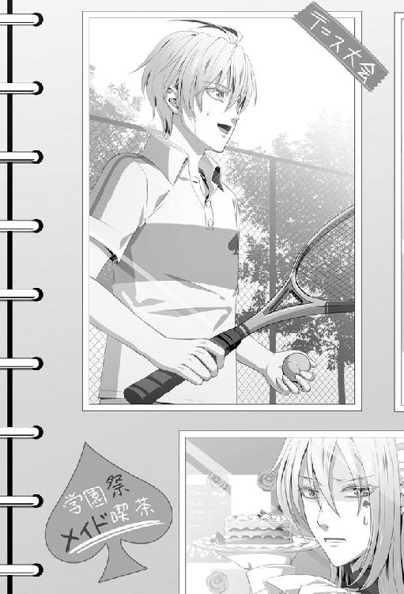
「へーえええ」
「......っ」
彼女は反応に困ったようで、言葉を詰まらせて、すぐ視線をアルバムに戻してしまう。
「つ、次を見ましょう！」
慌ててページを捲ると、今度は最近の一枚が出てきた。
「あ、これは今年のお正月ですね。バイトのみんなで出かけた時の写真」
初詣に行こうと誰かが言い出して、出かけた時のものだ。女性陣はそろって着物を身に付けている。写真の中で、朱色地に蝶模様の入った着物を纏った彼女が、笑いを堪えてはにかんでいた。その少し先で僕が顔に墨でバツ印をつけられ、悔しそうにしながら羽子板を持っている。
「イッキさん、顔に思いっきりペケつけられてます」
「あー正月ね。羽子板で惨敗した時ね！」
お参りを済ませたあと、神社の境内で羽子板を貸し出しているのを見つけて、対決することになったんだ。ワカさんが、「私に勝てたらお年玉をくれてやる」と言い出して、男性陣がこぞって勝負を申し込んでいた。
「僕ねえ、自信あったんだよ。勝つ気満々だったの。なのにワカさん強すぎるんだから」
拳銃を携えてるんじゃないかと思うくらい鋭い打球ばかりが飛んできて、苦戦した覚えがある。
「イッキさんが健闘してたの、覚えてますよ」
「全っ然健闘してないよ。振り回されて呆然としてた。覚えてなくていいよ、そんなこと」
「ふふふ」
「あーほら次めくって、次」
「はい、めくりますね」
急かす僕に含み笑いを浮かべながら、彼女は次のページを捲った。
こうして他愛ない話をしながら一緒に笑い過ごす時間はあっという間で、アルバムを一冊見終わる頃にはとっぷりと夜も更けていた。
「もうこんな時間か......。アルバム見てたら時間食ったね。そろそろ寝ようか」
組んだ手を天井に向け伸びあがってから彼女を振り向くと、彼女は硬い横顔でアルバムの裏表紙を凝視したまま微動だにしなかった。
「あ、そうですね......」
振りしぼられた声に彼女の心の色が滲んでいる。
「ん？ また緊張した？」
「......っ」
指摘したことが図星だったようで、ぴくりと強張った片眉を震わせた。
『何を考えたの？』と今聞いてしまったら、ここで合金のように固まってしまうかもしれない。そんな彼女も見てみたいと思うけれど、あまりからかい過ぎるのも可哀想だ。
「歯磨いてくる」
言って立ち上がり、洗面所の方へ振り向いた。
「私も行きます！」
続いて彼女も勢いよく立ち上がると、早足で僕の後を追ってきた。
「......電気、消すよ」
「はい......！」
彼女がベッドに横になったのを確認して部屋の主照明を消すと、ベッドサイドの間接照明だけが薄闇に淡く浮かびあがった。心もとない灯りの中で彼女が布団を手繰り寄せている。
同居を始める前の約束で、僕はベッドの下に別の布団を敷いて眠ることになっていた。
──彼女自身が僕と一緒に寝たいと言うまでは。
眠る予定の布団を素通りして彼女に近づくと、
「......っ」
僕の顔を見上げて彼女は、はっと息を飲んだ。
ベッドサイドに膝をついて上半身だけベッドに乗り出すと、僕の重みを受けてスプリングが小さく軋む。
何か言いたげな彼女の口から声を聞く前に、僕は彼女の耳元に唇を寄せた。
「君が同居を受け入れてくれた時、約束したよね。毎晩こうして君に愛をささやくって」
彼女は恥ずかしそうに瞳を彷徨わせた。けれど、止めてあげるつもりも逃がしてあげるつもりも毛頭ない。
逃げてしまわないように彼女の頭を挟んで両手を枕に預け、顔を覗き込んだ。
「ねえ......君が好きだよ。苦しくなるくらい好きだ」
静かな夜に、熱を帯びた僕の声が響いた。
「今日一日、僕がどれだけ浮かれてたかわかる？ 誰にも邪魔されずに君を独り占めできるこんな場所が、ずっと欲しかったんだ」
彼女の色付いた頬に手を滑らせて包み込むと、行き場を失って部屋の片隅を映し出していた視線を僕に向けた。その視線さえ、今一時だけでも独占していたい。
「君のその可愛いほっぺたにも、恥ずかしそうな目の縁にも、もっともっとキスしたい。君が溶けちゃうくらい、好きだって言いたい。誰も行ったことがないくらい、君の近くに行きたい」
そして、誰よりも僕を知って、もっともっと好きになってほしい。だから──。
「僕の傍で寝たいって、君から言って。そうしたら、一晩中抱きしめててあげるから」
本当はすぐにでも抱きしめたい。だけど、これは彼女との駆け引きだ。早まりそうになる心をぐっと抑え込んで、もう一度囁く。
「ねえ......言って......」
「............」
彼女の瞳は迷いで揺れている。
「言えない？」
何かを訴えるような表情で見つめてくるけれど、どうしても言葉は紡ぎだせないようで、口は固く閉ざされたままだ。
「それが君の答えかな。勝手に解釈して、っていうのはダメだよ」
照れ屋の彼女が簡単に僕を求めてくれるとは思ってないが、その口を割らせるのはなかなかに手ごわそうだ。
「君の方から僕を求めてくれるまで、僕は何もしないからね。よく考えて」
僕は諦めの小さな溜息を吐いて、彼女から身を離した。
「一人で寝るのが寂しくなったら、いつでも言って。愛してあげるから」
時間はたっぷりある。彼女の気持ちが追いつくまでゆっくり隣で待つのも、恋愛をしている実感があって良いかもしれない。そう思うことで心を落ち着けて、僕は床に用意した布団に戻った。
「それじゃ、おやすみ」
間接照明を消して布団に潜るけれど、僕はしばらく目が冴えて眠りにつくことができなかった。
『９月１６日』
頭上から朝を知らせる軽やかな音楽が鳴り響いている。携帯でセットした目覚ましだ。
「ん......」
ベッドの上で彼女が身じろぐ気配を感じながらも、僕の瞼はまだ重く閉じたままだ。頭のどこかでは起きなきゃと思っているのに、眠気が僕の意識を支配していく。
「ふあ......朝だ......」
ひとりごちた彼女が起き上がって目覚ましをリセットしたようで、さっきまで鳴っていた音がぴたりと止んだ。そして、
「おはようございます、イッキさん」
僕の方へ声をかけてきた。
朝一番に聞く彼女の声はとても優しくて、穏やかで、胸の中へ心地よく染みわたっていく。それも相まって、眠気が更に僕を夢の中へと誘ってくるのだから起きられるはずもない。
「んー......」
けだるい体を動かして、窓から差し込む光とは逆の方へ寝返りを打った。
そんな僕の様子に、彼女はベッドから出ると、僕の肩を軽く揺する。
「朝ですよ、起きましょう」
「......やだ」
「えっ、やですか......？」
「ん......起きたくない。一緒にもいっかい寝よ。まだ大丈夫だよ......」
重い瞼をどうにか半分だけこじ開けると、焦点の合わない視界に彼女の顔が映った。ぼやけていて良く見えないが、たぶん困った表情で僕を見下ろしているんだろう。
「大丈夫じゃないですよ。起きてください」
「やだ......」
「やじゃないです、イッキさん！」
表情を伝えるように、彼女の声に困惑の色が混じった。
「起きて着替えてください、朝ご飯作りますから」
「着替えない。このまま行くからいいよ......」
正直、もう目覚めかけているけれど、中々起きられない僕を彼女が懸命に起こそうとしてくれているのが可愛くて、つい、まだまどろんでいるふりを続けてしまう。
「もう。そんなの無理ですよ」
「んー......こういう時って何て言うんだっけ......」
何度かこういう状況をドラマとか小説で見たことがある。恋人に起こしてもらう時の決まり文句、確かそれは......。
「あーそう、えーっとね、キスしてくれたら起きる」
「イッキさん......！」
彼女の困り果てた叫びが僕の耳を通り過ぎていった。
「意地悪言わないで、起きてください......！」
「じゃあキスしてくれる？」
「......っ」
僕の要求に言葉を詰まらせた彼女だったけれども、必死に許容できる代案を考えてくれたようで、
「起きたら......えっと、起きたら......ぎゅって、しますから......！」
と、恥ずかしそうに眉根を寄せて言った。
「............」
一瞬、何を言われたのか処理しきれなくて、反応に遅れてしまった。
「......ぷっ。あははは、ぎゅってしてくれるんだ。あははは、それは嬉しいな」
まさか、こう返ってくるとは想定していなかった。彼女は本当に面白い。
「イッキさん、からかってたんですか!?」
「ううん、からかってないよ。君の言葉で目が覚めた」
目の端から出かけた涙を拭って、起き上がる。
「こういうの一度やってみたかったんだ。おはよう。ぎゅってしてくれる？」
「......はい」
今日は彼女が僕の家で迎える初めての朝だ。
夢のような現実を確かめたくて、僕は彼女の腰を引き寄せた。
先に着替えを終えた彼女と入れ替わりでクローゼットの前に立った。服を見繕って身支度をしてみるけれど、まだ眠気が尾を引いていて、自然と手が止まってしまう。ふ、と意識を手放しそうになるところで我に返り、着替えに戻るけれど、やはり立ったままうとうとしてしまった。
「イッキさん、支度できましたか？ 入りますよ？」
寝起きはだいぶ悪いという自覚はある。低血圧なせいか、朝は起きるのが辛い。二度寝することもしばしばで、バイトにもよく駆け込みで到着してはワカさんの冷たい視線に曝されている。
けれど、今朝起きられなかったのはまた別のことに起因しているように思う。
「きゃっ」
そう、この声の持ち主が原因だ。
彼女の声が、すぐそばにいるという安心感が僕を眠りに誘うんだ。
「い、イッキさん！ 寝てますね!? 起きてください！」
今日何度めかの彼女の小さな怒声が頭を駆け抜けた。
「ん。......ああ......起きてる起きてる」
眠りかけた目を開けて、思い出したように手を動かすけれど、シャツのボタンをかけていたと思っていた指が何でもない布地を摘まんで滑り、
「起きてません！」
また彼女に怒られてしまった。
こんなむくれた顔でさえ可愛いんだから、彼女も罪な女の子だ。とかなんとか考えながら彼女に微笑みかけてみるが、彼女の顔が霧に包まれたようにどんどん見えなくなって、がくりと瞼が落ちる。
「イッキさん、起きてください......ご飯食べましょう......」
彼女の声に励まされ、またふらふらとボタンを掴むけれど、ほんの数秒で眠気が襲ってくる。
「イッキさーん......」
「んー......うん」
「............」
何度も、
「..................」
何度も寝落ちしそうになりながら、
「........................」
僕はようやく着替えを終えることができた。
「......あー......起きた。ちゃんと服着たよ」
全てが終わるころには寝起きの悪い僕も、すっかり目が冴えていた。
起こしに来てくれたはずの彼女が視界の先にいないのに気づいて辺りを見回すと、部屋の片隅で、彼女は目を両手で覆いしゃがみこんでいる。着替え途中の僕を見ていられなかったようで、照れているのか、隠れていない耳が若干赤い。
「......本当ですか？」
「ん、本当。そんなとこにしゃがみこんでないで、こっちおいで」
彼女はおもむろに顔を上げると、僕の身なりを確認してほっと溜息をついた。
「おはよう。ごめんね、寝起き悪くって」
「びっくりしました......」
「昨日あんまり寝られなかったからねー......」
「寝られなかったんですか......？」
「んー......まあね」
もともと寝起きは良くないけれど、それに拍車をかけたのが、何を隠そう、彼女だ。すぐ隣に大好きな相手がいるのに、眠れるはずがない。更に言えば、彼女は僕が近くにいるというのに、なんの警戒心も抱かずにすやすやと眠っているのだから、逆に罪悪感に苛まれちょっとした悪戯もする気にならなかった。ただ僕が落ち着けず、一人悶々としていたという、なんとも滑稽な理由で寝不足だ。
原因の彼女に視線を送ると、不思議そうな顔で首を傾げていた。
だから、少しの嫌味も言いたくなる。
「僕のお姫様はよく寝てたよね。疲れてたのかな？ もうちょっと緊張してくれてもいいんだけどね」
「じゅ、十分緊張してました......！」
意地悪な言い分に、彼女は慌てて否定した。
「ただ、一日緊張していて疲れたので......、すぐに寝てしまいました。すみません......」
「いえいえ。寝顔を楽しませてもらったよ」
「......！」
何も悪くないのに謝られてしまっては僕の負けだ。最後に負け惜しみを付け加えると、彼女はハッと自分の顔に手を当てて確認していた。
「あーそれにしても眠いな......。コーヒーいれよう」
インスタントのドリップコーヒーがまだあったはずだ。朝から豆を挽いて抽出するのも悪くないが、今はそこまでするほど時間がないし、入れ終わる前に眠さのほうが先を越してしまいそうだ。
のろのろと支度をはじめようとすると、彼女が小さく手を上げた。
「あ、それじゃあ私朝ご飯の支度しますね。キッチンの使い方教えてください」
「うん。......なんか朝ご飯食べるの久しぶりかも」
一人だとどうしても疎かになってしまいがちだ。一人分だけ作るという手間を考えると、僕にとって優先されるのは睡眠で、その時間は大抵眠ってしまっている。
「もう。食べてください」
呆れた様子で彼女は口を尖らせた。その唇を見て、昨日決めたばかりの約束を思い出した。
「食べるよ。でもその前に......おはようのキスしよう」
「............」
約束を実行しようと彼女の頬を両手で包むと、少し視線を彷徨わせ迷ってから、
「......おはようございます」
そう言って観念したのかゆっくりと瞳を閉じた。
「おはよう」
そっと触れるだけのキスをおとす。
唇を離すとすぐに彼女は踵を返してキッチンの方へ駆けて行ってしまった。そこまで照れられるとこっちまで気持ちが伝染してしまう。安っぽいドラマのようなことをしているなと思いつつ、今目の前にある幸せに僕は苦笑した。
僕がコーヒーを入れている間に、彼女は冷蔵庫に入っている残り物で手早く朝食を作り上げた。
今朝のメニューはツナサンドとスクランブルエッグ、トマトと生ハムのサラダにコンソメスープだ。
手際の良さに圧倒されていると彼女は、
「簡単なものしか作ってませんから」
と謙遜して言った。
それにしたって充分だ。毎朝コーヒーだけで済ませている僕にとっては天と地の差がある。
「いただきます」
並んでテーブルを囲むと、彼女が用意してくれた朝食に手を伸ばす。
「あ、これおいしい」
「そうですか？ そう言ってもらえると嬉しいです」
彼女がふわりと笑った。
「............」
そんな彼女を見て、ふと、思う。
──結婚したらこんなかんじなんだろうか。
一緒に目覚めて、彼女の作ったご飯を食べて、一緒に眠りにつく。当たり前のことをしているんだけど、常に彼女が傍にいる安心感とか、楽しさが並行してあって、どうしようもない幸せに囲まれている。
こうやって僕を待っている人がいる場所が家庭なのかなと、なんとなく思ってしまった。
同居も始めたばかりだというのに変な話だ。
「どうかしましたか？」
サラダを頬張ったまま呆けてしまった僕の眼前で、彼女が手を振る。
「あー......うん、なんでもない。なんか浮かれちゃって」
「......？」
何に？ と顔に書いているけれど、彼女はそれ以上突っ込まないでくれた。
「いってきます」
今日はそろって朝からバイトが入っているため、朝食を食べ終えるとすぐに身支度を済ませ家を出た。
霊園沿いの道を行くと、彼女が大きく息を吸い込んで表情を和らげる。
「うわあ......本当に少し緑の匂いがしますね」
「気に入ってもらえた？」
「はい！」
昨夜はずっと僕の隣から離れなかったこの道も、朝となると平気なようで彼女は軽い足取りで前を進んだ。
気持ちのいい風が頬を撫でていき、柔らかな彼女の髪をふわりと持ち上げた。
「こうやって二人で出勤するのって、二度目だね。君が記憶をなくして朝送ってって言ってきた、あの時以来だ」
「そうですね......。あの時はご迷惑をおかけしました」
「迷惑なんかじゃないよ」
当時は彼女なりに必死に、覚えのない人たちの中で信頼できそうな人を探していたんだと思う。その中から僕を選んで頼ってくれたのは、他と違う何かを僕に感じてくれていたからじゃないかと勝手に解釈している。
「ま、どうせ甘えてくれるなら、記憶がないんですって泣きついてくれれば嬉しかったのに、とは思うけどね」
「相談、したかったんですが......、あの時は目が覚めて、記憶がないと気付いたばかりで」
嫌な思いが蘇ったのか彼女は瞳を曇らせた。
「イッキさんのことを何も知らないまま、女の人と話しているところを見て、勝手に色々想像して、勝手に不安になってしまいました」
彼女は小さく「ごめんなさい......」と呟いて俯いた。
「......ごめん。僕が悪かった。全面的に僕のせいだよね。そんな泣きそうな顔しないで」
誰が味方かもわからないのに、ペラペラと自分の秘密を話せるはずもない。オリオンという精霊を除いては、周りに悩みを共有できる人もいなく辛かっただろう。しかも、彼氏のはずの僕が彼女以外の女の子を引き連れて愛想を振りまいていたのでは、疑ってしまうのは免れない。
「僕のことを知らずにあの状況を見たんじゃ、君が誤解するのは当然だと思う。不安にさせてごめん。君を一人きりにしてごめんね」
彼女のせいではない。僕がとった甘い行動のせいで、彼女が一番辛い時に悩みを共有してあげることができなかった。
あの時の後悔が重く僕に圧し掛かる。
「あー......これ、一生謝り続けないといけないだろうな」
「いえ、勇気を出して、すぐに理由を聞かなかった私も悪いんです」
「そんなこと言わないで、謝らせてよ。君を傷つけたって後悔してるんだから。ごめん。もうあんな形で君に我慢させたりしない」
「......私も、もうイッキさんを疑ったりしません」
「ありがと。君が信じてくれると救われるよ」
彼女の手をとって、僕は誓った。もう絶対に彼女を悲しませるような行動はしない。
「おはよう、諸君！ 全員そろっているようだな。どうだ、気合いは十分か!?」
朝礼が始まり、ワカさんが一人一人の顔を確認しながら前を歩いていく。開店からシフトに入っているのは僕と彼女、そしてシンだ。
眼鏡の奥の切れ長の瞳が僕と彼女を捉え、声を張った。
「貴様らは引っ越しの翌日だが、疲れなど残していないだろうな！」
背筋を正して応えると、ワカさんは満足気に頷いて話を続ける。
「客を迎え撃つためにもっとも大事なものは、集中力とフットワークだ。たるんだ攻撃を仕掛けていたら、私の激痛マッサージを受けさせるからな！」
飲食店には決してそぐわない言葉がまま混じっているが、冥土の羊にはお馴染のことで、バイトの古株であれば誰も突っ込まない。
ワカさんは冥土の羊を開く前、軍隊にいたという異色の経歴の持ち主だ。そのため、軍隊での体質が染み付いてしまい、抜けきらないんだとか聞いたことがある。
冥土の羊は従業員に合わせて衣装を誂えているのもあって、たまに興味本位でバイトの面接にくる人がいるけど、想像とは全く違うワカさんの発言に驚いて大抵は逃げ帰ってしまうのがオチだ。冷やかし撃退には抜群の効力を発揮してくれる。
「今日は連休を控えた最後の平日だ。夕方から大規模な攻勢があると予想される。気を引き締めて行け！ それでは、出撃！」
「イエス、サー！」
ワカさんの号令に続いて、僕たちの声が重なった。
昼間のピークが過ぎたところで、ワカさんから休憩に入るよう指示があった。休憩はバイトに入っている人数にもよるが、だいたいは一人ずつ順番に回ってくる。ホールを見たところ、女性客は数名といったところだ。ワカさん一人で十分対応できる人数のため、僕に順番が回ってきたのだろう。
バックヤードへ向かうと、ちょうど彼女がキッチンにオーダーを伝えに来ていたところだった。キッチンではシンが一人、忙しなくオーダーの処理に追われている。
「オーダー入ります。ポテト大盛り、ハンバーグ丼、アイスコーヒーです」
「了解。アイスコーヒーすぐ入るからちょっと待って」
「はい！」
彼女は昨夜、しっかり休めたおかげか、働く姿がどこか活き活きとしていた。華奢な体でよく動いている。
「休憩入ります」
「お疲れ様です」
事務所の休憩スペースに向かうと見せかけて後ろを通り、そっと彼女の手に触れた。
つい、彼女を見ると触れたくなってしまって困る。
「......あっ」
僕の手が重なったのに気づいた彼女が小さな声を上げた。
「？」
振り向いたシンにバレないように、彼女に目配せして、そしらぬふりを装って指を絡めたのに、
「............」
シンはうんざりした視線をくれて、ぶっきらぼうな口調で言った。
「......あの、イッキ先輩。仕事中に隙見て彼女の手握ったりすんのやめてほしいんですけど」
「あれ、バレた。見つからないようにやったんだけどな」
「そいつが声出したんで、見えました」
わざわざ指をさして、繋がれた手に指摘をくれたけど、そのまま引き下がるつもりもなく、僕は手を握ったまま彼女に向き直った。
「なるほど。ね、今度は静かにね」
大真面目な顔で言うと、すかさずシンが言葉を重ねる。
「『今度』はナシにしてください」
「うん......でも彼女の顔が見えたら近付きたくなるじゃない？ 迷惑かけないから、見逃してよ」
「オレの目に入ってる時点で十分迷惑です。アイスコーヒー入りました！」
シンは八つ当たりするようにグラスを力強くカウンターに置いた。波打つコーヒーに揺られて大粒の氷がカラン、と涼しげな音をたてる。
「はい！ すぐ行きます！」
グラスを受け取ると、彼女は逃げるようにホールへ駆けて行ってしまった。
彼女の後ろ姿を見送って、ひょいと肩を竦めると、シンは冷たい眼差しをくれたまま僕の前にまかないのプレートを差し出す。
「どーぞ。早く休憩入って下さい。仕事の邪魔です」
少し深めのプレートには試作段階だというロコモコが美味しそうな湯気をたててのっていた。目の前にいる怪訝な表情のシンが作ったとは思えないくらい可愛らしい盛りつけだ。不釣り合い加減に笑ってしまいそうになる。
「ありがとう。じゃあお先に」
笑ったらまたシンの冷たい視線に曝されるだろう。どうにか堪えてプレートを受け取ると事務所へ向かった。
今日はいつもよりバイトが楽しい。いつも楽しくないというわけではないんだけれど、今日は特別だ。なんでも面白く感じてしまう。
「あー......まいったな」
これでは彼女と暮らし始めた喜びに対する余波がだだ漏れだ。
気を引き締めないと、と思うのに、──やっぱり今日一日はどうやっても止められそうにない。
ワカさんが予想していた通り、午後から一気に客の入りが増した。対応に追われて忙しなく動いている内に、瞬く間に時間は過ぎてき、店内の時計を見ると勤務時間をやや過ぎていた。
仕事に一区切りがついたころ、タイミングを見計らって彼女に声をかけた。
「お疲れ様。上がれる？ 一緒に帰ろうか」
「はい。着替えてきますね」
事務所に向かって、彼女と一緒に退出手続きをしていると、ふいにドアが開いてワカさんが顔を出した。
「貴様ら、今帰りか」
「店長。お疲れさまです」
頷きながら室内に入ってきたワカさんは彼女の顔を窺った。
「どうだ、新生活は順調に始められそうか？ 引っ越し荷物はもう片付いたのか？」
「はい、ほとんど片付きました。イッキさんが助けてくれるおかげで、何も不自由せずに済んでいます」
「そうか、それは何よりだ。イッキもここが男の見せどころだろう、存分に頼ってやれ」
彼女の様子に安心したようで、厳しいワカさんの表情が、僅かに緩められた。
あまり表には出さないけれど、ワカさんはスタッフ一人一人の生活にもよく気を配っている。何か不都合があれば相談にのってくれるし、できる範囲で助けてもくれる。スタッフにとっては公私ともに頼りがいのある存在だ。
「しかしイッキ！ 貴様は今日浮かれすぎだぞ!!」
彼女に向けていた優しい表情とはうって変わって、今度は僕に手厳しい顔で叱咤する。
「今日の貴様の視線はほとんどそいつに向いていたではないか。ここで撃墜すべきはそいつではなく、客だ！ わかっているな！」
「......はい。すみませんでした」
浮かれていた自覚があるだけに素直に謝った。
業務に差し支えることはしないまでも、目先の接客よりも彼女に対する気持ちが過剰だったのは反省している。
「もちろん、そいつも貴様の敵だ。貴様を惑わせ、何でも言うことを聞いてやりたいという気にさせる敵だ。家では好きなだけ攻撃を仕掛けろ。仕留めろ。やられる前にやれ！ だがこの店では優先すべき敵を間違えるな」
ワカさんらしい励ましに少し笑いそうになりつつ頷いた。
「......ええ、はい。肝に銘じます」
つまりは仲良くやれということだ。店以外の場所で。
「日々の生活が安定すれば、客への攻撃にも気持ちが乗る。貴様らの今後の働きには期待しているからな！」
「はい！」
言うだけ言うと、ワカさんは慌ただしく事務所を後にした。
「............」
引っ越しの次の日にシフトを入れてしまったのがまずかった。まさか、こんなにも舞い上がって身が入らないとは思わなかった。
「うーん、人から見ても浮かれてるんだ。まいったな」
「ふふふ」
頭を掻く僕に彼女は小さく笑った。
「君から見ても、浮かれてる？」
「よく笑ってくれるなって思います。でも、ミスなんてしてませんでしたよ？」
「見てたの？」
「あ......今日は......私もイッキさんのことばかり目に入ってしまいました」
「......可愛いことを言うね」
今、注意されたばかりだというのに、僕の手はふらふらと彼女に向かって伸びかけた。つい触れたくなる衝動を慌てて押し込めて、僕は苦笑した。
「嬉しいけど......嬉しがってちゃダメか。お互いもっと気を引き締めないとね」
「そうですね」
「帰ろっか。今日は一緒にご飯を作るよね。買い物していこう」
「はい！」
マンションへ帰ると、途中で買い揃えた材料で夕飯の支度を始めた。
普段からあまりレシピにのっているような料理をしない僕は、彼女に教えてもらいながら手伝っている。そうはいっても、手伝える部分はほとんどなくて、彼女が主導で作ってくれてるといったほうが正しいかもしれない。
「で、こんな風に根元を残して、切り込みを入れていくんです」
彼女は慣れた手つきで野菜を刻んでいく。
「最初は縦、次は横、最後に端から細かくしていって......みじん切りの完成です」
「なるほどねー......そうすると粒がそろうんだ。いつもぐちゃぐちゃになると思ってたんだ」
「根元を残さないとバラけてしまいますよね」
話しながらも彼女の手は休まることなく次の材料へと移っていく。どんどん料理といえるものに変化していくのが面白くて、感心するばかりだ。
「本当に、料理苦手なんですね」
「うん、全部自己流。自己流って言うか、適当。基本、食べられればいいと思ってるからね」
見た目が悪かったり多少まずくても、自分一人が食す分には気にしない質だ。
進んでレシピを調べたりすることもなかったため、ちゃんとしたものを作ったことはないかもしれない。自分の感覚で材料や調味料を調達して作ってはみるものの、最後は何かの野菜炒めのようになっていることが多い。
僕の様子に一抹の不安を覚えたのか、彼女が心配そうな眼差しでこちらを窺い見る。
「料理、私がやりましょうか......？」
「大丈夫だよ。いい加減だけど嫌いじゃないから。これから覚えるよ」
まさか彼女には僕の適当料理を食べさせるわけにはいかないだろうから、その時はちゃんと調べるつもりだ。
「君は慣れてそうだね。もしかして一人暮らしでもちゃんとご飯作ってた？」
「そ、そうでもないです。結構手を抜いてました......。でも、もともと母が不在がちな家庭だったので、慣れていると言えば慣れているのかもしれません」
「そっか、お父さんは結婚生活が長続きしない人なんだっけ」
「はい......」
彼女から聞いた話だと、彼女の父親は一人の女性に定められない性格らしく、何度となく離婚を繰り返してきたらしい。彼女の意思関係なく新しいお母さんを迎えては送り出してきた父親に反発して、距離を置いて暮らすことを選んだのだという。
そんなことが日常だった彼女が、母親に代わって食事を作るようになったのには頷ける。
「じゃあ一人暮らしする前からよく料理してたんだ。偉いな」
「で、でもあんまり期待しないでくださいね。凝った料理はこれから勉強する予定です......！」
「そんなに気合い入れなくていいよ。それより僕に基本を教えてくれる？」
「はい。私でよければ」
彼女はそう言って少し体をずらすと僕のほうにまな板を寄せた。
「タマネギはもう半分ありますけど、やってみますか？」
「ん、やってみる」
時々手ほどきを受けながら、彼女がやっていたように刻んでいく。言われた通りにやっているからできて当たり前なのだけれど、きちんと粒が揃って刻まれていくのが面白い。
半ばまで切れたところで、タイミング悪く玄関のインターホンが鳴った。
「あ、誰か来た。悪いけど、出てくれる？」
「はい」
手が離せない状態のため彼女にお願いすると、彼女は駆け足で玄関に向かった。
「はい、どちら様ですか？」
家を訪ねてくる人は少なく、だいたい限られている。ケンか、荷物の配達くらいだ。何か通販した記憶もないし、恐らくケンが数学パズルを持ってやってきたのだろう。
そう思って、彼女とケンの登場を待ったのだけれど、それにしては玄関先で話し込んでいる声が聞こえる。彼女以外の声の主もケンではない。
気になって包丁を置くと、玄関のほうへ顔を出した。
「誰──......」
誰が来たの？ と言いかけて、訪ねてきた相手を目にして僕は口を噤んだ。
彼女の父親だ。
同居に至るまで、彼女と父親間で何度も話し合いはしてきたものの、未だに理解してもらえていないと聞いている。おそらくその話をしにやってきたのだろう。
一瞬、僕も出て行こうかと思ったが、彼女の家族のことに勝手に立ち入っていいものか迷って、足を踏みとどめた。呼ばれていない僕が出ていったところで何を話せる？ 彼女の負担になったのでは意味がない。彼女と彼女の家族の問題に自ら進んで口を挟むわけにいかない。
考えを巡らせているうちに、彼女の父親は彼女を連れて外へ出て行った。僕を部屋に残して、家のドアは閉じられる。
彼女の力になりたい。けれど、彼女から頼ってもらうまでは踏み込んではいけない気がした。僕は彼女の恋人だけれど、家族ではない。もし、彼女と一つの家庭を持てたなら、それはまた話が変わってくるけれど、まだ一学生の僕が責任を取ると言ったところで説得力に欠ける。
二人の様子から、今すぐに父親のもとへ引き戻されるといった感じではなかったし、話し終えたら戻ってくるだろう。
僕はこのまま彼女の帰りを待つことにした。
数分後、帰ってきた彼女の顔は暗く沈んでいた。
とりあえず帰ってきてくれたことに内心ほっとしながら、僕は平静を装って声をかけた。
「おかえり」
「......ただいま」
「今来てたの、君のお父さんだよね」
浮かない表情のまま彼女は頷く。
「ねえ。前から言ってるけど僕も話をするからね。呼んでくれていいんだよ」
やんわりと〝頼ってよ〟と伝えたが、彼女は首を横に振って、
「ありがとうございます。でも、イッキさんには前に一度、挨拶をしていただきましたから......」
そう言って顔を俯かせた。
「私がちゃんと話をしなきゃいけないんだと思います」
「君の真面目なところ、大好きだよ。でも、君と僕の同居は、二人の問題でしょう」
「二人の問題、ですか？」
「そうだよ。だって君を連れ戻されたら一番困るのは僕だからね」
「............」
「ねえ、頼っていいんだよ」
頼ってほしい。頼られたい。なのに、僕に今言えるのはこれだけだ。強制的に介入できるポジションにいられたら良かったのに。叶わない願いは虚しく僕の胸に落ちた。
彼女の力になれないのがこんなにも悔しい。もどかしい気持ちだけが空回りしている。
「......ありがとうございます......。もしかしたら......もしかしたら、お願いしてしまうかもしれません」
彼女は小さな声でもう一度、「ありがとう、ございます......」と言うと、夕飯の支度に戻っていった。
部屋の照明を落とすと、彼女が緊張しているのが伝わってきた。
一緒に眠りたいと彼女から言われるまで、毎晩、愛を囁き続けるという約束。彼女もそれがわかっているからこんなにも張りつめた雰囲気を醸し出しているのだろう。だからといって、照れ屋の彼女の緊張が解れるまで待っていたのでは夜が明けてしまう。
僕は昨夜同様、ベッドに近づくと彼女に寄り添った。
「............」
「......っ」
薄闇で僕と目が合った彼女は戸惑いに瞳を揺らし、顔を染めて背中を向けた。
今日の彼女は昨夜と違って少し耐性がついている。恥ずかしさに耐えるための防衛策に打って出たらしい。
「一人で寝るのは寂しいって、背中に書いてあるよ」
シーツに包まって丸まった彼女の背中に話しかけてから、優しく肩を抱いて引き寄せた。
「僕も寂しいよ......。君を抱いて眠りたい。離したくない。君が好きだよ。眠る間も君の傍にいたいんだ」
朝までずっと彼女を感じていたい。
吐息がかかりそうな距離まで縮めて囁くと彼女がびくりと体を揺らした。
「ねえ、僕と一緒に寝たいって言って。君の声で聞かせて」
彼女も寝たくないわけではないようで、その目は微かに熱に浮かされている。それなのに、
「............」
「もう少しだけ......」
待ってください、と消え入るような声で呟いて、彼女の口から誘いの言葉は出てこなかった。
「そう。......わかった、もう少しだけだよ？」
頑なな彼女はそう簡単に僕の望む言葉を言ってはくれない。
「でも......そう言ってくれるってことは、本当はもう言っちゃいたいんだ？」
あとひと押しといったところだろうか。その言葉は僕の気持ちに近づいてきているのを如実に物語っている。
「早く言って。待ってるから」
淡い期待を胸に、身を引いてベッドの下に敷かれた布団に戻った。
「それじゃ、おやすみ」
「......おやすみなさい」
僕の頭は至極単純で、彼女の仕草ひとつで心が弾んだ。今日もやっぱり眠れそうにない。
『９月１９日』
今日は朝から自宅でパソコンにむかっていた。明日に控えているゼミ旅行のレポートを仕上げるためだ。幹事から連絡をもらうまでほとんど手つかずだったそれも、ここ数日で時間を見つけて書いていたため、さほど時間をとられることなく、終わりそうだ。
彼女はというと、朝から夕方までバイトが入っているようで早くから出かけて行った。バイト後は親友のサワちゃんと約束があると言っていたから、珍しく日中は一人で過ごすことになる。
こういう時だからこそレポートも捗るかといったらそういうわけではなく、レポートに詰まるとつい、彼女の残影を探してしまっていた。無意識に彼女が持ち込んだ小物類を眺めていたりする自分に苦笑しながら、のんびりと手を動かした。
「よし、できた......！」
休憩や昼食を挟みながらマイペースにやったつもりでも、昼過ぎにはレポートは完成してしまった。プリンターで一部出力して鞄にしまうと、外の空気を吸うため窓を大きく開けた。
天気は快晴。秋の高い空には雲ひとつ見当たらず、爽やかな風が吹いていた。
不思議なもので、こんな日はなぜか外出したい気分にさせられてしまう。
ちょうど明日の旅行に必要なものを買いに行かなければと思っていた。それはたいした用でもないけれど、たまには、ゆっくりウインドウショッピングで時間を潰すのも悪くないかもしれない。
窓を閉めると、携帯と財布だけをズボンのポケットに入れて玄関に向かった。
駅前は平日だというのに人であふれていた。僕のように暇を持て余した大学生が多いようで、溜まり場となるゲームセンターやカフェは若者がひしめき合っている。
人の波に攫われるようにドラッグストアに入ると、宿泊用にコンパクトにまとめられたバスセットを手にした。旅行用に買い足さなければいけないものはこれくらいで、他は家にあるもので十分間に合う。
そもそも、たった一泊だけの旅行な上、メインとなるのは夜の飲み会だ。ゼミ旅行と銘打ってるだけに講義もあるにはあるけれど、そのほとんどはレポートに基づいた討論会のようなもので、特別必要なものもない。
商品を手にレジに向かうと、男性店員が対応する列を選んで並んだ。サングラスをしているとはいえ、女性に対応してもらうのには抵抗がある。こんな人ごみで問題は起こしたくない。
順番が来て支払いを済まそうというとき、ふと後方から視線を感じた。なんとなく嫌な予感がして振り返って見るがそこには列に並んだ人が見えるだけで、僕に視線をくれている人はいなかった。
「どうかなさいましたか？」
お金を出そうとして急に振り返った僕を、店員の男性が不思議そうに見つめている。
「いえ、なんでも......」
確かに僕にあてた視線を感じたのに。蟠りを残しながらも気にしないことにした。通りすがりの女性に見られることはよくあることだ。
ドラッグストアを出ると、なんとなしに道沿いの雑貨店や洋品店を見て回った。
彼女が隣にいない日はどこか味気なくて、何を見てもつまらなかった。せっかく外に出たというのに何となく時間が過ぎていくのを待つだけで退屈だ。
一通り見終わって、どう時間を潰そうか考えながらふらふら歩いていると、見覚えのある顔が前方から近づいてきた。元ＦＣの一人で、名前は......思い出せない。その子の視線は真っすぐに僕を向いていた。
さっきドラッグストアで感じたものと同じ視線だ。どうやら少し前から後をつけられていたらしい。
嫌な予感が過って、僕は声をかけずにそのままやり過ごそうと無言ですれ違った。相手からも何の反応もなく、ほっとしていたのに、
「イッキさん！」
すれ違って少し歩いたところで呼び止められてしまった。
仕方なく振り返ると、往来の真ん中で女の子は佇んで憂いを秘めた瞳で僕を見つめていた。きゅっと引き結ばれていた唇がまるでスローモーションのようにゆっくりと開いていく。
それだけで、何をしようとしているのか瞬時に察知できた。慌てて止めようと手を伸ばすが、それよりも先に女の子の言葉が辺りに響き渡った。
「彼女がいるのも、自分に脈がないのも知っています！ でも......、好きなんです!!」
ざわついていた往来が静まり返ったような気がした。周囲の視線が一気に僕と女の子を捉える。
「二番目でもいいので、付き合ってもらえませんか......？」
残酷な言葉の語尾は涙声で震えていた。
「......あのね......」
あまりのことに中々次の句が出てこない。
ただ沸々と憤りが心の中で渦巻いている。
「気持ちはわかったけど、状況を少し考えてほしいな」
こうしている今も周りの視線は僕らに注がれていて、興味本位で見に来た人で、軽くステージができている。
「それに、一番とか二番とかじゃなく、僕には彼女だけだから。ごめんね」
それだけ伝えると、女の子はその場に泣き崩れてしまった。
野次馬が多い中、このまま放置するわけにもいかず、女の子の肩を抱きかかえると駅のほうに向かって歩いた。駅までの道のりも注目の的だったが、やるせない気持ちでいっぱいで、そんなのは気にもならなかった。家は数駅先だという女の子を改札まで連れて来ると、頼りない足取りながら素直に引き返してくれた。
後ろ姿を見送って、重い溜息が零れた。
またおかしなことが起こらない内に、早々に帰宅したほうが良さそうだ。
マンションに向かって人通りの少ない道を歩いていると、携帯が振動を始めた。おもむろに取り出して確認すると、画面にはケンからの着信を知らせる文字が表示されていた。
「はい、どうしたの？」
『ああ、イッキュウか。今どこにいる？』
いつもと変わらない堅者調子のケンの声に少しだけほっとした。
まさかケンに癒やされるとは思ってもなかったが、直前にあんなことがあっただけに、普段通りのケンがなんとなく気持ちを落ち着かせてくれた。
「家に向かって歩いてるとこだけど、なに？」
『私の研究室に眼鏡を忘れていっただろう。資料を整理していたら出てきたんだ。帰宅ついでに届けてやろうかと思ってな』
ケンにしては気が利く言葉だが、どこか自分主体なのがおかしくて小さく笑った。
そういえば、少し前から眼鏡が見当たらないと思っていた。普段はなくても不自由しないため、その内見つかればいい程度にしか考えていなかった。
「助かるよ。あと......、そうだな、二〇分くらいで着くと思う」
『わかった。それくらいに私も行こう』
「あ、そうだ。ケン、今日ってこの後時間ある？」
『特に用はないが、どうした？』
「じゃあ家で飲まない？ 帰りがてら適当に飲み物とか買ってくからさ」
嫌なことがあった時は憂さ晴らしも必要だ。無性にアルコールを飲みたい気分になってケンを誘った。
『かまわんが、彼女の了承は得ているのか？』
「彼女は今日友達とデートなの。たぶん夕飯も外で食べて来ると思うから」
『......そういうことか。どおりで声が浮かないわけだ』
「え、声......？ そうかな」
ケンはフフ、と思わせぶりに笑った。
『まあ、いいだろう。では後ほど』
自己完結したのか、電話はあっさり切られてしまった。
ケンに悟られるほど、声の調子に出ていただろうか？
確かに、こんな時一番傍にいてほしいのは彼女だ。彼女の顔を見ただけで嫌なことも忘れられる。けれど、せっかく友達と出かけているのに僕の都合で呼び出すわけにはいかない。楽しんできてほしいとも思ってるからそんなことはしないが、心のどこかで寂しさを感じているのも事実だ。
僕は矛盾する気持ちをアルコールで誤魔化そうとしているのかもしれない。大人げないな、と心の中で呟いて苦笑した。
買ってきたお酒をあおりながら、何気ない馬鹿話でケンとの宴が盛り上がってきたころ、彼女から電話がかかってきた。
『......はい、今家に向かっているところです。一五分くらいで帰ります』
「もっとゆっくりしててもよかったのに。サワちゃんと会うの、久しぶりでしょう？」
『はい。でも......』
「僕に会いたかった？」
『......っ』
「なんてね。それは自惚れ過ぎか。まあいいや、用事が済んだなら早く帰っておいで。気をつけてね」
『はい』
通話を切ると、隣で新たな瓶に手をつけようとしていたケンがこちらを見て不敵な笑みを浮かべた。
「彼女のお帰りか」
「そう、もうすぐ着くって」
「ずいぶん嬉しそうだな」
「そりゃあ嬉しいに決まってるでしょ」
待ってたんだから、と言いかけて言葉を詰まらせた僕に、ケンは笑みを深める。
「............」
彼女の帰宅を心待ちにしているのがバレていたみたいだ。寂しさを紛らわすために飲んでいたのが知られて、なんだか妙に恥ずかしさが込み上げてきた。
視線を宙に彷徨わせながら外すと、飲みかけのグラスを持って残りを一気に流し入れる。それを見てケンが珍しく声をたてて笑った。
しばらくすると、彼女が帰ってきたようで玄関の鍵を開ける音が聞こえてきた。
「ただいま」
靴を脱いだのを見計らって、ケンが彼女のもとへ駆けだす。
「動くな！」
「えっ」
彼女が目を丸くして瞬きを繰り返す間に、ケンは彼女の後ろにするりと回り込むと、肩を掴んで彼女の動きを制した。
「君は私が拘束した。怪我をしたくなければ、おとなしくするんだ」
「ケン！ やめろ、彼女を放せ！」
二人と対峙するように僕が登場して、ヒーローさながらに叫ぶ。
彼女を人質に取られてしまっては、どう考えてもこちらの分が悪い。それを知ってか、ケンは眼鏡の縁を鈍く光らせて、口の端を釣り上げた。
「放してほしいか？ ならばアレを渡せ！」
「くっ......しかしコレは......僕の犯した最大の間違い......。もしこれを君に渡せば、一体何が起こるか......！」
伸ばされたケンの手から、懐に隠し持ったものを庇いながら後ずさるが、ケンは僕に追い打ちをかける。
「彼女がどうなってもいいのか？」
囚われた彼女の瞳が、恐怖に怯えている。
ケンは本気だ。盟友という間柄だった彼の面影はもうそこにはない。容赦のない攻撃が僕を地獄の底へと突き落とそうとしていた。
苦渋の決断が迫られる。彼女か、それとも自分自身か──。
「待て!! ......渡す。まずは彼女を放せ」
「アレが先だ！」
「同時に交換しよう。ここに君の望むものを置く。彼女を解放してくれ」
「本物だろうな？」
「彼女の命には替えられない......！」
たとえこれで僕の命が尽きようとも。それは覚悟の上だ。
僕は唇を噛みしめ、床に片膝をついた。
──その時だ。
「やめてください！ 渡さないで！」
彼女の一言が玄関に響き、僕たちを沈黙させた。
「............」
「............」
「えっ。......あっ、ごめんなさい！ 違いましたか!?」
あっけにとられている僕たちを交互に見てから彼女は首を傾げた。
「はっ」
「くくくっ......」
まさか、ふざけた芝居に乗っかってくれるとは思わなかった。僕とケンは同時に吹き出した。
「あははは！ いや、ありがとうノってくれて。あははははは」
「イッキュウ、彼女はなかなか筋がいいな」
「うん、僕もびっくり。......もういいよ、こっちおいで」
目じりの涙を拭いながら手招きすると、彼女は目をぱちくりさせて僕たちを振り返った。
「えっ、もういいんですか？」
「構わない。問題のものは回収した」
さっき床に置いた身代金ならぬ身代物をいつの間にか取ったケンは、彼女の前にひらりと掲げて見せた。それに納得したようで、彼女は言われた通り僕の方へ歩み寄ってくる。
「あーあ、回収されちゃった。もうそれ採点しないで捨てて。絶対間違えてるから」
「しかし、君に自信がないとは珍しいな。彼女との同居に浮かれすぎて勘が鈍ったか」
「そうかもねー......。最近地に足がついてないから」
浮かれているのは認めざるを得ない。昨日もワカさんに言われたばかりだ。
「また数学パズルをしてたんですね」
「まあな。しかし今日の主な用件は忘れ物の配達だ。研究室でイッキュウの眼鏡を見つけてな。おそらく、先週研究室に来た時忘れていったのだろう」
「......眼鏡？」
驚いた顔で彼女は僕を見上げた。
「イッキさん、眼鏡するんですか？」
「うん、細かい字を見る時だけね。それほど視力が悪いわけじゃないんだけど、まあ補助程度に」
「知らなかった......」
「......あんまり似合わないから」
彼女に見られたくないというのもあって、彼女の前ではかけたことがない。
「えっ、そうですか？ 似合うと思います。見たいです」
「えー......そう？ じゃあ後でね......」
期待した目で見つめられるが、希望に添いたくないため僕は誤魔化すように視線を逸らした。
「今見せてやればいいだろう。なぜもったいぶるんだ」
含み笑いを浮かべてケンが言う。
「ケンがからかうからだよ」
口を尖らせるとケンはわざとがましく肩を竦めた。
「まあな。君の眼鏡姿はなかなか意外性があって面白い」
意外性とは良く言ったものだが、いつも僕が眼鏡を取り出すと似合わないとか、おかしいと囃したてるのはケンだ。はじめは疑っていたけれど、言われている内にそうなのではないかと思えてきて、鏡の前で一人格闘したこともある。結局、似合っているのか似合っていないのかはともかく、人前で眼鏡をかけることは滅多になくなった。
「へえ......」
ケンの話を真に受けた彼女が更に期待を膨らませて僕を見つめている。
「彼女の期待を煽らないでくれる？ まあ、そんなことより飲もうよ。で、数学パズルのこと早く忘れて」
「そうだな、飲むか。数学パズルのことは忘れないがね」
眼鏡の縁を中指で持ち上げると、レンズが照明に反射してきらりと光った。
「あ、じゃあ私何か作りますね」
キッチンに駆けだそうとした彼女をケンが引き留める。
「いや、構わないでくれ。イッキュウが謎の炒め物を作ってくれている。私はこれで十分だ」
「チンジャオロースーなんだけど」
帰りがけに買ってきた材料で作ったものだ。彼女が食べると思って作ってないから、味付けはいつも通り適当だけれど、それなりに美味しいものができたと自負している。
「チンジャオロースーの定義を今一度君に問い質したい」
「中華風の炒め物だよね」
自信をもって告げると、ケンの眉がぴくりと痙攣した。彼女も苦笑いをしたまま表情が固まっている。
「せめてピーマンを入れないか？」
「食べられれば何だっていいでしょう」
「君の食生活が心配になるね」
「外食だけで生きている人に言われたくないよ」
売り言葉に買い言葉で答える僕にケンは呆れたような溜息を吐いて、
「はあ......。君には期待している。彼にまともな生活をさせてやってくれ」
と、彼女の肩をポンと叩いた。
「はい、がんばります」
「彼女にプレッシャーかけないで。ちゃんと自分で努力するよ」
「どうだかね」
彼女一人に負担をかけたのでは同居の意味がないし、必要なら勉強もするつもりなのに、ケンは疑いの目をくれたまま踵を返した。
「それじゃあ、似て非なるチンジャオロースーを食べながら、君の料理の才能について議論しようか」
「ケン。君は彼女の魅力を全然わかってない」
「ああ、そうか、そうか。それは済まないな」
ケンは僕の話に何度も頷きながらグラスに入ったビールを一口仰いだ。
「イッキュウ。彼女が可愛くてたまらないのはよくわかったが、君はもう少し落ち着いたらどうだ？」
「まあ、実感できないのはわかるよ？ 僕も一緒に住むようになって改めて感じてるところだからね」
家に帰ると彼女がいるという至福は、実際体験した者でなければわからないだろう。そう考えればケンにわかれという方がおかしいのかもしれない。それならば、どれくらい僕が幸せな状況なのか教えてあげるのが友達の筋というものだろう。
お酒の力もあってか普段以上に話に熱がこもった。
「家にいる時の彼女は、正直言って、予想以上に可愛い。僕は今まで、バイト中の彼女と帰宅中の彼女しか見てなかったわけだけど......、料理をしてるところとか、テレビを見てくつろいでるところとか、眠そうな顔とか、お風呂上がりとか」
生活における全てのことが新鮮で。
「とにかくたまらないんだよ。数回しか会ったことのない君に、彼女の魅力がわかるとは思えない」
「私に魅力が伝わってしまっても君は困るんじゃないのか？」
「まあね。それは困る。だけど僕が彼女に夢中な気持ちもちょっとは理解してほしい」
本気で好きになった人と暮らせるのだから、浮かれてしまうのも仕方ないと思う。
「君はもうちょっと落ち付けって言うけどさ、この生活でどう落ち着けるっていうの？ 毎朝毎晩彼女の顔を見ていられるんだよ？ 話したい時に話せるんだよ？ 人恋しい時に抱き寄せても嫌がらないし、それどころかちょっとすり寄ってきたりするんだよ？ 眠い時なんか、たまに自分から寄ってきて、僕の服を掴んで見上げてきたりするんだよ？」
後半は過大表現かもしれないけれど、この際僕にはそう見えるのだから、そういうことにしておくとして。要するに僕が言いたいのは、
「キスして抱きしめる以外どうしろっていうの。ほんと可愛いんだから」
ということだ。
「イッキさん、もう、そのくらいで......！」
「無駄だ。完全に酔っている」
彼女とケンの小言が聞こえた気がするけれど、僕は構わずに彼女に手を伸ばした。
「あー......抱きしめたい。離したくない。ねえ、もうちょっとこっちおいで」
話をしていたらつい触れたくなってしまって困る。
「い、イッキさん......！ 今はダメです！」
人目を憚らず抱き締めようとする僕に彼女は必死になって抵抗して、忙しなく胸の前で手を振っていた。
「フフ......。さて、私はそろそろ帰るかな」
ケンは止められている僕を楽しげに見つめてから、絶妙なタイミングで立ち上がると僕らを残してさっさと玄関へ向かっていった。
「ケントさん、ごめんなさい......！」
見送るつもりなのか、彼女もケンの後を追って玄関の方へ小走りに向かってしまう。
「別段謝られるようなことではない。イッキュウの醜態を観察するのは私の楽しみのひとつだ」
二人の話声が小さく耳を掠める。
醜態、と言っているけれど、僕はそんなに酔っているだろうか。首を捻りながら彼女の帰りを待った。
「君には苦労をかけるだろうが、彼はなかなか面白い人間だ。同居生活を存分に楽しんでくれ。それじゃあ、失礼する」
「お気をつけて......！」
カーテンを閉めそびれていた窓の空を見上げると、ケンと飲み始めた時は茜色だった空も、既に漆黒の暗闇へと変化していた。
玄関のドアが閉められる音がして、彼女が部屋に戻ってきた。
「イッキさん......？」
ぼーっと彼女の来る方角を見つめていた僕に、彼女がどうしたのかと首を傾げる。
「......ねえ、甘えていい？」
ふいにそんなことを言い出す僕に、彼女は目を見張ってから姿勢を正した。
「は、はい......！」
ケンが帰ったからか、僕の要望に応えてくれるようだ。
若干思考回路の伝達が鈍る頭で、今彼女にしたい最上のことを考えて口にしてみる。もちろん彼女が嫌がったらやめる前提で。
「ここに座って、膝枕して」
「膝枕、ですか......？」
「嫌？ 君が嫌ならやめておくけど」
「い、いえ......その......どうぞ」
隣に膝を折って座ってくれた彼女は手をどけて僕を受け入れてくれる態勢になった。
「ありがとう。じゃあ遠慮なく」
滑らかな肌の見える肢体にドキリとしながら、僕は自分の頭をそっとのせた。
「あー柔らかい。気持ちいい......」
「気持ちいい、ですか？」
「うん。いたずらしたくなる」
「！」
「しないけどね。君から求めてくれるまで手出しはしない約束だし。これだけでも十分気持ちいいし」
まさか承諾してもらえると思っていなかった要望だけに少し驚いてさえいる。
「まあ、これだけ、って言っても同居前に比べると、ずいぶん甘えてるけど」
少し前まではキスをしただけでもガチガチに堅くなって緊張していたくらい健全そのものだったのに、今はこうやって少しずつ触れることを許してくれている。
「君、大分警戒心が薄くなってない？ 前から僕が酔っ払ってる時はこんなもんだっけ？ 酔ってる時の方が危ないのにね。甘えられると弱いんだ。覚えておこうかな」
「............」
意地悪く言う僕に、彼女は頬を桃色に染め眉根を寄せただけで、何も言わなかった。
この反応は、もしかすると本当に核心を突いているのかもしれない。きっと酔いでうやむやになって忘れてしまうかもしれないけど、覚えておこう。
そんなことを考えていると、彼女は何か思いついたようにはっとして、僕を見つめてきた。
「私も、少しだけ甘えてもいいでしょうか」
「んー？ なあに？ 珍しいね」
彼女からこんなことを言い出すのは初めてかもしれない。
「......眼鏡、かけてくれませんか」
「あー、それか。忘れてた。わかった、かけるよ」
そういえば、さっきそんな約束をした。気は進まないけど、約束は約束だ。
ケンから受け取ってテーブルの上に放置していた眼鏡ケースを手さぐりで取ると、中から眼鏡を取り出しておもむろにかけた。
「......どう？ あんまり似合わないでしょう？」
彼女の反応が怖くて僕は彼女をちらりと一瞥しただけで視線を逸らしてしまった。
こんなくだらないことで幻滅はされないだろうけれど、もし微妙な反応をされたら、僕は一生眼鏡をしないと誓うことだろう。
「そんなことないです。すごく......素敵です！」
僕の不安を余所に、彼女は声を弾ませて言った。
とりあえず悪い反応でなかったことにほっとする。
「でも、なんだか......イッキさんが別の人みたい。とても、大人びて見えます」
「それ、普段の僕が大人っぽくないってこと？」
「ち、違います......！」
彼女は慌てて否定した。
「普段は......色っぽい人だなという印象の方が強いんです。落ち着いているところも、色っぽく見えてしまって......」
彼女には僕はそういうキャラに見えているらしい。彼女視点の僕の話を聞いたことがなかっただけに意外なものに聞こえた。
「でも眼鏡をかけるとその印象が変わって、落ち着いたところが前に出てくる気がするんです。それが少し意外に思えるのかもしれません」
「ふうん。普段は『色っぽい』か......。色気で君の気を引けてるならいいんだけど」
自分ではそう形容していいものかは良くわからないけれど、彼女が興味を示す一因になっているのなら良しとしておきたい。
「まあ気に入ってもらえたならよかったよ。新聞読む時なんかは、あった方が便利なんだよね」
眼鏡を外してケースにしまうと、今度は真っすぐに彼女を見つめた。
「もしかしたらこれからは時々かけてるかもね。見かけても笑わないでくれる？」
「もちろんです......！」
「ケンは、僕がこれをかけるたびに似合わないって笑うんだよね。愛情表現だってわかってるけど、時々ムッとすることがあるのも確かだね」
言い合えるのも気を許している証拠なのかもしれないけれど、あまりにあけすけな言葉を口にするため少し言い過ぎではと思う時がある。それも含めてケンらしいといえば、らしいのだが。
「すごく仲がいいですよね、ケントさんとイッキさん。うらやましいです」
「やきもち？」
「......！」
冗談で聞いたつもりなのに、彼女は真剣に考えるそぶりを見せてから、
「......少しだけ、やきもちかもしれないです」
と口にした。
「へえ、本当にそうなんだ」
驚きと嬉しさが入り混じって、変ににやけてしまいそうになるのを堪えてから僕は緩く首を振った。
「ケンと君は違うよ。ケンは僕の馬鹿なところを笑ってくれる大事な友達だけど......、君は僕の馬鹿なところも受け止めてくれる特別な子。誰も君の代わりにはなれない」
唯一無二の存在だ。
「それでもケンに妬く？」
「......少しだけ」
「ははっ、嬉しいな」
「嬉しい、ですか？ 嫌じゃないですか？」
「嫌なわけないよ。それって君が僕の一番になりたいってことでしょう？ 嬉しいよ」
彼女の場合、愛情表現が目に見えてわかりやすいわけではないし、いつも愛を囁いてくれるわけでもない。もちろん優しい目やちょっとした仕草から好かれているんだなということは伝わってくるけれど、恋愛下手な彼女から、こうして独占欲を見せられると効くものがある。
「ちなみにどんなところに妬けるの？」
「えっ......」
彼女はちらちらと僕の反応を窺いながらゆっくりと話し始めた。
「た、たとえば......遠慮なくふざけ合えるところとか......」
「なるほど。でも君と僕でアレをやってたらちょっと面白すぎるよね」
傍から見たら、ただのコント好きなバカップルにしか見えなくなってしまう。それも二人だけの笑いがあるようでいいのかもしれないけれど、彼女はそういうキャラでもないような気がする。
「普段人前で使わない眼鏡をかけると知っていることとか」
「うん。それは今、君にも教えたよ」
「......本名で、呼んでいるところとか」
「え。僕の本名......呼びたい？」
「いえ、そうではないんです。私は、イッキさんが呼んでほしい名前で呼びたいです。でもケントさんだけはイッキさんを本名で呼ぶので......。ケントさんだけ特別なんだなあって感じて、少しうらやましいんです」
「......うーん。まあ、我ながら無意味なこだわりだとは思ってるんだけどね......」
やきもちの対象になっているのなら、試してみようかと思えてくる。だいたいのオチは容易に想像できるけど。
「一回だけならいいよ。呼んでみる？」
「え、いいんですか？」
オチを知らない彼女はぱっと目を輝かせた。
「一回だけね。君の声で呼ばれれば、もしかしたら、少し自分の名前が好きになれるかもしれない」
何事も嫌いなものを克服するきっかけと実験は必要だ。
「試してみようか。......一回だけね」
「じゃ、じゃあ呼びます」
「......うん」
「──イッキュウさん」
「............」
いつもの〝イッキさん〟と呼ぶ彼女の優しい声が、同じ調子で本名を呼んだ。
それでも──、
「ぷっ。あははは、ダメだ、やっぱりダメだ」
克服するための壁はそうそう簡単には崩れなかった。
「呼び捨てならまだいいけど、さん付けで呼ばれるとどうしても坊主のあの子が頭に浮かぶ......！」
小さい頃に見たアニメのオープニングが頭を駆け巡っていく。
「ないね。ごめん、やっぱり一回限り。あはははは」
「......そうだとは思っていましたが、あの子を思い浮かべてしまうのが嫌なんですね」
笑い転げる僕を尻目に彼女が納得したように呟いた。
「うん。小学校の頃、それでずいぶんからわれてねー。ちょっとした苦手意識があるの。だから、さん付けにされるのはどうもね」
子供というのは時に残酷で、悪気もなく人を傷つけてしまうことがある。わかりやすく名前をいじって遊んでいただけだと今は思えるのに、受け流す術を知らなかったあの頃の僕は、言われたそのままを不快なものとして受け取ってしまった。
「まあ、もっと言えばそれだけでもなくて......。あの頃、モテたいなんて馬鹿なこと願ってたのは、間違いなく名前のせいなんだよね。クラスの女の子たちに名前のことでからかわれて、自分はモテないって思い込んでたの。本当馬鹿だよね。あの子たち、今思えば僕と仲良くなりたかっただけかもしれないのに。僕は、自分が嫌われてるような気がして、人気者になりたいって願ってたんだ」
まさかそれが発端で、新たな問題を生むことになるとは思ってもいなかったけれど。
心の奥底にしまっていた古傷が僅かに痛んだ。
「......あーもう色々間違ってたよね。今では名前なんて誰も気にしないってわかってるけど、今でも本名が嫌なのは、あの頃を思い出すせいかな」
「......イッキさん」
気遣わしげに、彼女が僕を呼んだ。
「その呼び方、好きだよ。別の誰かを思い浮かべちゃう名前じゃなくて、芸能人みたいに呼び捨てってわけでもなくて......」
他の誰とも違う、彼女だけの響きがそこにある。
「僕の名前を呼んでもらってるって感じがする。ねえ、もっと呼んで」
「......イッキさん」
「もっと」
「イッキさん......」
彼女はじっと僕を見下ろして、子供を扱うように僕の頭を撫でた。
「イッキさん、......好きです」
「......僕も。僕も好きだよ」
ふと彼女の顔に柔らかな笑顔が咲いた。
「確かに本名ではないけど、君の声で呼ばれる時のその名前は、僕にとって間違いなく特別だよ」
「............」
「ねえ......。明日は離ればなれだよね。寂しいと思わない？」
僕は明日からゼミの旅行で、帰ってきた翌日からは彼女の大学が始まる。ずっと一緒にいられるのは今晩が最後だ。
照明を落として既にベッドで横になっている彼女にすり寄っていくと、もう毎夜来るのだと覚悟が出来ていたらしい彼女が恥ずかしそうにしながら待ち構えていた。
「もう寝なきゃいけないってわかってるけど、君を離したくない。眠るまでのあと少しの時間、君をこれでもかってくらい愛したい。明日と明後日会えない分も、君の心に僕を刻みつけておきたい。君も僕に愛されたいと思わない？ 言ってよ。一緒に寝たいって、言って」
「......い......一緒に」
「うん？」
「......一緒に、..................」
必死に言おうとしている姿勢は見て取れるけれど、
「......無理です！」
やはり言えずに詰まってしまって、彼女は勢いよく布団に顔を伏せてしまった。
「......あ、そう。んーどうしようかな。今日はもうちょっと押してみようか」
「え......」
きょとんとした表情で、彼女が埋めた布団から顔を覗かせた。
これまで通り彼女が言い出すのを待つのもいいけれど、先に進むために少し違う角度から攻めてみようかと思考を巡らせる。恥ずかしがり屋の彼女だから自分から誘うのは中々難しいだろう。そうすると、まだ彼女が許容できる範囲のことで徐々に要求レベルを上げていけばいい。
「ねえ、キスはどう？ しても、いいよね？」
「はい......」
「どこにならしてもいい？ 髪は？ 頬は？ いい？」
「は、はい」
「まぶたは？ 唇は？ 指にもキスしたい。腕にも」
言うたびに彼女の頬が赤く色づいていくのが暗がりでもわかった。
「......ねえ、キスだけでも僕の気持ちを伝えることはできると思うよ。どこまで許してくれる？ 君が許したところまでしかキスしないよ。君が大丈夫だと思う範囲で、本当に大丈夫かどうか試してみようか」
彼女の頬を両手で優しく包んで僕の視線と合わせると、にこりと笑った。
「言って、どこまでならいい？」
「......っ」
熱っぽい視線が絡み合って、彼女は紛らわすように視線を彷徨わせた。
「......えっと、ええっと......くちびる、なら......」
「唇だけ？ いいよ、唇を許してくれるなら十分君を誘惑できるから」
親指で彼女の唇をなぞると、微かに震えた吐息が口をつく。
「真面目な君の理性が溶けるくらい、甘いキスをしようか」
吐息をも奪うように口付ける。角度を変えてキスする度に彼女の反応を確かめた。
しばらく彼女の唇を堪能していると、息苦しさに眉根を寄せた彼女が見上げてきて、すがるように上着を掴まれた。
「......イッキさん、もう、私」
「んー？ ギブアップ？」
「......寝ます......！」
「......そう。わかった、じゃあ今日はここまでね」
身体をゆっくりはがして、再び布団に真っ赤な顔を埋めた彼女の頭を撫でる。
「キスをするのはズルかったかな。ごめんね、ちょっとやりすぎたかも。ささやくだけ、って決めてたのにな。酔いが残ってるんだよ。許して」
酔いなんてとっくに覚めていたけど丁度いい言い訳に挿げ替えて、ベッドを後にした。
「それじゃ、おやすみ」
「......おやすみなさい」
努めて冷静に彼女から離れたけれど、もし彼女がストップをかけていなかったら、ヤバかったかもしれない。必死に僕に応えようとしている彼女が可愛過ぎて、理性を失いかけていた。
布団に入って薄闇に視線を投げてみても、胸の高鳴りはしばらく落ち着きそうになかった。
『９月２０日』
宿泊の荷物が入った大きめの鞄を肩から提げて、玄関先に立つ彼女を振り返った。
「それじゃあ、行ってくるね。明日の夕方には帰るから」
「はい。ご飯は家で食べますか？」
「うん、その予定。でも遅くなるかもしれないから一人で食べてていいよ」
「待ってます。遅くなる時には連絡ください」
「わかった」
頷いて彼女の顔を見つめると、また一段とゼミ旅行に行く気が失せてくる。
「............」
「......イッキさん？」
中々出かける様子のない僕に、彼女は首を傾げた。
「ん、なんか離れがたいと思って。君を連れて行けたらいいのにな」
「............」
「君も寂しい？」
「......はい。でも、明日にはまた会えますから。待ってます」
明日が遠い先のように思えてくる。まだ出かけてさえいないのに、もう彼女が恋しい。まるで、ゼミ旅行が僕と彼女を引き裂く天の川のようだ。
「......うん。寂しくなったらメールして。僕もたぶんするから」
「はい」
「はあ、しょうがない、行くか。行ってきます」
「いってらっしゃい」
ひらひらと手を振る彼女に見送られ、僕は重い脚を引きずって家を後にした。
集合場所は事前にもらった連絡で駅前の広場となっている。朝早めの時間とあってか、駅周辺は人通りが少なく、ゼミのメンバーが集まっているのがすぐ見つかった。近づいて行くと、女の子の一人が気づいて大きく腕を振って僕を呼んだ。
「イッキー！ こっちだよ」
待ちきれないのか急いで僕のところまで駆けよってきて、上目遣いで僕の隣に並んだ。一人に呼応して二人、三人と周りに女の子が集まり、広場に到着するころには何人かの女の子たちに囲まれる形になってしまった。
それを幹事をはじめとする男性陣が遠巻きに見てから、いつものことだと諦めの表情で各自の話に戻っていく。
「ねえ、今日の部屋割り聞いた？ 旅館の都合とかで男子はみんな一人部屋なんだって」
「へえ、そうなんだ」
「ずるいよねー」
女の子たちの話に適当に相槌を打ちながら、小さくため息を吐いた。
ここ最近は彼女と過ごすことが多かったせいか、こうやって女の子たちの相手をするのは久しぶりな気がする。幸せに浸って、周りの環境は相変わらずなことを忘れかけていた。休みボケした身体に、一気に慌ただしい日常が帰ってきた感覚だ。
「私イッキとなら同じ部屋でも良かったのに」
「ずるーい！ わたしだって一緒がいい！」
「あ、こらっ！ リカさんに聞かれてたら大変だって」
「やばい、そうだった」
女の子は口を閉ざすと、きょろきょろと辺りを見渡してリカがいないのを確認しているようだった。
彼女以外の女の子を拒絶してから一か月弱。ＦＣは解散し、僕はどこかで平穏な日々が戻ることを期待していた。
けれど、実際は逆で、ＦＣが解散したことで個人的に隙を見ては告白してくる子が後を絶たなかった。
それを気にかけたリカがＦＣを復活させたいと話を持ちかけてきたのは解散から一週間後のことだ。初めはきっぱりと断るつもりでいた。けれど、ＦＣをなくしたことで個々の暴走は歯止めがなくなり、これまで以上に彼女にも負担を要する可能性があると示唆され、条件付きで再生を認めるに至った。
確かにＦＣが機能しはじめてから、告白される数はぐっと減少し、不用意に僕や彼女に近づく人もほとんどいなくなった。時々、目の力に中毒した子が暴走して昨日みたいなことを起こすことがあっても、それはほんの一部だ。
前回のことがあるだけに、まだリカを信頼していいのかは正直わからないけれど、僕たちのために尽力してくれているのには感謝するばかりだ。
「では、みなさん揃いましたので出発します！」
名簿を持った幹事の掛け声で、そろって駅に向かって歩き始めた。
彼女が傍にいない日は想像より遥かに退屈で、今日は特に一日が長く感じられた。
夕食を終え、宴会が一際盛り上がる中、僕は頃あいを見計らって用意された部屋に抜け出してきていた。すっかり夜も更けていて、窓越しの空には星が一つの帯のように連なっている。
後ろ手に部屋のドアを閉めると、急いで携帯を取り出してアドレスから彼女の番号を探した。
この時間ならまだ起きているかもしれない。
電話をかけると、数コールで元気な彼女の声が聞こえてきた。
『はい！』
「こんばんは。ごめんね、遅い時間に。まだ起きてた？」
『大丈夫です、勉強してました』
「勉強？ 偉いね。学校の課題は終わったって言ってなかったっけ？」
『学校の課題は終わりました。今日は別の勉強です』
「別の？ 何の勉強？」
『何の勉強かはまだ秘密です。成果が出るかどうかはわからないので......』
電話越しの彼女の声は心なしか弾んでいた。趣味の勉強でもしていたのだろうか。
『でも頑張るので、楽しみにしててください』
「ふうん？ そう言うなら楽しみにしてるけど。なんだか僕がいなくても楽しそうだね。ちょっと妬けるな」
『......そんなことないです。イッキさんのことばかり考えてます』
「本当に？ 僕も君のことばかり考えてるよ」
しばしば彼女のことを考えていては、せっかくレポートを提出したゼミの討論会もあまり身が入らなかった。
「今も、君の声が聞きたくてちょっとだけ抜けてきたんだ。もういい加減我慢できなくて」
『......私の声でよければ』
「君の声がいいんだよ。何か話してよ。今日はバイトの後ずっとその勉強をしてたの？」
『はい。あ......帰る時ＦＣの人たちとリカさんに会って』
ふいに彼女の口から出た名前に、心が陰って、自然と声のトーンも低くなる。
「......リカたちに？」
なぜ今日に限ってＦＣのメンバーと彼女が接触したのだろうか。僕の中に不安と嫌な予感が過る。
『ＦＣのことについて少しお話をしました』
「話って、何の話？ 何か言われた？」
彼女の行動を制限するわけではないけれど、できるだけＦＣと関わりをもってほしくなかった。リカにもそれは伝えてあって、不用意にＦＣのメンバーを近づけないようにしてくれていたはずだ。
僕は眉を顰めて足元を睨んだまま彼女の話に耳を傾けた。
『大丈夫です。すごくよくしていただきました』
僕とは裏腹に、彼女の声は明るく、嫌がらせを受けたといった感じではない。彼女の様子にひとまず安心しつつも、話の内容がなんなのか気にかかる。
『えっと、何のためにＦＣを作ったのか、とか、リカさんの目指すもの、とか。そういうお話を色々と聞かせていただきました。イッキさんにもお話ししたことだっておっしゃってたので、ご存じだと思いますが......』
「......うん、リカが何をしたかったかについてなら聞いたよ」
ＦＣ再結成の相談をされた時、リカが本来やろうとしていたことを聞かされた。言い訳じみてはいたが、その内容はある程度納得できるものだったのは覚えている。
『ＦＣを運営するというのはとても難しいんだなと思いました。今までの方法は色んなことが間違ってしまっていたと思いますが......、でも、イッキさんの負担を軽くしたいって思ってることは、私と同じで......。その気持ちは痛いくらいよくわかって......。私はもっとたくさん考えないといけないなと思いました』
「............」
『ごめんなさい、不愉快ですか？』
「......いや、驚いてるだけだよ。まさか君とリカがそんな話をね」
リカがどんなつもりで彼女に話したのかはわからないけれど、彼女の気遣いは素直に嬉しかった。
『リカさんは私よりもイッキさんのことを知っていて、少し寂しくなりました。イッキさん、私が知っているよりずっと大変なのかもしれないって』
そう言って僕のことを考えてくれる彼女の優しさが胸に染みた。
『イッキさん......今は大丈夫ですか？ 疲れてないですか？』
「............」
『疲れてたら、言ってくださいね。できることがあったら、言ってくださいね』
「......大丈夫だよ。あーでも今すごく君を抱き締めたい」
『私も......イッキさんの傍に行きたいです』
すぐに彼女の元へ行けないもどかしさに僕は大きく溜息を零した。
「......はぁ......！ もう君なしの夜は考えられないな。一日離れてただけでこれじゃ、どうしようもないね。早く君のところへ帰りたい。君を抱き締めたい。......贅沢になったよね」
彼女を好きになる度に、僕は欲張りになっていく。好きになってほしいとずっと願っていたのに、それが叶ったら一緒に暮らしたいと考えて、その次はずっと離したくないと思ってしまう。今の僕でも十分贅沢なのに。
「もっと君に溺れてもいい？ 僕が君なしでいられなくなっても君はどこにも行かない......？」
彼女への想いが幾重にも積み重なって、日を追うごとに夢中にさせられる。
「はぁ......ほんと。君のことが好きすぎて、少し怖いくらいだよ......」
『９月２１日』
退屈だったゼミ旅行も終わり、僕たちは昨日集合した駅前の広場まで戻ってきた。
「それでは、ここで解散しまーす！ お疲れ様でしたー！」
「お疲れ様でーす」
「次は大学でー」
日が傾きかけた広場からそれぞれが帰路へと向かって散っていく。僕もそれに倣って彼女の待つ自宅へ戻ろうと踵を返した時、数人の女の子たちが僕を囲った。ＦＣのメンバーだ。
「イッキ！」
「お疲れ様ー。今回の旅行は、久しぶりにイッキとゆっくりいられて、嬉しかったよ」
「そう？ ありがと。それじゃお疲れ様」
必要以上に足止めを食らわないようにあっさり言葉を返すと、そのまま女の子たちの間をすり抜けて速足で前を進んだ。
しかし、そう簡単に帰してくれるつもりはないらしく、彼女たちは僕を慌てて追ってきて両隣に並ぶと愛想笑いで顔を覗き込んできた。
「ちょ、ちょっと待ってってば！」
「ねえ、この後はもう帰るだけだよね？ これから何人かで飲みに行こうって話してるんだけど、イッキも来ない？」
「ＦＣの子たちも何人か来るんだ」
「んー......悪いけど、今日は帰ろうかな。彼女が待ってると思うし」
彼女たちに振り向かないまま歩いて言葉を返すと、
「彼女も来るかもよ！」
ＦＣの一人がそんなことを言った。一瞬、何を言われたのか理解できなくて、はたと立ち止まる。
「!? なんで？」
勢いよく振り返って詰め寄ると、言った本人は左右に視線を泳がせてしどろもどろに答えた。
「えっとー......友達が昨日彼女とバッタリ会ってー、仲良くなったみたい！ 今誘ってるとこなんだ！」
「......確かに、昨日会ったって言ってたな......」
電話で彼女が話していたことを思い出して考える。大丈夫だったと本人は言っていたけれど、そういうことなのだろうか。いや、それにしてはおかしい。彼女は僕の恋人で、対立する関係にあるＦＣのメンバーと仲良く出かけたりするはずがないし、嫌がらせを受けた被害者の行動にしては軽率だ。そもそもこの子たちと彼女では性格が違いすぎるような気がする。
「あ、聞いてるんだ！ ね、だからイッキもおいでよ！」
取り繕ったような言葉を並べて、僕を誘ってくる女の子たちを一瞥して確信がついた。彼女のことだから話しかけられたら優しい対応はしても、僕のことを思えば深くは関わっていないと思う。
これは今、目の前にいる女の子たちの僕を誘い出すための口実だ。彼女と親しくなって少しでも僕に近づこうとする魂胆が見え見えだった。
「......いいよ、行こうか。みんなと少し話がしたいな」
「ホントに!? やったあ！」
「こっちこっち！ いいお店があるんだ！」
僕の返事に女の子たちは悲鳴に近い歓声を上げて喜んだ。後ろを付いて歩きながら、僕は一通彼女にメールを打った。
『件名：ごめんね。
ちょっとＦＣの子たちと飲みに行ってくる。でも心配しないで。話したいことがあるだけ。君も誘われたかもしれないけど、できれば今日は断って。ご飯は家で食べるよ。』
今後もこうして僕のいないところで彼女に危害が及ぶなら、この際きちんと話をしておかなければいけない。うやむやにしてしまうと、一度できてしまった隙はもっと拡大していってしまうだろう。
ＦＣの子たちが僕を連れていったのは若者が多く集う居酒屋だった。
席に案内され椅子に腰を下ろすと、いつの間に連絡が回ったのか、ゼミ以外のＦＣメンバーもぞろぞろと集まりだして、数分で大きめの席が埋まってしまった。
「ホントにイッキがいる〜！ 嬉しいっ！」
「今日はついてるかもー！」
それぞれを見渡して、彼女を出し抜こうとする輩がこんなにいるのかと思うと、正直嫌になる。頭を抱えそうになりながらも、僕は頭を上げ話を切り出した。
「少し僕の話を聞いてほしいんだ」
ドリンクのメニューを取り出していた女の子の視線が一気に僕へ集中する。何か自分たちに期待の持てる言葉を待っている視線だ。僕はそれをあっさり裏切って、女の子たちに向けて冷たい言葉を口にした。
「もうこれ以上彼女に近づくのは止めてくれない？」
単刀直入に告げると、女の子たちはそろって目に困惑の色を滲ませた。
「え。どうして？ だって私たち彼女と仲良くなりたくて......」
女の子の一人がみんなの代弁をするかのようにしゃべり始めたけれど、最後まで聞かずに言葉を遮る。
「目的は僕でしょ？ 彼女と仲良くなることじゃない。それに彼女を巻き込むのは止めてほしいって言ってるの」
さっきしゃべってきた女の子は唇を噛んで僕を悲しそうに見つめていた。
それでも僕は怯まずに続けて言う。
「もう知ってると思うけど、僕は彼女以外あり得ないし、今後、他の誰かに気持ちがいく可能性もない。彼女を使って近づいてこられても、迷惑なだけ」
これまでは僕の目が原因ということもあって、強くは言えなかった。でも、守るべき唯一の対象が決まっているから、僕はもう迷わない。たとえ恨まれたとしても構わない。大切なのは女の子たちに対する保身や世間体じゃなくて、彼女だけだ。
「今後一切、私欲に彼女を使わないで。もし片鱗が見えたら相応の対処をさせてもらうから」
低い声でそれだけ告げると、僕はさっさと席を立った。
僕を引き留める子は誰もいない。女の子たちは押し黙って俯いていたまま微動だにせず、悲しげに床の一点を見つめていた。
女の子たちをおいて店を後にすると、僕は急いでマンションへ向かう。彼女の待っている場所へ。
てっきり僕の帰りを待っている彼女が出迎えてくれるものだと思っていたのに、マンションに入ると、豪華な料理だけを置いて、居るはずの彼女の姿がなかった。
行き違いでＦＣの集まりへ行ってしまったのではないかと不安が過る。ああいう話をした後だけに、彼女が向かっているのだとしたら火に油を注ぎに行くようなものだ。
焦り気味に彼女へ電話をかけた。すると、数回のコール音のあとに柔らかな彼女の声が聞こえてくる。
『はい、もしもし』
「今どこ!?」
『えっ』
「もしかして一人であの子たちと会ってる？ 電話に出られる状態なの？」
焦る気持ちそのままに早口に言うと、彼女は戸惑った空気を滲ませながら、
『あ、あの？ 私はスーパーに向かっているところですが......』
と言った。
「スーパー？」
その単語にかくんと肩が落ちる。
「......なんだ......スーパー......。あの子たちには会ってないんだ......」
『どうしたんですか？ 何かありました？』
「いや......家に帰ってきたら君がいなかったからびっくりしたの。あの子たちの誘いに乗ったのかと思った......。どっかで入れ違ったんだね」
『あ、もう帰ってるんですか！ 早かったですね』
「うん。話をしてきただけだから。迎えに行くよ。わかる場所にいて」
通話を切ると、僕は帰ってきた道を引き返した。
「......見つけた」
彼女は踏切近くの道路端に佇んでいた。
「よかった、君に何かあったのかと思った。びっくりしたよ」
駆け寄っていくと僕を見つけてぱっと笑顔を輝かせた。
「まったくこの子は、心配かけるな。どうしてスーパーなんか行ってたの？」
「えっと......山椒を買い忘れてしまって」
彼女の手には小さめの白いビニール袋が握られている。
「それってないと困るものなの？ この辺は暗いんだから、あんまり遅くに一人で出かけないで」
「......はい」
「買い物したのそれだけ？ 帰ろう。荷物持つから」
「あ、あの」
袋を取ってマンションの方へ踵を返しかけた僕を、彼女は服の裾を摘まんで引き留めた。
「イッキさん、おかえりなさい！」
「......？」
「顔を見たら、一番に言おうと思ってたんです」
あっけに取られて目を見開いている僕に、彼女は照れ笑いを浮かべながら思惑を吐露した。
「本当はちゃんと家で待っていて、そこで言うはずだったんですけど......。こんな場所になってしまいました。なんだか変ですが、おかえりなさい」
「......ただいま」
僕の帰るところはここだよ、といわれているようで、単純だけど嬉しかった。当たり前に使ってる言葉がこんなにも心に染みる。
「ごめんね、旅行帰りで飲みになんて行って。でもあの子たちと話したいことがあってさ」
「私がみなさんに誘われていたことについて、ですよね？」
「......うん。わかってたんだ」
「メールを読んで、たぶんそういうことなんだろうなと思っていました。イッキさんがＦＣのみなさんと私との間のことを心配しているのは、よくわかっていますから......」
「......そう。じゃあちゃんと心配だって言えばよかったかな」
すぐ勘付かれてしまったが、これでも気をつけてメールをしたつもりでいた。もし彼女が本当にＦＣのメンバーと仲良くなった、若しくはなりたいと考えていたなら、僕の行動は余計なお世話だったからだ。
「昨日の電話だと、君はリカたちの善意を信じてるように聞こえたから、心配してるって言いにくくて......。何でもないなら勝手に話を付けてこようと思ったんだ。でもはっきり止めなかったせいで、君が彼女たちについて行ってたらどうしようかと思った。断ってくれて、よかったよ」
「ＦＣのみなさんの気持ちが......善意でも善意でなくても、イッキさんに心配をかけたくなかったので、今日の誘いはお断りしました」
「うん。できればあの子たちとは距離を置いて付き合って。何があるかわからないから」
「......はい」
頷いてから、彼女は聞き辛そうに意味深な視線を向けてきた。
「あの、今日はそのお話をしていただけですよね？」
「そうだけど？」
少し迷ってから、鞄に入っていた携帯を取り出すと、胸の前でぎゅっと握りしめている。
「イッキさんとみなさんの仲が良さそうな写真が送られてきたんですが......、ただの意地悪ですよね？」
「何それ。見せて」
「はい......」
「............」
受け取った携帯画面に映っていたのは、僕が数人の女の子たちと身体を密着させて、楽しげに飲んでいる写真だった。昔の写真だとわかっているのに、吐き気がする。写真の中で下品に笑っている僕がいた。
「......昔の写真だよ。君と付き合う前。髪型が違う」
「あ......言われてみれば」
「......ごめん。そうは言っても不愉快だよね。誰がこんなの送ってきたんだろ」
悪意のある行為に眉根を寄せた。あきらかに彼女に対する嫌がらせだ。
「突き止めて二度とやらせない。ごめんね」
携帯を返して謝る僕に彼女は首を振った。
「大丈夫ですよ。今日のことじゃないならいいんです。このくらい何ともないです」
「だけど......」
「こういう意地悪は、当然あるって思ってましたから。平気です。......少しだけ不安だったから確かめてしまいました。ごめんなさい」
「いや、確かめてくれていいよ。っていうか、すぐ相談して。後は僕に任せていいから。こんなメールで君をわずらわせたくないし、不安にもさせたくない」
全ての責任は、こんな状態をつくってしまった僕にある。この体質を持っている限り、僕に災いが振りかかってくるのは仕方がないと思っている。でも、彼女には影響してほしくない。悲しい思いをしてほしくない。
「君には平和な気持ちのまま過ごしててほしいのに......まだ根回しが足りてないな」
自分の要領の悪さに嫌気がさす。
「本当は僕が君を心配して緊張してるとこも見せたくないんだ。君を守るのは僕の責任だから」
ただ普通に暮らしていてほしいだけなのに、僕が傍にいるだけでそれも叶わなくなるのが酷く辛い。
「イッキさん、私は大丈夫ですよ」
彼女は僕の顔をじっと見上げて言った。
「......前から思っていたんですが、イッキさんはもっと私を頼ってもいいと思います」
珍しく彼女の口調に少しの怒りが見えた。
「そんなに何もかも一人で抱え込まないでください。私は頼りないかもしれませんが、すごく弱いわけでもありません。私もイッキさんを守りたい......。だから、何も教えてもらえないのは寂しいです」
「......君を巻き込みたくないんだ。あの子たちの周りには、どんなことも起こりうるから」
「守ってくれるのはすごく嬉しいです。でも......、イッキさん前に言ってくれましたよね。一緒にいられなくなったら困るから、父のことは私だけの問題じゃないって。ＦＣのことも同じだと思います。イッキさんが黙って我慢している色んなことも、みんな同じだと思うんです。一緒にいるのに、イッキさんだけが頑張っていて、......私が、何もできないのは辛いです。寂しい思いをしているのに気付いてあげられないのは辛いです。だから......何かあったら、二人で乗り越えましょう？」
「............」
毅然として言う彼女に僕は言葉を失って、茫然と見つめるしかできないでいた。
「イッキさん、私こういうことがあるってわかってました。意地悪されることも、誰かの思いに巻き込まれることも、あるだろうってわかってました。わかっていて、イッキさんの重荷を分けあいたいと思ったんです。......覚悟、できていますから。頼ってください」
言いきって、彼女は少しだけ微笑んでみせた。
「............」
言葉より早く身体が動いて、気づいた時には彼女を抱きしめていた。彼女の柔らかな身体がしなって、僕の腕の中に収まる。
「君に弱音をこぼし始めたら、歯止めがきかなくなりそうなんだ」
少し遅れてでてきた言葉はなんとも情けないものだった。
「甘えだしたら止まらなくなる。君の優しさに付け入るよ」
「イッキさん......」
「本当のこと言うとね、この一週間で君に甘えたい夜は結構あったんだ。だけど、二人きりの部屋で君に本音をさらして甘えて、それだけで済む自信がない。君が許してもいいって思ってるよりもずっと先まで君を連れて行きそうになる」
無理だと言われても止めてあげられる自信もなくて。
「だって、君の前では僕の理性なんてほとんど役に立ってないんだよ。ちゃんと線を引いておかないと、本気で寂しさに耐えられなくなった時、君にすがりそうで怖い。君に......優しくできなくなりそうで怖い」
「甘えても、いいんですよ。頼って......いいですよ」
「......そうやって僕を受け入れると、付け上がるよ。君に嫌な思いをさせるかもしれない」
「私、イッキさんを好きだと言った日に、色々心を決めたんです。イッキさんの立場を代わることは誰にもできないけど......、私はイッキさんの傍にいて、イッキさんを支える人間になりたい。イッキさんの力になりたいって」
彼女の細い腕が僕の背中にまわって、強く抱きしめられた。
「だから、嫌なことなんて......ないんですよ？ 大丈夫ですから......」
「............」
この彼女の華奢な身体で、僕の全てを受けとめようとしてくれている。弱いところも格好悪いところも、情けないところも。全て。
僕にはそんなことしてもらえる甲斐性もないのに、彼女はこんなにも優しくて、胸を締め付けられる。
「......ありがとう。何て言ったらいいのか、よくわからないよ」
こんなときに限って、頭は上手く機能してくれない。
「ちょっと憧れてたんだ。愛する人と二人で困難に立ち向かう、っていうの。僕には無理な話かと思ってた。......でも本当にいるんだ、そんな風に言ってくれる人。君は僕の一番ダメなところを知ってるのに、僕を受け入れてくれて、僕の話を聞いてくれる。それだけで十分過ぎるくらいありがたいのにね。これ以上君が大切になったら、困るよ。君が傍にいるっていう贅沢に、慣れてしまいそう」
「......私、傍にいます」
「......ありがと」
嬉しすぎてどうにかなってしまいそうだ。
「あー......幸せかも。こんなこと思ったの、いつ以来かな」
〝いつ〟は過去に探してもきっとない。こんな想いになったのは今日が初めてだから。
「離さないよ、本当に。どんなことをしてでも」
ずっと彼女と生きていきたい。もし、彼女が許してくれるなら、恋人ではなく、もっと確かな関係になって。
「......あのね、今度は言うよ。何か辛いことがあったら、君に言う。寂しいことがあっても、言う。もちろん楽しいことも嬉しいことも言う。君を頼らせて。それから君も僕を頼って。辛いことも、楽しいことも、僕に言って。我慢しないで。全部、二人で分け合おう」
「......はい。約束です」
「うん、約束。幸せな約束が増えていくね」
「はい......！」
マンションに帰ると、彼女が作ったという料理に目を見張った。狭いキッチンに処狭しと手の込んだ料理が並べられている。それも、僕の好物ばかりだ。
「......ね、さっき一度帰ってきた時もびっくりしたんだけど、キッチンにすごい料理があるよね」
「あ......質よりも量がすごいことになりました......。張り切り過ぎちゃって......」
彼女は小さく舌を出して肩を縮めた。
「いや、質もすごいよ。僕の好きなもの、よくわかったね」
「すみません、その筑前煮はリカさん作です......！」
「......あーそうなんだ。言われてみればこの凝り方はリカらしいかも」
「昨日、手土産にいただいたんです。やっぱりイッキさんの好きなものだったんですね」
彼女は納得したように頷いて、真剣な眼差しを僕に向けてきた。
「今度は私が作ります。リカさんほど上手には作れませんが......。少しずつ前進する予定です......！」
「あんまり張り切りすぎないで。君がいてくれるだけで僕は嬉しいんだから」
「......はい」
彼女が僕のために努力しようとしてくれただけでも泣きそうになるくらい嬉しいのに、彼女は更に僕を驚かせるものを取り出してきた。
「あ、それとこのお箸なんですが......」
手にしていたのは女性好みのデザインが施された、いわゆる夫婦箸だ。
「可愛いお箸だね。おそろいなんだ。君と僕の？」
「はい。一通り生活用品はそろっているので、あまり物を増やしてはいけないと思ったんですけど、ひとつだけでもおそろいのものが欲しいなって思って......」
生活用品はお互いの家から持ち寄ったものばかりで、全部バラバラでそろってない。使えるには使えるが、いまいち同居しているといった雰囲気はなかった。それが、この箸ひとつでも同じものを食卓に並べてみると、まるで違う景色に見えた。
「同居の記念に、と言い訳をして買ってきたんです。使って、もらえますか？」
「......可愛い」
ちょっとした気遣いが死ぬほど嬉しくて、心の中に熱いものが込み上げてきた。
「ですよね？ サワが選んでくれたんですけど、私すっかり気に入ってしまって」
「お箸がじゃなくて君がだよ」
「......！」
健気な彼女が愛おしくて堪らない。
「あ......ありがとう、ございます......」
「大切に使わせてもらうよ」
僕は受け取った箸を優しく握りしめた。
「料理はこれでおしまい？ あ、何か買い物をしてきたんだっけ」
聞くと、彼女はビニール袋の中から買ってきたばかりの材料を取り出した。
「はい！ 煮込んで山椒を入れたらできあがります。ちょっとだけ待ってくださいね」
「うん、手伝うことがあったら言ってね」
「大丈夫です。今日は勉強の成果を披露したいので、イッキさんはゆっくりしててください」
「ああ、勉強って料理の勉強だったの」
「一夜漬けですが......」
「楽しみにしてる」
調理の続きに取り掛かった彼女を邪魔にならないところで眺めていると、ふいにポケットに入れた携帯が振動を始めた。
「......と、電話だ。ちょっとごめんね」
「はい、ごゆっくり」
リビングの方へ移動してから通話ボタンを押すと、『お忙しいところ失礼致します』と、丁寧な挨拶が聞こえてきた。
「こんばんは。どうしたの？」
相手はリカだ。
「うん。......うん。......え？ あーそうなんだ。それはありがと」
電話の向こうのリカの口調は心なしか弾んでいた。大きい事をやり遂げた満足感に満ちている。
「でもそれで大丈夫なの？ ......うん。......ああ、そう」
リカの話に淡々と相槌を打ちながら、少しだけ優しく声をかけた。
「......助かるけど、あんまり無理しないで」
ＦＣの嫌がらせのことではまだ蟠りはあるけれど、僕の厄介な体質に真剣に向き合ってくれていた一人だから、どうしても嫌いになれないでいる。
「......ん、ハイハイ。どうもね。......うん、じゃあね」
通話を切ると、僕は再びキッチンに顔を出した。
「リカからだった」
「リカさんから？」
彼女は調理の手を止めて僕を振り返ると電話の相手の名前を聞いて首を傾げた。
「捕り物報告。僕があの子たちと飲んでた後、店に乗り込んでお縄にしたんだって」
「え!? ＦＣのみなさんをですか!?」
「張り込んでたらしいよ。君に近付こうとする一派を一網打尽にしたって息巻いてた。君を餌にして僕を呼び出したことについて、証拠ビデオ撮ったから言い逃れさせないって。携帯のアドレスも消させたって。っていうか強制的に抹消したって。僕も前に消してって言ったんだけど、全員分確認するまでは至らなかったからな......ごめんね、やり方甘くて」
今回もそんな僕の甘さがそもそもの原因だ。彼女を守らなければいけないはずの僕が隙を作ってしまっているのではどうしようもない。今回ばかりはリカに感謝した。
「当面、あの子たちからおかしなメールが来ることはないはずだよ」
「そうですか......ありがとうございます。リカさんにもお礼を言わないと」
「うん......。喜んでいいのかなこれは」
いまいち素直に喜んでいいのか分からず、かわりに安堵の溜息が口をついた。
「相変わらずやり方はどうかと思うし、正直複雑だけど......。でも、あれからリカとの風通しはよくなったな。まあ、向こうも色々ぶっちゃけられるようになった、ってことなのかもね。仲良くするには、時間が必要だけど......」
それでも、リカを含め周りの女の子たちとの関係も徐々にではあるけど、良い方向に風向きが変わっていけるような気がしている。
「明日の支度、終わった？」
「はい」
「......電気、消すよ」
「はい」
照明を落とすと、僕はそのまま、真っすぐに自分の布団に移動した。
「それじゃ、おやすみ」
彼女の顔を一瞥しただけで布団に入っていく僕に、彼女は「............え？」と疑問符付きの声を上げた。
「............」
「イッキさん？」
ベッドに座った彼女が不思議そうな顔でこちらを見ている。
「あの、今日は......呼んでくれないんですか？」
「あー......えっとね。今日は、あんな話をした後でしょう。僕に甘えられても......嫌じゃないかなとかなんとか」
最後の方は妙に恥ずかしさが湧いて尻すぼみに言葉が掠れていった。それも含めてなんだか恰好がつかず頬を掻くと彼女をちらりと見上げた。
「ちょっと......自制できる自信がない。君に触れるのはやめとくよ」
彼女の言葉は全て本心だとわかっているけど、今日の今日ですぐに甘えてしまうのも勿体ないような気がするし、何より僕の理性が今にも破綻しそうで、本当に彼女を傷つけてしまうかもしれないという懸念がある。これは僕なりの今できる精一杯の思いやりだ。
「また明日、聞くから。それじゃ、おやすみ」
「あ......」
横になろうとする僕を彼女がもの寂しげに見つめて宙に手を伸ばした。その手は僕を掴めないまま彷徨って、力なく膝の上へ下ろされる。
彼女を見ていると僕が悪いことをしているように思えてきて、なんとなく寝るのを躊躇ってしまう。だから僕は敢えて彼女に言ってみた。
「......それとも、今言ってくれる？ 君の方から、一緒に寝たいって」
もし、彼女から言ってくれたなら、素直に甘えられる気がする。自分でもズルイ選択だと思いながらも彼女の答えを待った。
「............」
彼女は目元を染めながら重い口を少しだけ開けて、
「あの、一緒に......」
「！ ......うん」
「一緒に......あの......」
必死に言ってくれようとしている。
「えっと、一緒に、......」
「うん。なあに？」
「......！ ......っっ」
「はっ。泣きそうな顔してる」
「ま、待ってください、言いますから......！」
「うん。聞かせて」
「一緒に......ね......」
羞恥心に邪魔されて中々一言が出てこない。
「............」
「３、２、１で言おうか。......ハイ、３、２、１」
「いっ......！」
やり方を変えて試してみるけど、彼女の持つ恥じらいの壁は彼女の想像より遥かに高かったようで躓いてしまった。
「......ごめんなさい、カウントが早くて......心の準備が間に合わなくて......。じ、自分でします......！ 心の中で１０数えたら言います。......いち......に......」
「............」
自分に言い聞かせるように呟きながら、こんなことに真剣に取り組む彼女がひたすらに可愛い。
「..................」
「や、やっぱりもう一回カウントし直します！」
どうして彼女はこんなにも僕を刺激するんだろう。大きく息を吸いこんでみたけど、吐き出す息は震えて、
「......ごめん、もう我慢できない」
彼女が言うより先にあっさり限界を迎えた僕は、衝動のままに彼女の唇を奪ってベッドに押し倒した。
二人分の重さを受けてベッドがぎしりと軋む。
「イッキ、さ......」
「君から言ってくれるまで、待ってるはずだったのに......。そんな可愛すぎることされたら......待ってるの辛いよ」
「......イッキさん」
熱っぽい瞳を潤ませて彼女が僕の上着を掴んだ。
「いっ......しょに......ねたい、です」
たどたどしく絞り出された言葉は、どんな誘い文句よりも愛しくて、
「ダメ、寝かせてあげない」
「......!!」
「焦らされた分も、君のことたくさん愛してあげるから。覚悟してね」
僕はまた彼女にキスをした。
「............好きだよ」
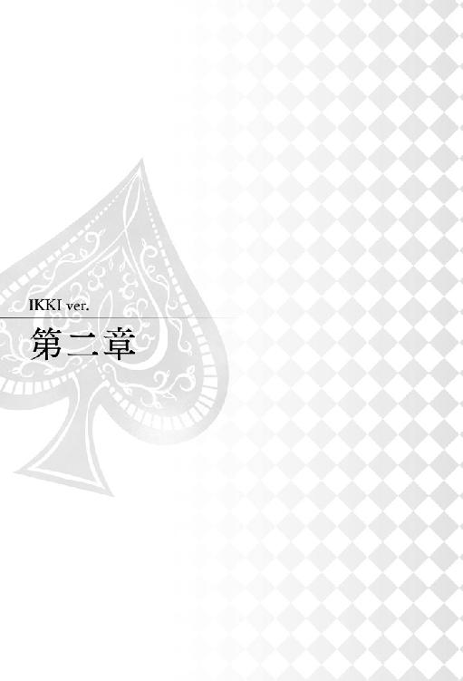
『９月２２日』
カーテンの隙間を縫って届いた日差しが、僕の顔を優しく叩く。
起きなきゃいけないのはわかっているのに、今日は何だかいつもより心地がよくて、睡魔が再び僕を夢の中へと誘ってくる。もっとこの温もりに包まれたくて身じろぎするけれど、そうさせてくれない何かが僕の腕に寄りかかっていることに気がついた。
欠伸を噛み殺しながら薄く目を開けると、ぼんやりと糸のような......誰かの髪の毛が見える。
「......えー...と............」
もう一度目を瞑って、まどろむ頭で考える。
昨夜、寝るとき──......。
「............っ」
昨夜の記憶を手繰り寄せると、一気に僕の頭が覚醒した。
眠気の飛んだ目をしっかり開けて確認すると、すぐそこに彼女の寝顔があった。僕の腕を枕に、気持ちよさそうにすやすやと小さな寝息をたてている。
どうりで心地がいいわけで、昨日、僕は彼女と一緒に眠ったんだ。
昨夜も含めて夢ではないか錯覚しそうになるけど、ここにある温もりは確かに現実のものだ。
鼓動が静かに騒ぎ出す。だけど心は妙に落ち着いていて、それでいてほんのり温かくて、不思議な気分だ。
隣で眠る彼女を眺めていると、彼女の顔にふと小さな笑顔が咲いた。一体どんな夢を見ているのだろう。叶うなら、その笑顔の先が僕であってほしい。
そっと彼女の顔に手を伸ばした。頬にかかった髪を梳くと、長い睫毛が僅かに震える。
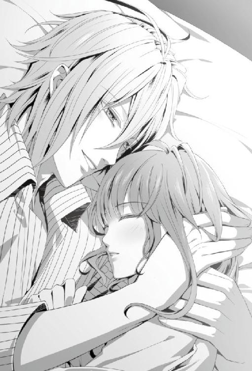
「ん......」
吐息と共に彼女が薄く瞳を開けた。焦点の合っていない目をきょろきょろと辺りに巡らせ、自分の居所を確かめている。
「......あーごめん、起こしちゃった？ 君の髪があんまりふわふわしてて気持ちよさそうだったから、思わず撫でちゃった」
言うと、彼女の視線は僕をとらえて、優しく微笑んだ。
「目覚ましが鳴るまであと五分くらいあるよ。寝ててもいいよ。まあ、そんなに長くは寝られない時間だけどね」
「イッキさん......おはようございます。今朝は早起きなんですね......」
眠りから覚めてまだ意識がぼんやりしているのか、彼女は普段よりも殊更遅い口調で囁いた。
「うん。ふっと目を開けたら君の寝顔が見えて、目が覚めちゃった」
「目を開けたら......？」
「となりに寝てたからね」
「......そっ、か。そう、ですよね」
まどろむ頭でどうにか記憶を辿っているようで、彼女は曖昧に頷いている。
「ちゃんとわかってる？」
大人しく僕に腕枕されているところをみると、まだ状況をはっきり飲み込めていないのだろう。
「眠そうだね。コーヒー入れようか」
これまでの朝なら、彼女が僕を起こしてコーヒーを入れてくれるのに、今日は逆の立場になっていて何だか可笑しい。
心の中で笑いながら、枕にしていた腕をやんわりと外した。ベッドから起き上がろうと腰を上げるけど、すぐに彼女によってベッドへ引き戻されてしまった。
「あ......」
「......。ねえ、パジャマを掴まれたら動けないんだけど？ 離れてほしくないの？」
咄嗟に引き止めてしまったらしい彼女は、パジャマを掴む手を見つめて、はっと我に返り、焦った様子で手を離し引っ込めた。
「す、すみません。寝ぼけてしまって......何でもありません」
「離れてほしくないなら、離れてほしくないって言ってもいいんだよ」
顔を覗き込むと彼女は恥ずかしそうに目元を赤らめて唇を噛んだ。
「お互いに甘えようって昨日約束したばっかりじゃない？ 言ってよ。僕に傍にいてほしい？」
「......あの、私は今日から大学ですしご飯も食べなきゃいけませんし、起きなきゃいけないと思うんです」
「うん。でも傍にいてほしいんだ？」
「......わがままを言ってもゆっくりしていられるのは三〇分もなくて......」
「三〇分は長いよ」
「ご飯はちゃんと食べた方がよくて......」
「今日くらいは、いいんじゃない？」
「............」
取り繕ったように並べられた言い分を次々に跳ね除けて、僕はもう一度彼女に問う。
「傍に、いてほしい？」
一拍、間を置いてから、彼女は薄く口を押し開いた。そして、
「あと、少しだけ......。傍に、いてください......」
振り絞られた勇気が僅かな声になって僕の耳に届けられた。
「あはは、もちろんいいよ。ギリギリまでベッドの中にいよう。おはよう」
「おはようございます......！」
僕は目の前にいるどうしようもなく愛しい存在を抱き寄せるとそのままベッドに押し倒して、小さなキスをおくった。
今日から彼女の大学が始まってしまい、僕はバイトのシフトも入っていないため、自宅でたんたんと家事に勤しんでいた。
「洗濯は終わったし、掃除もできた。それから......」
一つ一つを指さしで確認しながら部屋を見渡して、とりあえずは全て終えたことに気が付く。ほっと肩の力を抜くと、朝、テーブルの上に用意して既に冷めてしまったコーヒーを手に床に腰を下ろした。
彼女のいない部屋はどこか寂しげで、くすんで見える。それは多分、僕自身が寂しいと感じているからに他ならない。彼女一人いないだけで、こんなにも違うのかと思うほど、僕一人の日常は無機質で、退屈だ。
「早く帰って来ないかな......」
取り出した携帯で時間を確認すると、まだ昼にもなっていない。彼女を見送ってから何度となく吐き出された溜息をまたつきそうになって、冷めたコーヒーで流し込んだ。
こんな時、役立ってくれるのがケンが作成した数学パズルだ。先日受け取ってまだ手つかずだったのを思い出し、しまった引き出しを探るとすぐにコピー用紙一枚に印刷されたそれが出てきた。
問題は方眼状に区切られたマス目の幾つかに数字が振られてあって、残りの空白を埋めることで縦横の解を統一するものだ。
単純そうに見えて、今回も呆れるくらいの難題だろう。
意気揚々とパズルを作成しているケンの顔が脳裏に浮かんで笑ってしまった。
「さて......、やりますか」
気合いを入れると、シャープペンを片手に問題にむかった。
──そうやって過ごしているうちに、昼が過ぎていたようで、パズルを解き終わるころに小さく腹の虫が知らせてくれた。のろのろと昼食の支度を始めようかと立ち上がった時、テーブルの上で、携帯がメール受信を知らせるライトを点滅させた。
彼女からのメールだ。
僕が恋しくなって連絡をよこしたのかと甘い妄想にふけりながらメールを開くと、そこには硬い文章でこうつづられていた。
『今日、お父さんが話し合いに来ると連絡がありました。もし、イッキさんが迷惑でなければ、同席していただけないでしょうか』
彼女はきっとこのメールを送ってくるまで悩んだだろう。普段、あまり人に頼ろうとしない子だから、この二行を送るにも勇気がいったと思う。
僕を頼ってくれたことが素直に嬉しい。
すぐに快諾のメールを返信した。
もとより、彼女の父親には僕が直接お願いしなければと思っていた。それがけじめだから。ただ、彼女と彼女の家族の話に割って入るようなことはしたくなかった。だから僕は彼女から頼ってくれるのを待っていた。
彼女の父親と話をするということは、僕もそれなりの覚悟で挑まなければいけないのはわかっている。すぐに同居の許可をもらえるような簡単な話でもない。それでも僕は、彼女をこのまま帰すわけにはいかないんだ。
日が暮れかけた頃、彼女の父親がマンションを訪ねてきた。
「............」
「............」
リビング中央に置かれたローテーブルを挟んで、無言のまま僕と彼女の父親が対峙している。
「コーヒー入れましたので、どうぞ......」
キッチンから彼女がコーヒーを入れたカップを持ってきてテーブルの上に置いた。静かなリビングに、陶器の音がやけに大きく響く。緊張しているのか、彼女の指先がわずかに震えていた。
「......ああ」
唸るように言うと、お父さんは彼女に厳しい視線を向けた。
「ありがと。座ってて」
「はい」
僕から少し後ろの床を指先で叩くと、彼女は大人しくそこに腰を下ろした。
「......イッキュウくん。私の用件はわかっているだろうね」
ぴりぴりとしたムードの中、話を切り出したのは向こうだ。
「はい。僕とお嬢さんのルームシェアに反対されていると聞きました」
「そもそも私は娘が家に帰ってくるべきだと思っている」
胸の前で腕を組み、厳しい視線が彼女から僕へ移る。
「ルームシェアなどというものに両手を挙げて賛成できるわけがない。娘はまだ嫁入り前だし、何より若すぎる。自分で物事を判断できない年だ。親元で親の言うことを聞いて暮らすべき年だろう」
「それについては、以前お話した時ご納得いただけたように感じていたのですが」
「確かに、私の意見が一方的すぎるというのは妻にも言われたことだ。娘に選択肢を残すべきというのもね」
お父さんは鼻を鳴らして眉間に皺を寄せた。
「しかし、選択肢を残した結果はどうかね。娘が正しい判断をできたとは、とても思えない」
溜息と共に、首を緩く横に振って僕を見ると、じろじろと値踏みするような視線をくれた。その視線が何かを意味深に語っているようで訝しい。
ごく当たり前のことを言っているようで、僕にはその言葉が全て建前のように感じた。本音は別のところにあるが、言い辛いため、それなりに聞こえる理由を並べているような気がした。
もし、言い辛いことの対象が僕に向かっているのだとしたら、この視線の意味も腑に落ちる。
なんとなく言いたいことの意図が掴めた気がした。それでも、直接話してもらわなければ本意は知ることができない。
「どうか、はっきり仰ってください。ルームシェアそのものはまだ許せるとお考えだったとすれば、許せないのは僕が相手であることでしょうか」
率直に聞くと、お父さんは一瞬目を見開いてから、目を伏せ、もごもごと口籠った。
「君はねえ......少し様子を見させてもらったんだが、ずいぶんと人付き合いが華やかなようだ」
と言ったところで、一度考え直したらしく、一呼吸間を置いた後、
「いや、はっきり言わせてもらおう。君は少し女性にだらしないところがあるんじゃないのかね？」
柔らかい言い方を変え、容赦のない口調で告げた。
やはり、考えていた通りだ。僕の素行に不安を覚えて、同居を反対していたんだ。
「お父さん！」
彼女は僕を庇って前へ出ようとしたけれど、それを手で制した。
「いいよ。言ってもらった方が釈明できる」
こういう機会だからこそ、お互いにうわべの言葉じゃなく、本音で話した方がいい。納得できるかは別として、相手の本心を知ることはできる。
「イッキュウくん、君は不特定多数の女性と親しくしているだろう。今は娘に気があるのかもしれないが、それが長続きすると本当に言えるのかね？」
言葉に僕へ向けた鋭い刺が混じる。
「正直に申し上げます」
僕は居住まいを正して真っすぐに向き合った。
「お嬢さんとお付き合いをするまで、女性との交際を軽く見ることがあったのは事実です。今もそのイメージが消えず、女性から声をかけられやすいのも事実です。僕のしてきた無節操な行いのせいで、僕に期待をする女性が今もたくさんいて......。その女性たちと上手く折り合いをつけることができず、人に迷惑をかけることもあります」
目の前でお父さんの顔が険しくなっていくが、僕は構わずに話を続けた。僕を知ってもらわないことには、思っていることも伝えられない。
「ですが、そんな僕の考えを変えてくれたのが彼女でした。僕の至らなさを許し、支えると言ってくれました。僕は......一言ではご説明できない特殊な体質を持っていて、日常生活にいささか支障があります。それが原因で家族とも縁が薄く、孤立した生活を送ってきました。こんなものだ......とずっとあきらめていました。ですが今、彼女と一緒に暮らすことができて、やっと人の温かみを実感しています。僕はもう、彼女に支えてもらわなくては立ち行きません。お嬢さんでなくてはならないんです」
不特定の誰かじゃなく、僕には彼女が必要なんだ。この気持ちだけは信じてほしい。そう願いを込めてたたみかけた。
「決して軽い気持ちなどではありません。どうか、彼女と暮らすことを許してください」
お父さんはじっと僕の目を見据えてから小さく溜息を吐いた。
「本当に娘でなくてはならないのかね。気が変わられては困るんだよ」
「絶対に、お嬢さんでなくてはいけません。気が変わることなどありえません」
強い意志で言う僕にお父さんはまだ納得しきれない様子で、眉間を人差し指と親指の先でつまむと瞑目し、背中を丸めて考え込んだ。
「特殊な体質というのは、何かね」
「簡単にご説明することができません。お話しても、信じていただけるかどうか......」
「いや、それが何なのかは大した問題じゃない」
緩く首を振り背筋を正したお父さんは、僕を視界に戻す。
「私が知りたいのは、君が娘を幸せにしてくれる男なのかどうかだ」
僕の姿を映した瞳の奥深くに、娘を想う親の気持ちが滲んでいた。
「軽い気持ちではないと言うなら、もちろん将来は責任を取るつもりでいるんだろうね!?」
そう聞いたお父さんの表情は厳しいようで、僕には少し寂しそうに映った。
ふと思う。もし一番大切にしてきた人が、突然、他の誰かのところに行ってしまったら。その誰かが、僕だとしたら。
僕が彼女と、彼女の家族にできることはひとつ。彼女を一生幸せにすることでしか、証明できない。
「お嬢さんが大学を出たら、結婚を申し込みたいと思っています」
その言葉は、僕が考えていたよりも自然に口をついて出た。たぶんそれは、僕自身がごく当たり前のように彼女との未来を想像していたからだと思う。
「......！」
ちらりと後方を見ると、驚きを隠せない彼女は目を丸くしたまま、瞬きも忘れて僕を見つめていた。
「本当だろうね!?」
「もちろんです」
僕はお父さんの前に出ると、
「お願いします。お嬢さんとの同居を許してください」
床に両手をついて深く頭を下げた。
「イッキさん......！」
「......！」
彼女の動転している声とお父さんの驚いた息遣いが頭上で聞こえるけれど、僕はそのまま言葉を続けた。
「僕には彼女が必要なんです。彼女なしでの生活はもう考えられません。僕の気持ちをわかっていただくためなら何でもします」
彼女のため、そしてなによりも彼女との未来のために、どんなことでも乗り越える覚悟がある。
「............」
お父さんは低く唸るだけで、僕には答えず、彼女に振った。
「おまえも同じ気持ちか。彼に添い遂げる覚悟があるのか」
「は、はい......！」
弾かれたように返事をした彼女は僕の方へ詰め寄って、一緒に頭を下げた。
「お父さん、お願いします。イッキさんの傍にいたいの。イッキさんの支えになっていきたいんです......！」
「............」
お父さんは腕を組んで押し黙ったまま微動だにしない。表情が見えない分、緊張が刻々と増していく。
「お願いします......！」
「..................」
「お父さん......!!」
ぴんと張り詰めた沈黙の後、お父さんは長い溜息をついた。
「......イッキュウくん、顔を上げなさい」
ゆっくり顔を持ち上げると、そこには先ほどと違う表情のお父さんがいた。強張っていた顔が少し崩れ、どこか柔らかさを感じる顔をしている。
「君たちの気持ちはわかった。不安があるのは確かだが......今は信じてみてもいい。君たちの言葉が真実かどうかは、ゆっくり見極めていこう。もちろん、浮気などしたら即刻娘を連れ戻す！ ......まあ、その様子では心配なさそうだがね」
お父さんはそう言って、吊り上げていた眉を下げ、ふと笑みを零した。
その笑顔に彼女の面影を見た気がした。優しい目じりがよく似ている。
「......ありがとうございます」
もう一度頭を下げると、安堵の溜息が洩れ、肩の力が抜けていった。
「......。おまえはずいぶん想ってくれる男に会えたんだな」
僕と彼女を交互に見つめ、お父さんが言う。
「私はこれほどの覚悟で誰かを愛したことがあったかな。帰ったら......妻ともう少し真面目に向き合ってみるべきかもしれんなあ」
コーヒーの入ったカップを手に取ると、表面を眺め、感慨深げに呟いた。
「わざわざ送ってもらってすまないね」
駅前のロータリーまで来ると、僕を振り返ってお父さんが軽く会釈をした。
昼間は賑わいを見せている駅前も、今はサラリーマンが帰路を急ぐばかりで静かなものだ。
「今度向こうの家にも来てくれたまえ。今度はゆっくり話をしよう。君は酒が飲める方かね」
「お付き合いします」
「うん......」
僕に穏やかな笑顔をくれたあと、隣にいた彼女に視線を移して眉根を寄せた。
「はあ......、おまえなあ......。嫁に行くには少し早いだろう......」
「お父さん......」
「昔はあんなに素直で可愛かったのに、一人前に男の肩なんぞ持つようになって......」
お父さんは大げさに肩を竦めて僕に訴える。
「イッキュウくん、子供の頃の娘はねえ、私が出かけようとすると服の裾を掴んで......『パパ、行かないで』なんて言う健気な子だったんだよ。君、そんな風に言われたことがあるかね？」
「ええと......はあ......」
なんとも返し難い問いに、僕の返事も気の抜けたものになってしまう。
「でもお父さん、私がお願いしても、私を置いて女の人のところへ行っちゃったよね......」
「そ、それはまあ......仕方ないだろう、私にも約束というものがある」
鋭い彼女の突っ込みに、お父さんは瞳を彷徨わせながら言い訳を探していた。
「娘にねだられたからと言って、約束を破るわけにはいかんだろう。その代わり、遊園地に連れて行ってやったはずだぞ」
「うん、一回だけ......」
「おまえの誕生日はいつも忘れずにプレゼントを買ってやったしな」
「でも、家にいてくれたことはなかったよね......」
「............」
彼女が父親を良しとしない理由が透けて見えた気がする。
けれど、この掛け合いが少しだけ羨ましく思えた。ずっと振り回されてきた彼女にしてみれば散々だったと思うけれど、確かに良い思い出もあって。こうやって過去のことを言い合えるということは、心の底では通じ合えている証拠だと思う。本当に嫌っているならお互いの生活に干渉もしないだろう。
咳払いで誤魔化してから、お父さんはふと優しい顔で彼女を見つめた。
「......それでも、おまえを心配しているんだよ」
その想いに触れたのか、彼女もまた素直に頷く。
「うん、ありがとう。嬉しかった」
「イッキュウくん、こんな父親だが、娘が大事なんだ。この子を頼むよ」
「はい。大切にします」
僕の言葉を聞き届けたお父さんの目じりが、僅かに赤くなっていた。僕と目が合うと苦笑して、彼女には悟られないように背を向け、駅の方へと歩いて行く。その背中を見送りながら、僕は深く頭を下げた。
駅からの帰り道、すっかり日も落ちて涼しさが一層増した道を、僕たちは寄り添うようにして歩いている。
「............」
ほとんど会話はないけれど、繋いだ手の温もりが胸をいっぱいにしていた。
「......ねえ。君さ、ちょっと情けない男を放っておけないタイプなんでしょう」
「えっ？」
突然の問いに、前方を見据えていた彼女が驚いて僕を見上げた。
「い、イッキさんは情けなくありませんよ!?」
彼女は勢いよく首を振って否定してくれるけど、自分では情けないと自覚する節がいくつかあった。
彼女のことを考えて動いている割には、空回りしている部分があるし、むしろ精神面で彼女に助けられたり、励まされていることの方が多いように思う。
恋愛は先に落ちた者が負けだと聞いたことがあるけど、僕にはそれがよく当てはまる。彼女の前では格好付けたいと思うのに、思うようにいかない。恋愛とはそういうものだと言われればそうかもしれないが、総じて情けなく思えてきて、僕は溜息を吐いた。
「そうかな......そうだといいんだけど。まあ君の思う男になれるよう努力するよ」
今度は僕が彼女を支えていけるように強くならないといけない。心の中で決意すると、ぎゅっと彼女の手を握り直した。
「......あの、イッキさん」
彼女が遠慮がちに僕を覗き込んで、
「ありがとうございました」
と礼を言った。
「父に頭まで下げていただいて......すみませんでした」
「謝らないで。僕が自分のためにしたことだから」
あれは、彼女のためでもあるけど、大部分は、僕のわがままだ。彼女を連れ戻されると困るし、なにより彼女なしの生活なんて考えられないから頼み込んだ。むしろ、勝手に話を進めてしまった僕の方が謝らなければならない。
「け、結婚を申し込むって......言ってくださって、びっくりしました」
本当に驚いたのだろう。彼女は恥ずかしそうに頬を染めてつっかえながら言葉を紡いだ。
「あ、びっくりしたの？ 気持ちはわかってもらえてると思ってたんだけど」
「......っ」
「いや、本当はね、ちゃんと言っておくつもりだったんだよ。でもタイミングとかシチュエーションとか色々考えてたらずるずると言い損ねてね......」
結局、彼女の意思をしっかり確認する前に言ってしまった。順番もめちゃくちゃだ。もっと整った状況で言うべきだったかもしれないと思うけど、後の祭りで。女の子だし、彼女なりの理想があったなら申し訳ないなと思う。
「あんな形になってごめんね。君が卒業する時には改めてプロポーズするから、期待してて」
「は、はい......！」
その時は今よりもっと彼女の笑顔が輝くようなサプライズにしよう。幸せの笑顔に包まれる彼女を想い浮かべて頬が緩んだ。
「............」
歩き慣れた路地の途中で、ふと足を止めた。この場所は、僕と彼女を繋ぐ、思い入れのある場所だ。
「付き合い始めてから君は、いつもこの場所で僕を待っていてくれたよね」
僕に続いて立ち止まった彼女は周りを見渡して小さく頷いた。
なんの変哲もない高架下の一角。車の走行音はうるさいし、雨でもないのにじめじめしてそうな日あたりの悪さ。そんな場所でも、僕にとっては大切な記憶の残る場所だ。
「僕が君のところへ走っていくと、どんな日も笑顔で迎えてくれた」
人目を避けて待ち合わせるのも、二人だけの秘密で、何もないのに楽しかった。ただ彼女がいるだけで、僕は幸せになれた。
「僕は結構情けないし抜けてるし、周りは問題だらけでたくさん傷付けたと思うけど......、君を心底愛してるってことだけは誓って言える。これからも君にはいっぱい迷惑をかけると思う。でも、もう君を離せない。僕と二人で笑って、僕と二人で考えて、僕が間違ってたら叱ってほしいんだ」
彼女と繋げてくれたこの場所で、僕は告げる。
「お願い、僕と一緒に生きて」
彼女はぱっと目を見開いてから優しく微笑んだ。
「は、はい......！ 私に何ができるのかわかりませんが......。一緒にいたいです、できることをしたいです。イッキさんと生きていきたいです」
そこまで捲し立ててから、
「だ......いすき、です」
最後の言葉は恥ずかしくなったのかぎこちなく窄められた。そんな彼女も可愛くて、どうしようもなく愛しくて、胸が締め付けられる。
「愛してるよ」
「......！」
何度言っても言い足りない程、愛してる。
「わ、私......私も、あの......、えっと......」
「私も？」
「......あ、い......し......」
「えーなあに、聞こえないんだけど。大きな声で言ってよ」
「............あ」
何度か言いかけた彼女だったけれど、恥ずかしさで思考が停止したようで、顔をりんごのように真っ赤に熟れさせたまま萎んでしまった。そのうち、頭の上から湯気が出るのではないかと思うほど耳まで染めてしまっている。
初々しい彼女もいいけれど、そろそろ愛の言葉をちゃんと聞かせてほしい。スロースターターの彼女だから、すんなり言えるまで当分の時間を要しそうだけれど。そんなときは、こちらから仕掛けるのみだ。
「まあいいや。言ってくれないなら、後で、別の方法で聞くから」
「べ、別の方法？」
「君がもうちょっと素直になれる方法」
「えっ、どういう意味ですか？」
「んー？ ここで言っていいの？」
「!? な、なんだかよくないような気がしてきました......」
「そう。じゃあ帰ろうか。ここじゃ試せないしね」
「え、あの、イッキさん、別の方法って本当に何ですか......!?」
問いには答えずに僕は彼女の手を引いて歩き出す。
「イッキさん──！」
秋の空に、彼女の焦った声が木霊した。
『１１月１日』
彼女との同居を始めてから早数か月が経つ。一か月の〝同居お試し期間〟なんて日常の片隅にすっかり忘れ去られ、数日過ぎた頃にそういえば、と思い出して彼女と笑ったほどだ。僕たちは相も変わらない日々を送っている。
少しの変化があるとすれば、彼女が僕の扱いに慣れてきたということだろうか。
「イッキさん、支度できましたか？ 入りますよ？」
遠くで僕を呼ぶ彼女の声が聞こえる。穏やかな日差しのように優しい声に耳を傾けながら、僕は柔らかな夢に意識を投じていく。
なんて心地がいいのだろう。彼女の声がする夢なんてそうそう見れたものではない。
ふらふらと甘い誘惑に攫われそうになる僕に、
「イッキさん......！ お願いですから、着替えの途中で寝るのはやめてください......！」
彼女の呆れた声が間近で炸裂した。
「もう朝です......！」
「あー......うんごめん。寝てた......」
現実に引き戻されて、重い瞼を押し開けると、両手を腰にあててむくれている彼女が立っていた。
朝食を作っていたようで、白地に花柄の刺繍が施された可愛らしいエプロンを身につけている。
「ね......。コーヒー入れて......」
「コーヒーですか？」
甘えるように囁くと、彼女は仕方ない、といったふうに溜息をついて踵を返した。
「わかりました。その間に目を覚ましてくださいね」
そう言ってキッチンへ引き返していく彼女を見ていると、最近、妙に堂々としてきた気がして思わず声をかけた。
「......君さあ」
「えっ？」
「前より照れなくなったよね。それって結構、してやったりって気分なんだけど」
一緒に住み始めた頃は初心な反応を見せていた彼女も、僕の着替えかけの姿を見てもすぐ気持ちを切り替えられるようになった。彼女の中に僕の取り扱い説明書みたいのができたのか、ちょっとした冗談はあっさりかわされてしまうこともしばしばだ。
「え......？ ど、どういうことでしょう......？」
怪訝な表情で彼女は振り向くと首を傾げた。
「猫をなつかせた気分ってこと」
「猫......？」
「何でもない。コーヒー欲しいな。詳しく話してると朝からイタズラしたくなりそう」
「......！」
口の端を吊り上げると、
「コーヒーを、入れてきます......！」
彼女は慌てた様子でキッチンへ消えていった。
彼女より一足先にバイトを上がって、一緒に帰宅するべく、事務所横の通路で彼女を待っていた。休憩中のシンを捕まえて世間話に花を咲かせていたと思ったんだけれど、どうにもシンは飽きっぽい性格のようで、僕が話題を出すごとに眉間に深い皺が刻まれていく。それでも、しばらくはそうやって話に頷いていたシンも、とうとうしびれを切らしたのか立ちあがり、彼女が着替えをしている事務所のドアを叩いた。
「おい」
「は、はい！」
低い声に反応して、彼女が急いでドアの隙間から姿を現した。
「着替え終わった？ 終わったらさっさとこの人連れて帰ってくんない？」
この人、のところで僕を指しながら、シンは怪訝な表情で彼女に迫った。
「うっとうしくて仕方ないんだけど」
「え、ええ？」
状況を飲めない彼女は目を白黒させながら僕とシンを交互に見やった。
「えーひどいな。少しくらい僕の愚痴に付き合ってくれてもいいのに」
口を尖らせて言う僕に、盛大な溜息を吐きながら、
「何が愚痴なんですか」
とぼやく。
「『彼女には最近ちょっと困ってるんだ』『照れ性を少し克服したらしくて素直で困る』『可愛すぎて困る』」
シンは僕の口調を少し真似て、さっきまで話していた内容を暴露していく。こうやって内容を覚えているあたり、呆れながらも律義に聞いてくれていたんだなと思うと笑いが込み上げてきた。
「──ってそれ、誰が聞いたってノロケですから！」
「あははは！」
耐えきれなくなって吹き出した僕に、シンの不機嫌な視線がぶつかる。
「ごめんね、ノロケだってわかってた。だってシンが真面目に聞いてくれて面白いからさ」
「からかうのはこいつだけにしてください」
「君をからかうのも、また別の楽しみがあるんだけどね」
「オレに楽しみを見出さなくていいですから。迷惑ですから」
「そっか。じゃあ帰ろうかな。そろそろ二人になりたいし」
当てつけがましく言うとシンは半目で僕を見て、しっし、と追い出すように手を振った。
「さっさと帰ってください」
彼女を連れて、追い立てられるように裏口へ向かうと、ふいに店側のドアが開いて、ワカさんが顔を覗かせた。
「イッキ。すまんな、帰る前に少しいいか？ ＰＯＳの入力に不明な部分があるんだが......」
珍しく困り顔のワカさんが僕を呼んでいる。なにか不都合が発生したらしい。
「あ、はい。今行きます」
彼女に小さく「ごめんね」と言って、そこに残し、僕はワカさんの後を追った。
バックにはまだシンがいる。なんだかんだ言って面倒見のいいシンは彼女の話し相手になってくれるだろう。
店のホールに私服で紛れ込むと、何人かの女性客が声を上げ、こちらを振り返って手を振ってきた。それに会釈で応えながら出入り口付近に設置されたレジに向かうと、待っていたワカさんがレジの画面を指でなぞって問題となる部分を示していた。
ワカさんは機械に疎いところがある。対人間の実作業は完璧にこなすのに、対機械となるととたんにペースが下がる。それは周知の事実だが、本人に指摘するほど僕らも馬鹿じゃない。ワカさんを敵にまわすほど恐ろしいものはないからだ。
レジと繋がっているノートパソコンを操作すると、ワカさんが問題としていた部分はすぐに解決された。ネットワークが何らかの原因で繋がっていなかったようだ。
「手間を取らせてすまなかったな。一度業者に見せた方がいいかもしれん」
バックへ戻る僕の後についてワカさんが言った。
「今のところは大丈夫ですよ。おかしくなったらいつでも言ってください」
普段迷惑をかけている分、そういったところで店の役に立ちたい。
廊下のドアを開けると、やはりシンが彼女の相手をしてくれてたようで、楽しげに話をする二人の姿があった。
「イッキさん、店長の用事は終わりましたか？」
「終わったよ。帰ろうか。シン、ワカさん、お疲れ様です」
彼女の手をとって裏口に向かう。
「お疲れ様です」
「ご苦労だった。気をつけて帰れ」
二人はどこか緩和な目で僕たちを送りだした。
路地へと通じるドアを押しあけると、真冬のような肌に突き刺さる冷たい風が僕らに吹きすさんだ。
今夏から気象がやけにおかしい。世間では農作物への影響が懸念されて、専門家たちが原因究明に急いでるらしいけど、結局まだ解明されていないようだ。
それでも僕は、こうして彼女と身を寄せ合うように歩けるのなら、もう少しだけこのままでいいような気もしている。
「待たせてごめんね。シンと何話してたの？」
「イッキさんの話です」
ふふ、と含み笑いをしながら彼女は僕の顔を見上げた。寒さで鼻の頭を赤くしているのが可愛らしい。
「シンさん、イッキさんはよく笑うようになったって言ってました」
「へえ、そうかな？ まあ君と一緒に暮らしてて毎日楽しいって自覚はあるけど」
それが顔に出てしまっていたということだろうか。
「人にわかるほど笑ってるかな？ 君も僕がよく笑うようになったって思う？」
「そう言われてみたら、前より笑ってくれるなって思えてきました。もしそうだったら嬉しいなって思ってます」
考えてみれば、彼女と出会う前の僕は笑うことを強く意識していたように思う。自分の弱さを隠すためみんなに笑いかけていた。でも、最近ではそれを意識しなくても笑っていることの方が多い。
周囲に気づかれるくらい僕が笑えているのだとすると、彼女が大きく影響しているのだと思う。
「......それは君のおかげだよ」
「......そうでしょうか」
「間違いないよ。僕は君といられて、毎日幸せだって思ってるんだから」
断言すると彼女は照れた様子で、
「......嬉しいです」
と小さく呟いた。
「......君と暮らすようになって、僕の世界は本当に変わったんだ。今でも、夢を見てるみたいだって思うことがある。だけど夢になんかしたくない。絶対離さないから、傍にいてね」
「......はい」
『自惚れないで』と痛烈な言葉を突き付けてきた時、彼女と付き合うことになって、そして、一緒に暮らすことになるなんて考えもしなかった。それが今は将来を誓い、同じ場所に帰ろうとしている。つくづく運命ってわからないものだと思う。
「キスしていい？」
「こ、ここでですか？」
「うん、ここで」
サングラスを外すと向かい合って立った。彼女の両手を自分の手で包んで腰をかがめる。
「......ねえ。こっち見て」
「......！」
迷っていた彼女の瞳が僕をとらえ、閉じかけた時、
「あっ！」
僕でも彼女でもない声がこちらに向けて飛んできた。
「えっ」
びくりと肩を揺らし、彼女の顔に焦りの色が滲む。
「ちょっ、ちょっと見て見て!!」
「うんうん！ 何あの人！ すっごい格好いい！」
「芸能人かな!? サイン頼んでみる!?」
道の少し後方で制服を着た女の子二人組が立っていた。
「............あー」
サングラスを外したあやで、通りすがりの女の子の目に留まってしまったらしい。ちらちらと僕たち見て騒ぎ立てている。
すぐにサングラスをかけ直してみたけれど、女の子たちの視線はこちらに向いたままだ。
「......ごめんね。サングラス外したから......。嫌にならない？」
「全然大丈夫です......！」
「逃げよっか」
「そうですね」
ぎゅっと手を繋ぐと息を合わせて一歩踏み出した。
「あっ、行っちゃう！」
「わああっ、見てるのバレた！」
「となりの女の子うらやましい！ 誰あれ！」
「でもお似合いかもー！」
「だねー!!」
走り出した僕たちの後方で、そんな会話が耳に留まった。
「............」
隣を見れば、彼女がきょとんと目を丸くしている。
「お似合い、ですか？」
「らしいね」
「ふふっ、ふふふふっ」
「はっ、ははははっ」
目を合わせて笑うと、僕たちの間に温かな風が吹いた。
「──これからも、ずっととなりにいてね」
「はい！」
キャンドルだけが灯された小さな教会に、控えめに鐘が鳴る。
木製の大きな扉を押しあけると、ライスシャワーのかわりに、僕たちを一面の星空が出迎えてくれていた。
僕は何度も今日この日を思い出す度に、柄にもなく涙が溢れそうになるだろう。
──僕は、今日、彼女と結婚した。
「あー......すごい星空。夜にして正解だったね。......見てごらん」
傍らにいる純白のウエディングドレスに身を包んだ彼女をのぞき込むと、彼女の大きな瞳は涙に濡れていた。
彼女の大学卒業を待って結婚すると決めた日から、早いもので三年が経つ。
あの頃から彼女は幾分か髪をのばし、可愛いというよりは大人の、落ち着いた雰囲気の綺麗な女性になった。
最近では僕より言い寄られる数が多いのではないかと思うくらい異性が近づいてきていて、本当に困っている。本人は元の天然じみた部分が相まってモテているという自覚はないみたいだけど、反面、僕の方が変な輩を排除するのに必死だ。
けれど、それももう明日からはなくなるだろう。
彼女の左手薬指には、僕と対のシルバーのリングがはめられているのだから。僕だけが彼女の独占を許された証だ。もう誰の気にも留めさせない。
「まだ泣いてるの？」
式が始まる前から彼女はずっとこの調子で、僕は小さく溜息をついた。正確に言えばもっと前、プロポーズした日から、結婚するのだと現実味が増していく毎に、彼女は大粒の涙をこぼす。
幸せの涙に濡れた目じりを拭ってやるのが、すっかり僕の日課となりつつある。
「......もう、大丈夫です」
頬に触れた僕の手をくすぐったそうにしながら彼女は僕を見上げた。
「すみません......なんだか胸がいっぱいで」
「僕も」
こういう気持ちを何て言ったらいいのかわからない。ただただ幸せで満たされて、夢の中にいるような感覚だ。
光々と薄闇を照らす月光に、彼女のウエディングドレスにつけられたリボン留めがきらりと反射した。
「二人きりの結婚式は寂しいかと思ったけど、君の泣き顔を独り占めできるのも、悪くないね」
冗談交じりに言うと、彼女は持っていた真っ白のハンカチで再び目元を拭いながら困り顔で微笑んだ。
「ごめんね、人を呼べなくて」
普通なら、沢山の人を招いて行われる結婚式に、僕たちは誰一人呼ぶことができなかった。
その理由は僕の目に関係している。
ただ一人の愛おしい存在を見つけた今も尚、相変わらず厄介な効力を発揮しているこの目。そのため、誰も招待することができなかった。
彼女のお父さんや数人の友人くらいなら呼べたのかもしれないが、後々の影響も考慮して、相談の末、二人きりで式をあげることに決めた。
彼女は二人だけの思い出になると笑ってくれたけど、本当は門出を見守ってほしい人の一人二人はいたはずだ。それを考えると少し胸が痛む。
「イッキさん、それは何度も謝ってもらいました」
「そうだっけ」
「私は二人きりで嬉しいです。大事な時間を二人だけでゆっくり過ごせて、嬉しいです」
彼女はそう言って、星空へ視線を移した。彼女の瞳に星の瞬きが映しだされて、瞳が宝石のように輝きを増した。
森の中に建てられた教会は静寂に包まれ、優しく僕たちを見守ってくれている。
「すごく素敵な結婚式です」
「うん、君のその言葉は何回か聞いた覚えがあるな。確かにのんびりしてていいよね......。こうやって君と星空を見ていられるしね」
大切なこの時間を、誰に気兼ねすることなく二人だけで過ごせるのは何にも代えがたい。賑やかに祝福されるのもいいけど、こうして一時一時の幸せを感じられるのなら、結果良かったような気もする。
並んで空を見上げていると、一つの流星が頭上を駆け抜けた。
「......あ、流れ星」
言葉にした時には既に夜空へと星は消えてしまっているのに、彼女は慌てて瞑目し、祈りを捧げていた。真剣に祈る彼女の横顔が可愛くて抱きしめたくなるけれど、祈りの邪魔をしてはかわいそうだ。僕も彼女にならって星へ祈りを捧げた。
「............」
しばらくして目を開けた彼女は僕と目が合うと、見られていると思わなかったのか恥ずかしそうにはにかんで頬を染めた。
「何かお願いした？」
「はい」
「僕のお願いはね、死が二人を分かつまで君が傍にいてくれますようにって。君のお願いも、同じかな」
こんな日だからこそ、同じような願いごとをしてくれていると踏んで問いかけると、彼女は緩く頭を振った。
「私のお願いは......」
彼女は僕に向けて手を伸ばすと、目元に指を滑らせて静かに告げる。
「イッキさんの目が元に戻りますように。イッキさんが心静かに暮らせますように、って」
「............」
「昔、話してくれましたよね。その目は、流れ星に祈った願いが叶ったものなんだって」
目の災いのことは、いつだったか、もうだいぶ前に話したことがあった。内容が内容なだけに、戯れ言だと思われていても仕方のない話を、彼女は受け止めていてくれたらしい。
それだけでも十分嬉しいのに、彼女は真剣に僕の平穏な生活を祈ってくれている。
こんなにも自分以外の誰かを思える彼女がひどく眩しく感じた。
「それを聞いてから、神社にお参りをする時も、誕生日のろうそくを吹き消す時も、いつも私の願いは同じです」
「そっか......ありがと」
僕も彼女のことがいえない。歳を重ねるごとに涙もろくなってる気がする。
彼女の言葉に不意を突かれ、零れそうになる涙を誤魔化して、また空を見上げた。彼女には格好いい僕だけを見ていてほしいのに、近いうちにそうもいかなくなりそうだ。きっと彼女のことだから、僕が目の前で泣いたとしても懸命に慰めて、笑ってくれると思うけど。もう少しだけ、表向きだけでも男らしい僕でいさせてほしい。
「前は僕もそうだったな......。だけど君が傍にいてくれるようになって、何もかも和らいだから......。今は、君がいなくなることが一番怖い。目が治らないことよりもずっとね」
目の影響は、煩わしさはあるけれど長年付き合ってきたおかげか、ある程度対処できる。けれど、もし彼女がいなくなったとしたら、彼女の代わりなんてどこにも存在しない。彼女は彼女しかいないんだから。
「今の僕の願いは、君が傍にいてくれますように。三年前から、変わったよ」
そう彼女が、僕を変えてくれたんだ。
「君の願いも、変更してくれる？」
「......私が傍にいることで、イッキさんの大変さを和らげられていますか？」
遠慮がちに彼女は聞いた。
「私は、イッキさんを支えられていますか？」
僕にとって彼女以上に心が安まる存在なんていないのに、僕を見上げてきた彼女の目には不安の色が滲んでいた。
だから僕は、彼女の不安を払拭するように優しく微笑んだ。
「うん。君のおかげでね......僕は今、すごく幸せ」
「......っ」
僕の想いが伝わったのか、彼女は一瞬息をのんで、慌てた様子で星空へ向き直ると胸元で手を組んだ。
「......こ、今度流れ星を見たら私も願いを変更します。イッキさんと、ずっと一緒にいられますように。イッキさんを支えられますようにって祈ります」
「ありがとう。──愛してるよ」
「私も......、愛してます......！」
誓いのキスは、温かな彼女の涙に濡れていた。
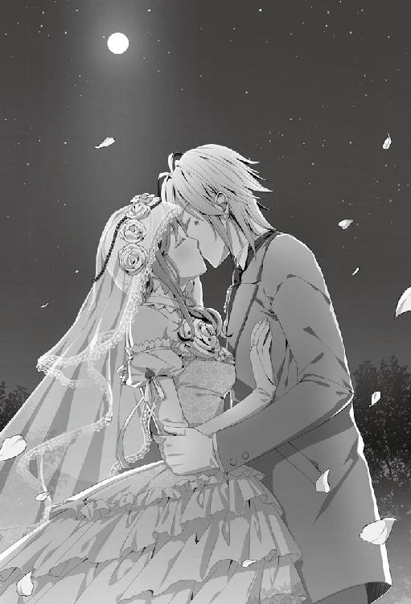
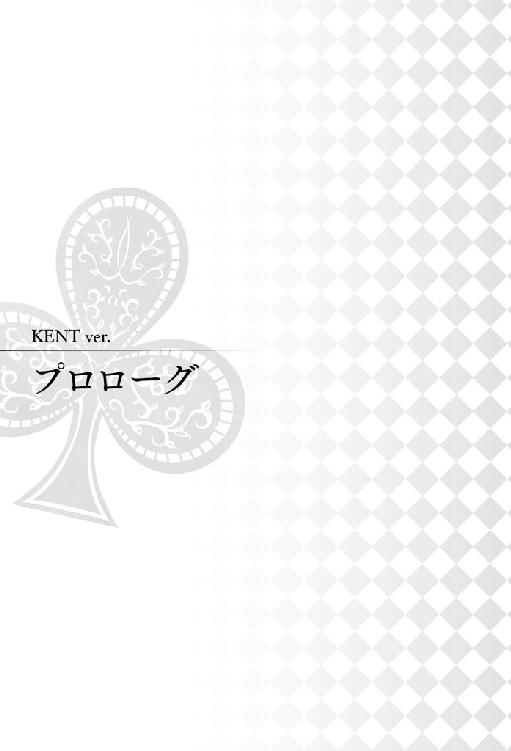
『９月１０日』
駅前のロータリーの一角。大きな時計が建つこの場所で、私は彼女と待ち合わせをしている。約束の時間まではまだ一五分以上。時計を支える太い支柱に寄りかかりながら書類に目を通していると、足早にこちらへ向かってくる足音が耳に入った。
視線だけをちらりと上げてそちらを見やると、小柄な女性が慌てた様子で走ってきているのが見えた。その女性がすぐに彼女であると気づき、私は持っていた書類を畳んで鞄に丁寧に仕舞い込んだ。
「はあ、はあ......っ」
彼女は時計より少し前で立ち止まると、膝に手をつき、荒く乱れた呼吸を整えていた。
「......ふう」
しばらくしてから時計を見上げ、待ち合わせの時間を確認して安心したのか、大きく肩を落とした。私がすぐ傍にいると気づいていないのだろう。彼女は時計から視線を外して、駆けてきた駅の方を振り向くと、自身の髪を手櫛で整え始めた。
後方から近づき視界に入るようにずいっと体を前方に滑り込ませると彼女はびくりと肩を揺らし、ゆっくりと私を見上げてきた。
「......！」
「ずいぶんあわててやって来たな。待ち合わせに遅れるとでも思ったのかな？ だとすれば、君の時計の針は一〇分以上も進んでいることになるが」
恐る恐る見上げてきた彼女だったが、すぐに私だと気づいたようで表情がふと柔らかなものへと変わる。
「い、いえ......そういうわけではないんですが......」
「だが......まあ、やっと私の存在を認識してくれたようで大変結構」
時計の問題は後ほど解決するとして、私は目の前にいて発見されないほど存在感が薄くなっただろうか。彼女のみならず、大抵の人は一番に私を見つけるのだが。
「......しかし、私がいることに気が付かないとは君らしくもない」
「......っ......」
指摘すると思い当たる節があるのか、彼女は小さく息を詰まらせた。
「......ああ、そうか。昨夜、電話で緊張して眠れないと言っていたが......。それは今夜、私の両親と食事会があることが原因だろうか」
少し考えれば私にもその原因は思い当たるものだった。
両親たっての願いで、今夜、彼女と一緒に実家で食事をする予定が入っている。それに気を遣って彼女は普段のパフォーマンスができていないのだろう。
「そしてそのストレスが君の注意力を散漫にしてしまったと分析するがどうかな？」
「あ......はい、まあ......」
分析は五分五分といったところか。彼女は曖昧に首を傾げてから話題を切り換えた。
「と、ところでケントさんも今日は早いんですね。いつもは時間ぴったりなのに」
「曖昧な返事で誤魔化して、逆に質問を返すのは感心しないが......。だが......まあ、いい質問だ。そしてその質問に対する私の答えはこうだ」
私は記憶を辿りながら彼女に説明するために口を開いた。
「何故か今朝、いつもより早く目が覚めた。起床予定時刻の二時間も前にだ。そして......起きてすぐ君のことが頭に浮かんだ」
「私のことですか......？」
「ああ。具体的に言うと、今君は何をしているのかということや、どんな服を着て来るのだろうかということ」
他にもどんな朝食を食べたのか、私のことを考えてくれているだろうか等、まだあるが、この際そこは重要ではない。
「だが最も考えたのは......食事の前に、二人でどこかに出かけようという約束を君が覚えているだろうかということだ」
「ケントさんとの約束を忘れるわけがないですよ」
「その通り。だから自分でも、君が約束を忘れているはずはないという結論にたどり着いた。......だが......。だが、どうにも気になって仕方がなかった。そしてすぐに準備をして家を出た。その時点で君の携帯に連絡をすることも手段のひとつだったが、もしかするとまだ寝ているかもしれない君を叩き起こすのも、どうかと思ったものでね」
「あ......、あの、ケントさん......？」
「うん？」
「それってつまり......。ものすごく前から、ここで待ってくれていたってことですよね？」
「まあ、結果的に言うとそういうことになるな」
「ごめんなさい......私も、もっと早く来たら良かったですね」
「何故謝る？ 君は約束の一五分前にはやって来ただろう？」
「でも......」
彼女はすまなそうに眉根を寄せて私を見つめてきた。何も落ち度はないのに、そんな顔をされるのは心が痛む。
「......では、一応補足しておこう。君を待っている間に、次の学会で発表する論文資料に目を通していた。決して無駄な時間にはなっていない。だから君が気に病むことはない」
まわりくどい言い方になってしまったが、理由はもっと単純なところにあって......。
「......私が早く来てしまったのはただ単に、私が君に会うのを待ちきれなかったという......。......ただ......それだけのことなのだからな。わかってくれただろうか？」
「は、はい......！」
恥ずかしさを圧して思ったことを口にした甲斐があった。彼女はいつもの明るさを取り戻して私に笑顔をくれた。
「......外で本を読むというのも気分転換になって悪くないな。結果的に良い収穫になった。この調子でいけば、次の学会発表でロンドン行きを決めることができるだろう」
「私もケントさんと一緒に行けるように、推薦留学生になれるよう頑張ります」
そう言ってくれる彼女を頼もしく思うが、正直、気がかりでもある。いや、現状を考慮すれば期待よりも懸念の方が上回るかもしれない。
「ああ。しかし......君は語学に関して課題が多い。言語が自由に扱えなければ、推薦留学生になったとしても、向こうでの生活は厳しいだろう」
「はい......」
「ロンドンでは、『フラットシェア』という形式で暮らすことになる。キッチンやシャワー、トイレといった水周りを共同で使うアパートのことだな。部屋は個室だが、ある意味で他人との共同生活をすることになる」
コンドミニアムという生活用品が一通り揃えられている世帯向けマンションもあるが、大学の伝手で行く以上、そこまで予算に余裕があるわけではないため、フラットシェアという形になるのは自然の流れだ。
「そうなると、英語以外にも、いくつかの国の語学を習得しておかなければ日常生活に支障が出る」
共に暮らすのは英語圏の人だけとは限らない。世界各国の人々が滞在しているため、その相手に合わせた言語で会話した方が親切だ。
「だが、まずは英語からだろうな。これができなければ始まらない。君、英会話に自信はあるか？」
「まだ会話ができるほどでは......。でも一応、準備は始めてます。と言っても、まだ参考書で中学や高校英語の基礎をおさらいしている段階ですけど」
「ほう、すでに自ら取り組んでいたとは感心だな。しかし独学では限界があるだろう？」
「そうですね......。そろそろ、語学学校に通うことも視野に入れようと思います」
「そうだな。実際に他人と会話をすることで上達も早くなる。良い判断だ」
語学学校だと文法に沿った教科書英語以外にも、日常のラフな会話も身に付くだろう。
「私にも何かできることがあれば遠慮なく言ってくれ。力になろう」
もともとは私の勝手な感情が彼女を海外留学の道へと引きずり込んだのだ。発端が自分側にあるのに彼女任せにするほど、私も無責任ではない。
「はい。ありがとうございます」
「......ああ、会話を交わしているうちに約束の時間ちょうどになっていたようだ」
会話が長引いたことに気づいて頭上の時計を見上げると、いつの間にか一五分が経過していた。
「さあ、行こうか」
「そうですね。まずはどこに行きましょうか......」
辺りを見渡して考える素振りを見せる彼女に、私は中指で眼鏡の縁を持ち上げながら告げる。
「それなら問題ない。すでにピックアップしてある」
「心強いです」
彼女は驚きに目を丸くしてから、ふと柔らかな笑みを零した。
「そう感じてもらえるのは......私たちの関係にとって、良い傾向だな。調べた甲斐があった」
行き先は彼女と会うことが決まってすぐに調べておいた。ネット上には必要以上の情報が溢れていて、迷いに迷った挙句、最終的にいささか不本意な人間にまで意見を求めることとなったが......。それは、大したことではない。結果、彼女が喜んでくれればそれでいいのだ。
「まずは......最近話題になっているマカロン専門店に行くというのはどうだろう？」
「マカロン......ですか？」
まさか私の口からマカロンなどという言葉が出るとは彼女も思わなかったのだろう。彼女は笑顔を固まらせて首を傾げた。
「ああ。君ぐらいの年齢の女性は、列に並んでも行きたいと言う。......と、調査した結果判断したのだが、違うのだろうか？」
あの人物の言う通りならばそういうことになるのだが。
「いえ、そんなことは......。行きたいです」
「そうか。念のため予約しておいたのが、無駄にならず良かった」
「え、そこまでして頂いたんですか」
「当然だ。君を並ばせて、退屈させるわけにはいかない」
「あ、ありがとうございます」
「それで......だな」
彼女の色白の手が視界を掠める。
「............」
「............」
視線の先に気づかれないよう一つ咳払いをして誤魔化すと、訝しげな表情をしている彼女に視線を戻した。
「あの......どうかしましたか、ケントさん？」
「その......」
「はい......？」
言いたいことが中々喉を通らずに、口の中が乾いて更に言いづらさを増幅させた。
意を決して声にするまで、現実にしてみればほんの一瞬なのに、ずいぶん長い時間が経過したような気がする。
「──手を繋がないか」
「......っ！」
「......店はここから少し歩くことになる。その間......恋人としては、そうするのが自然なのではないか......？」
適当に理由を並べてはみたが、おかしくはなかっただろうか？ 彼女を不快にさせる誘いではなかっただろうか？
変な焦りが胸中に渦巻く。
「もちろん、君が嫌でなければだが」
「嬉しいです」
彼女はそう言って顔を綻ばせた。
「......っそ、そうか......？」
断られなかったことに胸をなでおろして、小さな溜息が洩れた。
「君が恥ずかしがらず、率直に感情を露わにするとは......珍しいな」
「......ひどいですよ、ケントさん」
「いやすまない、つい......」
喜びを嫌味で返してしまった。これではまるで素直に感情を表現できない子供だ。
「私の悪い癖だな。もし君を傷つけてしまったなら謝罪をしよう。だが勘違いしないでほしい。君が喜んでくれるのは......私にとっても嬉しいことなのだ」
「は......はい」
「......では、行こうか。さ、手を......」
「はい......っ」
差し伸べた手に、彼女の温かな手が重なった。
その瞬間、痺れるような感覚が私の胸を締め付ける。
恋愛というのはおかしなもので、好意を寄せている女性とただ手を繋いだだけで、ひどく苦しく、そして舞い上がるほどに嬉しくなる。
この両極端な感情の中で、私は今ある小さな幸せを噛みしめた。
店から出て実家に向かって歩みを進めていると、ふと彼女が静かなことに気がついた。いつもなら他愛ない話を自らしてくる彼女が、めずらしく黙り込んでいる。
「............」
「どうした？ あの店のマカロンは口に合わなかったかね」
顔を覗き込むと、彼女は慌てて首を横に振った。
「あ、いえ。そんなことは」
「ならいいのだが......。君は特にレーズンが挟まれているものを気に入っていたようだし」
「え......よくわかりましたね？」
「なに、見ていればすぐにわかることだ」
幾つかセレクトした内の一つを食べた瞬間、見るからに彼女の瞳が輝いていた。それに、彼女の場合、感情が表に出やすいタイプだから他人よりも殊更わかりやすい。
「だが、あれには少々ラム酒が効いていたように思う。未成年の君には、風味がきつかったのではないか？」
「いえ、おいしかったですよ。むしろ、風味が口に広がる感じがクセになってしまったというか......」
「ほう。案外、君には上戸の気があるのかもしれんな」
「そ、そうなんでしょうか......」
彼女は少し考える素振りを見せてから、酒を飲む自分が想像できなかったのか曖昧に笑って頬を掻いた。
「君が初めて酒を飲む時は、是非私も同席したいものだな。面白いものが見られそうだ」
「か、からかわないでください、ケントさん......！」
拗ねたように口を尖らせて彼女は私に食ってかかった。ようやく見なれた彼女の表情が戻ってきたのを確認して、私は安堵の笑みを向けた。
「冗談だ......少しだけ、いつもの君に戻ったようだな」
「え？」
「両親のことで、眠れないほど緊張していたのだろう。少しは解れただろうか？」
「あ......」
こんなにもわかりやすいというのに、悟られていないとでも思っていたのだろうか。彼女は自分の頬を両手で包んで擦ってから、困り顔で小さく笑った。
「......そうですね。少し、楽になりました」
「そうか。あの店に行った意味があったようで何よりだ」
「......ひょっとして、そのためにわざわざ予約してまで連れて行ってくれたんですか？」
「ん？ あ、ああ......まぁ、そうとも言えるな」
「そうだったんですか......ありがとうございます」
「私らしくなかったか？ ......確かに、私自身もそう思う」
彼女が好みそうな店を事前に下調べして連れていくなど、自分で思うのもなんだが、らしくない。相手のために何かをしてあげたいと思ったのは、彼女が初めてだ。
他人から無機質だと比喩されることがあるほど、私は自分に関わる事柄の効率だけを考えて行動してきた。もちろん、今でもそれで良いと思っている部分もある。その方が人生において無駄になる時間が少なくて済むため、残りを有意義に過ごすことができる。
しかし、彼女に好意を寄せているのだと自覚してから、私の行動はどうも別の方へ向かっているような気がしている。彼女と共にならば、回り道でさえも楽しく感じ、時に生産性のない時間も悪くないと思える。
私の本質までも変えられるとは、これも男女交際の相乗効果というものだろうか。
「まあ、イッキュウの助言に従って選んだ手前、私らしくないのは当然のことではあるのだが」
「イッキさんに、ですか？」
「ああ。君は昨夜、緊張していると言っていただろう？ それを聞いて、イッキュウに女性が好む甘味はなんだ、と急遽問いかけてみたところ、あの店を薦められてな。急いで予約を──いや、すまない。これでは説明になっていないな」
話している途中で、結果に至るまでの過程が所々欠落しているのに気づき、はたと口を閉ざした。
「......研究結果を発表する時は一人歩きするこの口も、君を前にするとまるで役に立たない」
何かを伝えたいという気持ちが先走り、肝心の要点は取り残されてしまっている。順を追って会話ができないほど、私は彼女を前にすると浮かれているようだ。
「要するにだな、甘くて美味いものを食べれば......君も多少はリラックスできるのではないかと思ったんだ」
一つ咳払いをしてから気持ちを切り替えると、先ほどより若干遅いペースでしっかり言葉を紡いだ。
「だから君の負担を減らせられればと思い、今日はあの店へ連れて行った。......これで理解できただろうか？」
「......はい、よくわかりました。ケントさん、ありがとうございます」
「いや......私一人の力ではなくて申し訳ないが、君が気に入ってくれたなら良かった」
良かったのだが──。
「......だがその顔を見ると、まだ緊張は残っているようだな？」
いつもは柔らかく笑う彼女の笑顔が、どこかぎこちない。
「すみません......」
「気にするな、何も謝ることはない」
緊張する場面は人それぞれ違うし、簡単に操作できる感情でもない。多少和らげばと、柄にもない店に彼女を連れて行ったが、リラックスできるポイントが違ったのだろう。それはそれで施策の一つだから気にかける必要はない。
「それで......。私の家へ向かう前に、もうひとつ寄り道をして行ってもいいだろうか」
私の提案に彼女はきょとんと目を丸めた。また私らしくない誘いだっただろうか。
「私は別に......でも、大丈夫ですか？」
「時間のことなら心配ない。家の近所にある公園だ。どのみち通ることになる。この時期は秋桜が咲いて、それを見に来る人で非常に賑わうらしい。どうだ、興味はないか？」
憶測なのは、私も実際、出向いたことがなかったからだ。町内の回覧や張り出されているポスターはよく目についてはいたが、わざわざ見物客が多い時期に行ってみようと思うほど興味もなかった。しかし、研究室に来て私の育てた植物を熱心に見入っている彼女なら、喜ぶかもしれない。
「そうですね......。時間があるなら、見に行ってみたいです」
「そうか。では、少し見ていくことにしよう。自然の空気や色は、心を落ち着かせる作用があると聞く。君の緊張も解ければいいのだが」
「ケントさん......」
私は彼女の手を引くと、公園へ向けて歩みを進めた。
「秋桜、すごく綺麗でしたね」
公園を出ると彼女が嬉しそうに感想を述べた。先ほどより幾分表情が穏やかになった気がして、連れてきて良かったと思えた。
強い西日を浴びて伸びた二つの影が住宅街の緩やかな坂道を登っていく。
計っていた訳ではないが、丁度良い時間に家に到着できそうだ。
「ああ。少し混雑していたが、秋桜の美しさを損なうものではなかった」
咲き誇った花々は訪れた人々を圧倒していた。
花壇は手入れが隅々にまで行き届いていて、不必要に視界を遮るものはなく、公園内のどこからでも美しい姿が見られるよう工夫されていた。そのため、多少混雑していても十分にその景観は楽しめるものだった。
「そうですね。やっぱりみんな、綺麗なものを見ると、心が落ち着くんでしょうね」
嘆息混じりに彼女が言う。
「ああ、その意見には同意する。私も君を前にすると、同じように感じるからな」
「私を、見るとですか......？」
「ああ。私は君を見ていると──」
不思議そうに私の顔を覗く彼女の視線を感じて、
「......！」
思わず口を滑らせたことに気づいて立ち止まった。
「い、いや、君が花に見えるだとか、そういうことではないぞ。まあ、間違っているわけでもないんだが」
否定したいのか肯定したいのかこれでは訳がわからない。
私は暴走しかけた思考回路を引き止めてから、言葉を正した。
「つまり......だな。私は君を見ていると......心が安らぐんだ。それが、綺麗なものを見ている時の感情に似ている気がすると......そういうことを言いたかった」
改めて言葉にしてみたものの、それは思いのほか恥ずかしいものだったと言い終えてから気づき、急激に顔が熱くなる。
隣を歩く彼女を見れば、彼女もまた羞恥に頬を赤く染めて俯いていた。
一体私は何を口走っているのだ。
「......すまない。私まで取り乱しては先が思いやられるな。すぐに落ち着くから、少し待っていてくれ」
挙動不審になっている私をちらりと見上げて彼女は小さく笑った。
「まったく、君の緊張をどうにかせねばならないというのに私が動揺してどうするんだ......」
瞑目して深呼吸すると、徐々に気持ちが落ち着いてくる。
「............」
一呼吸置いてから彼女に向き直った。
「......よし、もう大丈夫だ。みっともないところを見せてすまなかった。......君はまだ緊張しているか？」
「あ......顔に出ていましたか？」
「出てはいないが、それぐらいの予想はつく」
「すみません......まだ少し、してます」
「難解だな。君は以前にも私の両親と食事をしたことがあるだろう？ 今さら、何をそんなに緊張するんだ」
両親と彼女が初めて食事をしたのは、彼女がまだ記憶を取り戻す前のことだ。家に来た彼女に、たまたま体調を崩して在宅していた母上が遭遇してしまい、父上も呼び出して強引に夕飯を取ることになった。
あの時は今日とは違って、彼女はいたって普通に食卓を囲んでいたように記憶しているのだが。今日にいたっては何が彼女をここまで緊張させているのだろうか。
「だってあの時は......ケントさんと、ロンドンへ一緒に行くなんて話にはなっていませんでしたから」
そう呟いた彼女に、私は首を傾げた。
留学と今夜の食事とでは全く話は別物だ。
彼女は小さく溜息を吐きだしてから瞳を曇らせた。
「私が一緒であることを、もしご両親が快く思っていなかったらと思うと......不安にもなります」
「なんだ、君はそんなことを眠れないほど心配していたのか？」
もっと深刻な事情を抱えているのかと気構えていたが、どうやら違うらしい。
「それなら気にすることはない。何故なら、両親の中ではもうすでに君は私の──」
言いかけて、私は途中で口を閉ざした。
口にしようとした言葉を、今度は彼女が不快に思うかもしれないからだ。いや、彼女の気持ちだけではない。私も相応の手順を踏まえてからではないと、決めつけてはならない事柄故に、口にできなかった。
「............」
「ケントさん？ 私がどうかしましたか」
「いや......なんでもない。今のことは忘れてくれ」
「......？」
「......そんなことより、私は君に聞いておかねばならないことがある」
留学の話が出た機会に、確認しておきたいことがあった。
「は、はい。なんでしょう？」
「他でもない......君のお父上のことだ。君のロンドン行きについては、なんとおっしゃっているんだ？ いくら君が推薦留学生になっても、お父上の承諾がなければ無理だろう」
こちらで勝手に話は進めていたものの、親御さんにきちんと趣旨は伝わっているのだろうか。各種書類の提出にも保護者のサインが必要になる。彼女から話はしていると思うが、どのような反応をしているかまでは聞いていなかった。本来なら、私から彼女に留学の話を持ちかけた時点でご挨拶に行くべきだったが、彼女の実家は遠方にあり、機会を逸していた。
「そのことなら大丈夫です。お父さんも私のロンドン行きに賛成してくれています。むしろ私が上京してから、よく勉強するようになったって喜んでいるぐらいで......」
「そう、か......」
状況が見えなかっただけに、彼女の答えに胸を撫で下ろした。
もし反対されようものなら、私の方が落胆を隠しきれなかっただろう。それほどまでに、彼女が隣にいるという生活が当たり前になってきているし、これからもそうなのだと私は思っている。
「そうか。それならいいんだ。近いうちに、私からも君のお父上にご挨拶に行くことにしよう。そのほうが君のお父上も、君自身も安心できるだろう」
「ケントさん......」
彼女の手前、そうは言ったが、なによりも私自身が、彼女が傍にいられるのだと確信して安心したいのもあった。
「さて、じゃあいただきましょうか。あなたも遠慮なく食べてね」
料理の数々が並べられた食卓を前に、まるで自分が調理したかのように満足気な母上が両手を合わせた。
「はい。ありがとうございます」
母上にすすめられるままにグラスに入れられたオレンジジュースを受け取って、彼女は少しだけ口に含んだ。
我が家の夕飯は相変わらずケータリングの品々が並んでいる。彼女が訪れるからといって手作りに勤しむわけでもなく、いつも通りなのが我が家らしい。
決して彼女のことを歓迎していないのではなく、これが精一杯の歓迎の証だともいえる。普段家事の一つもしない母上が間に合わせで作ったものよりも、買ったものの方がお互いにストレスなく食事ができるというものだ。
「家族揃っての食事も久々だが、お嬢さんともこうしてまた一緒に食卓を囲めるとは、実に光栄だね」
買ってきたばかりのワインの栓を開けながら父上が言う。
「いえ、こちらこそ......またご一緒できて嬉しいです」
ぎこちない表情を向ける彼女に、
「そんなにかしこまらなくていいのよ。もう家族のようなものなんだから、自分の家と思ってくつろいで頂戴」
無遠慮に母上が笑った。
「は、はい」
「母上、あまり彼女にプレッシャーを与えないでくれ。そんな風に言われては余計に緊張してしまうだろう」
一度食事を囲んだだけの恋人の両親に、唐突に〝家族のようなもの〟と言われても、彼女も困るはずだ。
それに、比喩ならば良いのだが、我が両親の場合は大真面目に考えている節があるため指摘せずにはいられない。
「だってあなたたち、向こうでは一緒に部屋を探すんでしょう？ だったらもう家族も同然じゃない」
「確かに我々は二人で部屋探しをする予定だ。しかし、同じ部屋で暮らすわけではない。向こうはフラットシェアが主流だからな。同じアパートの隣同士に住むだけだ」
「あら、そうなの？」
意外だとばかりに母上が口をすぼめた。
「ケントにしては非効率的だな。いずれは共に暮らすんだろう？」
母上に便乗して父上も口を挟んでくる。
「いずれ、の話だろう。今の私たちはまだ恋人という関係だ。同じ部屋で生活をするわけにはいかないよ」
故意に恋人という部分を強調して伝えたのに、父上にはその意図が伝わらなかったようで、
「何か問題でもあるのか？ 君たちは結婚するのだろう？」
平然とそんなことを言った。
「......！」
父上の言葉を受けて、やはり彼女は驚きに目を丸くしている。
「......父上、さすがにそれは気の早い話だ」
思考の展開が早急過ぎだ。これから彼女との関係がどう変化していくにしても、物事には順というものがある。少しずつ段階を踏まえて将来を誓えるような関係になっていくものだ。
「そうかい？ 条件は揃っているし、遺伝子的にも不都合はない。遅かれ早かれそうなるのは自然だと思うが」
「そうならないとは言っていない。まだその段階ではないと言っているんだ」
私もできることなら両親が想像しているような関係になりたいと望んでいる。しかし、私たちはまだ恋人としての一歩を踏み出したばかりで、次の段階へもまだ進めていない。それなのに将来の話までされるのは時期尚早というものだ。
「......とにかく、以前にも言ったが私たちのことは放っておいてくれ。子供ではないんだから上手くやる」
そう、上手くやる。──......やりたいと、思っている。
「あら、もしかして照れてるの？ ケントのこんな顔、初めて見たわ」
「............」
揶揄する母上に溜息で返すと、母上は気にも留めない様子で父上を振り返った。
「でも、仮に同じ部屋じゃなくても彼女が隣に住んでくれるなら私たちも安心だわ。ねえ、あなた？」
「ああ。このお嬢さんが傍にいてくれるのならなんの心配もないな」
「......父上、母上。それは一体、どういう意味だ？」
「どういうって。あなた、自分に生活能力がないって自覚がないの？」
母上は困った子だと言いたげな瞳で私を一瞥し、盛大に肩を落とした。
「昔から勉強に関しては言うことなしだったけれど、その反面、炊事洗濯の才能は皆無だったじゃない」
「え......そうなんですか？」
彼女の問いに母上は大仰に頷いて、それに続けとばかりに父上も言葉を重ねる。
「我々も大きな口は利けないが、息子は一際ひどくてね。布団を丸ごと洗濯しようとするくらいなんだよ」
「布団を丸ごと......!?」
「布団カバーに観葉植物の土をこぼしたとかでね。とりあえず洗濯しようと思ったらしいんだけど、この子、カバーの外し方すらわからないって言うの。あの時はさすがの私たちも驚いてしまったわ」
「呼ばれたクリーニング業者もさぞ驚いただろうね。カバーのみでいいところを布団ごと差し出されたんだ」
軽い調子で私の醜態を露呈させていく両親が、今日ばかりは鬱陶しく感じた。
「......父上、母上。何も自ら進んで息子の恥を曝すことはないんじゃないか？」
「一緒に生活すればどうせいつかはわかることじゃない。早いうちに告白したところで損はないでしょう」
「............」
損得の問題ではないと思うが、細かい部分を突いたところで話の主体は変わらない。私は反論に開きかけた口を閉ざした。
横を覗き見れば、話の内容に呆気に取られた彼女の口が中途半端に開いたままになっている。
「まあ、そんな息子だからね。ロンドンで無事に生活ができるのか少なからず不安を感じていたんだ。だから、君が一緒に行ってくれると聞いてとても安心したんだよ」
「少なくとも食事を怠ることはなさそうだものね」
「あなたたちは一体、私をいくつだと思っているんだ？」
これでは、さながら子供扱いだ。自分の世話くらい自分でできる。
「ねえ、あなた。ケントの世話は大変だと思うけど、どうか長い目で見てやってね」
私の言葉など度外視で、母上は彼女の手を取ると頭を下げた。それに父上も続く。
「私からもお願いするよ。これからも息子のことを頼みます、お嬢さん」
「は、はい......！ こちらこそ、よろしくお願いします」
両親に彼女も真剣に取り合って、当事者である私を無視した謎の結束がここに生まれていた。
食事を終え実家を後にして、彼女をマンションまで送り届けるべく、街頭が照らす路地を並んで歩く。
あたりはすっかり薄闇に包まれ、ぐっと寒さを増した空気が肌に突き刺さった。
「ずいぶんと長居しちゃいましたね。ご迷惑じゃありませんでしたか？」
素手の彼女が手を温めるように息を吹きかけながら私を見上げてきた。
外に出て寒そうにしているのを見やって、私の手袋を差し出したのだが、彼女は頑なにそれを拒んだ。一度は彼女の意思を尊重してみたものの、やはり見ていられなくなり、私は手袋を外すと、そっと彼女の手に自分の手を絡めた。こうしていると少しは体温が伝わって温かくなるだろう。
手が重なって、彼女は一瞬驚いた顔をしたが、柔らかな笑みを口元に浮かべただけで何も言わずに前方へと視線を移した。
「迷惑どころか、両親とも非常に楽しんでいたよ。君と改めて話ができてずいぶん喜んでいたように思う」
「そうでしょうか？」
「ああ。いつもの二・八倍は饒舌だった。......おかげで、余計なことも色々と話されてしまったがな」
「ふふ、布団カバーのお話ですか？」
反論する余地もなく進められた先ほどの話をむしかえしすと、彼女が小さく笑う。
「でも意外でした。ケントさんはなんでも一人でできてしまう人だと思ってましたから」
「そうでもないさ」
彼女が私にどんなイメージを抱いているのかは知らないが、私は一人で生きていけるほど完璧な人間ではない。こと家事に関しては、一般的に一人暮らしをしている人間に比べると上手い方ではないと自覚している。
習えばできるのだろうが、今まで両親に助けられたり、業者を利用してどうにか成り立っていたため、自ら学ぼうと思わなかった。
「しかし、あの程度で生活力を疑われるのは少々心外だな。布団カバーが外せなくとも、ロンドンで生活はできる。そうだろう？」
「......でもお布団を洗ってしまうのはちょっと困ると思います」
「............」
彼女が言うことも一理ある。──が、私もいい大人だ。確証はないが、いざとなればどうにでもできるだろう。
「......まあ、心配しないでくれ。もとより日常生活のことで君に負担をかけるつもりはない。両親はいかにも君に、私の面倒を見させようというような口ぶりだったが、私はそんなことのために、君にロンドンへ来てほしいと思ったわけではないからな」
彼女には彼女の学ぶべきことがあるだろうと考えて誘ったのだ。だから家政に勤しんでもらったのでは本末転倒になってしまう。
両親や彼女に心配をかけないためにも一度、家事の手引きの本でも探してみた方が良いかもしれない。布団カバーの交換の仕方が載っているかはわからないが、皆が気にかけるところの大枠は補填できるだろう。
「まあ、とにかく大丈夫だ。自分の世話くらい自分でできるだろう。君には迷惑をかけないさ」
「............」
彼女は少し視線を落として考える素振りをみせてから、再度私を見上げ、おずおずと遠慮がちに口を開いた。
「......あの、ケントさん」
「ん？ なんだ」
「その、私は......ケントさんに頼られると、嬉しいんです」
「うん......？」
唐突に彼女の口から出た言葉に頭を捻った。
「ケントさんはいつも私のことを考えて、力になってくれます。それと同じで......私だって、ケントさんの役に立ちたい。頼ってもらいたいんです」
ぎゅっと眉間を寄せ、悲しげな瞳が私を捉える。
「私じゃ......力不足ですか？」
そう呟いて彼女は口を閉ざした。
つまり、彼女が言いたいのは、私に頼られたいのに役に立つことができず悔しいということだろうか。もし彼女がそう考えているのなら、答えは否だ。
「......いや、君は......根本的に勘違いしているようだな」
「......？」
「君は今の自分が私の役に立っていないと思っているようだが......、それは大きな間違いだと断言できる。何故ならそれは......」
咄嗟に言葉を紡ぎ出すことができずに、思考を巡らせた。
「それは............」
この気持ちを何と表現すれば良いのだろう。上手い言い方が思いつかずまたも躓いてしまった。
「私としたことが、こんな肝心な時に、言葉が出てこない......」
こういうとき、胸中に広がる想いがそのまま彼女に伝達できる術があれば良いのだが。
「ただ......君の傍にこうしているだけで、私は安心できる。こんな感情は、他の誰ももたらしてはくれない」
できる限り私の思うこと、感じることに近づけるよう、言葉を選びながら口にした。
「君は......とても重要な存在なんだ。だからこうして、私は君の傍にいる」
「ケントさん......」
「この説明では、不充分だと思うが......」
これ以上の言葉が中々見つからない。
たどたどしい内容になってしまったが、彼女に私の想いは届いただろうか。
ちらりと窺うような視線を送ると、彼女は緩く頭を振った。
「......いいえ、充分です。ちゃんと伝わりました」
「そうか......良かった。......恋愛とは難しいものだな。学会では優秀だと言われる私も、こちらの分野ではまだまだだ」
まして恋愛は本や資料から学べないことも多い。
全てをマニュアル化してもらえたなら楽だったろうか。そう考えて、私は考えるのをやめた。
感情や行動を、例に基づいてマニュアルにしたところで、それは恋愛と呼べない無機質なものになってしまう気がした。私が彼女を想う気持ちや、彼女が私に向けてくれている気持ちをマニュアルに沿った機械的なものにはしたくない。
多少トラブルや課題はあれど、私は彼女と過ごすその時々の変化を楽しみたいのだ。
「付き合ってくれている君にも、多く苦労をかけていることだろう。本当にすまないと思っている」
「ケントさん......苦労だなんて言わないでください。私は楽しいですよ。勉強も恋愛も、ケントさんと一緒に学んでいくことが好きですから」
彼女は優しく微笑んで、繋いだ手に視線を落とし、ぐっと手に力を込める。
「だからケントさんも......負担とか苦労だなんて思わないで、もっと私を頼ってくれると嬉しいです」
「............」
私はとんだ勘違いをしていたようだ。頼ることイコール相手にとって煩わしいものと思いこんでいた。
「そうか......頼ったからといって、それが必ずしも相手への負担に繋がるとは限らないのだな」
先ほどから彼女が伝えたかったのは、不得意な部分は分かちあっていけば良いということだったのか。
「ありがとう。他でもない君にそう言ってもらえると、とても心強い」
彼女の温かな気持ちが、心の底から嬉しく思った。
ここは一つ、恥を忍んで頼んでも良いだろうか。
「では、さっそくで悪いんだが......君を頼ってもいいだろうか。新たにひとつ、君と学びたいことがある」
「もちろんです。なんですか？」
瞳を輝かせて聞いてきた彼女には申し訳ないのだが、期待されるほど面白い頼みではない。どちらかというと地味な願いだと思う。
若干の言い辛さを感じながら、私は重い口を開いた。
「......布団カバーの正しい着脱方法と洗濯方法を教えてもらえると、助かる」
「............」
彼女は目を丸めて私を凝視したかと思うと、すぐに視線を逸らして僅かに肩を振るわせた。
「......笑うんじゃない。私にはまだわからないが、これは割と深刻な問題なんだろう？」
「ふふ、そうですね。じゃあ明日、一緒に勉強しましょう」
「ああ、そうするとしよう。頼りにしているよ」
笑いを洩らしながら彼女は私の願いを快諾してくれた。
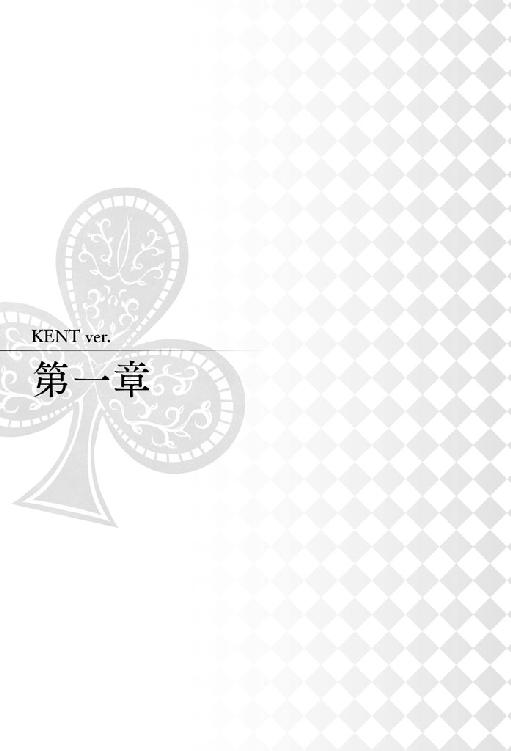
『９月１１日』
「これを外して......っと」
「............」
私の目の前で、彼女が手際よく布団のカバーを外していく。彼女の器用さに、私はただ関心するばかりだ。
「......知らなかったな。中で四隅をくくりつけてあるのか」
今日何度目かの嘆息を吐きながら頷いた。
「はい。こうすることで、寝ている間にカバーがずれてしまうことを防ぐんです」
彼女は実践を交えながら布団カバーの着脱法を指南してくれている。
今、彼女が手にしているのは布団カバーと布団を繋げている四隅の紐だ。カバーのチャックを開けた中がこのようになっているとは初めて知った。確かに、考えてみればカバーの中で布団が捩れないのはこういった陰の立役者がいたからだ。
「なるほどな。構造自体は至極単純だが、なかなか面白い方法だ」
作業する者の手間を極力省き、且つ、物として機能的に設計されているそれは、良く考えられている。
世の中に出ている商品は皆、それぞれ専門分野のプロフェッショナルが幾度も推敲して生み出されるものではあるが、布団カバー一つにここまで気遣いを感じるとは思わなかった。
「それにしても、こういったことは皆、いつどこで知るものなんだ？」
「ご両親に教わらなかったんですか？」
「......そういえば教わっていないな。あれだけ息子の恥をつついておきながら、肝心なことを教示しないところがいかにも私の親だ」
日常生活に支障が出るようなものでもないため両親も放置していたのだろう。
「ま、私も大したことではないと気にも留めていなかったが」
「そうなんですか......」
「家事に従事することの多い女性ならまだしも、男性も当然のように知っている知識なのだろうか」
「全員とは限りませんが......。でも、だいたいの方は知っているんじゃないでしょうか」
それは驚きだ。彼女の言うことが正しければ、私はごく少数派ということになる。
「あのイッキュウもか？」
「イッキさんがお布団を......。確かに、あまりイメージに合いませんね。今度、ご存知か聞いてみましょうか」
「いや、気になるがやめておこう。わざわざ自分から弱みを握られに行く必要もあるまい」
知らなければ良いが、知っていた場合とんだネタにされてしまう。イッキュウの含み笑いが容易に想像できて、頭を振って掻き消した。
「とりあえず、私はこの新たな知識をノートに記しておくことにするよ」
学んだことは何度も繰り返し頭に叩き込むことで身に付く。細かい部分を忘れぬよう、机の引き出しからノートとシャープペンを出し、始めから手順を振り返りながら書き記した。
書き終えたらカバーをクリーニングに出すため業者に電話を入れよう、と頭の片隅で考えていると、
「あ......そうだ。せっかくですから、このカバー洗っちゃいましょうか？」
手にしたカバーを簡易的に畳みながら彼女が言った。
「もちろんそのつもりだ。今、クリーニング業者を呼ぼうと思っていたところだ」
ノートを机に置いて携帯を取り出すと、アドレスに登録してある電話番号を探すが、それを見ていた彼女が慌てた様子で携帯の画面を手で塞いだ。
「ま、待ってください」
「どうした？ 呼べばきっかり一〇分で来るから、時間の無駄はないと思うが？」
「そうではなくて......」
彼女は短く溜息を吐きだしてから、少し気の強い瞳で私を見上げた。
「ロンドンに行ったら、こういうことも自分たちでしなくちゃならなくなるんですよね」
「ああ......そういうことか」
実際自分でやらなければ学習した意味がないということだ。
「わかった。ではこの布団カバーは我々自身で洗濯することとしよう」
「はい！」
「しかし我が家には洗濯機という機器は存在しない」
「......はい？」
聞き返す彼女の声が心なしか裏返った。
洗濯機があるものと想定していたのだろう。ということは、洗濯機はどの家にもあるという一般論が浮上するわけだが、そこはひとまず気にしないことにした。
「よって、別の手段を講じる必要があるわけだな」
「......で、では近くのコインランドリーに行きましょうか？」
「ああ、そうするとしよう」
自宅から徒歩数分の距離にクリーニング店と併設したランドリーがあったはずだ。
大きめの資料を入れるトートバッグに、彼女が畳んでくれた布団カバーとシーツ、それからタオルを詰め込んで立ち上がった。
一時間後、羽毛のように肌触りの良い仕上がりになった洗い物を手に、私たちはコインランドリーを後にした。彼女の指導もあって、短い時間で洗い終えることができた。
「ケントさん、重くないですか？」
「問題無い。シーツと布団カバー、各一枚。それにタオル数枚のみだ」
見た目の体積ほど重量はない。
分け持とうと手を伸ばしてきた彼女に首を振り歩みを進めた。
「しかし、洗濯とは洗うものによって洗剤を変えるのだな。正直驚いたよ」
コインランドリーに行ったはいいが、洗剤を持ち合わせていないことに気づいて専用の自販機で購入することになった。その際、洗剤が自販機で買えることもさることながら、それ以上に洗剤の種類の多さに私は目を見張った。
柔軟剤というネームバリューに惹かれて購入しようとした私を彼女が止めるまでは、その用途さえ曖昧で、彼女に渋い顔をされてしまった。柔らかい物を洗う場合に使用するのではなく、洗濯物の仕上がりを良くするために用いられるものだったようだ。
洗剤も洗うものの用途によって異なるため、多種あるのだと彼女に教わった。
「ケントさん、洗剤の容器とずっとにらめっこしてましたよね」
「仕方ないだろう。何故、ひとつ入れただけではダメなのかすらわからないんだ」
全く、自分の無知さ加減に呆れてしまう。
「君がいなければ、洗濯は諦めてあのまま帰っていただろうな」
「最近は洗剤が内蔵されていて、自動で投入されるコインランドリーもあるそうですけれど。そういうところを探しましょうか？」
「いや、それでは知識として身に付かない。きちんと一から覚えるとするよ」
「それがいいですね。ウール素材の洗濯方法なんかも、覚えておいた方がいいと思いますし」
「洗濯方法が特別、ということか？」
「はい。普通の洗剤で洗うと、縮んじゃったりするんです」
「なるほど、それは重要だな。しっかりと抑えておくことにしよう」
片腕にトートバッグを提げて立ち止まると、持ってきていたノートを取り出してメモを取る。そうしていると、彼女がまじまじと覗きこんできた。
「......？ どうした、何かあったか？」
「熱心ですね」
「これぐらいは当然というものだ」
彼女に時間を取らせて教わっている以上、学ぶ方もそれに見合うだけ真面目に取り組むのが筋というもの。何度も聞き返して手を煩わせるより、習ったことを書き取って忘れない努力をするべきだ。
「生活を共にすることを考えれば君に負担をかけたくはないからな」
「あ......はい。ありがとうございます」
礼を言いたいのはこちらだというのに、彼女は律義に頭を下げた。
「それだけではなく、その......君の声は、私にとって心地がいいからな。だから余計に、熱心に取り組もうという感情が私の中で起こるのかもしれない」
「ケントさん......」
「不思議な効果だな......今度声と向上心の関係性について、調べてみることにしよう」
「はい......なんだか私も興味があります」
「フフ、こうして興味の範囲が広がっていくのは、お互いにとって非常に好ましいことだ」
共通の話題ができるのも喜ばしい。
「それにしても、洗濯機というものが実際に動いているところを見るのは初めてだったが、あれも興味深いな」
「そうですか？」
「ああ。水が渦を巻いて回っているところは、いくら見ても飽きない。なぜかはわからないが」
「あ、それはわかります。私もつい、ぼんやり眺めちゃう時がありますから」
「なるほど、君もそうか。遠心力について考えるには、絶好の機会だからな」
「え、遠心力ですか？ そこまで難しいことは......」
「そうなのか？ では逆に聞こう。君は洗濯機を眺めている間、何を考えているんだ？」
「えっ......」
「ああ、いや、違うぞ。別に責めているわけではない。そこは誤解しないでほしい」
会話に熱がこもると議論をしているような言い方になってしまう、私の悪い癖が出てしまった。相手からすると問い詰められているような感覚になるのだと理解はしているのだが、どうしても気を抜くと出てきてしまう。気分を害されないためにも気をつけねばならない。
誤解しないようにと一言断ってから、柔らかく言い方を変えて伝えることにした。
「ただ......単純に興味があるんだ。君が何を考えているのか」
「......たとえば、ですけど。今日はこれから何をしようって考えることはよくあります」
問いに対する彼女の答えは至極日常的なものだった。
「あとはお昼ご飯のことや、昨日みた夢のことなんかも考えます」
「ほう。他には？」
「......ケントさんのことも、たくさん考えてますよ。今は何をしてるのかな、とか」
「っ......！ ......そ、そうか......」
突如飛び出した私の名に、心臓が跳ね上がる。
「こんなところで洗濯機と私に接点があるとは思わなかった。だが......、君が私のことを思い出してくれるというのなら、悪くはないな」
何気ないところで私を想ってくれているのが嬉しい。
今居る場所が公共の歩道故に、一気に湧きたつ心を表に出さないよう腹に力を入れてどうにか鎮めてから彼女に向き直った。
「私も今後、洗濯機が回っているのを見る時は......遠心力のこととあわせて君のことを思い出そう」
「......できれば、遠心力より先に思い出してくれると嬉しいです」
「それもそうだな。すまない。ではこれからは、何よりもまず君を思い出すとしよう」
苦笑いを浮かべると彼女もまた可笑しそうに声をたてて笑った。
「しかし、乾燥機というものは本当に便利なものだな」
自宅に戻り、洗濯したものをトートバッグから取り出しながら呟いた。
「こんなに大きな布団カバーがたった数分で乾いてしまった。雨の日などはさぞ重宝するのだろう」
本来、洗濯後には干す手間がかかる。晴天ならば問題ないが、雨天の時は室内に干しても乾き切らないことが想定されるため、乾燥機に入れてしまった方が嫌な思いをせずに済むだろう。干す手間も省ける分、時間の有効活用にも繋がる利器だ。
「はい。家庭用のものもあるので、ロンドンでも買うと便利かもしれませんね。むこうはあまり天気が良くないと聞きますから」
「そうだな、検討するとしよう」
「はい」
彼女の返事を聞き届けてから、私は出したばかりの布団カバーを手にして掛け布団に向き合った。
布団は彼女に勧められて、家を出る前にベランダに干しておいたものだ。帰って早々に取りこんだため干した時間は短いが、日光を浴びて繊維が乾いたため、柔らかな手触りになっている。香料をつけているわけではないのに、気持ちの良い香りが鼻をくすぐる。これがいわゆる〝お日様の香り〟というものだろうか。
「......では、さっそくカバーをつけてみるか」
「あ。はい、そうですね。ここからが本番ですから......」
「まずは私がやろう」
復習がてら、実際にやってみた方が覚えるだろう。
「はい。やり方は大丈夫ですか？」
「外すところを見ていたのだから、それを応用すれば、難しいことではない」
彼女がやってくれた手順を、そのまま逆再生すれば良いのだ。
「じゃあ......お願いします」
促されて、まずは布団の四方にカバーの紐を括りつけるところから始めようと手をつけた。
──五分後、布団のポイントに紐を一つ通したが、中々、蝶結びが上手く作れない。
「............」
玉結びならばすぐできるのだが、そうしてしまうと次回洗濯をする時に外すのに苦労しそうなため、止めておいた方がいいだろう。
──一〇分後、ようやく一つ結び終えた。
「......っ」
と思ったら、引きが甘かったのか結び目がすぐ解けてしまった。若干の苛立ちを覚える。
──二〇分後、二か所結び終え、ようやくカバーの中に布団を押し入れる段階までこられたが、予想以上に布団が柔らかいため扱い辛く、上手くカバーの中に入ってくれない。
「あの......ケントさん？」
これまで黙って見ていた彼女も、私が苦戦する様子を見て手を出したくなったのか声をかけてきた。
「気にするな、もうできる」
視線は自分の手元に置いたまま彼女の問いに手助け無用の旨を伝える。
「......はい」
彼女は出しかけた手を引っ込め、邪魔にならない距離に移動して傍観に徹してくれた。
──一時間後、悪戦苦闘しつつ、ようやく布団カバーをつけ終わることができた。
「はぁ......。......これで完成だ」
「そ、そうですね......」
二人で出来上がった布団を見下ろして、思わず溜息が零れる。
曲げていた腰を伸ばすと同じ姿勢で凝り固まっていた筋が僅かに悲鳴を上げた。それと同時に、一つの物事をやり遂げた達成感で心の中がすっきりと晴れ渡っている。布団カバーの取り替えからこんな感情が生まれるとは、これも新たな発見だ。
「どこか不出来なところがあるだろうか」
「気にしすぎかもしれませんが、少し四つ角をきつく結びすぎてしまっているかも......」
彼女が人差し指で示した個所を確認すると、確かにそこは固く縛ったせいで布が不自然によれてしまっている。このままでも使えるといえば使えるが、
「もう少しゆるめたほうが次にお洗濯する時に困らないかなって」
そう彼女に指摘され、納得がいった。
「なるほど、一理あるな。布団カバーの着脱ひとつとっても、先を見通す力が必要ということか。少し直してみよう」
紐を少し緩めるだけなので、さほど時間を取られず直すことができた。
「......これぐらいでどうだろう」
「はい、完璧だと思います！」
「そうか、それは良かった」
彼女は自分のことのように喜んでくれ、小さな拍手をくれた。それほど大したことをしていないのだが、嬉しくなる。
「だがそれもこれも、君の教え方が優れていたからだ。感謝する」
「......は、はい......っ」
いつも業者に任せていたことを、自分の手で行うということがこんなにも労力がかかるのだと、今日初めて思い知った。頭の中では容易にシミュレートできる内容も、実作業では慣れない私にとって難易度が高い。
集中が解けたのと、完成した安心感とで、どっと疲れが圧し掛かってきた。急に身体が重くなったように感じる。
「それにしても......、......慣れないことをするというのは、なかなか体力を消耗するものだな。少し、疲れた」
「休憩しましょうか？」
「ああ......少し座ろう」
彼女の提案に頷き床に腰を下ろすと彼女も隣に座り、並んでベッドに背中を預けた。
何気なしに天井を仰ぎながら倦怠感に身を任せて力を抜くと、ずるずると上半身が横にスライドしていき、何かに当たって動きを止めた。
その何かが彼女の肩であると理解するのに一瞬の間が空き、どういう体勢になっているのか、焦りと共にじわじわ頭に染み込んできた。
故意にそうしようと思いついたわけではない。
私は恥ずかしさのあまり飛び退くことすらできずにそのままの姿勢で固まった。
彼女は私の頭が当たって、ほんの少し肩を揺らしたが、黙って手元を見据えている。
このままで良いということなのだろうか。不快だった場合、彼女はきちんと伝えられる人間だ。
考えてみれば、そもそも私たちは恋人同士。こういうスキンシップもあって然るべき関係ではないか。私が奥手なせいでキスもただ一度しかしたことはないが......。
言い訳じみたことを考えながら、無言の承諾と受け取って、そのまま彼女の肩に頭を預けることにした。
小さな肩を通じてほんのり温かい彼女の体温が伝わってくる。目を閉じると、一層温かみを増した。
布団を取り込んで開けっ放しになっている窓から爽やかな風が室内を吹き抜け、風と共にミントのような香りがふわりと漂った。薄眼を開けて香りの先を探すと、彼女の膝の上に置かれた色白の手が目に留まった。
「......君の手から、洗剤のいい香りがする」
言うと、彼女は自分の手を鼻に近づけて香りを確かめた。
「ああ......本当ですね。でも同じ香りがケントさんからもしますよ」
「そうか？ 自分ではわからないものだが......」
「おそろいですね」
「おそろい？ まあ......そういうことになるな」
「......嫌ですか？」
「どうしてそうなる。嫌だなんて言ってないだろう。......このような体験は生まれて初めてだが、悪くない。いや、むしろ好ましいくらいだ」
「ふふ、なら良かったです」
「............」
ぽつぽつと何気ない会話をしながら、彼女と私の間に流れる安らかな空気に目を細めた。
「......ロンドンへ行っても」
「え？」
「ロンドンへ行っても......君とはこうして、穏やかな時間を過ごしたいものだな」
「そうですね......私も、そう思います」
「そうか。そう言ってもらえて安心したよ」
私の位置から見える彼女の口元が柔らかな弧を描いた。
「............」
何も会話がなくとも、彼女がそこにいるというだけで胸が熱く湧きたつ。少しの苦しさと甘さを合わせもつ、この言葉にしようがない感覚を〝幸せ〟というのではないだろうか。
「やはり、君の傍は落ち着くな。ずっと、ここにいてもらいたくなる」
「ずっといますよ？ 私はケントさんの傍にいます」
彼女は優しく呟いてから、
「......ケントさんも、私の傍にいてくれますか？」
と、首を傾げた。
「今さら聞くまでもないだろう？」
私の答えは決まっている。
「私以外の男が君の傍にいるなんて、仮定の話だとしても御免だ。とても耐えられない」
「大丈夫です。そんなことにはなりませんから......絶対に」
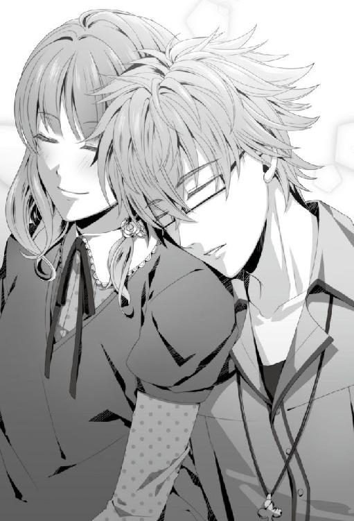
「そうか......良かった......。私は、これからも君と、こうしていられるんだな......」
彼女の言葉に胸を撫で下ろすと、安らぎに身を委ねてゆっくりと瞳を閉じた。
「......」
空模様は快晴。近頃寒かった気候も、今日は日差しを浴びて過ごしやすく気持ちがいい。予定があるわけでもなく、何をするでもなく、ただ隣に彼女がいるだけの素朴な一日が、ひどく愛おしいものに思えた。
陽の眩しさに薄く目を開けると、ぼんやり自分の足元が見えた。床を日差しが鮮やかな赤に染めている。はっとして手元に転がっていた携帯で時間を確認すると、もう夕刻になっていた。
私としたことが、彼女の肩にもたれかかって眠ってしまったらしい。私が寝ぼけてなければ一時間弱寝ていた計算になる。
顔を上げ体勢を整えようと身を僅かに浮かせると、柔らかな髪の毛が私の肩へ滑り落ちてきた。すぐ横で彼女が穏やかな顔で寝息をたてていた。私の方へ身を寄せて、お互いを支えあう形で眠っていたようだ。
あどけない寝顔が可愛らしく、思わず見入りそうになって慌てて視線を背け、彼女を起こさないようそっと座りなおした。
あまりにも気持ち良さそうに眠っているため、起こしてしまうのも癪だ。しばらくすると彼女も起きるだろう。
彼女の大人しい寝息に耳を傾けながら、ふと考える。彼女と個人的に話すようになった当初は、こんな風に過ごせる日が来るとは思ってもいなかった。彼女の考えが理解できず、ずいぶんと傷つけてしまったこともある。
動物病院の待合室で茫然と虚空を見つめていた彼女の顔が、悲痛に歪められた。
『......っ......ひっく......』
『......!?』
彼女が涙を溢れさせたのを見てしまい、私は心の中で激しく動揺した。
『......どうして、そんな事言うんですか？』
零れ落ちる涙はそのままに、彼女は攻めるような眼差しで私を睨んだ。
『え......』
『どうして......そんな事が言えるんですか......？』
──どうして......？
私はただ彼女に早く立ち直ってほしくて正論を述べただけだ。それなのに、彼女の怒りの対象は私にある。
彼女の飼っていた犬が事故に遭い、命を落とした。だから私は、その反省を基に今後注意すれば良いと慰めたのだ。
『私にいっぱい、反省するべきことがあるのはわかってます。私が未熟な飼い主だったせいでクロは死んだんだなんてこと......言われなくたってわかってます』
理解しているのなら、早く気持ちを切り替えてほしい。そう思うのに、彼女の涙は次から次へと溢れ出てくる。大きな滴は彼女の足の上で握られた拳を濡らしていく。
『でもそれ、今考えなきゃいけないことですか。クロのこと、クロが死んじゃったこと、悲しんでちゃダメですか。もう、放っておいてください。一人にしてください』
『............』
一人にしろと言われても、彼女の傍を離れられるはずもなかった。気を落としている彼女を放っていけるほど、私も非情ではない。
いつもの彼女に少しでも早く戻ってほしい一心で、彼女を傷つけているとは知らずに、私はまたも口を開いた。
『......事故は仕方ない事態だった。失敗は誰にでもある。だが、その失敗を次に結びつけてこそ、死んだ犬の命も報われるのではないかと思う』
悲しみに暮れる彼女に動揺しながら、必死に考え出した言葉を紡ぐ。
『次に君が犬を飼う時には......』
と言いかけて、彼女の声が私の言葉を塞いだ。
『もうやめてください！ 私を放っておいて！ 一人にして！ ケントさんなんか大っ嫌い......！ 大っ嫌い......!!』
『............』
あの時彼女が叫んだ言葉は胸に深く突き刺さり、私の中から消えることはない。
苦い思い出が頭を過り、胸がずきりと軋んだ。
あの頃の私は、まだ失って困る大切な存在を知らなかったのだ。だから、悲しみの底にいる彼女にあんなに無神経な言葉をかけてしまった。ただ悲しむ時間を与えて傍にいてあげれば良かったのに、理論づけて無理やり慰めようとした。彼女の気持ちを無視して......。
酷く傷つけてしまったのに、今もなお、彼女は私の隣にいる。
このかけがえのない存在をもう傷つけまいと寝顔に誓っていると、穏やかだった彼女の顔が不意に歪んで、あの時の表情と重なった。薄く開けられた口から苦しげな呼吸も洩れている。夢を見ているのか、言葉にならないが口を僅かに動かして抵抗しているようにも見えた。
「......どうした？」
起こすのも躊躇われたが、苦痛の表情をしている彼女を放っておけず、声をかけた。深く寝入っている彼女はそれだけでは起きずに益々険しい表情になっていく。
「おい......！」
さっきよりも声を張って、軽く肩を揺らすと、
「......あ......」
きつく閉じていた彼女の瞼がゆっくりと開けられた。うつろに揺らめく瞳が長い睫毛の間から私を捉えて、安堵の溜息を零す。
「ケントさん......私......？」
「ようやく目を覚ましたか......。ずいぶんとうなされていたようだが、何か怖い夢でも見ていたのか？」
問うと、彼女は小さく頷いた。
「......はい、少し......」
「すまない、私が眠ってしまったばかりに......」
彼女も退屈して一緒に眠ってしまったのだろう。
「洗いたてのシーツの匂いが、思いのほか心地良くてな。つい、眠気を誘われてしまった」
「いえ......」
答える彼女の表情が浮かない。
会話ができているということは、まどろんでいるわけでもなさそうなのに、彼女の顔は暗いままだ。
「......そんなに塞ぎ込むほど、嫌な夢を見たのか？」
「嫌......というより、昔の、悲しい夢を見たんです」
彼女は小さく溜息を吐いてから、困ったように眉根を寄せて私を見上げた。
「変ですよね。今、ケントさんといられて私はこんなに幸せなのに......。でも、幸せだからこそ......今この瞬間が夢なんじゃないかって思えてきてしまって......」
「............」
彼女の不安要素を聞いて、不謹慎にも私の胸が高鳴った。夢だと錯覚しそうなくらい私といて幸せだと言っているのだ。これに舞い上がらずしていられようか。
だが、真剣に悩んでいる彼女に内心を打ち明けるのは申し訳が立たないため、ひとまず私の心情は後回しにして彼女の話に相槌を打った。
「生活が変わることへの不安で、一時的にナーバスになっているのかもしれないな」
マイナスに思考が働いたことで、夢にも影響が及んで暗いものになってしまったのだろう。
普段、どちらかというと前向き思考の彼女がそういう考え方に至るのは珍しい。
「......そうですね。すみません、変なことを言って」
「変なことではない。万人によくあることだと聞く」
喜ばしいことの前に、突如不安に陥ることはある。特に女性は、人生の節目によく見られる症状のようだし、別段おかしいことではない。
「しかし、この問題の解決法ならば君の目の前にあると思うのだが」
「え......？」
「私がいるだろう。今のこの時間を不安だと思うなら、君は、何度でも私に確認すればいい。私はその度に答えよう。これは夢ではない。私たちはちゃんと一緒にいる、と」
「ケントさん......」
「それだけでは、君の不安は取り除けないか？」
「......いえ。ありがとうございます」
彼女はふと笑みを零した。胸のつっかえが少しでも取り除けたのだろうか。
「もしまた不安になったら......その時は、ケントさんに話します」
「ああ、そうしてくれ。君を不安にさせるのは本意ではないからな」
「ケントさん......」
自分が原因に加担しているとなるとなおのこと。彼女の心の支えになれるのなら協力を惜しまない気概でいる。それくらい愛しい存在なのだから。
「............」
私を見つめ続ける彼女に引き寄せられるように私は彼女の肩を抱いた。
私が何をしようとしているのか、まるで悟っていない彼女は大きな瞳を見開いたまま、不思議そうに首を傾げている。
「......？」
「ああ、その......、......目を......」
閉じてくれないか、と言おうとして、
「......っ......」
近づいてくる彼女の唇に恥ずかしさと緊張がピークに達し、私が先に顔を背けてしまった。
飛び退くように彼女と距離を取ると、一瞬で後悔の念が心を支配する。
このままキスをしたとして、彼女はきっと拒まなかっただろう。躊躇う必要はなかったはずなのに、私の覚悟が足りないせいで機会を逸してしまった。
不慣れ過ぎて恰好がつかない。私は一体何をやっているんだ。
「......すまない、なんでもない」
相変わらず彼女の視線を感じながらも、
「も、もうこんな時間か。日が落ちる前に、送っていこう」
目を合わせないまま携帯で時刻を確認し、私は玄関に足先を向けた。
「ケントさん、送ってくださってありがとうございます」
マンションまで送ってくると、エントランスの前で彼女が振り返った。エントランスには控えめな照明が灯っていて、彼女を後ろから浮き出すように照らしている。
そんな姿をぼんやりと眺めながら、美しいなと思った。
本来なら心が浮き立つところなのだが、心の片隅で先ほどの後悔を引きずっているせいか、気持ちがついていかない。
「気にするな。今夜も戸締まりは忘れないように」
「はい」
「............」
「......？」
なぜ私はいざという時に緊張して足踏みしてしまうのだろう。先ほどから何度となく考える。
彼女を前にすると鼓動が痛いほどに加速し、それに伴って身体が強張ってしまう。自分でもそれは自覚していて、気持ちを落ちつけようと意識はしているのだが、どうしても身体がいうことを聞いてくれないのだ。
身体がいうことをきかず焦っていると、考えなくても良い余計なことが頭に浮かんできてしまう。タイミングは間違えていないかだとか、歯をぶつけないよう気をつけねばとか、その他色々だ。
そうしているうちに彼女の顔が近づいてきて、一種のパニックに陥って、結局機会を逃してしまうパターンになる。
キスに限らず、抱き締めることも、手を繋ぐことも、全てが緊張の連続で、付き合って数カ月経過するというのに、私たちは恋人として当たり前のスキンシップが満足にできていない。
単純に私の恋愛における経験不足からくる問題なのはわかっているが、彼女とのスキンシップを場数のように考えたくないのも事実。普通にすれば良いのに、普通がこんなにも難しい。
はっきりとした答えを導き出せない難問に、私は溜息を零した。
「あの......ケントさん」
「ん？ どうした」
「もしかして私......何か気に障ることをしましたか？」
「......ん？ なんのことだ？」
「今日のお昼頃からケントさん、時々黙り込むことがあったので......」
「え!? ああ、いや......君は何もしていない」
彼女の指摘に私は自分を省みた。言われてみれば、彼女を取り残して自分だけ物思いに更けていた瞬間があったような気もする。不自然な態度を気にかけて彼女が問うてきたのだろう。
「これはだな......強いて言うなら......私の問題だ」
「ケントさんの......？」
「............」
まさか、キスがしたいのだと言えず、
「と、とにかく、君は悪くない。気にしないでくれ」
私は言葉を濁した。煮え切らない態度の私に一瞬、彼女は訝しげな顔をしたけれど、すぐに頭を切り替えてくれたようで、追及はなかった。
「それよりも、君にまたひとつ頼みごとをしても良いだろうか」
「あ、はい。なんでしょうか」
「明日は私に、料理を教えてくれないか」
両親に生活力を疑われている今、彼女に学ぶことは多い。今日で洗濯云々の話は撤回できるほどに教示してもらったため、布団カバーを衣服に応用していけばどうにかなるだろう。
生活において衣食住を基とするならば、次に学ぶべきは食だ。食は生きるに必要不可欠であり、他人との繋がりも生む大事な手段でもある。
「ロンドンへ発つ前に、日本料理のひとつぐらいは覚えておかないとと思ってな。異国に滞在する場合、母国の料理というのは話の種になる可能性が高い。そうでなくとも、我々が済む予定のアパートはキッチンが共同だ。食を通じて、他の住人たちとコミュニケーションをはかるのも大事なことだと思ってね」
「確かに......それもいいですね。わかりました。私で良ければ、教えます」
「そうか。そう言ってもらえると頼もしいな」
「ええと......どんなお料理がいいですか？」
「そうだな......理想としては、異国の住人にも受け入れられやすく、かつ海外でも材料調達が容易なものだが......」
言ったところで、自分には相応の献立が思い浮かばず、彼女頼みに視線を送った。
「......何か、これらに合致するような献立はあるだろうか？ 私では妙案が浮かびそうにない。代わりに君の知恵を貸してもらえると助かるのだが、どうだろう？」
「そうですね......」
彼女は視線を斜め上方に彷徨わせてから、何か思いついたらしくぱっと笑顔を見せた。
「では、肉じゃがなんてどうですか？ ビーフシチューが起源だと言われているくらいですから、外国の方にも気に入って頂けそうですし。向こうの方にとっては有名な日本料理より、家庭的なもののほうが新鮮でしょうから話も膨らむかと」
「なるほど。いいかもしれないな」
「肉じゃがなら私も教えられます。ケントさんが良ければそれにしますか？」
「ああ、問題ない。やはり君に意見を求めて正解だったな。ありがとう。では、明日はよろしく頼む」
「はい、こちらこそ」
「......では、そういうことだから、君は早く家に入りなさい」
「はい。おやすみなさい、ケントさん」
「ああ、おやすみ」
彼女は手を振りながら楽しげな笑顔でマンションのエントランスへ向かっていった。軽やかな足取りにふわりと揺れる髪の毛に目を細めて、私も路地へと踵を返す。
明日も彼女と過ごせる喜びに胸を弾ませて、どうしようもなく駆けだしたい衝動に駆られた。普段から体力をつけているわけではないから、すぐバテるのは目に見えているが、この嬉しさを内に留め置くことができず、私は衝動に駆られるまま夜道を走り出した。
『９月１２日』
大学の夏休みは長い。三年生は就職活動に勤しんでいる頃だが、彼女はまだ一年生で休みの間は自由が利くため、予定がない日はほとんどバイトを入れていると聞いている。今日も然り、朝から昼過ぎまでシフトが入っていた。
夕方に料理を教えてくれる約束をしているため、彼女はおそらくバイト後に材料を調達する心積もりなのだろう。私には集合場所と時間以外、細かな指示がなかったことから彼女の行動が予測できた。
しかし、教えを斯う私が手ぶらで行く訳にもいかない。まして、献立が肉じゃがとなるとそれなりに嵩張る荷物もあるし、バイト後の彼女に持たせるのは気が引ける。
そのため、指示とは異なるが私は彼女のバイト先である冥土の羊まで迎えに来ていた。バイトの終了時間を聞いていなかったため、材料調達の時間を加味して逆算し、それでも行き違いにならぬよう大分余裕をもって店に到着した。
時間潰しにと、持ってきた本を広げ、出入りの邪魔にならない裏路地へ通じる壁際に立つ。未読のまま机の上に積まれていた本はこういう時役立つ。読書に興じていると、数十分はあっという間に過ぎ去った。
切りが良いところまで読んで時間を確認しようと携帯を取り出した時、大きな何かが私に影を落とした。気配に気づき顔を上げると、そこには外を掃除するためのほうきと塵取りを持った、冥土の羊の店長が佇んでいた。
店長は無言でこちらを見つめてほんの僅かに首を傾げた。
「......ああ、すまない。掃除の邪魔になっていたか......？」
言わんとしていることを悟ってこちらから話しかけたが、彼は首を振るだけで沈黙が流れる。客商売の責任者だというのに相変わらず愛想の薄い人だ。
掃除を始めるでもなく、私がこの場にいることを不思議そうに眺めている店長に事情を説明するため、またも私から話しかけた。
「バイト後に会う約束をしているので彼女を待っている。気になるようなら別の場所へ移動するが......」
手に持っていた本を鞄にしまい、もたれかかっていた壁から背中を離すと、そこでようやく店長が口を開いた。
「彼女なら今上がるところです。私が呼んできましょう」
店長はそう言うと、即座に店の入り口へと踵を返した。
わざわざ呼んできてもらうのも悪いと思い、止めようとしたが、やはり思いなおし彼女に声をかけてもらうことにした。私がここに来ているということを彼女は知らない。そのため、私が本に気を取られている間に彼女が帰ってしまうことも考えられた。そうなっては迎えに来た意味がなくなってしまう。
従業員が利用する裏口の路地で待っていると、店長に急かされたのか彼女はすぐにやって来た。よほど急いだのか、ほんの少し髪の毛が乱れている。
「......ああ、出てきてしまったか。そんなつもりはなかったのだが」
「ケントさん......！」
私がいることに驚きを隠せない様子で彼女は駆け寄ってきた。
「バイト、お疲れ様」
「あ、はい......」
「君が出てくるまで、店の前で本でも読んで過ごそうと思っていたんだが......。ちょうど店長と出くわしてね。急かすつもりはなかったのだが、君を呼んできてくれると言うのでその好意に甘えてしまった。しかし、まだ済ませていない仕事があるようだったら待つことは当然可能だ」
迎えに来たのは私が勝手にしたことだから、彼女の仕事に支障をきたすのならば待つのは当然のことだ。身構えると、彼女は勢いよく首を横に振った。
「あっ......大丈夫です。もう帰るだけでしたから......」
「そうか、それは良かった」
「でも......ケントさん、どうしてここに......？ 今日は一時間後に私の家で待ち合わせだったはずですが......」
「ああ、確かにそうだな。だがこれから君は、私に料理を教えるために、肉じゃがの食材を買いに行くのだろう？」
「はい......」
予想していた通り、彼女は頷いて話の先を目で促してくる。やはり迎えに来て良かった。
「そうなると君の荷物が増えることは当然予測できる。バイトで体力を消耗した君に、そんな負担をかけるのは、私の本意ではない。荷物持ち程度のことは私がやるべきだろう。そう思ってここに来た」
「ケントさん......。ありがとうございます。嬉しいです......！」
「いや、まあ......そんなに気にすることではない。それに、私が教えを乞うのだからこうして迎えにきたり、手伝いをするのは当然のことだ。......さ、時間も限られている。君の準備ができているのなら買い出しへ行こうか」
駅の方へ振り向きかけて、ふとバイト直後の疲れているだろう彼女をそのまま連れ出していいものかと思いなおし、もといた場所へ戻る。
「それとも、どこかで少し休息を取ってからのほうがいいだろうか？」
「あっ......だ、大丈夫です」
まだ元気だと言わんばかりに胸の前で手を振って、彼女が私の隣に並んで一歩踏み出した時──。
「ち、ちょっとミネ......！ あんまり押さな──うわっ！」
従業員の出口のドアが勢いよく開いて、雪崩のようにサワとミネが飛び出してきた。
「なっ......」
面々の顔や出てきた状況を見ただけで、なんとなく何をやっていたのか想像がついた。
ドアの裏側で私と彼女の様子を窺っていたのだ。
「............」
半ば呆れ気味に二人を見据えると、自然に眉間に縦皺が刻まれる。
「お、お疲れ様ですケントさん......」
自らの行動を誤魔化すように、へらりと愛想笑いを浮かべ挨拶をくれるサワに対し、
「お疲れ様でーす......」
不満気に唇を尖らせてミネが私を見上げた。
じゃじゃ馬の如く他人の身の上話に集るミネのことだ。もう少し私と彼女の様子を窺っていたかったのだろう。
「......私が納得できるだけの弁明をする気があるのなら、聞いてやっても構わないが？」
眼鏡の縁を中指で押し上げて、咎めるような視線を投げると、サワが怯んだように後ずさって慌てて詫びを入れた。
「いえ、いいです。すみません......」
「まったく......君たちは本当に他人の詮索をするのが好きだな。ずいぶんと悪趣味なことだ。その有り余る情熱と探究心を、何故勉学へ向けないのか......。理解に苦しむな」
「うわ......痛いお言葉」
「私たちには相変わらず手厳しいですね......。ま、実はキスもできないくらい奥手なくせにってわかってると、怖くもありませんけど」
ぶつぶつと文句をたれているミネの言葉は、後半上手く聞き取ることができなかった。
「何？」
「ミ、ミネ！」
聞き返す私に、彼女は焦った顔でミネの名を呼んだ。なぜ彼女が焦る必要があるのかは不明だが、ロクでもないことを呟いたに違いない。
「なんだ？ よく聞き取れなかった。すまないが、もう一度──」
もう一度ミネに問い返そうとすると、強引に彼女が腕を引っ張ってきた。
「ケントさん！ か、帰りましょう！」
「どうしたんだ、突然......」
「サワ、ミネ、お疲れ様！」
私の疑問は軽く彼女の笑顔に流されて、彼女は友人二人に手を振ると急ぎ足で路地を突き進んでいく。後方からミネとサワの視線がなくなるまで、彼女は無心に歩き続けた。
「待て。そう腕を引っ張られては歩きにくい」
「あっ......ごめんなさい」
はっとして立ち止まると、彼女は後ろに誰もいないことを確認してから掴んでいた腕を解放してくれる。
「いや、謝る必要はないが......君らしくないのは確かだな。これはあくまで推論だが......何か、私に聞かれてはまずいことでもあったのか？」
「ち、違います！ 何もありません......！」
「............」
強く否定するところをみると図星なのは明確だが、話したくないからこそ私を引いてきたのだ。あまり追及して彼女を困らせるのもかわいそうに思えて、ミネのぼやきは頭の外に追いやることにした。それに、ミネの考えることだ。大したことではないだろう。
「......まあ、女性には内密にしておきたいことが多くあると聞く。無理には聞き出すまい」
私の言葉に安堵したのか、彼女はゆっくりと肩を落とした。
「今はひとまず、食材の買い出しに向かうとしよう。デパートでいいんだったな」
「あ、はい」
「食事の材料を買うという目的で買い物に行くのは初めてだ。何か問題があれば言ってくれ」
大真面目に話したつもりが、彼女は目を丸くしてから可笑しそうに笑う。
「ケントさんったら、大げさです。普通に買い物するだけですよ？」
「君にとってはな。だが、私にとっては未知の体験だ」
さすがに食品売り場に行ったことはあるが、料理を目的としたことはまずない。料理に無頓着だった私が近づくとすれば研究のためか、せめて飲み物を調達する時だけだ。
「研究の材料として品定めすることはあっても、いずれ自分の体内に入るものを真剣に選ぶことはなかった。君にはそのことも含め、しっかりサポートをしてもらえると助かる」
事情を話すと理解してもらえたのか、彼女は胸を張って大きく頷いた。
「はい。任せてください」
「頼もしい返事だな。......しかし初めての経験というのはいくつ歳をとろうと胸が躍るものだな。それとも、共にいるのが君だから楽しみだと感じるのだろうか。君はどう思う？」
「私だったら......きっと両方です。ケントさんと一緒だから、尚更楽しいんだと感じると思います」
「そ、そうか......。だが言われてみればその通りだ。私も、君がいなければここまで浮かれてはいないだろうからな」
内心舞い上がりそうな気持ちを表にださないようにして、いたって平静に言う。弾みそうな気持ちを切り替えられないまま、デパートへ向けて歩み始めた。
「......では、そろそろデパートへ向かおうか」
「はい！」
「ええと、食品売り場は......」
デパートのエントランス中央に掲示された大きな案内図を指で辿って彼女が場所の確認をしている。大抵、食品売り場は最下部に設置されているため、
「地下だろうな」
と助言すると、彼女の指が案内図の『Ｂ１』と書かれた階層でぴたりと止まった。指が示した先には、予想通り食品売り場と記されている。
「そういえば、食品売り場ってほとんど地下にありますよね。どうしてでしょう？」
場所を確認し終えてから彼女は不思議そうに私を振り返って頭を捻った。
「理由は諸説ある。有名なのは噴水効果というものだな」
噴水効果と聞いて彼女の顔が疑問を呈していたため、詳しく説明しようと話を続けた。
「人気のある施設や店舗を地下に配置することで、下から上への売上増加を狙った販売方法だ。その他にも運搬や配管の都合、ブランドイメージの保持、売り場面積の問題などもあるだろう。明確な事情は店によって違うだろうが、主な理由は以上のものだと私は考えている。参考になったか？」
説明を終えると、若干早口だったせいか圧倒された彼女が目を剥いて苦笑いを浮かべていた。
「は、はい。詳しいですね、ケントさん」
「何、私も以前、同じ疑問を持ったことがあった。ただそれだけのことだ。もっとも、そう思ったのは今の君よりも幼い頃のことだがな」
悪気はなかったのだが、聞き様によって彼女の癇に触れたようで、
「......それ、私が子どもだって言ってます？」
彼女の口がむっと歪められた。
「フフ、怒らないでくれ。そういうつもりで言ったのではない」
即座に否定して機嫌を直してもらうべく、拗ねた表情の彼女に事情を告げた。
「......私たちは、元々考えが合わない者同士だっただろう？ ゆえに衝突したことも多くあった。それが、今はこのように同じ疑問を抱けるまでになった。そのことが私は嬉しいのだ」
彼女と過ごすことが当たり前になった今、思い返してみると、真逆の性質のふたりがよく付き合えたものだと不思議な感覚になる。
「夫婦は長年共にいると似てくると言うが、こう考えるとあの説もあながち間違いでは──」
自分が発言した内容が遅れて頭の中に浸透してきて私ははたと言い留まる。
「......！」
私はまた、何を口走ってしまったのだ。
余計なことを言う口を慌てて手で覆ったが、既に話してしまったことを回収することもできなければ訂正することもできない。
「ケントさん？」
どうしたんですか、と言いたげな瞳で見上げて来る彼女は、もしかすると私が意識しているより気に留めていないのかもしれない。けれど私の頭は弁明しなければという思いでいっぱいで、言わなくても良い内容までつらつらと口を流れ落ちる。
「す、すまない。今のは言葉の綾だ。共に夕食の買い物をするというこの状況を、まるで夫婦のようだなどと思っているわけでは断じてない。しかし誤解を招く発言だった。気分を害したなら言ってくれ」
「え!? いえ、そんな......気にしてませんから」
「そうか、怒っていないのならいい。まあ、とにかく地下へ行こう。階段かエスカレーターを探さねば」
早口でそう告げて、動揺したまま、とりあえず中央へ向かって進んでみたが、
「あ、ケントさん。エスカレーターならそこです」
どうやら歩き去った場所にエスカレーターがあったらしく、彼女の声に引き戻されてしまう。
「あ、ああ。目の前にあったのだな。すまない、早く行こう」
私としたことが、こんなに近くにあったものを見落とすとは情けない。特段わかりにくい場所に設置されているわけでもないのに、動揺に隠されて通り過ぎていた。
私は一呼吸置いて気持ちを抑え込むと、今度こそエスカレーターに向かった。
一時間後、私たちは食材を買い終えて、再びエントランスに戻ってきていた。
初めての食材調達は私にとって、実に興味深く、面白い体験になった。
ひとえに野菜といっても売り場に行ってみれば、その種類と品種の多さに目を見張る。どれに手をつけたら良いのかわからない私に、彼女は簡単に調理工程を説明しながら材料の用途を教えてくれた。調理や味付けの仕方によって使用する種類は違うし、肉の切り方も様々あるのだそうだ。
まだ調理をしていない私には上手く想像できないが、これから実際やってみるとわかるのだろう。
──それにしても、買い物がこんなに疲労するものだとは思わなかった。
いや、違う。買い物自体は有意義なものだった。重いものを購入しない限り、体力を使うものでもない。
たかだか一時間程度の買い物で疲労を蓄積したのは、体躯というより精神的なものの方だ。
「............」
「あの、ケントさん......大丈夫ですか」
彼女に顔を覗きこまれ、私ははっとして顔を上げた。
「ん？ ああ、問題ない。買い忘れはないか」
「はい、それは大丈夫です。材料は全部揃えられました」
彼女は私が片手に持っている白のビニール袋を一瞥してから、僅かに眉根を寄せて視線を戻した。
「......疲れましたか？」
「............」
疲れたかと問われれば、確かにそうだ。だが、彼女が気遣ってくれているのはおそらく体力面のことだ。
「いや......買い物自体は興味深く、いい経験になったのだが......」
「あ......もしかして、惣菜売り場にいた店員さんですか？」
思い当たる節があったのか、彼女はぽんと一つ手槌を打った。
「ああ......まさか見ず知らずの他人にあそこまで、君との関係を追究されるとは思っていなかった。普段ならば想定外のことが起きても対応できるのだが......君が関わると私も冷静にはなれないようだ」
溜息混じりに呟くと、直近の出来事が脳裏に蘇る。
買い物かごを持ち彼女の後ろについて店内をまわっていたところ、総菜コーナーの一角で試食を担当する店員が立っていた。私たちを見つけるとしきりに試食を勧めてきたため、断れなかった彼女は小さなトレイの一つをいただいて試食することにした。その際、傍に立っていた私を見上げ、
『旦那様のお弁当にもぴったりのおかずですよ』
とにこやかな笑顔で言った。
『旦那ではない。私は──』
『買い物に付き合ってくれる優しい旦那様だから少しくらい手抜きしても怒られないでしょう？ 羨ましいわ。結婚して長いとレパートリーが少ないと毎日が喧嘩で......。あらやだ、新婚さんにこんなこと言うのも失礼ね』
反論する余地も与えられずに店員の話はまだまだ続き、結局うやむやなままその場を後にした。
「......君も困惑したことだろうな。あのご婦人は最終的に、私たちを夫婦と決め付けて話を進めていた。まったく......私の両親といい、周囲の人間は何故ああも君を私の妻扱いするのだろうか」
他人からは私たち二人がそういう関係に見えるということだろうか。それにしては彼女は若いし、私も到底サラリーマンといった風貌ではないと思うのだが。
何よりも、恋人としても駆けだしの私たちが、夫婦などと言われるのは早すぎる。
「......結婚どころか、キスも一度しかしていないというのに......」
心のぼやきは言葉となって口を吐いた。幸い、彼女に聞こえるほどのボリュームではなかったようで、
「え......？」
内情を知らないきょとんとした目の彼女が私を見つめた。
「............」
将来、社会的に認められた配偶者という関係になれたらいいと思う。誰に否定するでもなく、彼女は私のものだと言い切れたら、それは幸せなことだろう。
けれども、その前に踏まえねばならない課題も私には多々ある。
ごく自然の流れで彼女に口づけることができれば、......何か変われるだろうか。
「......いや、なんでもない」
消せないジレンマを抱えたまま私は出口に向かって踵を返した。
「ぐずぐずしていては、せっかく選んだ肉が傷んでしまうな。早く帰って調理してしまおう」
「あ、はい......」
デパートの外に出ると、眩しいほどの西日が私たちを照らしてきた。鬱屈した気持ちを一気に分散してくれるような日差しの強さだ。
赤く染まった住宅街の家路を辿ると、後ろから彼女が小走りについてくる。知らずの内に速足になってしまっていたようだ。少し速度を落として彼女を待つとすぐに私の隣に追いついた。前方に長く伸びた影が親しげに肩を並べている。
「そろそろ日が暮れてきたな。やはり買い物に時間をかけすぎたか」
「でもちょうどいい時間ですよ。肉じゃがを作り終える頃には、きっとお腹が空いてます。肉じゃが、私の家で食べていきますよね？」
「......君の家で？」
「はい。せっかくですから」
「いや......しかし......」
これから料理をするとなれば、出来上がる頃には日が暮れているだろう。そんな時間帯に、女性の部屋に彼氏とはいえ男の私が長居していいものか憚られた。
私の心配は余所に、彼女は無邪気に誘ってくる。
「一人で暮らしてると、たまには誰かと一緒にご飯を食べたいなと思うんです。だから......ケントさんが一緒に食べてくれると嬉しいんですけど」
そう言われて、断れるわけもなく、
「......そ、そうか。では、同席させてもらおう」
「はい」
夕飯が終えるまで一緒に過ごすことになった。
私も男だが、キス一つにも尻込みしてしまう状態なため、彼女を危険な目に合わせることは恐らくない。自身には褒められたものではないが、その性質が逆に彼女を守れているなら良しとするべきなのか......。私の心境は微妙な虚しさでいっぱいだった。
彼女の部屋に到着すると、早速調理に取り掛かるべくキッチンに向かった。一人暮らし向けのマンションとあって、キッチンは大人二人並ぶには少し狭さを感じる。しかし、余計なものがなくきちんと片づけられているため、手狭さはあっても調理するには問題ないスペースは確保されている。
購入したばかりの品々を調理台の上に並べ、目視してから彼女が開始だとばかりに両手を合わせた。
「では、始めましょうか」
「ああ、よろしく頼む」
時々、昼食時にテレビで見かける調理番組のアシスタントよろしく、先生である彼女の隣につくと軽く腕を捲くる。
「ええと、普段はだいたい目分量で作っちゃうんですけど......今日はちゃんと分量を量りますね」
「そうしてくれなくては困る。ノートに書かれたデータが曖昧では後の参考にならないからな」
「あ、そうですね。じゃあケントさん、まずは──」
彼女は私の頭上から足先までの着衣を確認してから、自分が身につけているものの裾をひらりと摘まんだ。
「......えっと、エプロンを着けましょうか？ デパートで一緒に買いましたよね」
「ああ、すっかり失念していた。そのために買ったのだったな」
食品売り場に併設してある調理用品を扱っている雑貨屋で購入したものが、袋に入れられたままリビングに置いてあることを思い出した。今後のためにも自分用のエプロンを用意しておこうとついでに買っておいたのだ。
雑貨屋は主に女性向けらしく、買ったエプロンもあきらかに女性物のデザインではあるが、彼女がしきりに可愛いと口にするため、その一つを手に取った。
ピンク地に緑のリボン柄がワンポイントで入ったエプロンは、はたして私に似合うかは甚だ疑問だが、他人に調理姿を見られることがまずないため、似合わなかったとしても問題ないだろう。
「ではエプロンを着けたら、このメモの通りに、調味料を量ってもらえますか？」
「了解した。計量ならば任せてくれ。......と、その前にエプロンだったな。用意してくる。君は先に取り掛かっていてくれ」
彼女が書きつづったメモ用紙を受け取ると、私はリビングに足を戻した。
「──はい。これで下準備は完了です」
刻んだ野菜をまな板からボールに移し替えて、彼女が包丁を置く。
初心者の私が理解しやすいようにと、初めに全ての材料の下準備を行い、別皿に移して調理台の上に並べていた。本来なら、工程に合わせて調味料を計り入れていくそうだが、一度に下準備をし終えていた方が、すんなり調理に取り掛かれるだろうという彼女の気遣いからそうしてもらっている。
「計量、完璧でしたねケントさん。初めてにしては、手慣れているように見えましたけど......」
調味料の計量を一手に引き受けた私に、彼女は感心したように呟いた。
料理をしたことがない私がなぜ計量に慣れているかというと、それは日々の研究のおかげかもしれない。
「植物に肥料や水分を与える際、似たような作業をしているのでな。その賜物だろうか？」
初めてにしてはどこか慣れた作業をしているなと感じていたのはそのせいだ。
「え......もしかして、鉢植えにあげるお水もきちんと量ってるんですか？」
「もちろん、量るだけではないぞ。ちゃんと記録もしている」
「与える水分量の違いが、結果に変化を起こすケースは多い。つまりこれらのデータは非常に重要となる。となれば、毎回しっかりと計量し、データとして残すのは当然だろう。まさかそれが、こうして料理に活用されるとは思わなかったがな」
とすると、私にとって料理は洗濯よりも比較的親しみやすい分野なのかもしれない。興味がわくと、妙に面白く感じてきた。早く次の工程に移りたくて彼女に指示を仰ぐ。
「──さて、問題はここからだ。次は何をすればいい？」
「じゃあ、まずはたまねぎから炒めていきましょうか」
「たまねぎか。了解した」
鍋にサラダ油を入れ、火を灯した後に先ほど刻んだ玉ねぎを入れる。彼女が見本で切ってくれたもの以外は私がやったため、若干いびつな形をしているが、彼女曰く炒め終わる頃には気にならなくなっているのだそうだ。
「......」
「......」
玉ねぎから出てきた水分と油が反発しあって、ジュージューと小気味良い音を発している。まるで玉ねぎが歌いながら踊っているようだ。
「............」
ひたすらに鍋の中の玉ねぎを観察していると、
「あっ、あの......ケントさん！」
慌てた様子の彼女が私の肩を叩いた。
「なんだ？」
「じっと見ているだけだと、焦げてしまいます......。時々、混ぜてください」
そう言って、菜箸を私に差し出した。
「......ああ、なるほど。承知した」
菜箸を受け取って、なんとなく焦げ付かないように混ぜ合わせてみる。
「......こうか？」
「はい、そうです。いい香りがしてきましたね」
「ふむ......やれば意外とできるものだな」
この程度のことならば私にもできそうだ。
「すまないが、君。少し代わってもらえるか？」
「え、炒める係をですか？ いいですけど......どうかしました？」
「忘れないうちにこのことを書いておきたいのだが、火のそばでノートを広げるわけにはいかんだろう？」
「えっと......では後で改めて説明するので今はこっちを優先しませんか？ お料理はスピードも重要なんです」
「スピード......そういうものなのか。君がそう言うなら、今はこちらに集中するとしよう」
幼い頃、化学の実験でも同じことを言い聞かせられた気がする。実験を終えてからノートに結果を記すようにと。そうした方が物事に集中でき、実験中の変化を見逃すことがない上、記憶力を鍛える訓練になるのだとか。
忘れかけていた思い出を脳裏に浮かべながら再び視線を鍋に戻すと、作業の続きを行う。
「............」
単調な手の動きの繰り返しで、これで良いのだろうかと少し不安が過ってきた。
「......それで、あと何分何十秒、私はこうしていればいいのだ？」
「ええと......正確な時間を言うのは難しいんですけど、強いて言うなら、たまねぎが透明になって軟らかくなるまで、かな」
「ほう、料理には時として判断力も必要になるのだな」
それは気がつかなかった。
単調と思えた作業にも俄然意欲が湧いてくる。ささいな変化も見逃さないように食い入るように鍋の中を見つめた。
「......フフ、なかなか奥深いな。思いのほか興味が湧いてきた」
彼女に教えを請いながら、調理も順調に進んでいく。
一時間後には全ての材料を鍋の中に入れ終え、
「──はい。これで後は待つだけです」
彼女はそう言って鍋に蓋を被せてから火加減を調整した。
蓋の空気口から白い湯気がふわりと立ち昇っては換気扇に吸い込まれていく。
「もう一度聞くが、本当に、鍋から目を離しても平気なのか？」
目を離したことでせっかく作った料理が台無しにならないか心配で彼女に問う。
「はい。火も弱めましたし、大丈夫ですよ。念のためタイマーはセットしてありますけど、それが鳴るまではもう、煮汁がなくなるのを待つだけです」
「つまり、完成への過程は九割方済んだという認識で間違いないか？」
「はい、お疲れ様でした。実際に作ってみてどうでしたか？」
「そうだな......初めてのことばかりで戸惑うことも多々あったが、色々と勉強になった」
材料の切り方然り、味付けまでの工程も、何もかもが新鮮で心が弾んだ。
「懇切丁寧に指導してくれた君には感謝している。完成が楽しみだ。......と言いたいところだが、不安なのもまた事実だな。果たして上手く仕上がっているのだろうか？」
「美味しく出来上がりますよ」
「君がそう言うのなら安心だな」
優しい彼女の励ましに勇気づけられ、不安だった気持ちに少し自信が生まれた。根拠は彼女が講師だったことにあると思う。
「君の教え方は無駄なく的確なように思えたし、なにより手際が良い。そのような振る舞いは、普段から料理というものに触れていなければできることではない。そんな君に教えられながら作ったんだ。美味でないはずがない。......とは思うのだが、不穏分子が絡むとなると、その結果が狂う可能性は大いにある」
「不穏分子......」
「もちろん、私のことだ」
彼女が指揮をしていたとはいえ、実際に手を動かしたのがほとんど私だったのがただ一つの懸念点だ。
「しかし、あまり後ろ向きなのも良くないな。美味しく仕上がっているよう祈ることにしよう」
「はい、大丈夫です。きっと美味しくできてますよ」
ぐつぐつと煮える鍋から食欲をそそられる匂いが漂ってきている。不安もあるが、出来上がるのが待ち遠しい。
鍋を見つめながらふと、料理はどこか数学と重なる部分があるように思えた。
「料理はポイントさえ押さえていれば、そうまずいことにならないことがわかった。あれは、方程式を解く感覚に似ているような気もする。だとすると存外、私は料理を作ることに向いているのかもしれないな」
方程式さえわかっていれば、どう数字が変わろうと解けない数式はない。料理も同じように手順や分量さえ間違えなければある程度のものはできる。一見、接点のない二つを並べると、思いもしないところで共通点が見つかった。
そうなれば、数学を専門とする私は料理も好きになれるのかもしれない。
「ふふ、そうかもしれませんね」
「ぜひ肉じゃが以外の料理も、教えてもらいたいものだ。構わないだろうか？」
未知の分野ではあるが、俄然やる気が湧いてきた。これを機に様々なレパートリーを増やしていきたいとさえ思う。
「はい、私で良ければ喜んで」
私の様子に彼女も笑顔で承諾してくれた。
「じゃあケントさん。煮込んでいる間、少し休憩しましょうか？」
「ああ、そうしよう」
リビングへ戻って床に腰を下ろすと、私は早速、調理の手順を記そうと鞄からノートとペンを取り出した。
今取りだしたのは料理のことを専用に記録するための真新しいノートだ。昨日、彼女に布団カバーの取替え方を教わってから、習った事柄別にノートを作ることにした。なるべくその場で覚えるよう努力はするが、細かい部分は見直す必要がでてくる。そのために、わかりやすく整理しておくためだ。
私から数分遅れてリビングに来た彼女は、二つのカップと角砂糖を乗せたトレイを持ってきた。
「はい、どうぞ。紅茶に砂糖は入れますか？」
「いや、結構だ。ありがとう」
差し出されたカップを受け取って一口飲んでから、ノートに続きを記していると彼女が感心した様子で手元を覗きこんできた。
「あ、ノートに書いてるんですね。肉じゃがの作り方」
「ああ、忘れないうちにな。ポイントを書き逃していたら教えてくれ」
「ふふ、はい」
もうひとつのカップをローテーブルに置いて彼女は私の隣に腰を下ろし、ノートの文字を視線で追っていく。
「しかし......こうしてひとつひとつ書き出してみると、料理には本当に様々な手順があるのだな」
「そうですね。手順ひとつで味や仕上がりが変わることもよくありますよ」
「なるほど。作るものによって、最善の手順を考える必要があるわけだな。ますます興味が湧いてきた」
いかに効率よく美味しいものをつくれるか。それは私が日々世話をしている植物にも同じことが言える。また別の角度から興味の幅を広げることができた。
揚々とそんなことを考えながら、ふとペンを持つ手を止めた。
「............」
自分が発言した内容を振り返って、おのずと溜息が漏れる。
「......最善の手順、か。君との交際も、このように手順化できればいいのだがな。そうすれば、もっとスムーズに君を喜ばせることができるだろうに」
恋愛に最善の手順がないのは知っている。知っているけれど、現状を打破できていない私には今一番必要な形式だ。そうしたら、すんでのところで湧き出る恥じらいも、皆が通る手順だからと託けて手放すことができるのかもしれない。
呟いた言葉に、彼女は首を傾げて私を見上げた。
「......？ 今でも喜ばせてもらってますよ」
すんなり告げる彼女に、今度は私が疑問を呈す。
「そうなのか？ ......では、納得できていないのは私だけなのか」
「納得......ですか？」
「............」
時々、無性に悶々とした時間を感じるのは私だけなのだろうか。
「君は私とこうしていて違和感を抱くことはないか？ 共に夕食の買い物へ出かけたり、そこで夫婦に間違えられたり......そういうことに違和感はないか？」
「え......？」
訝しげな表情で彼女の顔が固まった。表情から察するに少し誤解を生じてしまったかもしれない。
決して夫婦に間違えられることやごく日常的な買い物を共にすることを嫌だと感じているわけではないのだ。ただそこに、駆け出しの恋人という関係では処理しきれない範囲の事柄が差し込まれたようで、違和感があると私は思うのだ。
誤解を正そうと言い方を変えることにする。
「......少々、伝わりづらかったか。では、ひとつ例に挙げてみよう。君は一昨日、私の両親から花嫁扱いをされていたな？ あれについて、君はどう思った。おかしいとは思わなかったか？ 私はまだ君に正式な申し込みをしていない。それなのに、あのような扱いをされ......嫌ではなかったか？」
彼女もきっと私と同じ気持ちでいてくれるのだと信じているためもう少し単直に告げる。
「いや、もちろん将来的には正式にプロポーズするつもりではいる。君が両親からそう見られるのは遅かれ早かれの問題だということもわかってはいるんだ。しかし......」
そこまで言って、一瞬口籠った。「......非常に言いづらいことだが」と前置きしてから渋い口を開く。
「私たちはプロポーズはおろか、キスだって一度したきりだろう」
「......！」
「にもかかわらず、すでに結婚までしているかのように思われるのは、やはりおかしいと私は思う。デパートでの出来事もそうだ。どうにも納得がいかなかった」
「ケントさん......」
「......すまない。こんなことばかり考えているから、堅物だなんだと言われるのだろうな」
なんでも人の行動に理由をつけて論理的に考えられないと納得できない、私の悪い癖だ。
「いえ、そこがケントさんのいいところだと私は思ってますよ」
自嘲する私に彼女は緩く首を振った。
「......ケントさんは、どうしたら納得できますか？」
「......そうだな。君が私の妻として位置づけられている事実は、無理に訂正するものではない。ならば......」
この有耶無耶でもどかしい気持ちを納得させられる方法があるとすれば......。
「............」
しばし考えて、思考は一つの案を導き出した。
「飛ばされている過程を、これから順に追いかけていく、というのはどうだろうか」
「それって、つまり......、もっとキスをするってことですか？」
「っ......」
彼女の口からリアルな言葉が飛び出して、鼓動がどきりと高鳴った。
「突き詰めれば......そういうことになるな......聡明で実に助かる」
夫婦と思われるのは悪いことではない。ただそこに至るまでには足りない過程がいくつか存在する。気持ちはお互いに将来を見つめられているとすると、問題は行動の方だ。恋人同士のする行動の過程を一つずつ登り、最終的に夫婦になれたなら、誰に何と言われようとその通りなのだから否定せずにいられる。気持ち的にも些細な言動で悩むこともなくなるだろう。
「もちろん、君が嫌なのであれば無理強いはしない。相手の同意を得ていくのもプロセスのひとつだ。......どうだろうか？」
ちらりと窺い見ると彼女は僅かに頬を赤く染めた。
「私は......嫌じゃないです」
「......！ そ、そうか。嫌ではないのか」
受け取った言葉を反復すると頭に言葉が示唆する意味が浸透して、心が一斉にざわめく。
「............」
もし、可能なら、今すぐに実践しても構わないのだろうか。
高まる期待に鼓動が乱れ、体が強張る。
滲み出る汗を握り込んで、恐る恐る彼女に問いかけた。
「......そちらへ寄ってもいいだろうか」
「......！」
返事を聞くより先に、欲求に突き動かされて彼女の方へ体をずらす。いつもなら尻込みしてしまうところだが、気遣いが無用とわかった今なら、衝動のまま口づけできるような気がした。
「あの、ケントさ──」
「............」
距離を縮め、瞳を大きく見開いて私を見つめる彼女へ顔を傾ける。熱を帯びた視線が絡み合って体全体を火照らせた。
そして、お互いの吐息がかかる距離まで近づいて、一層鼓動が跳ね上がった時──。
【ピピピピ......ピピピピ......！】
場の雰囲気にそぐわない高音の電子音が鳴り響いた。
......調理完了を知らせるタイマーだ。
「あ......」
「あ......。......肉じゃが、出来上がったみたいですね」
「......その、ようだな」
耳障りな音はセカンドキスのチャンスを微塵も残さず崩壊させて、気まずい空気だけを残した揚句、しばらく鳴った後に勝手に止まった。
「あの......」
気遣わしげに彼女が口を開いたが、後の言葉が出てくることはなく、そのまま沈黙した。
「......ひとまず、火を止めてこよう。放っておくと焦げてしまうのだろう」
即座に身を離すと視線を交わせずにキッチンへ踵を返す。続いて彼女も私の後をついてきた。
その場の空気は何もなかったかのように動き出すが、私の心には気恥ずかしさと妙な居心地の悪さが渦巻いていた。
コンロの火を消し鍋の蓋を開けると、美味しそうな香りを伴った湯気がぽかりと浮いて私の顔面へ激突して拡散していく。湯気で曇ったメガネの奥から黄金色に染まった野菜たちが顔を出した。
「どうですか？」
「うむ、見た目は悪くないな。香りも上々だ。だからといって味まで良いとは限らないが......」
問題はやはり味だ。
「......結果が気になるな。冷めないうちに頂くとしようか」
「そうですね」
「......ここで邪魔をされるのは、少々惜しいがな」
「え？」
「いや、皿を貸してくれ。私が盛り付けよう」
「......？ はい」
手渡された皿に具の種類が均等に、且つ美しくなるよう盛りつけていく。味は見た目からと、いつの間にか聞き馴染んだ言葉があるように、いくら美味しいものが作れても盛り付け次第で不味くもなる。実際不味くなるわけではないが、見た目が美しいものと、そうでないものだと同じ味でも感じ方が変わってくる。
私が細心の注意を払って盛り付けしている間に、彼女は今朝の残り物だという副菜をいくつか出してくれた。残り物だと言いながら、きちんと小鉢にいれられているところを見ると、おそらく彼女が夕飯を共にすることを想定して朝作っておいてくれたものだろう。
そういった細かいところの気配りができるのも彼女の長所だ。私ならば気づきもしないだろう。
「............」
「ケントさん、どうですか？」
テーブルに並べられた皿の中から肉じゃがの入った皿を手前に取って一口頬張ると、彼女が心配そうに私の顔を覗き込んだ。
「......ああ、とても美味しい。今まで食べた肉じゃがの中で一番だ」
そう言うと、ぱっと瞳を輝かせて笑った。
「ふふ、それは良かったです。やっぱり自分で作ると、より美味しく感じられますよね」
「ああ、今それを実感している。だとすれば私は、今までずいぶんと損なことをしていたんだな」
出来上がった肉じゃがは上々の出来で、結果に大満足している。お世事ではなく、売り物の惣菜より遥かに美味い。
「君も食べてみるといい」
「はい、いただきます」
丁寧に両手を合わせてからジャガイモを一つ摘まんで口の中へ入れる。
「............」
噛みしめるようにゆっくりと味わってから、
「うん、すごく美味しいです。大成功ですね！」
彼女は頬を綻ばせた。
「ああ。非常に短絡的ではあるが、君にそう言ってもらえるとまた何か作りたいと、そう思えるよ」
私は我が家の味というものを知らない。両親とも忙しい身ゆえに、それに不満があるわけではないが、こうして彼女と共に台所に立ち同じ食事をとっていると、家庭の味というものがこんなにも温かいものかと思う。
家庭の味というには先刻の話し合いの通り、語弊があるかもしれないが、手作りすることの楽しさや独りではない食事がもたらす安らぎを私に教えてくれた彼女には感謝しきれない思いだ。
食事を終えると、私たちは再びキッチンに立っていた。
「......洗い物は終わり......」
「君、食器を拭くのはこのタオルでいいのか？」
「あっ......いいですよ、ケントさん。それは私がします。お気遣いなく。どうぞ座っていてください」
「いいや、やらせてほしい。それに大した数ではないだろう？」
見たところ、数点の調理器具と二人分の食器くらいだ。ひとりでも短時間で済ませられるだろう。それに、洗い物を拭くくらいは教わらずとも私にもできる。
「昨日から君にはものを教わってばかりだからな。できることは自分でやりたいのだ」
「ありがとうございます。じゃあお言葉に甘えて......、このお皿を拭いてもらってもいいですか？」
「あ、ああ......任せてくれ」
と言って作業に移ろうとしたものの、
「............」
「............」
私の目は手元の皿から、ふらふらと彼女の元へ向かってしまう。
彼女は残った食材や調味料を、手際良く所定の場所に仕舞っていた。
「............」
「......ケントさん？」
彼女の動向を呆けて見つめていた私に気づき、彼女は忙しなく動かしていた手を止め振り返った。
「あ......いや。今は食器の片付けに集中すべきだったな」
「あ、はい......」
小首を傾げながら作業に戻る彼女に対し、余計なことを考えているせいか私の手元はどうも動きが鈍い。
食事を終えた今なら、もしかすると先ほど逃したチャンスが来るのではないか。そんな考えが頭をいっぱいにしていた。
「............」
皿を拭きながらも彼女の存在に気を取られて、無意識に様子を窺ってしまう。
そんなことを繰り返しながら、常時よりも遅い速度で最後の皿に手を伸ばした。
「......そろそろすべて片付いてしまうが......他にすることはないか？」
「あ、はい。えっと、あとは......」
「............」
「え、えっと......」
私の目は彼女を見つめながら、自然とその唇に焦点が向かう。
──雰囲気もなにもないが、今なら問題ないだろうか。
──いや、もう少し待って雰囲気を作ってからの方が自然かもしれない。
──しかし、今の状況でどうやって雰囲気を作ればいいのだ......？
「そ......そういえば、今日は夜から天気が崩れるって言ってましたね。私、ちょっと外見てきます」
彼女はなぜか急に、戸惑ったように視線を彷徨わせると、私の問いをはぐらかして踵を返した。
だらだらとタイミングを見計らっている間に、彼女が目の前から移動してしまった。これではいつものようにキスができずに今日を終えてしまうだろう。
夫婦と言われても否定しない間柄になれるよう、その過程を埋めていこうと話したばかりなのに、毎度のパターンで終わらせてしまって良いはずがない。
拭き終えた皿を仕舞って、私は慌てて彼女の後を追った。
リビングに行くと、中央のカーテンを僅かに開けて彼女は空模様を確認していた。彼女の前方に広がる夜空には無数の星が散りばめられている。所々に白い雲がぷかりと浮いてはいるが、見る限り雨雲ではなさそうだ。
「あ......大丈夫です。予報、外れたみたいですね」
後方で私の気配を察したのか、空を見上げたまま彼女が言った。
「そうか。それは良かった」
「雨どころか、星も見えますよ。すごくきれいです。これなら明日もよく晴れそうですね」
窓ガラスが鏡の役割をはたして、笑った彼女の顔を映し出す。
純粋に綺麗だと思った。変哲のない夜空を見上げ嬉しそうに目を輝かせる彼女もまたひどく愛しい。
引き寄せられるように、彼女に近づくと、
「......？ ケントさん？」
カーテンを閉じた彼女が振り返りかけて後方にいる私に気づき、はたと動きを止めた。
「......！」
「そ、そのまま......前を向いていてほしい」
私の言葉には反応せず、彼女はきょとんと目を丸くしてこちらに視線だけをくれている。
「......驚かせたかな？」
「......今も、驚いてます」
「そ、そうか......すまない」
「......ケントさん？」
「............」
意図など察していない様子で、彼女は無垢な表情のまま私を見上げていたが、やがてゆっくりと私の方へ振り返った。立ち話をするには甚だ不向きな至近距離に身を置いて、彼女は戸惑ったように身を竦めている。
鼓動が徐々に加速して緊張が走るが、ここで私がたじろいでいたのでは彼女にも迷惑だ。一呼吸おいてから、掠れそうになる声を振り絞った。
「君さえ良ければ......先ほどの続きをしたいのだが、構わないだろうか」
「......！」
彼女は、はっと息を呑んで、一瞬で頬を淡く染めた。
先ほどの続きと言っただけで、何を示しているのか理解したらしい。ということは、未遂に終わったキスが、彼女の心にも多少なりとつっかえていたのだろう。
「ああ、安心してくれ。タイマーならすでに確認済みだ。もう邪魔は入らない」
キッチンから出る時に目にとまったタイマーは電源が切られていたため、絶妙なタイミングで鳴り出す恐れもない。
こんな時に野暮な報告だとは思うが、社会のホウレンソウ（報告・連絡・相談）がすっかり身に染みた私はつい口を滑らせてまった。言った後で流れを壊す余計な茶々だと気付いたが、初めから雰囲気もなにもないのだ。些細なことを気にするより、今は目的を優先すべきだ。
一つ咳払いして気を取り直すと、私は彼女に視線を戻した。
「......承諾してくれると言うなら、その、目を閉じてもらえると助かる」
大きな瞳で見られていると、恥ずかしさが先行して非常に顔を近づけ難い。
「私が先にですか......？」
「私が先に閉じてしまったら......いつかのように、また失敗するかもしれないだろう。それに......君の顔も見られない」
「そ、そんなことを言われたら、余計に閉じにくいです......」
彼女はどぎまぎと瞳を左右に揺らした。
「そ、そうか......確かにそうだな」
想像してみれば、私が彼女の立場なら確かに目を閉じにくい。
「............」
しかし、お互いに目を閉じないでキスをするというのもいかがなものか。
少し考えて、双方不利益のない別の案を提示した。
「......では、妥協案を。君と私が同時に目を閉じるということで、どうだろうか」
「......はい。それでしたら、なんとか......」
「......ありがとう。......だが、こういう場合、合図はどうすればいいんだ？」
「ええと......じゃあ、せーので同時に閉じましょうか......？」
「ああ......なるほど、それは名案だ。それでいこう」
「............」
向かいあって視線を交わすと、彼女の瞳には緊張した面持ちの私が映し出される。彼女も同様の表情を顔に描いて、お互いの唇が触れるのを待っていた。
「......せーの......」
鼻先が交差したところで、吐息混じりの小声で彼女が合図する。同時に瞼を伏せると、あとは感覚だけで近づいていく。
「............」
「............」
「......本当はずっと、こうして君に──」
触れたかった。
その言葉は最後まだ紡ぎだすことができずに、──......耳障りな機械音に阻止された。
「............」
「ケントさん、携帯が......」
もちろん彼女の唇に触れることもなく、その機会を逸したことは言うまでもない。
「............」
図ったように鳴り響く携帯に唖然として、しばらく頭が回らなかった。
最近、どこか縁起の悪い場所にでも行っただろうか？ 完全な不可抗力とはいえ、そう思わずにいられないほど今日はタイミングが良すぎる。
あきらめきれない私はまだどこかでキスができるのではないかと彼女を視線で追うが、彼女は既に私から数歩先に体を離していた。どう考えても今から強引に詰められるほどの間合いではない。
「............すまない」
私はがくりと肩を落とすと、未だ鳴り喚く携帯を探した。
携帯は持ってきていた鞄の中で着信を知らせる点滅を繰り返しながら、主に見つけられるのを待っていた。
「......教授からだ。この時間にかけてくるということは急ぎの用かもしれない」
電話の相手と時間で連絡の内容はなんとなく見えてくる。次の学会関連のことだとすると、少々込み入った話になるだろう。
「長くなりそうだから今日はこれで失礼するよ。慌ただしくてすまないな。電話を終えたら、またメールをする」
彼女にそう言い置いて、手早く荷物をまとめると玄関へ向かって踵を返した。
大いに心残りではあるが、料理の後始末も済んでいるため、ひとまず帰っても問題ないだろう。
「はい。おやすみなさい」
苦笑いで見送る彼女に手を振って、素早く玄関の扉を閉めると、鳴りやむ気配のない携帯の通話ボタンに指を伸ばした。
「はい。お待たせしました......」
二度のキス未遂のおかげで、もやもやとしたものが残っているが、気分は思いの外晴れていた。
彼女に自分の抱えていた違和感を伝えられたことで、彼女の気持ちも知ることができた。これで私の勇気さえあれば、いつでも彼女と恋人らしいことができると確証を得ただけでも喜ばしい。そうなると別段、今、焦る必要もない。自分たちのペースで同じところに向かっていけばいいだけの話だ。
声のトーンに内心が滲みでないよう気を使いながら、電話を片手に帰路を急いだ。
『９月１３日』
「......ええ、そうですね。私も賛成です」
携帯を耳と肩で挟み会話をしながら、ノートに指示を書き取っていく。誰に見せるわけでもなく、自分用の備忘録に過ぎないため、書き綴った字は日本語なのに英語の筆記体のごとく乱雑だ。
どうやら話に区切りがついたようで、電話の向こうのしゃがれ声の男性が、資料を机に置く音が聞こえてきた。
「......はい。了解しました。ではそのように訂正しておきます。再度変更があったら至急連絡を。......はい。では失礼します」
電話の相手は、昨夜連絡をしてきた教授だ。昨夜の時点であらかたの内容は聞いていたが、詳しくは資料が到着する今日でないと具体的な話ができないとのことで、その連絡だった。
私が手伝っていた学会書類について、もう少し別の観点から考察した書面を提出できないかとの伺い兼、ほぼ断ることのできない要求だ。それも提出期限が差し迫っているため至急を要するタスクだ。
相手が電話を切ったのを確認して、私も携帯を机の上に置くと、昨夜から立ち上げっぱなしのパソコンの画面に視線を落とした。
中々に骨の折れる内容だけに、おのずと溜息が零れる。
「......あの、ケントさん」
忙しなくキーボードを叩き始めた私の後方で、ソファに腰かけていた彼女が遠慮がちに話しかけてきた。
「どうした？」
振り返ると、彼女は少し迷ったように視線を彷徨わせてから、
「あの......私、帰った方がいいでしょうか？」
と言って、腰を浮かせた。
私が首を横に振ると、またソファに腰を戻したが、居づらそうな表情はそのままだ。
「......？ どうしたんだ、突然」
彼女を居づらくさせる素振りをしただろうか、と考えて、すぐにその節は思い当たった。
「......ああ、そうか。すまない。資料の作成に熱中するあまり、君との会話を怠っていたな」
彼女がいるというのに私はずっと机に向かっていて、ろくに話もしていなかった。そういえば、視線を合わせたのもずいぶん前のような気がする。
「話があるのならば聞こう。君を呼びつけたのは私だ。私には君をもてなす義務がある」
そう。彼女が私の部屋に来たのは私が呼んだからだ。呼んでおきながら放置するのは無責任というもの。
「いえ、そういうことではなくて......気が散りませんか？ 私がいたら」
「まあ、気が散らないといえば嘘になるが......それは君の存在が気になるというだけで、他意はない。もとより、邪魔だと思う相手ならば初めから呼んだりはしないからな」
「それならいいんですが......。......そういえば、私は今日どうして呼ばれたんでしょうか？」
「それは......」
単に会いたかったからと素直に言えず、照れ隠しに私の口は本音を誤魔化した。
「......昨夜、ろくに礼も言えないまま帰宅してしまっただろう。その詫びをと思ってだな......」
「その件なら、昨夜もメールでたくさん謝って頂きましたけど......」
「............」
咄嗟の誤魔化しは己の足元を即座にすくってくれた。
こうなるのなら、はじめから素直になれれば良かったのだが、彼女を前にすると感情表現が不器用になってしまう。元より器用な方でもないが口下手に拍車がかかるのだから困ったものだ。
これ以上の言い逃れは更に墓穴を掘るだけだ。私はおずおずと口を開く。
「......私が君に会いたかったからだ。ゆえに、君をここへ呼んだ。明確な理由は特にない。......すまない。君にとっては退屈だろうな。少々、配慮に欠けていたようだ」
私の勝手で呼び出された揚句、ただ座らされている彼女はさぞつまらないことだろう。今になって後悔したが、彼女はさして気にしていない様子で緩く首を振った。
「いえ、仕方ないですよ。先生から急なお仕事を頼まれたんですから。......それに、私もケントさんといられるのは嬉しいですから」
「っ......」
ふわりと柔らかな笑顔と私を一瞬で舞い上がらせる言葉を向けられて、どきりと鼓動が弾んだ。
「そ、そうか。では、思い切って呼んで正解だったな。そうか、良かった......」
彼女の飾らない言葉がこんなにも嬉しい。
大事な課題をこなしている最中だというのに、私の意識は彼女の元へ方向転換をはじめようとしている。
「............」
うつつをぬかしている場合ではないと理解はしているのだが、課題よりも、優しい彼女の方へなびきそうになるのは人の性だ。
雑念を振り払うため一度瞑目して深く息を吸い込むと、ゆっくりと瞼を開けた。
「......集中力が完全に切れる前に、作業を再開した方が良さそうだな」
作業に戻ろうと机に向き直しかけた私に、彼女は気遣わしげな瞳で問いかけてきた。
「......あの、ケントさん。飲み物とかいりませんか？」
「ん......そうだな。適度に水分補給した方が、作業効率はあがりそうだ」
合間の息抜きは集中力を高める効果があると聞く。なにより私は作業に取り掛かると他のことが見えなくなりがちだ。それが自分の健康を削ぐことだとしても気付かないことがままある。
「没頭して、自己管理を怠ってしまうのは悪い癖かもしれない。君がそういった指摘をしてくれるのは助かる」
「はい。あ......でも、お母様はお仕事でいらっしゃらないんでしたね。許可を頂けるなら、私が用意させてもらいますけど......いいでしょうか？」
「私は構わないが......客人である君にそんなことを頼んでいいのか？」
いくら私とて、そこまでしてもらうのは多少躊躇われる。
「気にしないでください。お仕事はお手伝いできませんから、せめてこれくらいは」
そう言って彼女はソファから立ちあがった。そこまで言ってくれているのに彼女の好意を無碍にはできない。
「そうか......？ 君がそう言ってくれるなら、お言葉に甘えて頼むとしようか。面倒をかけてすまないな」
「いえ、面倒じゃないですよ。ええと......道具のある場所だけ、教えてもらってもいいですか？」
「ああ。カップは食器棚の二段目、ポットやコーヒーメーカーはすべて目に付く場所にあるから心配ない。コーヒーや茶葉は収納棚の引き出しに。ミルクは冷蔵庫にあるはずだ」
「わかりました」
「何かわからないことがあれば、遠慮なく呼びに来てくれ。その時は私も手伝おう」
「ありがとうございます。じゃあ、キッチンお借りしますね」
「ああ、よろしく頼む」
急ぐ必要もないのだが、彼女は小走りでキッチンの方へ向って行った。
「お待たせしました」
しばらくして、彼女が小さめのお盆にマグカップをのせて戻ってきた。扉を閉めるとコーヒーのいい香りが部屋にたちこめて鼻をくすぐる。
「おかえり。何も問題はなかったか？」
「はい。前にも思いましたけど、ケントさんの家のキッチンってすごく素敵ですよね。きれいですし」
「コーヒーを淹れる時くらいしか使わないからな。汚れようがない」
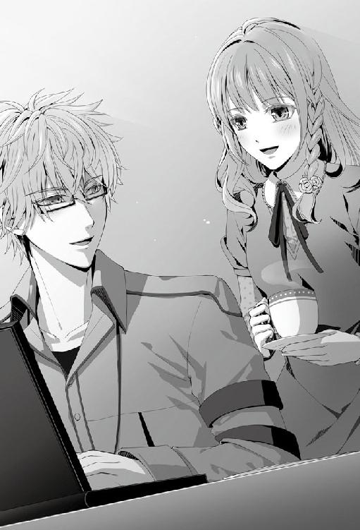
料理もほとんどしないため、だいいち物が少ない。数少ない食器や調理器具はキッチン備え付けの収納に全て収まって、それでも余りあるほどだ。表に出していない分、きれいに見えるのかもしれないが、悪くいえば生活感がなくあまりにも整然とした印象を与える。
「それにしたってきれいすぎますよ。汚したらどうしようって、ちょっと緊張しちゃいました」
彼女は大仰に言ってから、湯気が立ちこめるカップをこちらに差し出して机の端に置いた。
「あ、コーヒーどうぞ。熱いので気を付けてくださいね」
「ああ、ありがとう」
彼女がカップを置く仕草を何気なく目で追っていると、ふと思うところがあって、私は彼女の顔をまじまじと見上げた。
「............」
「ケントさん？」
視線に気づいた彼女が不思議そうに首を傾げる。
「ああ、いや......まいったな」
「......？ どうしたんですか？」
個人的な妄想話ゆえに話そうかどうか迷ったが、隠すほどのことでもないため告げることにした。
「いつか君と結婚をしたら......毎日がこんな感じなのだろうかと、つい考えてしまった。昨日、偉そうにあんなことを言ったばかりだというのにな。私も懲りない男だ」
彼女の仕草が頭の中で描いていた妻像と合致するものがあって、思わず重ねてしまった自分がいる。
私が仕事をしている横に、さりげなくコーヒーを置きにきてくれたりするのだろうか。
「............」
無意義な想像を広げながら、つい口元が緩みそうになるのを慌てて止めて、背筋をピンと正した。
「時間がない。続きをやらねばな。君は適当に本でも読んでいてくれ」
「はい......」
「......淹れてくれてありがとう。有り難く頂くとするよ」
「......はい！」
再び机に向かうとコーヒーを一口すすった。ほろ苦い味が口腔に広がり、香ばしい豆の香りが鼻腔を抜けていく。
バイト先が喫茶店とあってか、彼女が淹れてくれたコーヒーは実に美味い。我が家にあるドリップコーヒーを使ったはずなのに、いつも自分で淹れるものとは全く別物な気がした。彼女が淹れてくれたという嬉々たる付加価値が私の味覚をまやかしているのかもしれないが、それでも格別美味いのだから仕方がない。
一息つくと、私は気を引き締め直して、眼前に立ちはだかる多量の資料と課題に取りかかった。
「送れなくてすまないな」
急ピッチで作業を進めたのだが、彼女が滞在する時間で終えることができなかった。
日が暮れて、帰宅しようとする彼女を私は玄関先で見送っている。
「いえ、まだ明るいですから。お仕事頑張ってくださいね。その間、私も頑張ります」
「頑張る？ 君も何かするのか？」
「はい。この間少しお話ししましたけど、やっぱり語学学校の方にも通おうと思いまして」
「ああ、そうか。それがいい。私も賛成だ」
良い学校に巡り合えれば、語学力は飛躍的に伸びるし、自己流では解決し得ないこともカリキュラムによって学べるだろう。
「では、いくつか良さそうな学校をピックアップしてきてくれないか。あまり干渉したくはないが、念のため私も目を通しておきたい」
語学学校に詳しいわけではないが、個人で学習できる範囲か、受講料を支払って学ぶべき内容なのかは判断できる。
「わかりました。じゃあ色々調べて、パンフレットを取り寄せておきますね」
「ああ、そうしてくれ。あと三日もすれば、私の方も落ち着くだろう。そうしたら、一緒に見て決めよう」
「はい。じゃあ、また」
靴を履いて、持ってきた肩かけのバッグを提げると彼女は玄関のドアに手をかけた。
「不審人物と車には、くれぐれも気を付けるように。それと家に入った後はきちんと──」
「戸締まり、ですよね？」
肩越しに私を振り返って小さく笑った。
「わかっているなら結構」
彼女の顔には過保護だと書いてあるが、私の方が気になって毎度のお決まり文句も言わずにはいられない。それほど、彼女は大切な存在なのだ。
「............」
こうして彼女の後ろ姿を見送るだけでも胸が苦しくなる。
まだ、ほんの僅かでも時間を共有していたくて、玄関を出ようとした彼女に思わず話を振った。
「......たったの七二時間程度も辛抱できないのかと、君は笑うかもしれないが、次に会うまでの間に、もしも君に会いたくなってしまったら、また連絡をしても構わないだろうか」
外に出しかけた足先を戻して彼女が私を見つめてくる。
「おそらく、今日のように退屈させてしまうとは思うが。......いいだろうか？」
相変わらず身勝手で情けない願いにも、彼女は柔らかな笑みを浮かべ、頷いてくれた。
「......はい、もちろんです。いつでも連絡してください」
「ありがとう。......おやすみ」
扉が閉まって、一気に静寂が私を包み込んだ。彼女が帰ったことで空しさと寂しさに苛まれる。
私には片さねばならない課題もあるというのに、またすぐに彼女に会いたい衝動に駆られている自分がいた。先に伺いをたてたとはいえ、まさか帰ったばかりの彼女を呼び出すわけにもいかないだろう。
いつから私はこんなにも彼女なしで暮らせないほど不毛な人間になったのか。
日を追うごとに彼女に傾倒していく自身に苦笑しながら、務めに戻るべく自室に向かって踵を返した。
『９月１７日』
軽いノックの後に、数学科の研究室のドアが開かれたのは正午を過ぎた頃だ。
「失礼します」
そう言って顔を覗かせたのは彼女だ。きょろきょろと室内に視線を這わせて私以外の人物が見当たらないのを確認すると、慣れた様子で室内に足を踏み入れてきた。
「ああ、君か。よく来たな」
先日の約束通り、私の仕事が落ち着いたのを見計らってやって来たのだ。
「予想していたよりも到着が早かったようだが、今日は迷わなかったのか？」
自席から立ち上がり彼女の方へ歩み寄る。見ると、彼女は普段持ち歩くものより大きめのバッグを携えていた。それを重そうに抱えてからソファの上に置き、短く溜息を吐いた。
「何度も来てますから。さすがにもう迷いませんよ」
「そうか。君の成長は喜ばしいことだが、少し残念でもあるな。君が困ったような声で私に電話をかけてくるのも、実を言うと嫌いではなかったんだが」
「......私が困っているのを見るのは楽しいってことですか？」
「そういうわけではない。だが......白状すると、そんな君を可愛らしいと思うことはある。だから、今後見られなくなるのは少し残念だと思った。それだけだ。理解してもらえただろうか？」
「理解はしましたけど、そんなことを言われたら、ますます電話できなくなりそうです......」
彼女は恨みがましく私を見上げ口を尖らせた。
「素直な感想を述べたまでだ。そう気にしないでくれ」
「......今日のケントさん、なんだか強気ですね。そこまでストレートに言われると、こっちが逆に恥ずかしくなります......」
「ここはホームグラウンドだからな。普段は面と向かって言えないようなことも、素直に言えるのかもしれん」
どこよりも慣れ親しんだ場所だから、変に緊張することもなく心内を曝け出せるのだろう。
「まあ君には、以前ここでみっともない姿を見られたこともあるが」
「え......？」
「あっただろう。私が君に初めて......キスをしようとした時のことだ。覚えていないか？ 緊張のあまり、私は額をぶつけ、結局キスも未遂に終わった。我ながら、あれは情けなかった」
今思い出しただけでも羞恥で顔を覆いたくなる。
「しかし君は、そんな私も笑って受け入れてくれたな。......それがとても嬉しかったよ」
人の失敗を嘲るでも憤るでもなく、ただ笑ってくれた彼女に私も救われたんだ。
「まあ、覚えていないならいいんだ。むしろ忘れてくれたほうが助かる。だから気にしないでくれ」
私は適当に話を切り上げて別の話題を振った。彼女がやってきたのは思い出話を聞くためではなく、ちゃんとした目的があるからだ。
「それよりも今日の本題に移ろう。例のものは持ってきたか？」
「あ、はい。もちろんです」
彼女にソファに座るよう手で促してから、自分も対面の椅子に腰を下ろした。彼女は持ってきたバッグを開けると、中から幾つもの冊子を取り出しテーブルの上に並べていく。色とりどりのそれらは語学学校のパンフレットだ。
「またずいぶんと持ってきたな」
次々とバッグから出てくるパンフレットに目を見張った。
「探してみると語学学校って本当にたくさんあって......一〇部ほど持ってきてしまいました」
「まあ、選択肢が多いのは悪いことではない」
学校それぞれに一長一短あるだろうから、どこに重点をおいて選ぶべきか見比べられるため数が多いのは良いのだが、これほどの量を彼女が一人で運んできたかと思うと心が痛んだ。
「しかし、君はここまで徒歩で来たのだろう？ こんなに持ってきて、重くはなかったのか？ こんなに大荷物だと知っていれば、せめて大学の門くらいまでは出迎えに行ったというのに」
「研究で忙しい中、こうしてお時間を頂いてるんです。そこまでは甘えられませんよ。それに私、こう見えても力は結構あるんですよ？」
心配無用とばかりに彼女は腕を曲げて力こぶを作ってみせる。
「それは頼もしいことだな。だが、こんなに細い腕なんだ。あまり無理をしないように。君は以前、私に頼られると嬉しいと言っていただろう？ それは私も同じなんだ。だから遠慮などはせず、頼れる時は私を頼ってほしい」
「......はい、ありがとうございます」
「よし。ではパンフレットを見るとするか。君に合いそうなところがあるといいのだが」
最後の一冊をテーブルの上に重ねると私は長い溜息を吐いた。
「──ここもダメだな」
「え......でもこれで最後ですよ？」
困惑の色を瞳に浮かべ、彼女がまじまじと私を見つめる。
一〇も候補があったのになぜだと言いたげだ。
「仕方がないだろう。ダメなものはダメだ。講師陣の名前や経歴を見たが、わざわざ通う必要性が感じられないところばかりだ。これならば、私が合間を縫って教えた方がずっと効率的に思える」
彼女がピックアップしてきた学校はどれも望む条件に見合うものがなかった。
大半が全国チェーンの学校で、海外を経験したことのない語学学科の卒業生やネイティブというだけの寄せ集めの講師が教示するようなところだ。留学となると向こうの大学の授業を理解できるくらいの知識は最低限必要なのに、それに精通したものが一つも感じられなかった。
「まったく......一体、どこで情報を集めてきたんだ？ 君は料理の腕はあるが、情報収集に関してはあまり得意でないようだな」
「............。これでも頑張って調べたんです。授業内容や、評判も聞いて......」
「それでこの結果なのか？ ならば尚のこと問題だ。君だって暇なわけではあるまい？ 貴重な時間を浪費してどうする」
「............」
見つくろってきた学校全てを却下され、彼女は肩を落として身を縮こまらせた。
「......すみません」
みるみる表情が曇っていく彼女に、言い過ぎてしまったことに気づく。
「あ......いや、私こそ......責めるような言い方をしてしまったな。......と言っても、あの言い方では責めているも同然か。すまない、少々冷静さを失っていたようだ」
慌ててフォローを入れてみるが、彼女の表情はまだ沈んだままだ。
「何せ今回は留学まで時間がない。大学とバイトの両立で、君も語学に集中できる時間はそうないだろう？ だから効率良く短時間で、君の身になる方法をと考えるあまり......口調まで厳しくなってしまっていた」
彼女とて遊びで選んできたわけではないだろう。目の前に積まれたパンフレットを取り寄せるだけでもそれなりの労力がいるのに、労うどころか頭ごなしに文句だけを言ってしまった。大いに反省すべき点だ。
「先ほどの発言は訂正しよう。君はよくやっている。無神経なことを言い、すまなかった」
「いえ、いいんです......。私の方こそごめんなさい」
彼女は小さく頭を下げると、テーブルに広げられたパンフレットを寄せ集め、いそいそと持ってきたバッグに仕舞いはじめる。
「でも......学校は、また探し直しですね」
苦笑いを浮かべて彼女が溜息をこぼした。
どう探したら良いのか迷っているといった様子が表情から伝わってくる。
そんな彼女の力になれるかはわからないが、私にも少しアテがあった。
「そのことだが......今、信頼できる教授にも良い学校がないか聞いているところだ。来週になればいくつか参考資料をもらえるかと思う。君さえ良ければそちらも是非、参考にしてくれ」
言うと、彼女はぱっと顔を上げ、曇らせていた表情を和らげた。
「本当ですか？ ありがとうございます、助かります」
彼女個人のことに干渉し過ぎるのも良くないと思っていたが、彼女のこととなるとどうも気になって、身体が勝手に世話をやいてしまう。私もほとほと自分にも彼女にも甘い。
「あまり私が口出しするのも良くないと思い、黙っていたのだが......結局こうなってしまったな」
「遠慮してたんですか？」
「これはあくまで君の課題だからな。それに、周りから強制されるとやる気がなくなるとも言うだろう？ しかし......君と共にロンドンへ行きたいという思いからか、つい出過ぎた真似をしてしまった。身勝手なことを言っているのは重々承知しているが、君にはどうか頑張ってほしい」
自分の考えや行動に矛盾が生じているのはわかっている。だが、主目的を果たせず終いになるよりは、多少のわだかまりも目を瞑らねばならないように思う。
「もし直前になって『やはりロンドンへ行くのは難しい』などという話になりでもしたら──」
そこまで言って、私は言いかけた言葉の続きを喉の奥に仕舞い込んだ。
「............」
「......？ ケントさん？」
首を傾げる彼女に人差し指を立てて目配せする。
「静かに」
「え......？」
状況を飲みこめない様子で彼女は瞬きを繰り返しながら、辺りに漂う不穏な空気の行方を窺っていた。
私は音も立てずに立ち上がり、彼女を庇うように研究室の入り口とソファの間に体を滑り込ませ壁を作る。
「......そこで聞き耳を立てているのはすでにバレている。潔く入ってきたらどうだ」
低い声でドアの向こうへ話しかけると、
「なんだ、バレてたの。僕の気配に気付くなんて、なかなかやるじゃない」
思いの外、軽快な口調の声が返ってきた。
私に気付かれるのも想定の上で、相手は次の手段を用意しているに違いない。そんな余裕が声色に滲み出ている。
「あれ、この声......」
声の主に気づいた彼女は無防備にも出迎えようと腰を浮かせたが、即座に手で制した。
「静かに！ 君がいることは敵にバレている。居場所の詳細まで割れたら人質にとられかねん」
まだ姿を現さないドアを見据えて言うと、小さな笑い声が聞こえる。
「人質だなんて人聞きの悪い。でもそうだな......可愛いお姫様を奪えるなら、それもいいかな？」
「は、戯言を......」
私から彼女がやすやすと奪えるものか。
腰を屈めてそっとソファの下の僅かな隙間に手を入れると、私は襲撃に備えた防御壁兼追撃用のアイテムを取り出した。
そんなこととはつゆ知らず、ドアの向こうの声は不敵に言う。
「言っておくけど、こっちには武器がある。無傷で帰りたいなら、今のうちに降参した方がいいよ？」
「のぞむところだ。来い、返り討ちにしてやる」
背にアイテムを隠し身構えた瞬間、勢いよくドアが開け放たれた。
「くらえ！ 解答率および正答率一〇〇％の自信を誇る、数学パズル！」
「甘いな！ こちらには防御壁として、その超難解バージョンがある！」
間髪入れずに用紙の束を突き出すと、それには流石の彼も目を剥いた。
「......！ なに......っ！」
「ちなみに、難易度は今まで作ったものの中でも群を抜いている。いくら君でもそう簡単には解けまい。彼女を奪うと言うのなら、それを解いてからにしたまえ」
現れた相手──、イッキュウの胸元にパズルを押しつけると、イッキュウはそれを受け取ってふらりと体を揺らし壁に手をついた。そして、悔しげに視線を上げて私を見据える。
「とかなんとか言って、実はあと二、三冊くらい用意してあるんじゃないの？」
イッキュウの洞察力には関心するが、私は更にその先を読んでいる。準備にぬかりはない。
「ほう、よくわかったな。それよりも高難易度のものが私の手元にまだ二冊ある」
「ちょっと待って。それ、ずるくない？」
「戦略と言ってくれ」
「ふぅん。彼女を簡単に渡す気はないってことか。いいね、障害の多い恋は燃えるから好きだよ」
「......君も懲りないな」
二人で悪態をつき合っていると、ソファの上で私たちを見守っていた彼女が肩を揺らした。
「......ふふっ」
「......？ なんだ。何かおかしかったか？」
「いえ、楽しそうだなと思って」
「......だそうだが。君は楽しかったか、イッキュウ？」
話の矛先を投げると壁にもたれていた体をのろのろと起こし彼女に視線を移した。不必要なウインク付きで。
「まあ、今日は特に楽しかったかな。可愛いヒロインがいたから、いつもより華もあったしね」
体勢を立て直して彼女の前に歩み出て、イッキュウは殊更優しい笑みを顔に浮かべる。
「久しぶり。元気だった？」
「はい。イッキさんもお元気そうで何よりです」
挨拶するにしては近すぎる間合いに私の指摘が入るのは当然だ。
「......おい、イッキュウ。何故、再会の挨拶をするのに一歩近付く必要がある？」
「それが礼儀だからじゃない？」
他意はないと言いたいのだろうが、明らかにそうは見えない。
「そんなふざけた礼儀があるか。今すぐ離れろ。いいか、間違っても触れたりするんじゃないぞ」
「何？ ケンってば、前より一段と器が小さくなったの？」
イッキュウは面白そうに笑って顔を覗き込んできた。それから何かを感じ取ったのか一層口の端を歪める。
「ああ、違うね。前より一段と独占欲が増したんだ。嫉妬心の強い男はモテないよ？」
「なっ......」
鋭く言われ、胸がずきりと痛んだ。一瞬たじろいだ私を、支えるように彼女が手を差し伸べてイッキュウを窘める。
「イ、イッキさん......」
「ああ、ごめんね。面白いものだから、つい」
偶発的にからかわれるのは私とて面白くない。それが計らずも的を射ていたからなおのこと。
恨みがましく睨んで見せるが、私の視線など全く気にしていない様子でイッキュウは話を続ける。
「ねえ、君といる時のケンって、いつもあんな感じなの？」
「......？ はい、おおむねは......」
「君、律儀に答えなくていい」
注意すると彼女は慌てて身を竦めた。
「す、すみません......」
「またそうやって厳しく言う。気にしないでね。これは照れてるだけだから。鼻の下を伸ばしている顔を、僕に見られて恥ずかしいんだ。年長者のくせに案外子どもだよね」
「......イッキュウ。いい加減にしないと強制退室命令を下すぞ」
「あーはいはい。わかったよ、もう言わないってば」
イッキュウは両手を上げて反省の色を示した。
「まったく......」
こちらが少し強く出なければいくらでも調子に乗りそうだ。これ以上イッキュウに弱味を見られるのは不本意だ。
「それで君は、一体ここに何をしに来たんだ。私を冷やかしに来ただけなどと言うわけではあるまいな」
「まさか。用もなく恋人たちの甘い時間を邪魔するほど、野暮じゃないよ、僕は」
イッキュウが言うだけに怪しいところではあるが、今疑っても仕方がない。そのまま話の続きに耳を傾けた。
「教授にね、頼まれたんだ。ケンを呼んで来てほしいって。君、携帯切ってるでしょう。だから代わりに僕のところへ連絡がきたんだよ」
「......切っているのではない。電池がなくなったんだ」
......厳密にいえば、彼女がここに来た直後に電池がなくなったのに気付いてはいたが、彼女との時間を先日のように邪魔されたくなかったため充電せずに机の上に放置していたのだ。
それが功を奏してか、イッキュウが来るまでの間は二人で過ごすことができた。そうでなければ、やはり電話がかかってきて、もう少し早くに二人だけの時間は終わっていた。
「ま、そういうことにしておいてあげようか。彼女の前だしね」
私の心理を知ってかイッキュウはまたにやりと口端を釣り上げた。
もう墓穴は掘るまいとイッキュウは無視して、彼女に振り返る。
「......君。すまないが、少し席を外す」
「ここで待っていてもいいですか？」
「ああ。学校の件は、戻ってきたらまた相談しよう」
教授の呼び出しが急用でない限り、午後は空いている。先日の埋め合わせも兼ねて、ゆっくり彼女と過ごしたいと思っていた。
「じゃあケンが戻るまでは、僕がお相手を務めさせてもらおうかな」
好機とばかりに横からイッキュウが割り込んできて、勝手に彼女の向かい側のソファに腰を下ろす。その顔は、やはりどこか楽しげだ。
「......イッキュウ。私がいないからといって、くれぐれも余計なことは喋るなよ」
「はいはい、わかってるってば。たまには友人を信用してよ」
イッキュウは人を出し抜こうとする姑息な輩ではないし、私が最も信頼の置いている友人だ。私が戻るまでの間、彼女を見守ってくれるつもりなのだろう。
「......では、行ってくる」
多少口の軽さは心配だが、ひとまず彼女はイッキュウに任せることにして、私は入れ替わりでドアノブに手をかけた。
急いで教授のいる部屋へ行くと、待ち構えていたらしい教授が、書棚の一角からＡ４サイズの茶封筒を取り出した。封筒の表面には見慣れないロゴマークが控えめに印刷されている。
「これ、頼まれていたものだ。意向に合うといいのだが」
差し出されたそれを受け取って、その場で中身を確認すると、数枚のチラシのようなものが入っていた。それらを取り出して内容を読んでいくと、それは彼女のためにお願いしていた語学学校の資料らしいことがわかった。
先ほど彼女に話したばかりだというのに、こんなに早く教授が動いてくれているとは思わなかった。
「ほとんど一般には知られていないんだがね。留学とビジネスのみに特化した学校なんだ。私の知人で、スコットランドの大学で教鞭をとっていた経験をもつ者が講師として在籍している。事情を話せば優先して講義を受けられるだろう」
軽く資料に目を通すだけでも充分納得できる学校だった。講師陣の経歴も然ることながら、講義内容が充実している。一般に出回っているスクールとは一線を画していた。
私はすぐに頭を下げ礼を言う。
「ありがとうございます。ぜひ、検討させていただきます」
「いやいや。君には普段から沢山借りがあるからね。こういうところで返しておかないと」
人の良さそうな温和な顔をした教授が目じりを下げ、首を横に振った。
「ところで、これは誰のための学校なんだ？ 君は充分流暢に話せるから、学び直しは必要ないだろう。となると......」
教授は顎をひと撫でし、考える素振りを見せてからすぐに私に視線をくれ、
「君にも春が訪れたということかな......？」
小指を立てて含み笑いを浮かべた。
「......そんなところです」
隠す必要もないため堂々と頷くと、教授は驚いたように目を丸くする。
「ほう、それはめでたいな！ 共に留学を目指しているということか。そこまで決めているということは将来も......？」
「良い報告ができればと思っています」
「そうか、そうか。楽しみに待っているよ」
教授は豪快に笑って、私に大切な存在がいることを自分のことのように喜んでくれた。
資料を受け取り研究室に戻ると、何やら楽しげに彼女とイッキュウが話し込んでいた。話している内容まではわからないが、ドアを隔てて廊下まで二人の弾むような声色が漏れてきている。
「おかえりなさい、ケントさん」
「ああ、ただいま」
出迎えてくれた彼女の声が心なしか明るい。何か面白い話でもイッキュウに聞かされていたのだろうか。ふとイッキュウの視線も気になる。
「......なんだ、イッキュウ。人の顔をじろじろと見て。何か言いたいことでもあるのか？」
「いや？ うらやましいなあってね」
「......何が言いたい？」
「ケンにも、じきわかるよ」
怪しい含み笑いを浮かべてイッキュウは立ち上がると、さっさと廊下へ通じるドアの方へ歩いていく。
「さて、じゃあ邪魔者の僕はそろそろ退散しようかな。またね」
「はい。ありがとうございました、イッキさん」
彼女が発した言葉に若干の引っかかりを覚える。礼を言うということは彼女がイッキュウに何か世話になったということを示している。
「............」
イッキュウの態度といい、彼女といい、私が教授の元へ行く前と後で様子が変わっている。
ドアの向こうに消えるイッキュウを見送ってから、胸に浮かんだ疑問をそのまま単刀直入に聞いてみた。
「イッキュウと何かあったのか？」
「え？」
一瞬何を問われたのか理解していなかった彼女は首を傾げるが、次の私の問いで明らかに顔色が変わった。
「君は今、彼に礼を言っただろう。何もないのに言う言葉ではない」
「それはっ......あ、お話に付き合ってくれてありがとうって意味です！」
取ってつけたような理由を述べ、何かを隠すように彼女は焦りを見せる。
「そ、それより先生のお話はもういいんですか？」
問い返してくる彼女に、無理やり話をはぐらかされた様な気がしてならないが、理由が的を射ていないわけではないし、私の思い過ごしの可能性もあるため、それ以上の追及はやめにした。
「ん？ ああ、そうだった。退室する前、教授に学校の当てがないか聞いていると言っただろう？ その返答を今、もらえてな。予定より早くて驚いたが、この通り資料を預かってきた」
早速、預かってきたばかりの資料を渡す。
「ここならば実績もあるし、講師陣も一流と言える。通学距離も君の家から程良いだろう。私に気を遣う必要はないが、候補の中には入れておいてくれ」
「わかりました。じゃあ目を通しておきますね」
「時間がないとは言っても、向こうへ発つのは来年だ。あまり焦らず、自分に合う勉強法を見つけるといい」
「はい」
彼女は資料を丁寧に仕舞い込むと、どこかほっとした顔でソファに深く腰掛けた。
彼女が落ち着いたのを確認して、口を開く。少しの問い難さがあって喉の奥に言葉がつっかえた。それを咳払い一つで払いのけると、彼女の反応を窺った。
「......あー......ところで。君は今日、この後何か予定は入っているのかな？」
最近、ろくに時間を取れなかったため、今日こそはその埋め合わせをしようと思っていたのだ。彼女の予定がなければ、また料理を教えてもらいながら恋人らしい時間を過ごせたらと考えている。先日は色々と邪魔が入ってしまったが、先日のことを教訓にすることで今日はぬかりなく過ごせるはずだ。そんな下心が多少あるせいか、ただ予定を聞くだけなのに妙に堅くなってしまった。
「今日ですか？ バイトもないですし今日は──」
言いかけて、彼女は口を開けたまま、ふと静止した。
「......今日は？ なんなんだ」
「あ、えっと、今日は......買い物にでも行こうかな、と」
「食材か？ それとも生活雑貨か？ 迷惑でなければ、私も同行して構わないだろうか」
「......！」
「可能なら、その後は君の家に──」
「そ、それは困ります！」
「......！」
きっぱりとした拒否の言葉が彼女から聞こえて、私は驚きと困惑に胸が軋んだ。
今まで彼女からこんなに強く拒まれたことがなかったためショックだった。
少し強引に迫りすぎただろうか。もしかすると私の下心が透け見えたために、身の危険を感じて拒否しているのかもしれない。
「それは......私を家には上げたくないと、そういうことか？」
「え？ あ、違います！ 困るのはそっちではなくて......！」
静かに問うと、私の推測した理由ではないようで、彼女は首を横に振った。
「そちらではない？ つまり、買い物に同行されるのが嫌だということか？」
掘り下げて問うと、彼女は表情を固まらせて左右に視線を泳がせた。
「......妙な言い分だ。君は一体、何を買いに行くというのだ？」
「......衣類などを」
「衣類？ 腑に落ちんな。何故それを私には見られたくないんだ」
「た、多分、男性は居心地の悪いお店なども行くと思いますし......」
「男性は居心地が悪い？ 衣類を売っている店で、そんな──」
そんな場所があるのかと言いかけて、
「............」
一か所だけ思い当たる節が脳裏に浮かんだ。
「......っ！」
──女性の、下着類が売られている場所だ。
「す、すまない、ようやく理解した。そういうことならばそうだな、私は遠慮しよう。いや、するべきだ。交際中の男性に肌を見せる危険性を説いた私が、なんてことだ......。女性に失礼なことを聞いてしまった。許してくれ。すまなかった」
「そ、そんなに謝らないでください」
恥ずかしさで彼女の顔を直視できず、私は視線を逸らす。
「では、今日はここで別れるとしよう。買い物もいいが、暗くなる前には帰るように。いいな？」
「はい。お邪魔しました」
挙動不審な私の様子に、彼女は空気を読んでくれたのか手早く荷物をまとめると、慌てて研究室を出て行った。
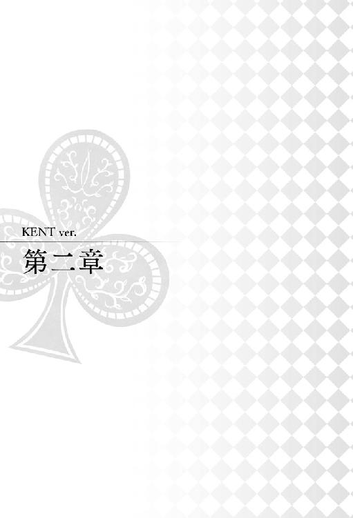
『９月１８日』
「............そうか、それならば仕方がないな」
諦めの溜息を吐くと、電話の向こうですまなそうに彼女が詫びた。
「いや、いいんだ。また誘うとしよう」
通話を終え、私はまた深い溜息を零しながら椅子の背もたれに背中を預ける。
──彼女の様子が、どうもおかしい。
いや、決して意味不明な行動をしているとか、言動が変だというわけではない。ただ、何か私に隠しているような、そんな気がするのだ。
今とて、バイト後に予定がなければ会わないかと連絡をしただけなのに、残業が発生するかもしれない、サワに買い物に誘われるかもしれないと、先約があるのならまだしも、なぜか〝かもしれない〟未定の予定によって断られてしまった。
都合よく理由をつけて断られた気がして、どうしても腑に落ちない。
──もしかすると、私は彼女に避けられているのだろうか。
急に避けられる理由はいくら考えても思い当たらないが、何か知らずの内に彼女の癪に障った可能性もある。
彼女との距離を縮めたいと、ここ数日はできる限り積極的に誘っているものの、中々思うように運んでくれないものだ。
「......はぁ」
どうしたものかと無意識の溜息がまた口からこぼれ落ちる。
「めずらしいね。ケンがそんな表情するなんて」
ふいに横から話しかけられて振り向くと、そこには数学パズルの用紙を携えたイッキュウが立っていた。
「......ああ、君か」
「なにそれ。もしかして僕がいたこと忘れてたの？ ちょっとヒドくない？」
イッキュウは口を尖らせながら私の机に先日渡したばかりのパズルを置いた。
イッキュウには悪いが、彼女と電話をする前から研究室に遊びに来ていたのをすっかり失念していた。パズルをもう解き終わったと持ってきていたのだ。
大学はまだ夏休みで、就職活動も終えているイッキュウには時間がある。とはいえ、一日で解答できるほど甘いものを作った覚えはないし、現に数学科の学生に解かせてみたところ、解答に数日は要した。
声に出して言ってやるつもりはないが、やはり大した頭脳の持ち主だと思う。
「......否定しないってことは本当に忘れてたわけ」
「すまない。考えごとをしていた」
「......ふーん。ま、いいけど。どうしたの？ 今の電話の相手って彼女でしょ」
話を聞いてくれるつもりらしいイッキュウは、部屋の隅に片づけられていたパイプ椅子を引っ張ってくると机の前に場所を構えた。
イッキュウにはこれまで、何度か彼女との関係について相談したことがあった。
普段から女性にこと欠かない生活を送っているため、恋愛については私が知る人間で最も信頼できる知識を持っている。
不本意ではあるが、イッキュウのアドバイスは的確だ。
また借りはつくってしまうが、知りようがないことで頭を悩ませるより、話してみることでわだかまりが解消されるかもしれない。
「──で、僕の存在も忘れるほど気になる悩みの種は彼女ってことであってる？」
イッキュウの問いに頭を縦に振った。
「どうも避けられている気がしてならない。だが、連絡は相変わらず滞りないし、辛辣な態度をとられているわけではないから嫌われているのではないと思っている」
「じゃあどうして避けられてるって思うの？」
「なんとも形容し難いが......どこかよそよそしい雰囲気があるのだ。思えば昨日から様子がおかしかった。会話がぎこちないというか、......何かを私に隠しているような、そんな気がする」
「隠してる......？」
「確証はないが、後ろめたいことがあるのだろう。先ほども何だかんだと理由をつけられ、誘いを断られてしまった」
「......そういうことね」
イッキュウは顎に手を置き考える仕草をみせる。
「昨日から様子がおかしいんだよね？」
「ああ、その通りだ。厳密にいえば、私が教授に呼ばれ研究室に戻ってきてからだ」
と自分で言いおいて、ふと引っかかる部分があった。
私が席を外している間、彼女の相手をしていたのはイッキュウだ。話をしていただけならば必要のない、礼も口にしていた。
「......イッキュウ、何か心当たりがあるのではないか？」
「え、僕？」
「考えてみれば昨日君と話をした後から彼女の様子がおかしくなった。......何か余計なことを吹き込んだのではないな？」
「僕を疑うの？ それはお門違いだよ。いくらなんでも当人がいない場所で出し抜こうなんて野暮なまねするわけないでしょ」
「ふむ......」
確かにイッキュウはそんな卑怯なまねができる人間ではない。
「......すまない、失言だった。......彼女のこととなるとどうも頭が難くなってしまう。許してくれ」
「まあ、いいけどね。昨日から様子が変わったというなら、たぶんそれは......」
結論を言わず、イッキュウはにこりと愛想笑いを浮かべた。
「それは、なんだ？」
「女性に対しては詮索しすぎるのも良くないと思うよ」
「問いの答えになっていないな」
「そういうところだよ。ケンはなんでも最後まで知りたがる。それは良いことだけど、結果までの途上だった場合、答えはまだ出ていないんだ。彼女の様子から察するに、おそらく彼女も何かの途上にいて、結果にはまだたどり着けていないんじゃかな？」
「だからまだ見守っていろと、そういうことか？」
イッキュウはこくりと頷き、どこか楽しげな表情で立ち上がるとパイプ椅子を畳んで元の位置に戻した。
「僕の勘だけど、悪いことにはならないと思うよ」
「そうならば良いのだが」
まだ気は晴れないものの、イッキュウが言うように今私にできることは彼女を見守ることなのだろう。真意を知らないところで足掻いていても仕方がない。
思考を紛らわすように、私は机上に置かれたパズルを手に取ると採点をすべくペンを持った。
『９月１９日』
めずらしく朝から時間が空いている今日は、復習を兼ねて彼女に教わった肉じゃがを作ってみようと思っている。
手助けなく作れるようにならなければ学んだ意味がない。しっかり習得するには繰り返し頭に叩き込むことが重要だ。
まずは食材の買い出しにと、材料をメモ用紙に書き取り荷物をまとめ、デパートへ向かって家を出た。
せっかくデパートに行くのだから、食材以外のものも見ておきたい。
例年になく異常気象をきたしている今年は、初秋の今でも外は長袖が必要なほど肌寒い。この分でいくと、冬の訪れもだいぶ早まるだろう。本格的な寒さを迎える前に、身なりを備えておきたいと思っていた。
これまでは必要にかられて用意することも多かったが、今年ばかりはそうもいかない訳があった。
まだ結果は見えないが、今年こそはロンドンへの留学を決めるつもりでいる。そのため、異国で困らないようにシーズンものは早めに探して検討しなければと考えていた。
季節はあっという間に過ぎていく。ゆっくりしていたのでは適当なものが店頭から消え、買えず終いになってしまう可能性もある。
食材で荷物が多くなる前に、物色しておこうと、デパートに到着してすぐ、私は雑貨屋に足を向けた。
店内は昼時とあって、客の入りも多い。
人の隙間を縫うように歩みを進めていると、ふと前方に見慣れた人影が視界に入ってきた。
女性が二人、なにやらかたまって騒いでいる。
「......ん？ 君か？」
「あ......ケントさん!?」
私を驚いた表情で振り仰いだのは彼女と彼女の友人のサワだった。
「やけに騒がしいと思ったら......サワ、君だったか。少し声を抑えなさい、周囲に迷惑だろう」
「す、すみません。気を付けます」
指摘をするとサワは愁傷に頭を垂れる。
「......？ 二人だけか？ 騒がしい声はもうひとつほどあったように聞こえたのだが......」
目についたのは二人だが、彼女と二人だけで話しているには少々うるさすぎたように思えて辺りを窺った。
そんな私の視界を遮るようにサワが体を滑り込ませ、大げさに両手を振る。
「き、気のせいじゃないですか？ 今日は私とこの子の二人だけですよ」
「そうか。それで、君たちは何をしているんだ」
「何って、そりゃ買い物ですよ。女二人で買い物デートです。いつもはこの子をケントさんに譲ってるんですから、たまにはいいでしょ？」
「私は彼女に、友人との買い物を制限するよう言った覚えはないが」
「いつもはケントさんが独り占めしてるでしょって話です。いちいち突っ込まないでください」
彼女を独占しているつもりはなかったのだが、確かにこの女性同士の組み合わせを見るのは久しぶりかもしれない。
そんなことを考えていると彼女が不思議そうな顔で私を見てきた。一人の時は大学や自室に籠もりがちな私が、なぜデパートにいるのだろう、と言いたげな目だ。
「ケントさんもお買い物ですか？」
「ん？ ああ、そうだ。主に食材をな、買いに来た」
他にも探したいものはあるが、さして詳しく伝える必要もないだろう。
「え、ケントさんって料理とかするんですか？ 意外」
彼女の隣で大仰に声を上げたのはサワだ。瞳がこぼれ落ちそうなほど目を見開いている。
これまでの私を知っている人間ならば、誰しもが今のサワのような反応をするだろうことは自分でも想像できる。それほどまでに私は料理と無縁の関係にあった。
「先日、彼女から指導を受けてな。それ以来、料理というものに興味が湧いたのだ。ちなみに今日は、再び肉じゃがに挑戦しようと思っている」
「一人で大丈夫ですか？ 私もお手伝いに......」
「いや、問題ない。あのノートがあればなんとかなるだろう」
心配気な眼差しで手助けを申し出てくれた彼女に首を振って、
「友人との時間を奪うような男になった覚えはないと以前も言ったろう？ 君は気にせず、買い物を続けてくれ」
努めて胸を張って返答する。
彼女が申し出てくれたのを嬉しく感じながらも、少しだけ見栄を張って、格好良いところを見せつけたい自分がいた。これで受け入れてしまえば、最近イッキュウに言われた〝器の小さい人間〟に本当になりかねない。
「では、私は失礼する。帰る時は二人とも気を付けるように」
二人に別れを告げ、自分の買い物を再開することにした。
案内図から生活雑貨を扱う店舗を探し、しばらく奥の方に進む。すると比較的大きめの広さを誇る店が見えてきた。
ここならば探していたものが見つかるかもしれない。
店内に入ると、即座に近づいてきた店員に断りを入れ、目的のものを探す。こういうのは赤の他人のアドバイスを受けて決めるより、個人でしっかり物色した方が間違いがない。
シーズンものは常に新しいものへ移り変わっていくせいか、比較的目に付きやすい場所に陣取っていた。
棚の中段にあったマフラーを一つ手に取り、感触を確かめる。
手触りはさらさらとしていて着け心地は良さそうだ。見た目も派手さがなく無難なデザインで良いだろう。問題は長さだ。
私は人より背丈があるため、通常の長さでは不格好になってしまう。少し長めのものだと嬉しいのだが、それがそうそう見つからない。
実際首に巻いてみると、やはり丈が足りなく、はじめに取ったこれは断念することにした。
次に隣のマフラーを取ってみたが、今度は柄が奇抜で気に入らなかったため、試着するまでもなくすぐに棚へ戻した。
そこでふと、商品に付けられているタグが目につく。先日彼女が洗濯の仕方を教えてくれたとき、このタグに書かれてある表示で洗い方を変えるのだと言っていた。
素材によっては洗濯機で洗えるのではないだろうか。そうすると、もし汚したとしてもクリーニングに出さなくて良くなる。経済的且つ短時間で洗い終えるため、自分で洗えた方が良いだろう。
思い立って、手当たり次第にタグをめくってみたが、この店で扱うマフラーは全部自宅クリーニング不可のマークが表示されていた。
「仕方ない、また機会をみて探すとしよう......」
一人ごちて、店を後にしようと踵を返すと、ふとどこからか視線を感じた。視線の先に意識を集中してみれば私の行動に合わせてひそひそと話し声も聞こえる。
誰かに監視されているようで気分が良くない。
一言注意しようと、私は店を出るふりをして視線をくれた人物たちの後方に回った。
その人物たちは私が後ろから近づいているのに気づかず、まだ何やら話し込んでいる。
「......でも、やっぱり尾行は良くなかったよね......」
「先輩は真面目すぎます。尾行じゃなくて、人間観察だと思えばいいんですよ」
聞こえてくる話の流れから、どうやら私は尾行されていたようだ。
「ケントさんだってよくやってるじゃないですか。人のことを観察、分析し、その上で嫌味を言う──」
「私が言っているのは嫌味ではなく、事実だがな」
話しかけると、ひどく驚いた表情で二人の女性──、彼女とミネが勢いよくこちらを振り返った。
「......！」
「うわっ、ケントさん!?」
「やはり君もいたのだな、ミネ」
サワと彼女に出くわした際、もう一人いる気がしていたのは、やはり気のせいではなかった。
「やはりって......ていうか、なんでいるんですか？ さっき出ていったはずじゃ......」
「君はこのデパートの構造を理解していないのか？ 一周回れば再び同じ所に辿り着くのは当然だろう」
「うわ、もしかして私たちがいるのを知っててわざと一周したんですか？ 趣味悪いですよ、それ」
「人の後をこそこそと尾行し、観察していた人間が言えることか」
何かと言い返してくるミネには全く反省の色がない。呆れた溜息と共に、今度は彼女に視線を移した。
「君も君だ。何故こんなことをしている？」
「ケントさんのことが知りたくて」
「それならば、私に直接質問をすればいいだろう」
そう私が言うと、反抗的な態度のミネが口を尖らせて何かを呟いたが、声が小さすぎて私の耳までその内容は届かなかった。
「何だ？」
すぐに聞き返してみるものの、
「いえ、なんでも」
ミネは視線を逸らして口を閉ざす。
「......？」
言いたいことがあるならばはっきりと言えば良いのに、都合の悪い内容なのかそっぽを向いてしまった。
扱い辛いミネはこの際放っておくとして、彼女に向き合う。
「......まあいい。とにかく、聞きたいことがあるのなら堂々と聞きなさい。君が私のことをより知りたいと思ってくれているのなら、それは非常に喜ばしいことなのだからな。私に答えられることなら、なんでも答えるつもりでいる。そのことを覚えておいてくれ」
「......はい、すみません」
彼女は素直に頭を垂れた。この素直さは好感が持てる。ミネも彼女の態度を見習ってほしいものだ。
「それで？ 興味本位で尋ねるが、私を観察した結果、何かしらの新しい発見はあったのか？」
「あ、それはありましたよ。ケントさん、マフラーが欲しいんでしょう？」
彼女の代わりに意気揚々とミネが答える。
「ほう。観察だけでなく、ちゃんと分析もしたのか。そこは褒めてやるとしよう。君らの推論は正解だ。確かに私はマフラーを欲している。本格的に季節が変わる前に、防寒具を揃えねばと思ってな。暇をみては探しているところだ」
推察が当たり、彼女とミネは嬉しそうに顔を見合わせた。
「どうせならロンドンへ行っても使えそうなものを選ぼうと思っているのだが。なかなか良いものに巡り会えず、若干まいっている」
私の愚痴に彼女は一瞬目を輝かせ、
「あ......！ じゃあ、今度のお休みにでも一緒に探しに行きませんか？」
と提案してくれた。
「君と？ いいのか？」
「はい！」
避けられているのではと疑念を抱いていたため、彼女からの誘いは非常に嬉しいものだった。避けようとしている相手を、わざわざ買い物に誘う者などいない。
「わかった。ではそうしよう。日付は......二四日で合っているか？」
カレンダーでは休日を指していたはずだ。その確認の意味で聞いたのだが、
「はい、完璧です！」
この返答はどこかおかしい。
「完璧？」
眉を顰めると、慌てた様子でミネが割り込んできて彼女の腕を強引に引っ張り出した。
「あっ、先輩！ サワ先輩からメールです。そろそろ戻った方がいいかも」
ミネに誤魔化されたようで釈然としないが、ひとまず彼女と会う約束ができた。私はそれに満足して、ミネに連れられていく彼女を見送った。
「では私も地下へ行くとしよう。食材を買いに行かねばならん」
「ケントさん、またメールします」
「ああ、了解した」
彼女はひらひらと手を振り通路の奥へ消えていった。
レシピノートを確認しながら作った肉じゃがは、彼女と一緒に作った肉じゃが同様、上手く作ることができた。
──しかし、美味しいには美味しいのだが、どこか物足りなさを感じている。
その答えは、すぐに判明した。彼女が、隣にいないからだろう。
彼女と共にした夕食は、どこか温かさがあり一緒のものを食しているというだけで、幸せな気分になった。
一人でとる食事の虚しさを実感しながら箸を置くと、鍋に入っている残りの肉じゃがを幾つかの器に分けて冷蔵庫へ保管する。
散々、生活能力がないと言っていた両親に、私の作ったものを味見させて見返してやろうという魂胆だ。やればできるのだという証明になれば、少しは私を見る目も変わるだろう。
手早く片づけを終えて、自室に戻り、レシピノートに気がついた最短の手順を書き足していると、やはり彼女のことが頭に浮かんだ。ノートに記した、彼女と作った肉じゃがの行程が、有意義な記憶を呼び起こす。
あの時の彼女の表情や仕草が次々によぎり、私はペンを止めた。
──今、彼女はどうしているだろうか。
そう考えている内にどうしても声が聞きたくなり、私はペンをおいて携帯を手にしていた。指は迷いなく彼女のアドレスを探していく。
数回のコール音の後、電話はすぐに彼女へ繋がった。
『はい、もしもし』
明朗な彼女の声が耳に届き、心が一瞬にして沸き立った。
「ああ、私だ。夜分にすまない。まだ起きていたか？」
『はい、大丈夫ですよ。どうしたんですか？』
「いや、特に用事というわけでもないのだが......相変わらず、恋愛感情というのは厄介かつ不可解だな。君の声が聞きたいという理由だけで電話をしてしまった」
『......あ、はい』
「そしてそれが叶った今、私は非常に心が落ち着いている。......本当に解けない謎ばかりだ」
私にとって恋愛というのは、最も難解な謎だ。理論で説こうとしても、果たしてそれが真実なのか、今の私にははっきりと肯定することができない。
「ああそうそう。肉じゃがはなかなか上手くいったぞ。ノート通りに進めたのだから当然といえば当然だが、我ながら味は良かった」
『ふふ、良かったですね』
「......だが、君の家で調理した時ほど美味く感じなかったのもまた事実だ。材料も分量も手順も同じはずなのに何故だろうと不思議に思ったが、答えは至極簡単なものだった」
彼女は私の報告を黙って聞いてくれている。時折聞こえる相槌が心地良く、いつもは面と向かって言うには恥ずかしさがつきまとう言葉もするりと口をついた。
「隣に君がいなかった。ただその一言に尽きる。どうやら君と調理したものを君と共に食したことで、私は味をしめてしまったらしい。だから君さえ良ければ、また一緒に料理をしてほしい。そして二人で同じ食卓を囲もう」
『......っ......なんだかそれ、プロポーズみたいですね』
何気なく口にした言葉を受けて彼女は一瞬息を詰まらせてから優しく笑った。
「何、そう聞こえたか？ それは困るな......電話越しに結婚を申し込むなど言語道断だ」
『じゃあ......今のは忘れたほうがいいですか？』
「ああ、そうしてくれ。プロポーズをする時は、ちゃんと君の顔を見て言いたいからな」
彼女は『はい』と頷いてから、何かを思い出したように声を上げた。
『......あ、そうだ。ケントさん？』
「ん？ どうかしたか？」
『少し先になるんですけど、二三日って空いてるでしょうか？』
「二三日......少々待ってくれ」
予定を問われ、耳と肩で携帯を挟むと引き出しの中にあるスケジュール帳を取り出す。
「............」
ページをめくっていき、予定が書かれた日付欄を辿っていくと、二三日は空枠になっていた。
「......ああ、大丈夫だ。大学に行く予定も特にない」
『良かった！ じゃあ私の家で会いませんか？』
「会うのは構わないが......君の家でいいのか？ どこか行きたい場所があるのなら付き合うが」
『いえ、あの......映画！ たまには家でのんびり映画鑑賞でもしませんか？』
「映画か......」
彼女にしては珍しい提案だ。
いや、もしかすると彼女はこういった恋人らしい過ごし方を望んでいたのかもしれない。私がインドアなタイプであるために、合わせていた可能性もある。
「思い返せば、そういうデートはしたことがなかったな。いいだろう、私は構わないぞ」
『ありがとうございます。時間などはまたメールしますので』
「ああ、待っている」
『はい。ではおやすみなさい』
「ああ、おやすみ」
電話を切ってから、またスケジュールの日付欄をぼんやり眺めた。
二三日はまだ空白のままだが、彼女との予定がたった。更にその次の日もマフラーを買いに行こうと誘われている。
一時は距離を置かれていたような気さえしていたのだが、あれは私の勘違いだったのだろうか。
ともあれ、彼女との時間が増えていくのはとても喜ばしい。彼女も同様に感じてくれていると良いのだが。
そう思って、ふいに彼女を喜ばせるために何か甘いものでも差し入れてみようかと思い立った。思い立ったは良いが、私はどこの菓子が美味しいのか知識を持ち合わせていない。またイッキュウに聞いてもいいが、毎度頼っていたのでは進歩がない。
様々に考えを巡らせて、どうせなら自作して彼女を驚かせてみようかという結論にいきついた。
料理に関してはまだ学びはじめたばかりだが、レシピさえ正しく守れば、今日のようにそれなりのものができるかもしれない。
予定まであと数日ある。当日までに練習しておくのもいいだろう。
早速、菓子のレシピを探すため、パソコンを立ち上げて机に向かった。
『９月２３日』
影が色濃く東に伸びた頃、私は彼女のマンションの玄関前に来ていた。昨夜連絡があり、今日の夕方に訪ねる約束をしている。約束の時間には少々早いが、一刻も早く彼女に会いたくなり急いた気持ちは行動を伴って私を連れてきた。
留守にしているならばここで約束の時間まで待てば良いという気持ちでチャイムを押すと、彼女は部屋に居たようでドアの向こうから足音が聞こえてきた。
すぐにドアが開き、彼女が姿を現す。
「約束の時間よりも早くてすまない。どうにも気が逸ってしまってな」
言い訳を並べながら、持ってきた荷物を軽く掲げてみせる。
「今日は君の家で映画鑑賞会ということで間違いはなかったか？ 鑑賞する映画は、君が準備してくれるとのことだったが、それでは申し訳ないと思い、私の方でもいくつか持参した。もちろん人にはそれぞれ好みというものがある。興味が湧かないという場合、無理に見る必要は──」
話の途中で彼女の表情が暗く沈んでいるのに気がついた。
「......どうかしたのか？ ずいぶんと塞ぎ込んでいるようだが」
「あの......」
何かを紡ごうとして、彼女はすぐに口を引き結んでしまう。唇を噛み、愛らしい顔が悲しみに似た感情で歪んでいる。
彼女を落ち込ませる何かがあったことは確かだが、何があったのかまでは口を開かない彼女から推察できない。
「......もしや、今何か作っているところだったか？」
状況を把握するため周囲を観察すると、開けた扉の向こうから食物の香りが漂ってきた。
「部屋の奥から食欲を刺激する、いい香りがしているが......。その沈んだ表情と、この香り。何か関係があるのではないか？」
「......とりあえず、中へどうぞ」
問いには答えず彼女は部屋の中へ私を促した。
促されて部屋にあがると、数々の料理がテーブルを覆い隠さんばかりに並べられていた。
「......！ この、料理の数々は......？」
「ケントさん、今日はなんの日か覚えていますか？」
「今日？ ......ああ、そういえば誕生日だな」
一瞬彼女が目を見張ったが、
「確かある物理学者が生まれた日だ。私もあまり詳しくはないが、その功績は素晴らしいものだと聞いたな」
望んでいた答えからは逸れていたらしく、また同じ表情に戻っていく。
「すごく惜しいんですけど、もっと身近な人物で何か気付くことは......」
「身近な人物？」
何かあったかと頭を捻る。
彼女がこうしてわざわざ聞いてくるということは私や彼女に関わることなのだろう。
「もしや、君と付き合い始めて何日目かという質問か？ それならば確か今日で──」
「いえ、そうでもなくて......！ ケントさん自身に関することです」
「私自身に関する......」
自分のことで今日が何の日か。
「............」
その確かな答えを導き出すのに、しばらくの時間を要した。それくらい、今日は私にとって何の変哲もないいつも通りの日常だったからだ。
「......！ ああ、そうか。今日は私の誕生日でもあったな。これが正解か」
「もしかして忘れてました？」
「騒ぐ年齢でもないのでな。毎年、言われるまで気付かないんだ」
両親にすれば家族が増えた特別な日なのだろうけれど、私本人は生まれた時のことなど記憶にあるはずもないし、毎年年齢を重ねたという時間経過を知るだけの日なため、誕生日は何の感慨も見いだせない普通の一日として記憶の隅に片づけられていた。
「そうか......今日は私の誕生日か。すると、この料理の数々はそれを祝うために君が用意してくれたのか？」
「はい。黙っててごめんなさい。でもせっかくですから、サプライズパーティーにしたかったんです」
「ははは。確かにサプライズだ。今、とても驚いているよ」
こんな準備がされていたとは知る由もなかった。先ほどまで誕生日すら忘れていたのだから当然だが。
「......なるほどな。ようやく合点がいった。この一週間ほど、君が落ち着きなくこそこそしていたのはこの準備のためだったのだな」
見れば、到底一日で準備したとは思えない装飾や料理がそこにはある。
「察するに、サワやミネにも協力を仰いだと見える。先日デパートにいたのも、この準備のためだな？」
彼女が柄にもなく私の尾行など、おかしいと思っていたのだ。
「はい。すみません......嘘をついたり、誤魔化したりしてしまって」
「気にするな。こういう予想外の展開ならば大歓迎だ。ありがとう。何より、君が私の誕生日を祝おうと思ってくれたことが私には嬉しい」
私の推測が正しければ、彼女にサプライズパーティのきっかけを与えたのはおそらくイッキュウだ。だから、不振な動きを疑う私に結果を見るまで待つよう言ってきたのだ。
知らぬ振りを通していたイッキュウには後ほど礼を兼ねて最難解の数学パズルをお見舞いしようと、心に留めおく。
サプライズは成功したとして、一つ疑問が残った。
「......しかし、それならばなおさら、どうして君が落ち込んでいるのか不思議なのだが」
「実は......」
そう言いかけたまま移動しはじめた彼女を追ってキッチンへ行くと、オーブンから出されたばかりの格好で、萎んだスポンジケーキのようなものが置かれていた。
一目見て、ようやく彼女が落ち込んでいる訳を理解した。
誕生日ケーキを焼こうとして失敗してしまったのだ。取り返しのつかない状況の中、更に追い打ちをかける形で私が早く到着したため、ケーキに代わるものができないまま迎えてしまった、といったところだろう。
「......なるほど。君のように料理に長けている人間でも、このような失敗をするのだな。材料の調合ミス、あるいは分量を誤ったのか」
「......詳しいですね、ケントさん」
「実は料理を始めたら菓子作りにも興味が出てきてな。目下、研究中だ」
「そうだったんですか？ 知らなかった......」
「君には料理で世話になったからな。菓子くらいは独学でやろうと思っていたんだ。このケーキは残念だが......正直、こうなってくれて良かったのかもしれない」
「え......？」
訝しげな眼差しで問う彼女に、持参してきた両手の平サイズの箱を渡す。
「......この箱を開けてみてくれ」
受け取った箱を不思議そうに見つめながら、彼女はそろそろと蓋を押し上げた。そして──
「......！」
勢いよく顔を上げ、目を輝かせて私を見上げる。
「ケントさん、これ......手作りケーキですか？」
「ああ。先ほども述べた通り、最近は菓子を作ることにも興味があってな。これはその試作品だ」
既存のレシピを少し自分流に応用して今朝作ってきた。
「家でも試食をしてみたが、初めてにしては悪くない出来だ。君にも食べてもらいたいと思い、持ってきたのだが......よもやこんな展開になるとはな」
彼女が用意できずに落ち込んでいたケーキの代用になるとは、なんとも絶妙なタイミングだ。
「自分の誕生日に、自分の作ったケーキを食べるというのも少々妙な気分だが、君が一緒ならば悪くない」
それも良い思い出となるだろう。
「──さて。これでもう、君が気を落とす理由はなくなったように思うが、どうだろうか」
「はい......助かりました」
彼女は大きく頷いて顔を綻ばせた。
「ああ、ようやく笑ったな。誕生日だからというわけではないがやはり君には笑っていてほしい」
笑顔を取り戻した彼女はやはり可愛らしかった。
不意を突かれて高鳴った鼓動を咳払いで誤魔化す。まだ会は開かれてもいない。仕草一つに反応していたのでは、私の心臓はもとより理性が保ちそうにない。
「......では、パーティーとやらを始めてもらっても構わないか？」
「はい」
リビングに戻って料理が並んだテーブルを囲むと、律儀に彼女は膝を折り、少しだけ頬を赤く染めて口を開いた。
「改めて、ケントさん。お誕生日おめでとうございます」
「ああ、ありがとう」
私のためにこんな企画をしてくれた彼女には感謝してもしきれない思いだ。
「それにしても、こうして祝ってもらうのは初めてだな。自分の誕生日などに大した意味はないと思っていたが......考えを改めるきっかけになりそうだ」
今日から誕生した意義を感じる特別な日になるだろう。
考えてみると、そもそも私が生を受けなければ彼女に出会えていないし、逆も然りで彼女がいなければ今の私はこうしていない。
彼女と出会うためというのは、あまりに飛躍した考えかもしれないが、彼女と幸せな時を過ごせるのはこの一日があったおかげなのだ。
「さて、頂いてもいいだろうか？」
「はい、もちろんです。どうぞ」
「............」
料理はどれも美味しそうで、どれから手をつけたら良いのか正直迷う。
私の好物をどこからリサーチしてきたのかわからないが、ひとつにミネストローネがあった。まずはそれを手に取りスプーンですくって口を付ける。
口いっぱいに、程良いトマトの酸味が広がった。
「......やはり美味いな。君が作るからか君と食べるからかはわからないが」
「良かった......。たくさん食べてくださいね」
「ああ、遠慮なく頂くとしよう」
ひとつひとつ、見た目も趣向を凝らした料理は、どれをとっても美味しかった。これを彼女一人で作ったというから恐れ入る。
聞けば部屋の装飾も全て彼女が行ったのだという。全てに彼女の愛情を感じた。
楽しい時間はあっという間で、他愛ない話をしながら食事をとっていると、窓の外はいつの間にか薄闇に包まれていた。
カーテンを引きに立った彼女が後ろ手に何かを持って私を振り返る。
「そうだ、ケントさん。実は......お誕生日プレゼントがあるんです」
「......！ 料理だけでなく、そんなものまで用意してくれていたのか」
会を催してくれただけでも充分嬉しいのに、彼女のサプライズはまだ続いていた。
「まったく、今日の私は君に何度驚かされればいいのだろうな」
彼女の後ろから出てきたプレゼントは、綺麗な柄の包装紙でラッピングされ、ベロアのリボンがかけられている。
「......開けても構わないか？」
「はい。気に入ってもらえるといいんですけど......」
早速、包装を解いて中のものを取り出と、
「ほう、マフラーか」
ずっと探し求めていたマフラーが入っていた。
深緑色のストライプ柄で、落ち着いた雰囲気のそれはすぐに気に入った。手触りも非常に良い。
「はい。どうでしょうか......？」
「ああ、とても気に入った。色も長さもちょうど良い」
身につけてみると、まるで前から私の物であったかのように体躯にしっくりと合う。
「良かった......たくさんお店を回った甲斐がありました。本当は手編みのものを渡したかったんですけど......どうにも腕に自信がなくて。すみません」
「謝ることはない。買ったものといっても、これは君が一生懸命選んでくれたものなのだろう？ ならば私にとっては君の手作りも同然だ。君の想いが詰まっているのだからな」
これを探し出すには随分苦労したと思う。私でさえ良いものが見つからず悩んでいたのだから。
彼女の懸命に探している姿が目に浮かび、嬉しさと感謝の念が心に沁み渡った。
「ありがとう。大切に使わせてもらうとしよう」
広げたマフラーを丁寧に畳んで再び包装紙にもどしていると、また新たな真相が頭の中で解明できた。
「......ああ。二四日にマフラーを買いに行こうと言ったのも、このためだったのか」
「あ......はい、実は......」
二四日はプレゼントで渡す前に買われてしまうのを防ぐための工作だったのだ。誕生日後に買い物の予定を設定しておくことで、それまでは確実にマフラーは買えなくなる。
デパートで会ったとき、なぜ彼女が『完璧です』と口にしたのか、謎が解けた。
「なるほど。この一週間の謎がどんどん解けていくな。実に心地よい感覚だ。......本当にありがとう。君のおかげでいい誕生日になった。私は今、非常に幸せな気分だ」
謎の数だけ彼女の努力を窺い知ることができた。
「じゃあそろそろ、ケーキも食べましょうか？」
「ああ、そうだな。君の口に合うといいのだが」
私の誕生日ケーキとなってしまったが、もとは彼女のために作ったケーキだ。彼女が満足してくれることが私には一番嬉しい。
「きっと美味しいですよ。じゃあろうそくの準備もしますね」
そう言って彼女はケーキを持って立ち上がる。
「そこまでするのか？」
ケーキにろうそくなど、テレビの番組用の演出なのだと思っていたため、実際にやられるとなると多少のこそばゆさがあって彼女を引き留めた。
しかし、彼女は有無を言わせぬ口調で、
「当然です。一年に一回のお誕生日なんですからできることは全部やらないと！」
と告げ、大真面目な顔で私を見つめてくる。気合いに満ちている様子がおかしくて、そして愛おしい。
「まるで君の誕生日みたいだな」
「あ......すみません、つい」
「いや、私は誕生日というものに慣れていない。君を見て勉強するとしよう。ではよろしく」
「はい......！」
キッチンで準備を終えて戻ってきた彼女の手には、火を灯したろうそくが並ぶケーキがあった。そっとテーブルの中央に置かれたケーキをろうそくの淡い光が照らしている。
「ろうそくはこれでいいですね。あとは電気を消して......」
部屋の照明を落とすと、小さく弱々しく思えていたろうそくの火が一瞬で優しく部屋を灯す光へと変わった。
「このようなことをするのは初めてだが......ろうそくの火というのは美しいのだな、とても」
煌々と辺りを照らしながらも微弱に揺れ動く火を見つめていると、どこか心を落ち着かせてくれるような気がした。
「ケントさん、良かったら何かお願い事をしてみてください」
隣に寄り添うように腰を下ろした彼女が私の顔を覗き込んで言った。
「願い事？」
「願い事をしてから火を吹き消すと、その願いが叶うという西洋の風習があるんです。だから是非」
「ほう、そんなものが......」
それならば、私の願いは一つだ。
「............」
瞑目しゆっくりと心の中で唱え終えてから、
「では、君の願いを教えてくれないか」
彼女に向きなおした。
「え......？」
きょとんと瞳を丸めて、彼女は首をかしげた。
「私の願いは君の願いが叶うことだ。他には思いつかない」
「だ、だめですよ！ ちゃんと自分の願いを......」
「そうは言われても......まいったな。君が幸せならば私も幸せなんだが」
自分のこととなると、願いたいこともそうそう見あたらないもので、ぱっと思いつく事柄がない。
「............」
が、しばし考えて、ひどく貪欲な願いが一つあることを思い出した。
「......まあ、そうだな。せっかくの誕生日だ。今日くらいは自分の望むことを願うとしよう」
などと、願いに対する後ろめたさから体裁を守ってみるが、それは自分への当てつけにしかならない。
「......」
いち個人的で欲深いこの願いを、果たして叶えられるだろうか。
再び瞳を閉じて心の中で小さく呟いた。
「............」
瞳を開けてちらりと彼女へ視線を送ると、何を願ったか知らない彼女がにこりと微笑んだ。
「......これでいいだろうか」
「はい。じゃあ火を消してください。一息でお願いしますね」
「あまり見られる機会がないだけに、すぐに消してしまうのは少々もったいない気もするな」
「大丈夫ですよ。来年になればまた見られます。一年なんてあっという間ですから」
「それもそうだな。......それに、私の次の誕生日が来る前には君の誕生日もある。そうしたら今度は、私が君にサプライズパーティーを開こう。今日のお返しだ」
「ケントさん、先に言ってしまったらサプライズになりませんよ？」
「ん？ ......そういえばそうだな。悪いが、やはり今のは忘れてくれ」
「ふふ、もう聞いてしまいました。嬉しかったので、忘れることもできそうにないです」
「......それは困ったな」
彼女の記憶を紛らわせる方法があれば良いのだが。と考え、すぐに名案が浮かんだ。
「では、何歳の誕生日にサプライズを実行するかは黙っておくとしよう。そうすれば君にもわかるまい。次の誕生日かもしれないし、あるいは一〇年後かもしれない。いや、もっと先の可能性だってある。かなり長期的な計画ではあるが、そちらの方が私も計画の練り甲斐があるというものだ。どうだろう、名案じゃないか？ これならば君にもサプライズを楽しんでもらえると思うのだが」
「............」
「......どうした？ 驚いたような顔をしているが......私は何か変なことを言っただろうか」
「あ、いえ違うんです。ただ......一〇年後も、そのずっと先も一緒にいてくれるんだなと思って」
「私はそのつもりだが......違うのか？」
「いえ、違いません......！」
彼女は首を横に振って、どこか泣き出しそうな表情で言葉を続ける。
「私も......ケントさんと一緒に、誕生日をお祝いしたいです。何年経っても、ずっと。......大好きなケントさんと、一緒に」
「っ......」
彼女からもたらされた言葉に、胸が焼けるように熱く粟立った。
「あ、ああ......」
かろうじて声にした相槌も、感極まって上ずり掠れた。
「............」
なぜ彼女はこうも欲しい言葉をくれるのだろう。
「............すまない。パーティーを一時中断する」
「え──？」
私は衝動に駆られるまま、彼女の肩を後方に押した。支えのない彼女の背中に腕を滑り込ませて抱きしめるように体を被せる。
「......！」
押し倒された形になり彼女は驚きに目を見張った。
「頼むから、あまり可愛いことを言わないでくれ。君が関わると......私は途端に単純な思考になってしまうんだ」
吐息も触れるくらい間近まで顔を寄せて囁くと、彼女の瞳にも熱が灯る。
「あれだけ段階だ手順だと言っていたくせにと君は思うだろう。だが、もうそんな事はどうでもいい。今すぐ君にキスをしたい。君に触れ、思いきり抱きしめたい。君を可愛いと......愛しいと思うと、私はそれしか考えられなくなってしまうんだ」
「ケントさん......」
「......先ほど私が何を願ったか、聞いてはくれないだろうか？」
「......何をお願いしたんですか？」
「............」
一呼吸おいて、彼女に白状する。
「身勝手で、情けない願いだと君は笑うかもしれないが......。今夜こそ君に、二度目のキスができますようにと......私はそう願ったんだ」
聞いた途端、彼女は頬を熟れたリンゴのように赤くして瞳を揺らした。
「......叶えてくれるか？」
「............」
切実な私の願いに彼女は静かに頷いて、
「......はい」
ゆっくりと瞳を閉じた。
彼女の火照った頬を手で包み、そっと唇を寄せる。温かな唇の感触に一際高く鼓動が跳ね上がり、うるさいくらいのリズムを刻んでいく。
ずっと、こうしたいと思っていた。なによりも愛しい彼女に、触れたくて仕方がなかった。
ゆっくり唇を離して視線を交わすとどちらともなく笑みが零れた。
「......ろうそくを消す前に叶ってしまったな」
「ふふ、そうですね」
「......これでようやく先に進める」
「え......？」
「いや、こちらの話だ。どちらにせよこの話はまた今度だな」
段階云々のことなど、今は考えなくても良い話だ。
「今はそれよりも......君にもう一度キスがしたい。三度目はまだ願っていないが、構わないか？」
熱に浮かされた頭のままに問うと、
「......はい」
私の大好きな優しい笑顔で彼女が頷いた。
『１１月１日』
「......すごい。ケントさんのノート、レシピがずいぶん増えましたね」
料理専用に作ったノートを手に取り、彼女は感心した様子で呟いた。
「そうだな。これでもう三冊目だ」
本棚には使い切ったノートがあと二冊保管されている。書店で購入したレシピ本を含めると、そういった類の本は今や本棚の一角を占めるようになった。ほんの二カ月前では考えられない光景だ。
「だが最近は既存のレシピより、自分で考案したものを手探りで完成させていくのが面白くてな。自作のものはまた別のノートに書いてある。いずれはそちらを優先的に増やしたいところだ」
食材や調味料の無限の組み合わせの中で、美味な配合を見つけると嬉しくなる。その感覚は発明に近いものがあり、次回はもっと別のものを作れるのではと挑戦することの楽しさが次々に湧いてくるのだ。
揚々と近況を報告する私に彼女は目を細めた。
「この調子ならロンドンに行っても大丈夫ですね。お母様たちもきっと安心しますよ」
「食事面に関してはな。しかし、だからとて君と別々のアパートに住む気はないぞ。そこは譲れん」
食事が作れるからといって彼女と離れて暮らすのは問題外だ。
「それに私はどちらかと言えば菓子が得意なのであって、主菜や副菜に関する腕はまだまだだ。だから君がいないと困る。ああいや、食事が困るという意味ではないから誤解しないように」
「ふふ、わかってます」
私の言い分に彼女は微笑んでみせ、再び視線をレシピが綴られたノートに移した。
「......でも、本当にたくさんある。よくこんなに──あれ？」
ふと、彼女はページを捲っていた手をある一箇所で止め、訝しげな眼差しで見つめている。
「どうした？」
「いえ......このページだけ、やけに文字が少ないなって」
「なんだ？ どの──」
確認するため、椅子に座っていた腰をあげ彼女の元へ行こうとし、
「......っ！」
見られてはまずいページがあったことを思い出した。
「待て！ それは見るな！」
飛んでいく勢いで駆け寄り制止を求めるが、彼女の目は既に問題のページを捉えた後で──、
「............『プロポーズの仕方』？」
おっとりとした口調で表題を読み上げた。
「っ......。だから、見るなと言ったろう......！」
彼女が開いているそのページは、いつか来るその日のために私が走り書いておいたところだ。まさかプロポーズしたい本人に見られてしまうとは思っていなかった。
「ケントさん、これ......？」
「............」
しばし絶句する私に、彼女の瞳は容赦なく弁明を求めてくる。
もう見られてしまったものは仕方がないのだが、一生に一度の大切な事柄をこんなミスで曝けてしまった自分が悔しい。
深い溜息を吐き出してから、恥ずかしさを押してぽつりと白状した。
「新しいレシピを考案していて......行き詰まった時に、書いたものだ。いや、そんなことを考えていたから行き詰まったのか。本末転倒だな」
「............」
自戒の念に頭を抱えそうになる私を、彼女はまじまじと見つめ、またゆっくりとノートに視線を戻した。
「『プロポーズする場所は思い出の場所が良い。大学では色気がないので公園が吉か』......」
「............」
「『必ず指輪を渡す。サイズは確認済み、ぬかりはない』」
彼女は抑揚のない声で淡々と読み上げていく。
「『プロポーズ後、できるならばキスをする』......」
「......君は何故、朗読しているんだ？ 私を羞恥心で絶命させる気か」
「あ、す、すみません、つい......」
己にも関わってくることだというのに、彼女は思いの外落ち着いていて、天然ぶりも健在だ。
「......プロポーズもサプライズが効果的と聞いていたのに、まさか手の内がすべて筒抜けになろうとは」
想定外にも程があるが、彼女を見ているとこちらも妙に落ち着いてきて、アクシデントの反動なのか心は開き直ってさえいる。
「まあ、これも恋愛の面白いところなのかもしれないな。計算通りにいくことは滅多にない。良いきっかけをもらったと、前向きに捉えることにしよう」
これをチャンスに変えるのも心の持ちようだ。いずれは話さねばならないと考えていたことで、それが今日になってしまっただけだ。
私は机の引き出しから用意していた小さな箱を取り出すと、それを手に彼女の前に立った。
「こんなタイミングになってしまってすまないが......。手を出してくれないか」
何が始まるのかと窺うような眼差しで彼女は右手を差し出して来たが、私は首を横に振って彼女の左手を取り、薬指にシルバーのリングをはめた。
愛を誓う証は、左手の薬指に輝くものだ。
「数ヶ月前、私は君に言ったな。いずれこの薬指に、生涯変わらぬ誠実を誓うと。今、その誓約を果たそうと思う。もしこの申し出を受け入れてくれると言うなら、私は改めて君に一生の愛と誠実を誓おう」
「......私でいいんですか？」
私を見つめる彼女の瞳が大きく見開かれていく。
「いいも何も、どうせ君以外には誓えない言葉だ。こんなこと、君にしか言えない。......私は、いついかなる時も君と共に生きたいと強く思う。だからどうか──私と結婚してくれないか？」
心臓が壊れそうなほど鼓動が早鐘を打つ。おぼつかなくなりそうな口を、今日、今この時ばかりはと奮い立たせて、言葉をひとつひとつ丁寧に紡いだ。
「君も同じ気持ちでいてくれているのなら、これからも......この先もずっと私の傍にいてほしい」
そこまで言って、ぎゅっと口を引き結ぶと、彼女は慈しみに溢れた瞳で私を真っ直ぐに見詰め、
「......今さらです」
と零して、ふわりと花を咲かせたように微笑んだ。
「『予告』された時から、私はケントさんと一緒にいようって決めていましたよ」
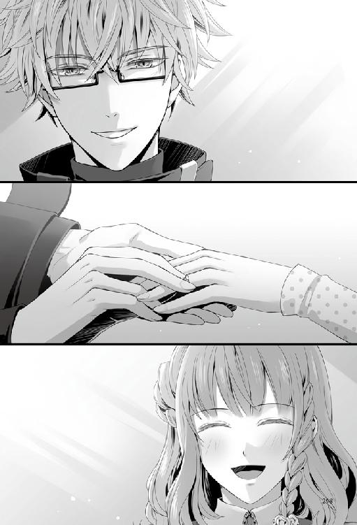
彼女が頷いたのを見届けて、緊張の糸がぷつりと切れる。深く息を吸い込んでから安堵の溜息を吐き出すと、膝から崩れ落ちそうになるほど気を張り詰めていた。それをどうにか留めるかわりに、指先が僅かに震えている。
「......そうなのか？」
「はい」
「そうか......。やはり、恋愛における手順なんてものは役に立たないのだな」
プロポーズのセリフも実はいくつも考えていたのだが、いざ本番となると不思議と全く違う言葉が口をついた。恋愛に手順など関係ないと改めて実感させられる。
全てのものごとを形式にあてはめて論理で説いていた私が、ずいぶんと適当になったものだ。
──いや、彼女と出会って、彼女を想うようになって、時に自分の感情のままに動いてみるのも大切なんだと学んだのだ。
「......ありがとう。私は今、おそらく人生で一番幸せだ」
『１年後』
ちらほらと雪が舞いはじめた市街地の歩道を、彼女と肩を並べて歩く。古い歴史を感じる石畳が、私たちの足音を乾いた空へ届けている。
曇りがちなロンドンの空模様だが、今朝はめずらしく青空が覗いていた。
そうはいってもまだまだ空気は寒く、彼女のくれたマフラーが私の体温維持に大いに貢献してくれている。
「晴れて良かったですね。絶好の買い物日和です」
「ああ、まったくだ。だが──」
言葉を区切ってぐるりと周りを見渡すと、道端に出ている露店の隙間を埋めるように人々がうごめいている。
「さすがに休日は人が多いな」
彼女とはぐれないようにぴったりと寄り添いながら歩を進めた。お互いに携帯は所持しているが、この人ごみの中ではぐれたら見つけるのに苦労しそうだ。
そんなことを考えながら彼女を気にしている私に対し、彼女はというと相変わらずのマイペースぶりで、
「......私たち、本当にロンドンにきたんですね」
どこか遠くを見つめながら、感慨深げに呟いた。
彼女がロンドンに来てから、何度同じ言葉を聞いただろうか。
「またそんなことを言っているのか？」
「だってまだ信じられなくて......」
「学会での発表は非常に好評だったし......、なにより君の語学能力が飛躍的に向上し、留学生として申し分ない成績だったからだ」
「は、はい......」
確固たる事実があるからこそ、今こうしてここにいられるのだ。彼女の努力や日本に残してきた結果はまやかしなどではなく、信じられないほど危ういものでも決してない。
「あの成長ぶりは私の予想を大きく上回るほどだった」
「それは、だって......その......、上達しないとケントさんと離れ離れになっちゃう、と思って......。勉強にも力が入ったというか......」
最後の方の言葉は、照れた彼女の口の中に消えていった。
「......っ」
つまりは、私のために努力してくれたということだ。
そこまで言われて嬉しくないはずがない。愛しさに鼓動が跳ね上がった。
「......手を、出したまえ」
「え？」
「......急に手を繋ぎたくなった。だから君の手を取りたい。それではいけないか？」
「......はい」
日用品を買った紙袋を片手に持ち変えて、彼女が差し伸べてきた華奢な手を取り指を絡める。手袋越しに重なった手から伝わる彼女の体温がまた、私の胸を熱くした。
隣に彼女がいるのだと確かめる度に、幸せを噛みしめる。
「それに......そうだな、君は小さいからすぐに見失う。先日の二の舞は御免だぞ」
恥ずかしさから手を繋ぐことの理由を探して、先日の出来事を思い出した。
「ロンドン・アイでのことですか？」
「そうだ。君が迷子になった時は、本当にどうなることかと思った。あんな肝を冷やすような体験は、もう勘弁してほしいものだ」
「すみません......」
反省はしているようで、彼女は首を垂れて素直に詫びてきた。
ロンドン・アイというのはテムズ川沿いにある観覧車のことだ。観光地としても有名で、多くの観光客で常に賑わっている。
そんなところにわざわざ出向いたのは、フラットシェアで知り合った友人に、デートをするならぜひにと勧められたため、散策がてら彼女と立ち寄ったのだ。
観覧車の入場に並んでいる最中、彼女が飲み物を買ってくると言って少し列を外れ、出かけたきりいくら待てども戻って来なかった。しびれを切らして携帯に連絡を入れると、あまりの人の多さに自分の居場所がどこかわからなくなってしまったのだという。
結局、観覧車には乗らず、その日は彼女の捜索でほとんどが潰れてしまった。
予定が潰れたのは良いのだが、私が見つけるまでの間に彼女が危険な目に遭ってはいないかと気が気でなかった。安定した国家ではあるが、私たちにとっては異国の地。未だ慣れない彼女が心配でならないのだ。
「私と違ってケントさんはロンドンでも目立ちますよね。待ち合わせの時、すごく助かります」
心配の根源の彼女が、緊迫感に欠ける口調で言う。
「おかげでよく話しかけられるがな。外国の人間にとっては、大柄の日本人がそんなに珍しいのだろうか」
「そういえば、さっきも露店の方に話しかけられてましたね。会話が速かったので、私は上手く聞き取れなかったんですけど......何をお話してたんですか？」
「ああ、あれか。『奥さんと買い物か』と聞かれていた」
「......なんて答えたんですか？」
「『正式に言うとまだ妻ではないが、いずれそうなる予定だ』と答えた。この回答は間違っているか？」
「いえ、合ってます。でも、改めて言うと照れますね」
彼女はほんのり朱色に染まった頬を掻いてはにかんだ。
「事実を言ったまでだ。何を照れることがある。それに、私にだって君を堂々と自慢したい時くらいあるんだ」
「......自慢したんですか？」
「可愛い恋人でうらやましいと言われたんでな。『いいだろう』と答えてやった」
「ふふ......ケントさんったら」
「そうしたらその後に──」
その後の会話の展開を想起して、はたと口を噤む。
「......ああ、いや、会話は確かそこで終わったな」
「そうですか？ 結構、長くお話ししていたと思ったんですけど」
「気のせいだろう」
「......本当にそこで終わりですか？」
「............」
言葉を濁す私に、彼女はいつになく積極的に詰め寄ってくる。
「............『今日はいい天気だな』と」
誤魔化してみたが、
「天気なんて単語は出てませんでした」
きっぱりと彼女に否定されてしまった。
しかし、否定できるということは、彼女も会話の内容をしっかり理解できているのではないか──？
「............。君も聞き取れてるじゃないか」
「あ......」
図星を突かれ、彼女の表情がぎくりと固まった。
そしてすぐに愁傷な眼差しで私を見上げ、身を竦める。
「......ごめんなさい。でも、ケントさんの口からちゃんと聞きたかったんです」
「............」
私の理性をくすぐる態度に、胸がきりりと締め付けられる。
「......君。そういうことを、あまり外で言うな」
「......？」
「あまりいじらしいことを言われると、今すぐここで君の唇を奪いたくなる」
「......！」
「大丈夫だ、わかっている。たとえ外国でも、こんな人前でキスをするほどデリカシーに欠ける男ではない。それに......焦らずとも、部屋に戻れば、いくらでも君に触れることはできる。そうだろう？」
あえて問うと、彼女は更に頬を上気させて小さな声で「......はい」と頷いた。
「......露店で交わした会話の続きだが。君のことを散々自慢していると、店主が私に聞いたのだ。彼女を──つまり君のことだが。『彼女を愛しているか？』と、そう質問をされた」
「はい」
「......なんだ。そこも聞き取れていたのか？ それなら、その後もわかっただろう」
「実はだいたい......。でも、できれば日本語で聞きたくて」
「............」
彼女の可愛らしいわがままは、時に私を困らせ、面映い気持ちにさせる。
「......一度しか言わないぞ」
「はい」
「............」
面と向かって告げるには多少の気恥ずかしさが込み上げるが、彼女がその言葉を望むのなら、それをも振り切る覚悟で伝えよう。
「──誰よりも愛している。世界一大切な女性だと、そう言った」
言い切って彼女を窺うと、満面の笑みで言葉を受け取っていた。
「......今度は聞き取れたか？」
「はい、ばっちりです」
「私に言わせたんだ。帰ったら君にも言ってもらうぞ？」
「帰ったら、でいいんですか？」
強気に問い返してくる彼女に、態勢が整っていなかったこちらが動揺させられてしまう。
まったく、恋愛において彼女に勝てる気がしない。
「っ......こ、ここで言われても少々対応に困るのでな。......部屋で、ゆっくりと聞かせてもらいたい」
「じゃあ......早く帰りましょうか」
「ああ......そうだな、そうするとしよう」
颯爽と歩みを進める彼女に、少しの反撃をと、残りの精一杯の勇気を振り絞って口を開いた。
「..................それから、君の言葉を聞いた後、しばらくは......、君を......傍から離すつもりはないからな。覚悟しておくように......！」
「ケントさん......。はい、覚悟しておきます」
ロンドンの晴れやかな空に、彼女の嬉しそうな声が響き渡った。
（終）
著者／鈴木あつみ
デザインファクトリー所属のシナリオライター。
カバーイラスト／花邑まい
デザインファクトリー所属のイラストレーター。代表作は「AMNESIA」「AMNESIA LATER」「AMNESIA CROWD」「デザート・キングダム」（すべてオトメイト）
挿絵／ｎａｎａ
デザインファクトリー所属のグラフィッカー。「薄桜鬼」シリーズや、「AMNESIA」シリーズなど多くのオトメイトタイトルの彩色を担当。
アムネシア レイター イッキ＆ケント編
電子版発行 ２０１５年10月20日
著 者 鈴木あつみ
イラスト 花邑まい／ｎａｎａ
監 修 アイディアファクトリー株式会社
デザインファクトリー株式会社
発行者 長谷川 洋
発行・発売 株式会社一二三書房
〒１０２－００７２
東京都千代田区飯田橋２－14－２ 雄邦ビル
電 話 ０３－３２６５－１８８１
デザイン erika
©HIFUMI SHOBO/OFFICE SIX
©IDEA FACTORY/DESIGN FACTORY
本書の無断複製（コピー）は、著作権上の例外を除き、禁じられています。
●本書は『アムネシア レイター イッキ＆ケント編』（２０１５年９月20日 初版第１刷）に基づいて制作されました。